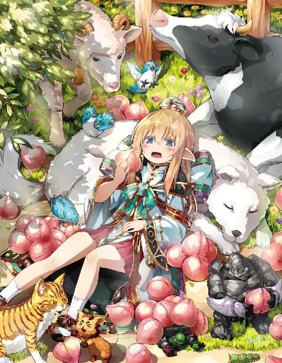
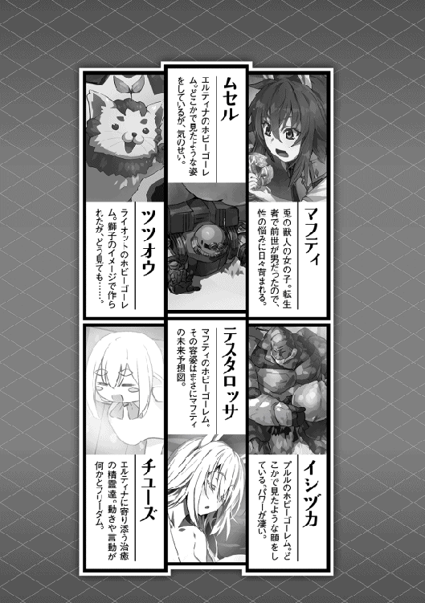

| 食いしん坊エルフ5 | |
| なっとうごはん | |
| TOブックス (2017) | |
ゴーレムマスターズ本戦がついに開幕！ 次々と襲い来るライバルたちを前に、白エルフ聖女エルティナ（中身おっさん）は友達やホビーゴーレムたちと共に果敢に立ち向かう。だが勝ち進んだ決勝戦でエルティナは、オモチャ競技に巧妙に隠された、世界をも揺るがす巨大な陰謀と邂逅する。------義を見てせざるは勇無きなり。素晴らしきグルメの日々に喝采を。それが食いしん坊エルフの誓い。
イラスト●らむ屋
デザイン●木村デザイン・ラボ


朝食 グランドゴーレムマスターズ予選開始！
◆◆◆ エルティナ ◆◆◆
「俺はせっかくだから、この牛丼を選ぶぜっ！」
黒いローブとの戦いを終えた俺は、怒りのあまり空腹になってしまった。実際に戦ったのはムセル達なのだが、細かいことは言いっこなしだ。現在、俺達はハッスルボビーに隣接するＨＧＤ内のフードコートで、昼食を摂ろうとしているところであった。
俺とクラスメイトで獅子の獣人ライオットは牛丼を、桃色のふわふわヘアーの少女プルルは親子丼を注文して円状のテーブルに着くと、すぐに牛丼が運ばれてきたではないか。流石は牛丼、早い、美味い、安いは異世界であっても健在であったのだ！ ここの牛丼は非常にシンプルであった。具は牛肉だけである。どうやら玉ねぎは入っていないようだ。
「きたきたぁ、へへっ、やっぱり肉オンリーだよな！」
肉に飽くなき情熱を捧げる肉食獣のライオットは、ほかほかの牛丼に貪り付いた。
「ふきゅん！ 負けるかぁ！ いっただきま〜す！」
当然、俺も負けじと牛丼攻略に乗り出す。まずは香りから堪能だ。ふぅわりと香る醤油ベースのタレが俺の食欲を強烈に揺さ振り、胃袋を戦闘状態へと移行させる。玉ねぎは入っていないようだが、何故か玉ねぎの香りはする。これはもしかすると、ペースト状にしてタレに混ぜているのかもしれない。これは牛肉を際立たせる一つの戦略なのだろう。
続いてタレがよく染みてそうな牛肉を口に運ぶ。噛みしめると、じゅわ〜と脂が溢れ出し、タレと混然一体となり見事な味を作り出した。やはり玉ねぎの姿は見えないが、その存在感はあった。玉ねぎの風味と甘さを牛肉が纏っていたからだ。
ううむ、こういう方法も有りだな。肉好きには堪らない牛丼に仕上がっている。俺が自分で牛丼を作る際には、牛肉だけを煮詰めて玉ねぎはサッと塩コショウで炒め、牛丼に盛り付けるだけにしている。こうすることによって、玉ねぎのシャキシャキ感を味わえるのだ。その際は決して炒め過ぎてはいけない。玉ねぎが、ふにゃりとなってしまっては台無しになってしまうからだ。そして、少し辛みが残っていればとても喜ばしい。
ピリッと辛い玉ねぎを食べ口の中を引き締める。すかさず牛肉とご飯を食べると、その美味さが段違いに変わっていることに気が付くはずだ。この手順を逆にしてもいい。だれてしまった口の中を玉ねぎで引き締める。再び新鮮な気持ちで牛丼を味わえるはずだ。
「がふっ、がふっ！ ぷはぁ！ うめぇ！ おかわりだ！」
早過ぎる、おまえ絶対に噛んでないだろ？ ライオットは俺が牛肉を噛みしめている間に牛丼を完食してしまった。更には、おかわりを注文する始末である。
確かに牛丼は安い。銀貨三枚で凄いボリュームの牛丼が食べれてしまう。しかしだ......塵も積もればなんとやらである。これでは、またしてもツツオウのオプションパーツを買えずに落ち込む彼の姿が見られそうである。少しは学習してくれ（呆れ）。
そんなライオットの姿を呆れ顔で見ていた俺であるが、俺の牛丼はまったく減っていない。料理には美味しさの制限時間があるのだ。もたもたなどしてはいられない。さぁ、早く食べ進めよう！ それにしても凄い量の肉だ......まさに、牛肉を食べていると満足できる。牛肉の下にあるであろう、ほかほかのご飯の姿が見えないぞ。
箸で牛肉をかき分けると、ようやくご飯の姿を確認できた。はっきり言って、ご飯よりも牛肉の量の方が多いと思われる。よくて半々か？ それほどまでに肉々しい丼であった。これで並盛だというのだから豪勢な物である。流石に食べきれない感じがしたので、追加注文でやってきたライオットの牛丼（大盛・銀貨五枚）の上に載せて、食べきれる量に調節することにした。もちろん、彼は大喜びである。
ご飯を発掘することができたので、さっそく肉とのコラボを堪能することにした。やはり、牛丼は肉とご飯を一緒に食べてなんぼであるからだ。しっかりとタレが染み込んだご飯と牛肉を口に運び咀嚼する。この最初の一口目が、俺を最高に幸せな気分にしてくれるのだ。牛肉からじゅわ〜と溢れる甘い脂がタレの染み込んだご飯と合わさり、えも言えぬ味わいを作り出した。これはホカホカのご飯だからこそできるのだ。冷えてしまったご飯ではこの効果が半分以下になってしまう。
あぁ、これは堪らない。下品ではあるが丼を持って牛丼を口に掻き込むようにして食べる。丼と箸が当たりカツカツと音を立てた。その音が、俺に牛丼を食べているという充実感を与えてくれる。やはり、牛丼はお上品に食べる物ではない、庶民にお安い値段で、しかも値段以上の満足感と活力を与えてくれる素晴らしい料理なのだ。
ある程度、食べ進めたのであれば、口直しに紅ショウガを食べるのが良いだろう。据え付けの容器から、千切り状になった紅ショウガをトングで牛丼の上に適量載せた。醤油ダレで黒く染まった肉に赤い紅ショウガが良く映える。その見事な色合いを堪能したら紅ショウガを食べて口を引き締める。ピリリとした紅ショウガが口の中をさっぱりとさせ、更には新たな食欲を引きずり出すではないか。いける......俺は、まだ牛丼を食べることができるぞ！ そう確信した俺は、再び牛丼を口に掻き込み始める。あぁ、牛丼を口に運ぶ作業が楽しい。
「ひゃっほう！ おかわりがきたぜ！ こんどは生卵も追加だ！」
どうやらライオットはトッピングで生卵を追加したらしい。丼の上に所々白くなっている白身と黄色い卵黄が食欲をそそる。やはり、牛丼には生卵であろう。変化球としては温泉卵などもいい。そこら辺は好みだろう。彼は黄身を突き崩し、肉によく絡めて食べだした。簡易版のすき焼きと言ったところだろうか？ 美味くないわけがない。さも言えば甘じょっぱくて、くどくなりがちな味付けを卵黄が優しく包み込み、牛丼をまろやかな味わいへと変化させるのである。これにより、牛丼は品格を一段上げることになるのだ。俺は牛丼を完食できる自信がなかったので泣く泣く断念したのだが、ライオットであれば問題なく完食することであろう。俺も完食まで目前に迫った。さぁ、ラストスパートだ。
残り僅かとなった牛丼に、俺は七味唐辛子を振りかけた。これは、牛丼に新たな香りと刺激を加え、最後の最後まで牛丼を楽しむ、という貪欲さが生み出した方法なのだ。それは期待どおり効果を発揮した。七味唐辛子の豊かな香りと適度な辛さが、牛肉の新たな味を引き出す。これは一味ではいけない、七味唐辛子だからできることなのだ。辛さを追求するのであれば一味、香りを堪能するなら七味である。
「はふっ、はふっ......ごくん。ごちそうさまでしたっ！ げふぅ」
俺は牛丼を完食することに成功した。空になった丼が俺の達成感を満たしてくれる。
「お待ちどうさまでした、親子丼です」
俺達が食べ終える頃に、ようやくプルルの注文した親子丼が満を持してやってきた。そう、ライオットは山盛りの牛丼を一瞬で食べ終えてしまったのだ。しかも、俺よりも早く。
「はぁ......この蓋を開ける瞬間が堪らないねぇ」
丼の蓋を開けたプルルがうっとりと呟く。彼女は親子丼が好物なのだそうだ。蓋を開けられた親子丼からは、ほわっと湯気が立ち上り黄色く輝くその姿を露わにした。三つ葉の緑が素晴らしく美しい。親子丼には三つ葉が欠かせないな。入っていないと寝惚けた感じになってしまう。プルルはその半熟状に仕上げられている親子丼に、スプーンを突き入れて口に運んだ。こらこらライオット、ガン見し過ぎだ。今食べたばかりだろうが。
「んふぅ......おいひぃ」
彼女は恍惚とした表情で親子丼を食べ進めてゆく。こんなに美味しそうに食べられると、食事を終えたばかりだというのに、また食べたくなってしまう。まったくもってプルルは罪作りな女性であった。今度は親子丼を頼もうかな？（じゅるり）
もう一人......いや、一匹の同伴者であるいもいも坊やには、桃先生の芽から頂いてきた葉っぱをあげていた。むしゃむしゃと美味しそうに食べている。やはり、皆で食べるご飯は美味しいものだ。彼は時折、俺達を見上げてその喜びを表現していた。
「そうか、そうかぁ......沢山お食べ」
俺も彼の喜ぶ姿を見て思わず笑みがこぼれる。少し前から俺に付いてくるようになったいもいも坊やであるが、何故か随分と昔からの付き合いであるような錯覚を感じている。きっとそれは、俺の日常に彼らがいることが当たり前になってしまったからだろう。
「はぁ、美味しかった。やっぱり、ここの親子丼は最高だねぇ」
プルルといもいも坊やも食事を終えたので、明日のグランドゴーレムマスターズ予選に向けて練習しようと練習用のリングに向かうも、そこは既に満員であり順番がいつ回ってくるか不透明な状態であった。流石にライバル達も最後の追い込みに余念がないようだ。殆どの者は持参した昼食をこの場で食べながら練習に勤しんでいる。どおりでフードコートが空いていたわけだ。
「う〜ん、やっぱりこうなったねぇ。どうしようか、このまま順番が来るまで待つかい？」
「これは、いつ順番が回ってくるかわからないな。時間が無駄になるぜ」
ライオットですら呆れ顔になっていた。確かに彼の言うとおり、ここで待つのは時間の無駄になるだろう。であれば、別の場所で練習をした方が良さそうだ。幸いにも俺達には格好の練習場があるのだから。
「よし、空き地に向かおう。そこなら気兼ねなく練習ができるはずだ」
「あぁ、空き地か。確かにそこなら遠慮なく使えるな」
「整地されていないからホビーゴーレム達の管理はしっかりしないといけないけど、ここで時間を潰すよりはマシかねぇ」
二人の賛同を得たので、俺達はヒーラー協会の裏にある空き地へと向かうことにした。空き地に向かう途中、路上でゴーレムマスターズをしている三人の子供達を見かける。正式なファイトではないのでポイントは貯まらない。彼らも練習としておこなっているようで、要所要所で戦いを止めて議論を交わしていた。きっと、彼らはチームなのだろう。
俺達もこのような方法で練習をした方が良いのかもしれない。と......ここまで考えて俺は、この方法を断念した。何故ならば、我がチームにはフリーダムキャット、ツツオウの存在があるからだ。あのにゃんこが素直に話を聞くわけがない。会話から二秒で眠りの世界の住人になれる機能を持っているのだ。その驚異の能力の前では、我々の小賢しい知恵など無力に等しい。やはり、個々に練習させるしかないようだ。我がチームの勝利はムセルとイシヅカにかかっている、と言っても過言ではない！（確信）
桃先生の芽がある空き地にまで戻ってきた俺達。そこには、やはり野良ビースト達がまったりとくつろいでいた。見知った顔がチラホラと伺える。日替わりで面子が入れ替わっているようだ。と言っても、その殆どが俺の部屋に不法侵入を果たした者達に間違いはなさそうである。彼らは帰ってきた俺達に一鳴きして挨拶とすると、再びうとうとしだして夢の中へと帰っていった。
「この空き地は日に日に様変わりするねぇ。野良犬や野良猫の溜まり場になっているじゃないか。ここで練習しても大丈夫なのかい？」
「ふきゅん！ 大丈夫だ、問題ない」
ここに集う野良ビースト達はそんな柔な連中ではない。厳しい世界を己の力のみで生き抜いている強者であるのだ。特別に俺から何かを施してもらっているわけではない。自分達で食べる物は確保しているし、寝床も別の場所にあったりする。気が向いた時にここに来てのんびりと過ごしているだけなのだ。ただし、とんぺーともんじゃ、そしてもっちゅトリオは俺の部屋の住人と化している。どうやら、そこは俺がフィリミシアにやってくる前から寝床としていた節がある。きっと俺の前の住人が、彼らを可愛がっていたのだろう。
「それじゃ、さっそく練習を始めようぜ！ シシオウ、練習開始だ！」
主人の命令を受けたツツオウは、まったく無駄のない華麗な動作で、一瞬の内に丸くなって寝てしまった。あまりに見事な一連の動きに、俺達は言葉を失ってしまう。そして、ライオットは顔を抑えて蹲ってしまった。ライオットは泣いていい。
「流石はツツオウなんだぜ......俺達にできないことを平然とやってのける」
ただし、痺れたり憧れたりはしない。俺の中では、彼が練習の邪魔さえしなければいいという結論に達している。にゃんこに練習など不可能なのだ。
「その子は相変わらずだねぇ......まぁ、それも個性かな？ さ、イシヅカ。練習をはじめようか。予選は明日だ、時間が惜しいからね」
この二人は正しいゴーレムマスターとホビーゴーレムの姿だ。当然、俺達もである。ムセルがお利口さんなので、寧ろ俺が言うべきところはない。
あれ？ 俺達も正しくなかった可能性が......？（疑惑の判定）
しかし、このまま単に練習しているだけではエスザクは疎か、ドウトンボリにも勝てないのではないだろうか？ おっさんモンスター自体はしょぼいが、彼の操縦テクニックは悔しいが称賛を送らざるを得ない。また、ドウトンボリも彼の技術を信頼しているようだ。まさに、人機一体と言えるだろう。そんな彼らに勝つためには、普通の練習をしていてはダメだ。俺がムセルにしてやれることと言えば装備を整えることと、練習方法を提供してやることぐらいである。であるならば......。
すっかりと日も暮れ、ヒーラー活動が一段落した俺は空き地へと戻ってきた。そこでは、いまだにムセル達が月の放つ優しい光を頼りに、過酷な練習を繰り返していた。何度も何度も、同じ練習を繰り返す。それはその技術を肉体ではなく魂に刻み込むかのようにも見えた。その練習に付き合っているのは、野良ビースト達やいもいも坊や達である。
俺は彼らに頼み込んだのだ。ムセルの練習相手になって欲しいと。言葉が通じるかどうか怪しかった。プルルなども、できないと思っていただろう。それでも俺が頭を下げて頼み込むと、一匹の野獣がのそりと起き上がりムセルと向き合う。それは、いつの間にか空き地に居座っていたブッチョラビであった。交わす言葉はない、彼らは互いの拳を突き合わせ模擬戦を開始したのである。
「こ、こんなことが起こるなんて......信じられないよ。食いしん坊は動物の言葉がわかるのかい？」
プルルはこの光景に目を丸くして驚いていた。俺は動物達の言葉はわからない。ただ、なんとなく伝えたい気持ちが理解できる程度だ。きっと俺同様に動物達も俺の気持ちを理解してムセルのために協力をしてくれたのだろう。
「動物の言葉はわからないよ。ただ、俺は心を込めてお願いしただけさ。」
......それが、この結果を生み出した。今では空き地にいる全ての野良ビースト達がムセル達に己の持つ技術を伝授している。ムセルはいもいも坊や達とダッキング対策を、イシヅカはブッチョラビとスパーリングをおこなっている。ツツオウは珍しく起きており、野良にゃんこ達と空き地を駆け回っていた。
「やっぱり、まだ練習していたんだね？」
一度、自宅に戻ったプルルが再び空き地にやってきた。イシヅカのことが心配になったのだろうか？ 同様に、ライオットも少し遅れて空き地にやってきた。
「お？ シシオウが練習をしてる！ うはは！ やったぜ！」
彼の場合は、自分のトレーニングのついでに様子を窺いに来ているようだ。走り込みをおこなっていたのだろう。道着が染み込んだ汗でびっしょりであった。
「おっす、プルルにライオット。これなら予選もバッチリだぜ」
俺は治癒の精霊である『チユーズ』達にお願いして、練習中のムセル達を治療してもらった。それも、練習したままの状態でだ。
『まかせろー』『おやすいごようだー』『なおすよー』『なおすよー』『ももぢからー』
当然の権利のごとく、魂の力である桃力を俺から持ってゆくチユーズ達。そして、離れた場所で激しく動き回るムセル達に取り付き治療を始める。あの激しい動きによく付いていけるものだ。ん？ まてよ......これを利用すれば、遠距離治癒魔法が作れるのでは？ できるかもしれない。よし、メモしておこう（かきかき）。
やはり、チユーズ達と治癒活動をおこなうと学ぶべきことが多い。彼らは決して自分達から、ああだ、こうだ、とは言ってこない。彼らから聞こえてくるのは本当にしょうもない呟きばかりだ。お腹が空いた、ケガ人はどこだ、おならがでそう、などといったものばかりだ。主に宿主である俺が悪い可能性があるのだが......（白目痙攣）。
しかし、彼らの見るべき点は言葉ではない。その行動だ。ちょっとした仕草や、連帯行動時におけるチームワークなど本当に驚かされるものばかりだ。それを見て俺達ヒーラーも、彼らのことを理解し成長を果たすのである。
と......ここで俺は気付いた。ゴーレムマスターもホビーゴーレムも同じことが言えるのではないのだろうかと？ ムセルのことを深く理解してやればムセルはもっと成長を遂げることだろう。これならば、ゴーレムマスターズの人機一体のコンセプトにも違反しないかもしれない。いや、きっとそうに違いない。練習が終わったらムセルとも対話をおこなっておこう。まずは、話し合うことから全ては始まるんだ。
月明かりの中、俺達はムセル達の練習を見守っていた。しかし、それは唐突に終了を遂げることになった。銀の角刈りこと、スラストさんが俺達の様子を見に来たからである。
「おまえ達、もう午後八時だぞ？ 夜も遅い、遊ぶのはここまでにしておけ」
確かに子供が外にいるには遅い時間だ。ムセル達の練習を見守っていて、時間のことに気が回らなかった。結局、プルルはスラストさんに連れられて自宅へ戻った。ライオットは走って自宅へと戻っていった。一人残された俺は、野良ビースト達にお礼として桃先生をごちそうして自室へと戻ったのであった。
一晩明けて次の日の朝。今日はグランドゴーレムマスターズ予選の日である。予選と本戦の日には、ヒーラー活動に休みを入れているので時間を気にする必要はない。少しくらいはお寝坊も許されるだろう。しかし、寝坊を決して許さない者達がいた。
「チュ、チュ、チュ！」
青い小鳥の三羽組、もっちゅトリオである。彼らはなかなか起きない俺の耳元で「チュ」と鳴きまくっていた。これでは二度寝をすることは不可能である。俺は眠たい目を擦りもっちゅトリオに「おはよう」と挨拶を交わす。俺がこのような状態にあるのは、ムセルとの対話を夜遅くまでおこなっていたからだ。
結果はあまりよくはなかった。というのは、ムセルは口下手というか無口な子であったのだ。必要最小限の意思を伝える程度であるので、なかなか彼の意思を感じ取ることができない。せめて、言葉を発せられたら結果は違っただろうが、こればかりは仕方のないことである。そのため、互いを理解するのに時間がかかりそうである。
まぁ、焦ったりはしない。こういうことは、時間をかけてじっくりとおこなうものであるからだ。今はなんとなく気持ちを感じ取る程度でいいだろう。
「おはよう、ムセル。今日はグランドゴーレムマスターズ予選だ！ がんばろうな！」
机の上で朝日を浴びていたムセルが右腕を上げ、がんばるぞ、という意思を示した。
「イシヅカもツツオウも、今日は頼むぞっ！」
同じく机の上で丸くなっていたツツオウは、気の抜けた返事をするに留まった。床で白い中型犬のとんぺーと一緒に寝ていたイシヅカがのそりと起き上がり、今日はやるぞ！ と両腕を高く上げてやる気を出している。
「うんうん、気合いも充実しているようだぁ......」
現在は午前七時だ。色々と支度をして九時までの受付に間に合うようにしなくてはならない。そうとなれば、ぼんやりとしているわけにもいかなくなる。俺はベッドを飛び降り洗面所へと向かい身嗜みを整えた。そして自室へと戻り服に着替える。着る服は着易くて動き易い水色のワンピースだ。また、学生服みたいな服を、と言われそうだが気にしたら負けだと思う。そして、そのまま流れるような動きでヒーラー協会食堂へと向かい、美味しい朝食を食べることにした。どんなに時間がなくても、朝食は欠かしてはいけないのである！
「おはよう、ミランダさん！ エチルさん！」
二人は元気な挨拶をしてきた俺に対して、満面の笑みで対応してくれた。
「おはよう、エルティナ。エチル、出来上がったかい？」
「は〜い！ 今お持ちいたします！」
エチルさんに手渡されたトレーに載っていた今日の朝食は......焼き立ての『コッペパン』に切れ目を入れて、その中にふわふわのスクランブルエッグをレタスと共に詰め込んだ物であった。他には定番の牛乳とオレンジが添えられている。焼き立てコッペパンの芳ばしい香りが、俺の食欲を強烈に揺さ振る。これは堪らない、早く席に着いてムシャムシャしなくてはっ！ しかし、その時！ 俺は邪悪な視線を感じ取ったのだった！
「......おはよう、エル。美味しそうね？」
「げえっ!? ヒーちゃん！ いつの間に背後を取ったんだぁ!?」
俺を後ろから、がっちりとホールドしたのは我が親友、黒エルフのヒュリティアだ。どうやら一週間の朝食のメニューを暗記しているようである。ヒュリティア......恐ろしい子！
彼女のおねだりに勝てなかった俺は、以前のように半分ずつに分けて仲良く朝食を摂ることになった。ヒュリティアは、日に日におねだりテクニックが上達している気がする。彼女のコッペパンにかける情熱が生半可でないことを、改めて知ることとなったのであった。
しっかりと朝食を摂った俺達は、ムセル達を伴い空き地へ向かう。そこにはライオットとプルルの姿があった。野良ビースト達も俺達を待っていたようである。
「待っていたよ、食いしん坊。いよいよ今日は予選大会だね、がんばろうか」
プルルが桃色の癖っ毛を、ふわりと風に揺らしながら俺にそう告げてきた。その笑顔は彼女の年齢にしては非常に魅惑的なものである。やはり、プルルは将来エロい娘になるのは確定事項であるようだ。
「お、きたきた。おまえら、今日は気合い入れろよ？ 俺自身は戦いに参加できないけど、妙に熱くなっているのがわかっちまうぜ」
自分の主人を確認して喜びを露わにしたツツオウが、ライオットの下に駆けつけて彼に飛び付いた。そのツツオウを、優しく受け止める彼の笑顔は父親のそれである。
「おはよう、ライ、プルル。いよいよ予選だな。遂に練習の成果が試される時が来たわけだ。ムセル達も、朝からそわそわしていたぞ」
「......おはよう、皆。今日は応援するわね」
俺とヒュリティアが皆に挨拶すると同時に、草むらから『いもいも』と緑色の芋虫達が飛び出してきた。いもいも坊や達である。その内の一匹は、いつものとおり俺の体をよじ登って左肩に落ち着いた。これで、いつもの面子が揃ったことになる。
「よし、これで全員揃ったな。今日の予選を勝ち進んで、必ず本戦に出場するぞ！」
簡単だが決意表明をおこなう。これによって、ムセル達の気合いは最高潮に達したことに間違いはなさそうであった。そのホビーゴーレム達は桃先生の芽の前で、互いの武器を掲げ出した。ムセルはヘビィマシンガンを、イシヅカは巨大な槍を、ツツオウはぷにぷにの肉球を掲げている。
これは誓いだ。この三名は桃先生に誓いを立てているのだ。必ずグランドゴーレムマスターズ予選を突破すると......いや、もっと大きな誓いかもしれない。それほどまでに、彼らは真剣な面持ちで誓いを立てていたのだ。
「この子達は変わっているよ。普通のホビーゴーレムは、こういったことはしない。オートモードにしても主人の後を付いて回るか、命令を待っているのが大半なのに、この子達は自分で考えて行動をしている。本当に......生きているみたいだ」
ムセル達を見つめるプルルの目は、まさに尊い者を見つめる目であった。イシヅカはともかく、ムセルとツツオウは普通にでき上がってはいないので変わっていると言えば変わっているだろう。しかし、どう見ても普通に出来上がったイシヅカまでもが、自分の意思で行動しているようなのだ。変なところで寝ているツツオウを運んだり、無茶な行動を取っているムセルを止めているところをよく見かけた。この三体の中では、一番しっかりしているのではないだろうか？ 言うなればムセル達の兄的存在だ。
そもそもが、桃先生の芽が生えている神聖な場所で生まれたのだ、なんらかの不思議な力を備えて生まれてきていてもおかしくはないだろう。プルルが言うにはイシヅカは極一般的な能力の重量級ホビーゴーレムなのだそうだ。しかし、俺にはわかる。イシヅカには秘めた力が存在していることが。大人しい彼が本気を出した時に、その力を見ることができるだろう。ツツオウは......うん、わからん！ 一応、何かあるんじゃないのかな？
「よし、そろそろ行くか。いくぞ、皆！ 出陣だっ!! 行ってきます、桃先生！」
桃先生の芽に挨拶をして、俺達は空き地を後にする。いもいも達は左肩にいる一匹を残し、桃先生の芽のお世話をするようである。その短い脚をふりふりして、俺達を見送ってくれた。
「......多いな」
俺がそう言ってしまうのも無理はなかった。俺達チームの後ろには、空き地にいた野良ビースト達がぞろぞろと付いてきていたのだ。きっと、ムセル達の雄姿を見たいのだろう。
「おいおい、こいつらも連れていっていいのか？」
「どうだろうねぇ？ 僕もこういったケースは初めてだから」
これには、流石のライオットとプルルも戸惑いを見せた。
「......大丈夫じゃないかしら。この町は変なところで寛容だから」
「ふきゅん、そうだぞぉ。いもいも坊やも入場できたのだから大丈夫だろう」
確信はないが、もし「ダメだ」と言われても押し通すつもりである（袖の下）。
この野良ビースト達もまた、我々チームのよき協力者......つまりは仲間であるからだ。彼らだけが見れないのは不公平というものであろう。俺達は行列をなして、堂々と商店街を突き進んでゆく。その様を町の人々が笑顔で見守っていた。
「さ、流石に目立つねぇ......少し恥ずかしいよ」
以前に出没した奇妙な一団がパワーアップを果たして帰ってきたのだ。町の人々の視線が集まるのも無理はない。プルルは恥ずかしいのか、その可愛らしい顔を赤く染めていた。しかし、俺達とかかわっている以上、こういったことには高確率で遭遇してしまうのだ。慣れてしまえばどうということはないので、この際に慣れてしまって欲しい。
「プルル、慣れてしまえば問題ない。慣れるんだ」
「あはは！ プルル なれろれろ？ なろろろ！ あはははは！」
いつの間にか、アルアが奇妙な一団に混ざっていた。彼女がまったく違和感なく混ざり込んでいたので、俺は全然気が付かなかったのである。いったい、いつ合流してきたのであろうか？
「ふきゅん!? アルア、いつの間に混じっていたんだぁ......」
「......ついさっきよ。気付いたら、とんぺーの背中に乗っていたわ」
ヒュリティアでさえ察知できないアルアの気配。俺も気配の察知能力には自信がある方だが、ヒュリティアの察知能力は俺よりも格段に高い。その彼女が察知できないとは......まさか!? アルアは『忍者』だった可能性が!? もしくは、本当に何もない空間から『ポッ』と湧いて出てきた可能性も否定できない。ううむ、是非とも検証してみたいものだ。
そのアルアだが、俺達に付いてゆく気が満々であった。俺達が、これから戦いに行くことを察している様子は見られない。まぁ、命のやり取りをおこなうわけではないので、そこまで気にすることではないのだが。
結局は「まぁいいか」ということで収まり、俺達はハッスルボビーの隣に隣接するＨＧＤに到着した。今日はグランドゴーレムマスターズ予選とあって、入場料は無料となっているそうだ。よって、全員ＨＧＤに入れるというわけである。そのこともあってか、今日はまた一段と人が多く、大変に混雑しているようである。
「おいぃ！ 野良ビースト達！ これから中に入るが、お利口さんにするんだぞ！」
俺のかけ声に野良ビースト達は一鳴きして答えた。どうやら理解してくれたようである。さぁ、これで心配はなくなった。中に入って受付を済ませよう。
「あ、貴女はあの時のヒーラー様！ すみません、私の娘のスイミーを覚えていらっしゃるでしょうか？ もう、何日も行方がわからないのです」
「貴女は確か......あの時の」
俺に声を掛けてきたのは、チユーズを発見することの切っ掛けになった、お年寄りの娘さんであった。彼女には俺達と同じくらいの歳の娘がおり、スイミーという名の赤毛の少女である。話の内容からして、最近行方がわからなくなっている赤毛の少女とは、スイミーちゃんのことで間違いないようだ。
「誘拐なら身代金の要求があるはずなのですが、何日経ってもこないんです。なので家出の方向で捜索をおこなってもらっています。騎士団の方々も懸命に捜索してくださっているのですが、依然行方がつかめず......あの子はホビーゴーレムが好きなので、もしやと思いここにまで足を運んでまいりました」
「そうだったんですか、でも......俺もスイミーちゃんは見ていないんです」
「そうですか......ありがとうございます。私はもう少し捜しますので、これで......」
「わかりました、俺も見かけたら声を掛けておきます」
スイミーちゃんの母親は何度も頭を下げ、再び捜索へと向かった。彼女のことは心配であるが捜索のプロである騎士団に任せるのが一番だろう。そう結論付けた俺達は目的地であるＨＧＤの中へと入った。
俺達一行がＨＧＤに入ると、中にいたゴーレムマスター達や観戦者達がギョッとした表情を見せた。そして、俺達を発見して驚いた、若い従業員が慌てて駆け付けてくる。
「ちょ、ちょっと！ 貴方達！ その動物達はなんなのですか!?」
「俺達は予選に参加するために来た。そして、こいつらは応援団さ。大丈夫、お利口さんにしているから問題ないぞ。な？」
俺の言葉に野良ビースト達が一斉に頷く。ホレ見ろ、お利口さんだ。
「え、いや、そう言う問題では......う〜ん、まぁいいのかなぁ？ いいや、通しちゃえ」
その若い従業員はポリポリと頭を掻きながらも、俺達を予選受付場まで案内をしてくれた。どうやら、納得してくれたようだ。面倒臭くなったのかもしれないが。
「はい、受付は、あそこでお願いします。きみ達も、お利口さんにするようにね？」
気の良い若い従業員はそう言い残して、自分の持ち場へと帰っていった。
◆◆◆ プルル ◆◆◆
まさか、グランドゴーレムマスターズのチーム戦に参加できるとは思わなかった。実は僕ことプルル・デュランダは、人付き合いが得意ではない。人が嫌いというわけでもないし、普通にやり取りをおこなうことだってできる。でも、僕は人を避ける傾向にあった。これは、きっと性格なのだろうと思う。家庭の環境もそれを助長しているのかもしれない。
僕の両親は、僕が三歳の時に同時に亡くなっている。事故に巻き込まれたそうだ。事故の原因は、何度お祖父ちゃんに聞いても教えてくれなかった。現在は、お祖父ちゃんと二人暮らしだ。でも、普段は家に僕しかいない。お祖母ちゃんもいたが二年前に他界した。ゴーレム技師のお祖父ちゃんは、泊りがけで製造や整備をするから滅多に家にいることがない。だから、自然と一人が気楽で落ち着く、ということになるのだ。
それが、エルティナの持ち込んだ相談で一変することになった。彼女のホビーゴーレム作りの過程で、僕もまた遠ざかっていたゴーレムマスターズの楽しさ、喜びを思い出していったんだ。かつて僕にあった情熱は再加熱し、もう収まることを知らない。お婆ちゃんの体調が優れなくて看病のために辞めざるを得なかったけど、僕は縁があってこの世界に戻ってきた。やっぱり僕はこの世界が好きだ。だから......このチームで、行けるところまで行きたい。僕達が生み出したホビーゴーレム達の強さを、会場の皆に見せつけたい！
「では、こちらの用紙に名前とチーム名を登録してくださいね」
受付の若く綺麗な女性にそう説明を受けたところで、エルティナが大きな耳をぴょこっと立てて驚いたような声を上げた。いったいどうしたのだろうか？
「あ〜!? チーム名を決めてないじゃないか！ 何故、こんなことに気が付かなかったんだ！ うごごご......これがわからない」
「おいおい、今更かよ。いやまぁ、俺も考えてなかったけどさ」
どうやら、全員チーム名を考えていなかったらしい。実は僕も考えていなかったのである。チーム名はエルティナが既に考えてある、と思い込んでいたのだ。この土壇場に際してとんでもない事実が発覚し、彼女は奇声を上げながら頭を抱えて床を転がりまわっていた。それを見たアルアがマネをして一緒に転がり回っている。綺麗な服が汚れてしまうと思うのだがいいのだろうか？ あ、いもいも坊やがコロコロと転がっていってしまった。
「イシヅカ、いもいも坊やを拾ってきておくれ」
僕はイシヅカに頼んで、転がっていってしまったいもいも坊やを回収してきてもらった。しかし、その間に事態はさらに悪化してしまったのである。動物達もエルティナのマネをして転がり回って凄い光景になってしまったのだ。こうなってしまっては、僕達もそれを見ていた参加者達も、ただただ事の成り行きを見守るしかなかった。
やがて転がるのを止めたエルティナはゆっくりと立ち上がり、何事もなかったかのように服に付いた汚れを手で払った後にこう言った。
「俺は冷静だ！ 慌てふためいてなどいない！ 白エルフは狼狽えないのだ！」
「......思いっきり動揺していたじゃない」
親友のヒュリティアにツッコまれ、「おぉん！」と鳴き、顔を小さな手で押さえて蹲る白い珍獣。それでも、なんとか立ち直ると、彼女は再び口を開いた。
「ま、ままま......まだ、あわてりゅ、じゅかんじゃない！」
「落ち着けよ、エル。慌て過ぎだぜ」
更にはライオットにも指摘されて、いよいよ本気でヘコみ始めるエルティナ。賑やかなことは良いことではあるが、このままでは一向にチーム名が決まりそうになさそうだ。僕もチーム名を考えた方が良さそうである。
「んふふ......まだ時間はあるから、今から皆で考えようじゃないか」
エルティナ達とかかわるようになって、僕はよく笑うようになった気がする。これも彼女達のお陰なのかな？ 独りでいて笑うことなんて滅多にないからね。笑うことも悪くないかな、と最近は思うようになってきた。でも、少し困ったことになっているのも確かだ。
独りでいることに、最近は耐えられなくなってきたような気がする。良い傾向だとは思うけど、家に独りでいることが多い僕にとって少々困りものかな？ んふふ......贅沢な悩み事なのかもしれないねぇ。
◆◆◆ エルティナ ◆◆◆
「落ち着いた......凄く落ち着いた」
プルルにまだ考える時間があると諭された俺は、僅か二秒で冷静さを取り戻していた。現在はヒュリティアに、服に付いた埃を払い落としてもらっている最中である。そして俺は、アルアの黒いワンピースに付いた埃を払ってあげている。黒い服だから、汚れが目立つなぁ......。着替えた方が早いかもしれないぞ。
「あはは！ ごろごろ、ごろろ、ごる、ごろすっす！ あはははは！」
尚、思う存分に転がり回ったアルアは超ご機嫌であった。野良ビースト達も同様のようだ。まったく、ダメじゃないかきみ達。こんな所で騒いじゃ（さり気ない責任転嫁）。
「助かったよ、もう駄目かと思ったぜ」
「食いしん坊は大袈裟だねぇ、礼を言われるようなことはしていないよ」
そう言ったプルルの表情は可愛らしい笑顔だ。初めて彼女と出会った頃は、まるで能面のように無表情であった。あまりに表情を変えないので、手で強引に変えた実績を俺は持っている。その頃のプルルと同一人物とは思えないほど、最近はよく笑ってくれるようになった。やはり、女の子は笑った方が可愛らしく見える（確信）。
「なぁ、エル。チーム名は決まったのか？」
ライオットが手を後頭部で組み、退屈そうに聞いてきた。おまえも少しは考えろ、と言ってやりたくなるが、どうせ彼のセンスでは、ろくなチーム名になるまい。きっと、チーム『こんがり肉』とか『骨付き肉』といったものしか思いつかないだろうなぁ。よろしい、俺のハイセンスなチーム名を公表してしんぜよう。
「うむ、いい質問だな、ライオット君！ では俺の考えたチーム名を公表しよう」
俺は人差し指をピンと立て、超自信を持って発表した。
「はぐれ三匹のゴーレムが切る！ 旅情編、湯けむり舞う温泉地で起こる事件！ 家政婦は見た！ 断崖絶壁の崖で語られる真実とは......チーム」
「長い長い、なんだよ、その舞台の予告みたいな名前は？ 長過ぎて覚えられねぇよ」
むぅ、俺としては結構な自信があったのだが......。
やはり皆に覚えてもらうにはインパクトが大切だと思い、記憶に残るようなネーミングにしたのだが長過ぎたのであろうか？ 残念ながら、ライオットはお気に召さなかったようだ。しょぼん。
「もう面倒臭いから、チーム『ああああ』でいいんじゃねぇか？」
「おいぃ......もしも、グランドゴーレムマスターズを優勝した時に、ライはチーム『ああああ』優勝おめでとう！ と言われたいのか？」
「確かに......」と言って、小さく縮んでゆくライオット。それを見たヒュリティアとアルアに、ぷーくすくすと笑われている。迂闊な発言が招いた悲劇と言えよう。同情は一切しない。俺は厳しいのだ！（厳格）
「それなら、『モモガーディアンズ』というのはどうかな？ 元々はモモセンセイの芽を護るために結成されたチームなんだからさ」
肘を手で支えながら顎に手を添えて難しい顔をしていたプルルが、なかなかに素晴らしいチーム名を提案してきた。俺に多少劣るが、ハイセンスなネーミングと言えよう。特にチーム名に桃が入っているところなど、センスが光っていると言わざるを得ない。
「桃の守護者か......うん、いいじゃないか！」
「んふふ、お褒めに預かり光栄だね」
「へぇ、良いじゃないか。じゃあ、それで決定だな！」
小さくなっていじけていたライオットがいきなり復活して賛同してきたので、チーム名はプルルの提案した『モモガーディアンズ』に決定した。そして、俺達はもらった用紙にチーム名と参加者の名前を書き、受付嬢に用紙を渡して参加を申請する。
「はい、確かに受理いたしました。予選開始時刻は九時からですので、それまでに会場にいてくださいね？ 呼び出された時に、三分以内にリングに来ないと不戦敗になってしまいますから注意してください」
ナイスバディの受付嬢に説明を受けて、予選会場に備え付けてある巨大な時計を確認する。時刻は午前八時四十七分だ。何をするのでも微妙な時間しか残っていない。仕方がないので、俺達はムセル達の最終確認作業をおこなうことにしたのだった。
◆◆◆ ギュンター ◆◆◆
......憎い、憎い！ あぁ、憎い！
『何が憎いの？』
またこの声だ。我の頭の中に聞こえてくる幼い少女の声。今だに絶望せず、その心が折れない。そのことが我を更に苛立たせた。
......桃使いが憎い！ 生きている者が憎い！ 全ての命が憎い！
『どうして憎いの？』
暗闇の中、聞こえてくる幼い少女の声に我は心を乱された。かつて我は、幼い少女と大切な人と共に生きていた気がするが今はもう思い出せない。暗闇の中、我はその手を伸ばす。しかし、その手は空しく闇を掴んだに過ぎなかった。何も思い出せない、思い出すのは憎しみの記憶のみ。我を滅ぼそうとした最強の桃使い、木花桃吉郎への憎しみのみだ。憎い、憎しみしか思い出せない我が憎い。
『自分を憎んじゃダメだよ』
うるさい！ おまえに我の何がわかる！ おまえに我の苦しみが理解できるのか!? この渇きは決して癒されぬ！ ヤツを......『傷だらけの桃太郎』を八つ裂きにしても、到底癒されるとは思えぬ！ わかったら黙っておれ！
『可哀想な人......でも、諦めたらダメだよ。私と一緒に解決方法を探そう？』
「黙れと言っておろうがっ!!」
我は簡素なベッドから飛び起きた。幼い少女を宿主にしているせいで、呼吸が荒くなってしまっている。くそっ、早く新しい身体に乗り移らなくては。このような煩わしいことにいつまでも付き合っていられぬ。何が『自分を憎んじゃダメだよ』だ。
「我は......自分が一番許せず、そして憎いのだ」
では自決したらどうか？ 結論から言えば不可能だ。陰の力に支配されている我ら鬼は普通の方法では滅びることはできぬ。身体が滅びようとも腐りきった魂は滅びず、長い年月をかけて陰の力を掻き集め、再び復活してしまうのだ。死ぬことはできても、滅びることは叶わぬ。ただ、ただ......あたりに漂い、憎しみを募らせてゆくばかりなのだ。
「我は何故、自分が憎いのだろうか？ それすらも思い出せぬ」
鬼には二種類ある。初めから鬼として生まれた者と、鬼に堕ちた者の二種類だ。我は後者の方である。鬼に堕ちた者はその代償として、記憶の大半を失うことになるのだ。それ故に、我は数多くの大切な記憶を失ってしまい、自分が何者だったか思い出すことが叶わない。だが、この少女を宿主にしてから、我に異変が起きつつある。
記憶の一部が蘇り始めているのだ。それは、鬼にとって良くない場合がある。憎しみを増長させる記憶ならいいのだが、幸せな記憶である場合、我の能力は大幅に激減してしまうことだろう。幸せの記憶とは『陽の力』そのものだ。そんなものが鬼である我の中にあっては、自ら毒を飲んで苦しんでいるようなものである。
「くそ......足りぬ、憎しみが、苦しみが、絶望が。我を早く、この苦しみから解放してくれ。早く、早く......」
我はおぼつかない足取りで、我の新たな器を確認しに行くのだった。
◆◆◆ エルティナ ◆◆◆
時間いっぱいまで使用し、ムセル達の最終チェックを抜かりなくおこなった俺達は、いよいよ予選開催の声を聞くこととなった。この場に集まったライバル達は、かなりの数に及ぶ。そのいずれも、気合いの入った不敵な面構えの者ばかりであった。予選会場がサウナのように熱い。彼らの発する闘気が、広い会場を熱くさせる原因になっているのだろう。
「うおぉ、スゲェ熱気だぜ！ 肌がビリビリくる！」
ライオットもまた、会場の一変した雰囲気を感じ取っていた。予選開始と共に、お祭り気分だったゴーレムマスター達が一瞬にして戦士へと変貌したのである。ホビーゴーレム達も敏感に雰囲気を察し、戦う者へと変貌を果たしていた。......一部を除いて。
「ふにゃ〜ん......ごろごろ」
そう、ツツオウである。彼はこの闘気渦巻く会場であっても「そんなことは知らん」、といわんばかりの態度であった。この姿に、俺は彼に大物の素質を見出していた。もしかしたら、ただのおバカなのかもしれないが。親であるライオットも、これには判断に困っているようである。
そのような彼らを生暖かく見守っていると、初めての予選試合が開始された。無数にある大小の白いリングで、さまざまなタイプのホビーゴーレム達が熱い戦いを繰り広げている。足が蜘蛛のように沢山生えているホビーゴーレムや、紐のように細いホビーゴーレム。更には恐竜タイプや、昆虫タイプまで、多種多様のホビーゴーレム達が勝利を目指して己の力を白いリングの上で発揮していたのである。その戦士達の雄姿に、俺は思わず目を奪われてしまった。
「これは凄いな、ハッスルボビーでの試合とまた違って見えるぜ」
まさに、人機一体が当然でそれができなければ勝つことなど叶わない、といった空気がビリビリと伝わってくる。そのような空気に真っ向から喧嘩を売るのが俺達なのだが。
そんなことを考えていた時、一際歓声が大きくなった。その理由は一目瞭然。
「赤いシア......エスザク！」
そう、彼女らのチームが予選に登場したのだ。その瞬間、ゴーレムマスター達の目の色が変わった。ノートを片手に些細な情報を余すことなく記入し始める。シアとエスザクは、それほどまでに格が違うコンビだということだろう。
「嘘だろ......チームメンバーに、去年の個人戦準優勝機体『キュレイ』がいるぞ!?」
「まて、あの黄色い巨体は......ギ、『ギ・オン』だ！ 個人戦のトップ陣がチームを組んだっていうのかよ!? 冗談じゃねぇぞ！」
次々とゴーレムマスター達から、驚愕の声とも悲鳴とも聞こえる声が上がった。どうやらシアはとんでもない連中とチームを結成したようである。とはいえ、ゴーレムマスターズ歴の浅い俺とライオットにとっては、「へ〜そ〜なのか〜？」といった認識で終了してしまう。我がチームで一番驚いていたのは、やはりプルルであった。
「これは、まいったねぇ......まさか、彼らがチームを組むなんて。特にシアとギ・オンのゴーレムマスターであるパフティーは犬猿の仲なんだ。流石にこのチーム構成は想像が付かなかった連中が殆どだろうね」
シアはいつもどおり、変態チックな兜とマスクに赤いスーツ姿なので説明はカットだ！
パフティーと呼ばれた女性は、薄紫色の髪をお団子状にして頭部に纏めている。細く長い眉に同じく細い目。というか、目を開けているのだろうか？ 俺には閉じて寝ているようにしか見えない。いわゆる『糸目』というヤツだ。ここまで極端なのは初めて見た。スタイルに相当な自信を持っているのだろう、彼女の白い肌が覗く服は、体のラインがくっきり浮き彫りになる生地の薄そうなワンピースタイプのドレスであった。豊かな胸の先端が盛り上がっているのでノーブラなのだろう。ということは、恐らく下も身に着けていないと思われる。おパンツのラインが見えないからだ。......後でめくってみよう（野心）。
しかし、俺が注目したのは見目美しい女性ゴーレムマスターではなく、スキンヘッドで浅黒い肌をした体格の良い男性であった。彼が、白く独特な曲線的フォルムを持つキュレイのゴーレムマスターなのだろう。彼らの白と黒のコントラストが非常に美しい。まるで俺とヒュリティアのようである。
「なんで、あの人がゴーレムマスターズに参加しているんだぁ......？」
俺は決して彼を見て「うほっ、良い男！」と欲望を露わにしたわけではない。実は彼とは面識があるのである。何故なら、彼はフィリミシア城にて新人やベテランの騎士達に戦いの技術や情報を提供する、『教導隊』メンバーの一人なのだ。よって、お城にてちょくちょくと顔を合わせているので、互いの素性はバレバレである（白目）。
彼の名はハマー・アークスイムズ・カーン。気さくで優しく、大らかな心を持つ男前だ。
ん？ なんだ、結局は良い男じゃないか......？（驚きの結果）
そして、シア達の試合は始まった。相手は現在、五連勝中のチームだ。相当の実力を持っているようで、シア達が出てくるまでは本戦出場を囁かれていた。
「バ、バカな......十秒も持たないだないんて!?」
それが、この有様である。対戦相手の彼が言うように、試合は一瞬にして決まってしまったのだ。試合開始直後にギ・オンと呼ばれる巨体をもつ相撲取りのような体格のホビーゴーレムが一瞬にして間合いを詰めて、相手側のホビーゴーレム三体を纏めて場外に叩き飛ばしてしまったのだ。結果、試合は七秒程度で終了してしまった。
これには観戦者達も審判のお姉さんも絶句してしまい、暫くの間、そのリングの周りは時が止ったような状態になってしまったのだ。もちろん、俺達もお間抜けな顔の状態で固まっている。特にプルルなどは、見せてはいけない状態の顔で固まっていた。
「こほん......審判？」
「え、うぇあ？ あっ！ し、勝者！ チーム『アークジオ』！」
シアの呼びかけによって審判のお姉さんが再起動し、勢いよくシアの所属するチーム『アークジオ』の勝利を宣言する。その際に勢いが付き過ぎて、彼女の爆乳がブルンブルンと激しく暴れる。ううむ、このサイズはペペローナさんに匹敵するかもしれない！
審判のお姉さんの勝利宣言で、周囲の時間は再び動き出した。誰しもがチーム『アークジオ』の強さの一端に戦慄を覚える。その後の試合も一方的な試合展開であった。しかも、戦っているのは三体いる内の一体のみという内容だ。それでも、決着までに十秒もかかっていないのだから堪ったものではない。
「や、ヤツらは化け物か......!?」
誰かがそう呟いた、それはここで『アークジオ』の試合を観戦している者であれば、誰しもが思うことであった呟きだ。結局、シア達は三人で戦うことなく勝利を収め、本戦出場条件である七連勝を、いとも容易く達成してしまった。俺達が目標とする者達は、これほどまでの強者であったのだ。そのあまりの強さに、俺は小さな拳を握りしめていた。恐怖や怖気付いた心を抑えるためではない、燃え上がる闘志を抑えるための行為である。目標が高ければ高いほど越え甲斐があるというものだ。
それはムセルも同様であるようで、拳を握りしめ三連スコープをウィンウィンと回転させていた。イシヅカは態度にこそ表してはいないが燃えるような闘志が体から発散しているのを感じ取ることができる。そして、ツツオウは安心と信頼の欠伸！ 尚且つ、ライオットの頭の上で丸くなって寝てしまうという暴挙に打って出た！ その圧倒的な太巻き具合に頼もしさすら感じてしまう！
「勝者、チーム『アークジオ』！ おめでとう、七連勝達成なので本戦出場決定です！」
その会場アナウンスで予選会場は大いに揺れた。予選開始から二十分も経たない内に、もう本戦出場枠の一つが埋まってしまったのだから。
ん？ あれ？ 違う！ 二つ目だ！ シア達よりも早く本戦出場を決めた連中が、この会場以外の場所にいる。予選は世界各国でおこなわれているんだった！ 大型掲示板に記された本戦出場枠の数字は、もう十六から十四へと減っていたのである。これはうかうかしてはいられないぞ！
「ふ......きみか、どうやら臆さずに来たようだな？」
「っ！ シア！ エスザク！」
大型掲示板に意識を向けていた俺は、シアの接近に気が付かなかった。彼女との身長差故に俺はシアを見上げる形になる。意外におっぱいが大きいことに気付いた。おっぱいで顔が隠れてしまっているので、少し距離を取ることにする。
「おっぱいが大き過ぎて、シアの顔が見えなかったんだぜ」
「え？ あぁ、それはすまないことをした」
そう言ったシアは、ぎゅっと胸を押さえ付けて謝罪した。片方の手にはエスザクを抱えているので、残った方の手で乳房を押さえ付けているのだが、彼女の腕は細かったので、余った肉がはみ出しており妙にエロティックだ。俺とシアの奇妙なやり取りに、周囲からクスクスと笑いが漏れている。ハマーさんも、俺に気が付いたようで苦笑いをしていた。
「私達は一足先に本戦にて待つ。追ってくるがいい......エスザクと戦うために」
エスザクがその単眼を『グポーン』と桃色に輝かせる。彼はムセルに言っているのだ、「追ってこい」と。それを受けてムセルの闘志が益々溢れ出す。冷たいはずの彼のボディが熱を持っているように感じた。
「ふきゅん！ 上等だぜぇ......『おっぱい』を洗って待ってろ！」
「え？『首』じゃないのかい？」
首を傾げるシア。その奇妙な兜とマスクを外して欲しい、という連中の気持ちがわかる可愛らしい仕草であった。しかしながら、俺の言わんとしていることは伝わったようで、「楽しみにしている」と言い残して颯爽と立ち去っていった。その後ろ姿を見て俺は思った。シアは『安産型』のようだと。
ぷりんぷりん、とおヒップを振りながら去ってゆくシアを、俺はじっくりとねっとりと眺めたのであった。実にアカネが好きそうな大きなおケツである。
「お手柔らかに頼みますよ......エルティナ様」
去り際にハマーさんが小声で挨拶を交わして通り過ぎていった。常識人の彼がいるならチーム『アークジオ』は大丈夫だろう。
「どけぃ、糞雑魚ヘナチョコども！ 私の前を塞ぐなっ！」
パフティーさんが、進路を塞ぐ太っちょを蹴り飛ばし、倒れたところを靴の踵で踏み付けた。どうやら、非常識人がチームに混じっているようだ。彼女は試合中に何も喋らなかったので、どのような人かはわからなかったが、どうやら激しい気性の持ち主のようである。
「ぶ、ぶひぃ!? 痛い、痛い!? ......でも、少し快感!!」
太っちょを、ぐりぐりと踏みつける彼女の靴は赤いハイヒールである。色々な意味で昇天した変態を乗り越えて、彼女はシアと同じく、ぷりんぷりんと大きなお尻を振りつつ立ち去っていった。俺の背丈だと、丁度目線がお尻の位置になるんだよなぁ......。
まるで嵐のような、チーム『アークジオ』を見送った俺に、苦笑いをしたプルルが話しかけてきた。
「んふふ、これは負けられないねぇ。絶対に本戦に出場を決めないとね？」
「おぅ、俺達は負けられないんだぜ！ ムセル、イシヅカ、ツツオウ、頼むぞ！」
これに異を唱えたのは、チームメイトであるライオットであった。この期に及んでも、ツツオウはシシオウであると言い張ったのである。
「却下、却下だ！ その子はツツオウで登録されている！ 諦めろぉ！」
「が〜ん」
俺にとどめを刺されたライオットは、見る見るうちに小さく縮んでいってしまった。主のその様子など気にもしないで、主の頭の上で丸くなって寝続けるツツオウ。彼のお間抜けな寝顔には獅子の要素など一欠けらもない。
俺達がそのようなやり取りをしている間に、またしても本戦の枠が埋まってしまった。
「勝者、チーム『オオサカ』！ おめでとう、七連勝達成なので本戦出場決定です！」
チーム『オオサカ』のメンバーを見て俺達は驚愕した。何故なら、そのメンバーは全員が知っている顔であったからだ。チームリーダーは間違いなくヤツだ。みょうちくりんな似非関西弁を操る奇妙なおっさんモンスター、そして。残る二人はなんと俺達のクラスメイトであったのだ。一人は先日、俺と試合をしてボコボコにされたシーマとホビーゴーレムのイヘダマシだ。もう一人はドロバンス帝国出身の留学生でクラスメイトの、ウルジェ・ルレイズ・クラリマットである。
彼女は人間でありエメラルドグリーンの長い髪を、二つのお下げにして纏めている。眉は薄く短い。牛乳瓶の底ほどもある分厚い眼鏡を着用しており、その分厚さ故に、その垂れ目の中に輝く銀色の瞳を垣間見ることはできない。そして、身長が低く小太りで肉付きがいいので、密かにアカネに狙われている。
そんな彼女の持っているホビーゴーレムらしき物は、とにかく奇妙な物体であった。見た目は鏡餅に近い......というか鏡餅だ。それ以外に表現のしようがない。果たして、どのような戦いをおこなっていたのだろうか？
いや、それよりもだ......いったい彼女達がどういう経緯でおっさんモンスターのチームに加わったのだろうか？ これは見捨ててはおけない案件だ。俺は真相を知るべく彼女らとの接触を図った。
「おいぃ、本戦出場おめでとう。よくチームが組めたな」
「おおきに。せやけど、祝福してくれてるんか貶してるかわからんわ」
取り敢えずは、彼らの本戦出場を褒め称えておいた。これで、残るは俺達モモガーディアンズだけだ。シアのエスザク、おっさんモンスターのドウトンボリと戦うには、本戦出場が絶対条件となってしまったのである。
「それよりもだ......なんでチームメイトが、シーマとウルジェなんだぁ？」
当の二人は腕を組み不敵に笑っていた。その姿は、まるで悪の組織の女幹部を彷彿させるではないか！ まさか悪の道に走ってしまったのか!?
「ふ、私とイヘダマシはおまえに復讐するために、この屈辱に塗れた戦場に帰ってきたのだ！ 今度はおまえが屈辱に塗れ、部屋の隅でいじける番だ！」
どおりで、暫くシーマの姿を見ないと思った。自分の家でいじけていたのか。
「あ〜、うちは〜お小遣いが〜もらえたからです〜」
そして、もう片方はまさかの買収であった。俺とプルル、そしてヒュリティアは白い目でおっさんモンスターを見つめる。すると、おっさんモンスターは慌てて釈明しだした。
「ちゃ、ちゃうねん。チームを組んで優勝を目指すからには、個人の戦力を高める必要があったさかいにな？ シーマの嬢ちゃんにイヘダマシの武器を買うてやったんや。ウルジェの嬢ちゃんのホビーゴーレムには武器を持たせられへんから、代わりに好きなもん買うてやってや、って渡した銭やねんで！ やましい気持ちはなんにもあらへんわ！ ほ、ほんまやで？」
では何故、挙動不審になっているのであろうか？ 俺達は更に白い目をむけた。すると、遂におっさんモンスターは自供を始めたではないか！
「し、仕方がなかったんや〜！ わいはこんな姿やさかいに、誰もチームを組んでくれなかったんや！ それで、仕方がなく労働者の力である『銭の力』をつこうてしまったんや！ せやけど信じてくれ、わいは決してロリコンちゃうねん！ むっちむちのお姉ちゃんが好きやねん！ ほんまや、信じとくれや！」
おっさんモンスターの悲しい自白に、俺達は涙を禁じ得なかった。それを聞いていた他のゴーレムマスター達の目にも光るものがあった。
「......悲しい事件だったわね」
「あぁ、悲しい事件だった。でも、ヒーちゃん、これで事件は解決したんだ......」
「......ちょい待ち、これじゃあ、わいが一方的に悪者やないか？ よくよく考えたら、わいは何も悪いことしてないんちゃうか？」
おっさんモンスターが、そのようにツッコんでくるが全力でスルーした。取り敢えずはシーマとウルジェの二人が、いかがわしい取引でチームメイトになったわけではないことを知ることができて一安心である。
そのように安心していると、遂に我らが『モモガーディアンズ』の名が呼ばれたではないか！ さぁ、戦いの時は来た！ 七連勝を決めて、本戦に駒を進めて差し上げるのだ！
「ふっきゅんきゅんきゅん......出番がやってきたぜぇ、本戦でまた会おう」
「おう、しくじるんやないでぇ？ 本戦でまってるさかいになぁ！」
俺とおっさんモンスターは、互いの拳を突き合わせた。本戦で会う、という誓いをこめた行為である。自然とこういうことができるおっさんモンスターに、不覚ながら好意を持ってしまう。漢とはこういうものであるからだ。
俺達はおっさんモンスターの、チーム『オオサカ』に見送られ、白いリングという名の戦場へと向かう。そこには、腕を組み不自然な笑みを浮かべる三人の大男が待っていた。
「ふっふっふ、随分と可愛らしい子が相手になったものだ、はっ！」
「しかし、ここは戦場。どのような相手であろうとも全力で戦う、ふんっ！」
「この筋肉の輝きに誓って、ふしっ！」
スキンヘッドで筋肉隆々な上にビキニしか身に着けていない大男達が白いリングの上に立ち、筋肉を強調するマッスルポーズを炸裂させていた。小麦色に光る肌が眩しい。その足元には、同じくムキムキの筋肉をかたどったホビーゴーレム達が、主と同じポージングを取って、その筋肉の美しさを余すことなく披露していた。
なるほど、彼らはボディービルダーなのだろう。とはいえ、カーンテヒルにおいてボディービルダーは商売にはなりえない。完全に趣味の世界である。この世界に求められる筋肉は、見た目ではなく実戦的な物であるからだ。それでも、俺はその筋肉に羨望を禁じ得なかった。よって行動に移る。まず俺は白いリングによじ登った。
「素晴らしい、見事な筋肉だ。感動した！」
そして、その筋肉の素晴らしさを賛美し、拍手をしながら三人の大男に近付いた。
「ふん！ どうかしたのかな？ お嬢ちゃん、はっ！」
しめた！ 丁度、ポージングを取った彼の姿勢が低くなって、見事に割れた腹筋に手が届く！ 俺はすかさずその腹筋に手を伸ばし、その感触を確かめた。ぺたぺた。
「ふきゅん！ かちかちだぁ......」
「ふっふっふ、鍛えているからね！ ふしっ！」
「お嬢ちゃんは、筋肉の素晴らしさがわかるようだね？ はっ！」
やはり筋肉はいい。女の身になってしまった俺ではもう届かない物になってしまった筋肉の感触を、存分に堪能する。だが、俺に腹筋を触られていた筋肉兄貴に異変が起こった。プルプルと身体を震わせ始めたのだ。
「おぉ......なんという柔らかな手だ！ これはまさか、我ら筋肉とは対極に位置する『ぷにぷにボディー』か!? く......抗い難い柔らかさ！ まるで生まれたての赤子のような肌だ！ ふんっ！」
「兄者！ しっかりするんだ、誘惑に負けてはならない！ はっ！」
ここで俺に痺れるような電流が走った。自分で筋肉を鍛えられないのであれば、奪えばいいのだと！ ふっふっふ、俺は悪い子だぁ！ 筋肉さえあれば、俺はなんだってできる。
よし、筋肉を手に入れた俺が活躍する場面を、シミュレーションしてみることにしよう。
「きゃ〜〜〜！」
凶悪な魔物に敵わず倒れる、エロいビキニアーマーを身に着けたヒュリティア（成人）。非情にも褐色の艶めかしい肢体にうねうねとした邪悪な触手が伸びる。
「ら、らめぇ！ そこは違うのぉ！」
無数のウネウネ達に、ヒュリティアは美しい身体をコチョコチョされる！ このままでは彼女がくすぐったさのあまり、見せてはいけない表情を晒してしまう！
「まてぃ！」
「なにヤツ!?」
触手達が驚愕の声を上げ、不安そうに辺りを見回し始める。そして、大きな岩の上に立つ俺（幼女）に、どこからともなくスポットライトが照らされ、その見事な筋肉が露わになる！
「ＮＯ！ 触手！ ＹＥＳ！ ところてん！」
俺は決め台詞を炸裂させ、触手達に美しい筋肉を見せつけた！ ぴくぴくっ！
「す、素晴らしい筋肉だ！ ごめんなさい、許してください！」
こうして触手達は自分のおこないが間違いであったと悟り、一滴の血も流すことなく平和的な解決をしたのであった。それを見た全ての命は俺の筋肉を褒め称え、ここに悠久の平和が訪れるのであった。
いける......！ やはり、筋肉は偉大であったのだ！ 何がなんでも手に入れてやる！
「ふっきゅんきゅんきゅん......よこせ、その筋肉を！ しかも一つや二つではない、全部だぁ！」
「な、何ぃぃぃぃぃぃぃぃぃぃぃぃぃぃぃぃぃっ！ はっ！」
俺の邪悪な要求に驚愕した筋肉三兄弟は、そのあまりの内容に息がぴったりと揃った見事なポージングを決めた。俺は尚も邪悪な要求を口にする。
「俺はその筋肉を手に入れて『ツーハンドアックス』を持ち上げるんだぁ」
俺の邪悪な笑みを見てしまった彼らは、もう抗う力を持ってはいないだろう。今こそ、その筋肉を奪い『アルティメット・エルティナ』になる時が来たのだ！
「まだ諦めてなかったのかよ？ ほら、試合が始まるからリングから降りるぞ」
だが、後一歩というところで、ライオットの邪魔が入ってしまったではないか！ なんという残酷な結末であろうか？ 彼に抱えられてリングから退場する俺は、目の前にある究極の力をみすみす逃してしまったのだ！
「ふきゅ〜ん！ きんにくぅ〜！ きんにくぅ......」
逃がした力が大き過ぎて、思わず切ない声が口から洩れてしまった。がっでむ。
「あと少しで、ムキムキになれたものを」
「無理だから諦めろよ」
情け容赦なく、ライオットが傷心の俺のハートを抉ってきた。彼には、慈悲の心というものがないのであろうか？ 抗議の意味を込めて、ジッとライオットを見てくれるわ！
「ほらほら、見るならライオットじゃなくて対戦相手だよ」
プルルがそのようなことを言って、俺とライオットの間に割って入ってしまった。これでは彼女の可愛らしい顔しか見えないので抗議にならない。仕方がないので俺は対戦相手である筋肉兄貴達と向かい合った。
対戦相手である三体のホビーゴーレムは、いずれも見事な筋肉を模した人型のストーンゴーレムのようだ。見事な彫刻が動いているような感じだと思えばいい。
「ふはははは！ どうだね、我らのラブリーなホビーゴーレムは！ はっ！」
くっ、確かに見事なゴーレムだ！ しかし、俺のムセルだって彼らに引けをとるものではない。そして言っておこう......筋肉兄貴達のホビーゴーレムは決して『ラブリー』ではないと！ 奇妙なマスクを被ったムキムキのゴーレムが、可愛らしいわけがないのである。
それは隣でそのホビーゴーレムを見ていたヒュリティアの表情を見ればわかるだろう。彼女は三体のムキムキのホビーゴーレムを見て、物凄くげんなりとしていたのである。これ以上は、ヒュリティアの精神に悪影響を及ぼしかねない。心苦しいがさっさと試合を終わらせてしまおう。
「チーム『ラブリーゴーレムズ』対、チーム『モモガーディアンズ』の試合を始めます！ ルールはわかってますね？」
審判のお姉さんの最終確認に俺達は頷いた。同様に筋肉兄貴達もマッスルポーズを取ることで同意した。それを見た審判のお姉さんが顔を赤らめる。どうやら彼女は筋肉フェチのようだ。
「こほん......『ラブリーゴーレムズ』は六勝なので、この試合に勝てば本戦出場決定です。両チームとも、正々堂々と試合をしてくださいね？ はい、それでは試合開始です！」
遂に俺達の予選試合が始まった。それと同時に湧き上がる歓声。それに混じって聞こえてくるのは動物達の鳴き声だ。野良ビースト達が俺達を応援してくれているのである。これは負けられないぞ！
「ゴーレムバイザーを着けていない？ オートで試合だと!? はっ！」
「舐められたものだ、オートで勝てるほど戦いは甘くはない！ ふんっ！」
「容赦はしないぞ、行けっ！ アタル、スグル、マユミ！ ふしっ！」
俺達は舐めてもいないし、ふざけてもいない。まったく以って本気で試合に臨んでいるのだ。見せてやろう、バイザーを使わない人機一体というものを！ ムセル達の可能性というものを！
「ムセル！ まずはマシンガンを、ぶっぱなして差し上げろ！」
俺の指示を受けたムセルが、ヘビィマシンガンを相手ゴーレムの一体に撃ち込む。高速で放たれる弾丸がアタルと呼ばれたホビーゴーレムに全弾命中した！ まずは一体、仕留めることに成功だ！
「ほほう、アタルに攻撃を当てたか。なかなかやるようだが......この筋肉の前ではそのような武器など蚊ほども効かぬ！ はっ！」
彼の言うとおり、アタルは両腕で顔を隠すようなガードを取っていた。どう見ても他の部分には命中しているというのに、まったくの無傷であったのだ。これはまさか!?
「ふはは！ これこそ『マッスルガード』！ 鍛え上げられた筋肉のみが可能にする究極の防御方法だ！ ふしっ！」
その時、アタルの筋肉がピクピクと動いた。どうやら、ストーンゴーレムではないようだ。いったい何が素材なのだろうか？ 興味は尽きないが......今は試合中だ。戦いに集中することにしよう。
「シシオウ！ おまえも攻撃だ！」
ライオットがツツオウに指示を送るも、これをツツオウは華霊にスルー！ そして、リング中央にて貫禄の『丸くなる』を実行し、とてつもなく邪魔な存在と化してしまった！ 当然、ライオットは顔を手で覆って蹲ってしまう！ 鳴けるぜ、ふきゅん！
「イシヅカ、回収して！」
それを見かねたプルルが、イシヅカにツツオウの回収を指示し無事に保護。見事なチームワークだと感心するに至る。見たか、これが俺達の力だ！（白目痙攣）
「ふはは、バイザーを使用しなければそんなものだ！ そんな体たらくで我々のコンビネーションアタックがかわせるか!? アタル、スグル、マユミ、『マッスルトライアングル』だ！ ふっ！」
三体の筋肉ゴーレムがイシヅカを取り囲むと、互いの手を取り合い逃げ道を塞いでしまった。逃げ道を失い狼狽えるイシヅカ。そして、容赦なく必殺技がイシヅカに炸裂してしまった！
「五十二の筋肉技の一つ『地獄の抱擁』だ！ 筋肉に包まれて地獄に落ちるがいい！」
大層な技の名前であるが、要はただの抱き付き攻撃である。技を受けているイシヅカは物凄く嫌そうな顔をしていた。そして、『地獄の抱擁』が終わると、わざとらしく苦しんで倒れてあげたではないか！ イシヅカ......おまえは優し過ぎるぜ。
そんなイシヅカを見て驚愕していたのは、ライオットだけであった。どうやら、本当に効果があったと思い込んでいるらしい。精神的に苦痛であったと思うが、肉体ダメージはほぼ皆無であろう。見ればわかるだろうに。
「くっ、すまねぇ！ イシヅカ！ ツツオウを庇ったばかりに!!」
結果的には、そういう見方になるだろう。しかし、当の本人は感謝どころか完全なる夢の中に入り込んでいるもようであった。フリーダム過ぎて逆に凄い。
「さぁ、後はそこの三つ目だけだ！ 勝たせてもらうぞ！ ふしっ！」
こいつら......強いのか弱いのかよくわからない！（呆れ）
一応は六連勝しているし、ムセルのヘビィマシンガンを撥ね返すだけの頑丈さを持っているようだが......判断ができかねるのだ。イシヅカはやられてはいないが、ムセル一人でやらせてみてもいいのだろうか？
俺は戦力外の獅子親子は見事にスルーし、ピンク髪の癖っ毛少女の顔を窺った。彼女はムセルをチラリと見た後に、静かに微笑み頷いてくれたのだ。これを確認した俺はムセルに力ある言葉を送った。
「ムセル、戦え！ この戦いに勝利するんだ！ 俺はおまえを信じる!!」
その瞬間、ムセルがローラーダッシュで白いリングを縦横無尽に駆け始めた。その流れるような華麗な動きに俺は瞬きをするのも忘れてしまう。それはこの試合を観戦していた者も同様であった。
「オートでこの動きだと!? ありえねぇ！」
観戦中のゴーレムマスターの一人が驚愕の声を上げる。その声に呼応するようにざわつき始めた中、ムセルはまずアタルに仕掛けた。
「バカめ！ アタルのマッスルガードは無敵の防御を誇る！ はっ！」
そう、マッスルガードは彼が言うとおり驚異的に防御力を引き上げる。ムセルは攻撃の瞬間、更にローラーダッシュの速度を上げてアタルの懐に飛び込み『アームパンチ』をアタルの鳩尾に叩き込んだのである。虚を突かれた形になったアタルはマッスルガードを発動する暇もなく『くの字』になってふっ飛び、そのまま動かなくなった。
「し、しまった！ マッスルガードができなかった！ ふしっ！」
やはり、マッスルガード発動には、あの独特のポージングをしなくてはならないようだ。アタルを倒されて狼狽える、残りの二体に対してもムセルは容赦しない。再び滑るようにリングを移動し巧みな動きで相手をかく乱すると、一瞬にしてスグル、マユミの二体の背後を取り、持ちうる全ての火器を使用して一斉砲火を実行したのだ。その容赦のない攻撃を無防備な背後に受けた二体のホビーゴーレムは、ゆっくりとその体をリングに沈めたのである。この光景を見ていた者は、何が起こったのか初めの内は理解できていなかった。まるでそこだけが時間が止まったようになってしまったのだ。
「勝者、チーム『モモガーディアンズ』！」
審判のお姉さんの勝利宣言と共に再び時は動き出す。六連勝中の強豪チームのホビーゴーレム達をムセル一人で倒してしまった事実に、他のゴーレムマスター達は戦慄することになったのだ。
「ふきゅん！ よくやった、ムセル！ 俺達の勝利だ！」
俺はリング上のムセルの活躍を称える。ムセルも右腕を上げてそれに応えた。勝利を称える歓声に包まれる中、動物達の鳴き声が聞こえる。彼らもまた、ムセル達の勝利に感動しているようだ。
「後一勝......近いようで遠いものだ。はっ」
筋肉兄貴がアタルを労わるように抱きかかえポツリと呟いた。ポージングも心なしか悲しく見える。勝利という光の陰には、敗北という闇があるのだ。
「兄者......俺達は諦めない。そうだろう？ ふんっ」
「何度でも、何度でも挑戦しよう！ 俺達の夢を叶えるために！ ふしっ！」
筋肉ブラザーズは互いを抱擁した後に俺達に向き直った。
「おめでとう、きみ達の見事な勝利だ。だが、まだ一勝だ。先はまだ長いぞ？ はっ！」
「後六勝だ。油断しないで戦ってくれ。ふんっ！」
「我々の夢を、きみ達の夢と共に連れていって欲しい。ＧＧＭ......優勝を祈っているよ！ ふしっ！」
俺達は筋肉兄貴達と健闘を称える握手を交わした。そして、気付いたのだ。勝利するということは相手の夢や希望を受け継ぐということに。
負けられない、彼らが弱くなかったことを証明するために。それはリング上で俺達のやり取りを見ていたムセル達が一番分かっているのだろう。彼らの表情が、『一部の者』を除き引き締まったものになったからだ。
「あぁ、任せてくれ！ 証明してみせるさ......筋肉兄貴が戦った俺達は最強だったってことをさ！ 俺達の戦い、見守っていてくれ！」
俺の言葉を聞き届けた彼らの顔は、花の咲いたような満面の笑みであった......。
最初の試合を勝利で飾った我ら『モモガーディアンズ』は、その勢いのまま勝利を重ね、破竹の六連勝を掴み取るに至ったのである。
「ふきゅん、勝ったな......」
「ああ」
どこぞの司令官と副指令のやり取りを再現しているのは俺とライオットだ。正直な話、俺達は何もしていない。ムセル達を応援しているだけである。そのムセル達は、今や羨望の眼差しで見られていた。その一方で、新たなる脅威としてゴーレムマスター達に警戒されることになっている。
華麗な動きで相手を翻弄し、的確な攻撃で対戦相手をリングに沈める戦闘マシン。それが、ムセルの評価であった。意外だったのはイシヅカだ。彼は見かけどおりのパワータイプではなかったのだ。彼はムセルにはない知恵と策略をもって相手チームを翻弄し、チームワークを崩して弱体化させた上での勝利、という恐るべき方法を俺達に示したのである。
尚且つ、彼には見た目どおりの強力なパワーがある。巨大な槍を上手く使い、相手チームのホビーゴーレム三体を纏めてリングアウトさせるという荒業も披露したのだ。
そんな彼を見て、主であるプルルはいよいよもって危険な笑みになってしまう。『これ以上は見せられないよ！』という看板で、彼女の顔を隠す事態に発展するかもしれない！
そんな中、ツツオウは平常心のまま、リングの隅で丸くなるを使用し続けている。ここまでくると呆れるを通り越し、実は彼は偉大な王者なのではないだろうか、と信じ込んでしまう者が続出する恐れがあった。しかも、丸くなっていたツツオウに足を引っ掻けてリングアウトしてしまった哀れなホビーゴーレムが四体もいるのだ。彼は絶妙に邪魔な場所で丸くなることに長けていたのである。これは、ツツオウの策略の可能性が......？（驚愕）
この微妙に絶妙な三体のゴーレム達の連携の前に、なすすべもなく敗れ去る対戦チームが続出したのである。
「圧倒的ではないか、我がチームは」
「んふふ......そうだね。後一勝すれば本戦に出場確定だよ」
「おぉ、スゲェ！ シシオウ、後一勝だぞ！ 気合いを入れていけ！」
ライオットの声援に「ふにゃ〜」と欠伸で返すツツオウ。本戦出場が目前にもかかわらず、マイペースであることを貫き通している。流石、ツツオウだ。
「チーム『モモガーディアンズ』六連勝！ 次の試合に勝てば本戦出場が決まりますよ！」
審判のお姉さんの言葉に観客のみならず、ライバルのゴーレムマスター達もが熱い声援を送ってくる。もちろん、野良ビースト達も「わんわん！」「にゃ〜！」「チュ！」「めぇ〜！」
と熱い鳴き声を送ってきた。
ふきゅん......『めぇ〜』だと？ 野良ビーストに、そのような鳴き方をするヤツはいなかったはずだが？ これはいったい？
疑問に感じた俺は、慌てて野良ビースト応援団の方に目をやると、いつの間にか、ライゼン牧場の子羊『リリーちゃん』が紛れ込んでいるではないか。そのモコモコの毛に抱き付いているのはアルアだ。毛を刈られるのが嫌で脱走してきたのだろうか？ まぁ、大人しくしているようだからいいか。後でライゼンさんの下に送ってゆこう。
さぁ、次も『さくっ』と勝利だ！ そう思っていたが、対戦相手の顔触れを見て、俺は考えを改めることになった。
「よぉ、試合を見てたぜ。やるじゃねぇか？」
「けけけ、食いしん坊もついてねぇな？ ラストが俺達だなんてよ」
「......よぉ」
よりによって最後の相手がクラスメイトの兎獣人マフティ、ゴブリンのゴードン、オークのブルトンの三人組であったのだ。マフティがゴーレムマスターズをやり始めたことを知ってはいたが、チームを組んで予選に出てくるとは思ってもいなかった。だが、俺達にも負けられない理由がある。たとえ友人であろうとも、ライバルとして俺達の前に立ちはだかるのであれば打ち負かし、その先に進むのみなのだ。
「おまえらも、ゴーレムマスターズをやっていたのか？」
マフティ達を見てライオットは驚きの声を上げた。プルルも同様に驚いた顔を見せたが、その興味は既に、彼らのホビーゴーレムへと移っている。流石はゴーレムオタクだ。
「あぁ、今日が初めての試合だ。ぶっつけ本番さ」
流石はマフティだ、良い度胸をしている。その自信と余裕は、彼らのホビーゴーレム達を平常心でいさせることに大きく貢献しているのだろう。
さて、マフティのホビーゴーレムは一度見ているので知っている。だが、ゴードンとブルトンのホビーゴーレムは初見だ。いずれも一癖ありそうなホビーゴーレムで油断はできなさそうである。ゴードンのホビーゴーレムは藁人形のような変わったヤツだ、対してブルトンのホビーゴーレムは、青い西洋の鎧を身に纏った大きなヤツだ。イシヅカよりも大きいかもしれない。そして、てっちゃだが......彼女はマフティお手製の戦闘服を身に纏ってご満悦であった。
基本は黒いバニースーツだろう。灰色のストッキングが艶めかしい。それに市販のアームガードやレッグガードなどの防具を着けている程度だ。動き易さを追求したスタイルのようである。でも何故、ハイヒールを履かせているのか......これがわからない。
そのような姿のてっちゃを見た他のゴーレムマスター達は、皆驚きと羨望の眼差しを送ることとなる。当然だろう。こんなホビーゴーレムが存在するなど、思いもしないだろうから。はっきり言って、てっちゃはホビーゴーレムという名の何かだ。何故なら......。
「あう、あういあ〜！ あっあっ、あうー！」
喋るからだ。ツツオウのように鳴くのではなく、喋るという点で既に規格外である。
ん？ イヘダマシも喋るだと？ 聞こえんなぁ......（邪悪顔）。
「ほぅ......てっちゃも、やる気満々のようだな。だが、勝つのは俺達『モモガーディアンズ』だ！ ムセルが披露する、驚異の戦闘技術に度肝を抜かれるがいい！」
俺の宣戦布告に対し、マフティは余裕の態度を見せる。この余裕はいったい!?
「へへっ、食いしん坊こそ、テスタロッサの力を見て度肝を抜かれるんじゃねぇぞ！」
睨み合う俺とマフティ！ 相変わらず可愛い顔だ！ 凄んでも全然怖くない!!
「は〜い、そろそろ試合を始めますよ〜？」
しまった！ 審判のお姉さんを困らせてしまった！ おのれマフティ、俺を精神的に動揺させる作戦に出たのか!? 油断のならないヤツだ！
「ほら、行くぞ。エル。皆持ち場に着いちまったんだから」
そのように戦慄していた俺は、マフティ達に華麗にスルーされ、放置状態になっていたところをライオットにサルベージされ、事なきを得たのであった。がっでむ。
「チーム『モモガーディアンズ』対チーム『マフティちゃんズ』の試合を始めます！」
審判のお姉さんがそう告げたところでマフティとゴードン、そして俺は吹き出してしまった。これは卑怯なトラップである。
「待て待て！ 俺は『マフティズ』って書いたぞ!? なんで『マフティちゃんズ』になってるんだよ!?」
そして、原因に気が付いたのかゴードンを睨みつけるマフティちゃん。
「ゴードン！ おまえだな、チーム名に『ちゃん』を付け足したのは!?」
「さぁて、なんこのとやら？」
迫るマフティにそっぽを向き、しらばっくれるゴードン。しかし、笑いを堪えきれないのか今にも大爆笑しそうである。
「ふっきゅんきゅんきゅん......良いチーム名じゃないか......ぶはははははははは!!」
そして俺は容赦なく爆笑した。俺の脳裏には女装までして、てっちゃに服を買いに来た、健気な『マフティちゃん』の姿が細部にわたって再現されていたのである。俺の爆笑する姿に耐えられなくなったのか、遂にゴードンも腹を抱えて笑い出した。
「ひー、ひー、腹がいてぇ。我ながら最高のチーム名になったぜ」
「ゴードン、おまえなぁ......覚えてろよ」
しかし、爆笑しているのは、事情を知っているであろうゴードンと俺だけのようだ。当事者の一人であるアルアは、この現状をよくわかっていないようで首を傾げていた。
「......エル、マフティと何かあったの？」
俺達が笑う理由を、不思議そうに見ていたヒュリティアが訊ねてきた。
「あぁ、それはだな......」
「言うな〜!! お姉さん、早く試合を開始してくれっ！」
顔を真っ赤にさせたマフティちゃんが、慌てて試合開始を審判のお姉さんに促した。ホビーゴーレム達も、さっさとリングに上がり戦いの時を待っている。
「えっと、チーム『モモガーディアンズ』はバイザーを使用しておりませんが、貴方達もゴーレムバイザーを使用しないのですか？」
審判のお姉さんの言うとおり、マフティ達はゴーレムバイザーを身に着けていなかった。
「あぁ、俺達もオールオートプレイだ。構わねぇから試合を始めてくれよ」
なんと、彼らもオートプレイを選択していたのだ。ここにオートプレイ同士の戦いが決定したのである。彼らは余程自信があるのか、えらく余裕な態度であった。
「はい、試合を始めますよ？ チーム『モモガーディアンズ』は現在六連勝中です。この試合に勝てば本戦出場決定ですよ。それではゴーレムファイト、レディ......ゴー！」
完全オートによるホビーゴーレム同士の戦いが始まった。まず動いたのはムセルだ。我がチームの切り込み隊長である。彼はローラーダッシュで右回りに移動しながら、手に持ったヘビィマシンガンを乱れ撃つ。
「......ダイブルトン」
ブルトンの呼びかけに応えた青い甲冑姿の巨大なホビーゴーレム、ダイブルトンがてっちゃとわららの盾となり、放たれた弾丸をその身で受ける。
「けけけ......わらら、動きを封じ込めろ！」
ダイブルトンの陰に隠れていた藁人形のわららが、自分の体の一部を解しムセルを絡めとる。ムセルの動きを封じることができるとは......見かけ以上にパワーがある！
「テスタロッサ、とどめだ！ おまえの必殺技を叩き込んでやれ!!」
「あういー！ あうー！」
てっちゃが勢いよく人差し指をムセルに向ける。その拍子にその豊かな乳房がぷるんと揺れた。
その光景にゴーレムマスター達は拍手を送ってきた。俺も敵でなければ拍手を送っているところだ。しかし、事態は深刻である。てっちゃの指先に魔力が集まっているではないか！ まさか、ホビーゴーレムが魔法を使う!?
てっちゃの指先に光が集まり球状になり膨れ上がった瞬間、それは光線となってムセルに放たれたのである。光属性下級攻撃魔法『レーザーショット』である。この魔法は指先から熱光線を放つ魔法であり、『シャイニングボール』のように完全な対アンデッド用の魔法ではなく対人にも使用できる。威力、速度、貫通力に優れた魔法であるが、光属性の素質が高い者がこの世界には少なく、なかなかお目にかかれない魔法である。それをホビーゴーレム？ である、てっちゃが使用したのだ。この事実に、俺達は驚愕した。
ちなみに、俺が『レーザーショット』を発動すると、指先から光線が垂れて閃光花火のように頼りない光をパチパチと出すに留まる。もちろん、攻撃力など皆無だ。
「バカな、ホビーゴーレムが魔法を使うだと!? あり得ない！」
ゴーレムマスターの一人がそう叫んだ。しかし、現実に彼女は魔法を使ったのだ。放たれた『レーザーショット』はムセルの九連ミサイルポッドを破壊してしまったのだから。
「ムセル！ ガトリングガンだ！」
俺はムセルに、左わき腹にセットしてあるガトリングガンが使用できることを教える。その部分はわららに封じ込められていなかったのである。ムセルはすかさず俺の声に反応してガトリングガンを乱射した。
「イシヅカ！ カバーに入って！」
プルルがイシヅカに指示を与える。この際、彼女はイシヅカに『命令』をしてはいない。つまり、イシヅカの判断に全てを委ねているのである。タイムラグが起こらない分、早く行動に移ったイシヅカは、その巨大な槍を己の身体を解してムセルを封じ込めているわららに向かって振り下ろした。
「わらら、退けっ！」
ゴードンの声に反応し、素早く戒めを解いて下がるわらら。その結果、イシヅカの攻撃はリングを傷付けるに留まった。なんというホビーゴーレムだ。主との意思疎通が完璧じゃないか!?
「シシオウ！ こちらも、やられっぱなしじゃいられないぜ！ 攻撃だ！」
「ふにゃ〜ん」
ツツオウは主のライオットの指示を華麗にスルーし、リング中央にて堂々の『まるくなる』を決行！ 見事なオブジェクトと化したではないか！ なんというホビーゴーレムだ。主との意思疎通が滅茶苦茶じゃないか⁉ あ、うん。ライオットは泣いていい。
「へへ、やっぱりその猫は戦力外のようだな。これは俺達の勝ちで決まりだぜ」
マフティの揺さぶりに乗ってしまったライオットは声を荒げて反論した。
「くそっ、言いたい放題言いやがって！ シシオウは獅子だ！ 猫じゃない！」
「えぇ〜？ そっちに怒るのかい!?」
プルルが見事なツッコミをおこなったため、俺の出番はなくなってしまった。がっでむ。
だが、マフティの言うことも的外れではない。実力が拮抗している場合、やはり数が多い方が有利なのだ。いくらムセルとイシヅカが優秀なホビーゴーレムだとしても、今戦っている、てっちゃ達が相手では今までのようにはいかないだろう。
だとするなら、俺達が勝つには条件を同じにするしかない。速攻で相手チームの一体を集中攻撃して撃破し戦力をそぎ落とす......これしかない。
「ムセル、イシヅカ！ てっちゃを集中攻撃だ！」
「ちっ！ やっぱり狙ってきたか！ ブルトン！」
「......ダイブルトン、行け」
俺の作戦を理解したムセルとイシヅカはてっちゃに攻撃を集中したものの、間に割って入ってきたダイブルトンの厚い装甲に阻まれ、ダメージを与えることができなかった。
「なんて装甲だい!? 普通の攻撃じゃダメージを与えられなさそうだよ！」
プルルの言うとおり、ダイブルトンはムセル達の攻撃を受けきってもまったく怯む様子もなく、逆にその巨大な拳でもって反撃を繰り出すという恐ろしくタフなホビーゴーレムであった。しかも、その巨体の陰からてっちゃが『レーザーショット』で援護攻撃までする、という恐るべきコンビネーションを披露したではないか！
これ、もう勝てるかどうかわかんねぇな!! ふぁっきん！
「けけけ、おまえらの考えていることはお見通しだぜ。そらっ、まずは一体だ」
し、しまった！ てっちゃに気を取られていたムセルが、再び右腕を解して攻撃してきたわららに掴まった！ これはまずいぞ!? てっちゃが狙撃体勢に入った！ 彼女の指先に破壊の光が集まってゆく!!
その時、てっちゃが小さな悲鳴を上げた。そのことによって、発射されそうになっていた『レーザーショット』が霧散しムセルは事なきを得る。
「にゃ〜ん」
てっちゃの攻撃を阻止したのは、なんとツツオウであった。彼はいつの間にか、てっちゃの太ももをペロペロしてじゃれついていたのである。恐らくは寝るのに飽きて遊び相手を探し始めたのだろう。
「今だよ！ イシヅカ！」
主であるプルルの声に反応し、イシヅカが巨大な槍を構え、わららに突撃をおこなった！
「......防げ、我が子よ！」
再びダイブルトンがイシヅカの前に立ち塞がる。しかし、イシヅカは引くことなく真っ直ぐにダイブルトンに向かってゆき、その巨大な槍をダイブルトン目掛けて振り下ろした。
鈍い音がして、真っ二つに折れるイシヅカの槍。ダイブルトンは左腕を掲げただけで、イシヅカの渾身の一撃を耐えてしまったのだ。そして、反撃の右ストレートをイシヅカの顔に目掛けて繰り出した。ダイブルトンの巨大な拳は、見た目相応の威力を持っているに違いない。これを食らってしまっては、いくらストーンゴーレムのイシヅカでも戦闘不能になる可能性は高い。万事休すか!?
ダイブルトンの拳がイシヅカに当たる！ そう思った時......イシヅカの身体が沈んだ！ ま、まさか......これはっ⁉
『いもっ！ いもももっ!!』
いもいも坊やが、『だっきんぐだ!!』といった気がした！
そう、イシヅカはあの大きな体で、高等技術である『ダッキング』をやってのけたのだ！ きっと、いもいも坊やとムセルの練習を見て覚えたのだろう。なんという男であろうか⁉ そして、そのままダイブルトンに肉薄し、がっぷりと組み合い動かなくなった。
いや、実際には互いに動こうとしている。お互いに相手の行動を、力で封じ込め相殺し合っているため、動きが取れない状況に陥ってしまったのだろう。この状況はチャンスであるが、肝心のムセルはわららに絡み取られて行動を封じ込まれてしまっている。イレギュラー要素が高過ぎるツツオウは期待などできようはずがない。よって、依然としてピンチであることは否めないのだ。そんなツツオウは周囲の視線などお構いなく、てっちゃの身体をペロペロするという、けしからん行為を繰り返していた。
「こら〜！ テスタロッサから離れろ！ えろ猫!!」
「猫じゃない！ シシオウは獅子だ！」
こちらも違った意味で、白熱のバトルが勃発していた。ゴーレムバイザーで直接ホビーゴーレムを動かしていない分、ゴーレムマスター達に余裕があるためである。
「マフティ、テスタロッサに攻撃させないと勝負がつかねぇぞ？」
「わかってるよ！ テスタロッサ！ そいつを、さっさと引っぺがせ！」
テスタロッサはツツオウを引き剥がそうともがくも、それは叶わなかった。何故なら、テスタロッサに対してツツオウは大き過ぎたのだ。俺達にとってツツオウは非常に小柄で軽い重量であったが、テスタロッサにしてみれば大型犬に匹敵する大きさになる。元々がパワータイプではないであろうテスタロッサでは、ツツオウを引き剥がすことは困難なようであった。
「ちっ、無理か。わらら、そのね「獅子」こを引き剥がせ！」
遂にライオットのツッコミは『ねこ』という言葉をインターセプトするまでに至った。なんという集中力であろうか。呆れるを通り越して感心してしまう（遠い目）。
てっちゃではツツオウを引き剥がせないと悟ったゴードンはわららにツツオウを引き剥がすように指示した。それを理解したわららは残った左腕を解してツツオウを捕らえようとしてきたではないか！ 捕まってしまっては万事休すだ!!
「うにゃん？ にゃ〜ん」
それに気付いたツツオウは、わららに捕まらないようにちょこまかと逃げる！ 猫特有の捕まえられそうで捕まえられない絶妙な距離を保って、てっちゃの周りをくるくると駆け回ったのである。その様子にムキになったわららが、なんとしてもツツオウを捕まえようと解した身体を縦横無尽に解き放った。
「わらら、落ち着け！ そのままじゃ......！」
ゴードンの制止も無視してわららはツツオウを捕まえようと躍起になっていた。どうやらわららは気が短く怒り易い性格のようだ。そのわららが、遂にツツオウを捕獲した。
「にゃ〜ん......」
わららに掴まったツツオウは悲しげな表情をした。追いかけっこに負けてしまったと思っているのだろう。これにて万事休すか？ と思われるだろう。だが、事態は急展開を迎えていたのだ。
「あう〜......」「............」「にゃ〜ん」
そこには、一つの巨大なボールができあがっていた。ツツオウを捕まえようと躍起になったわららが無茶をして追いかけ回した結果、てっちゃやムセルを巻き込んでがんじがらめになってしまったのである。最終的にはツツオウを捕まえたわららであったが、自分自身も行動不能になってしまうという失態を晒してしまったのだ。
「おまえなぁ......なにやってんだよ？」
主のゴードンに呆れられ、しょんぼりしてしまうわらら。やはり、短気は損気だったのだ。もう色々と酷い。ムセルに至っては左腕しか見えていない。そして、一番の問題は......てっちゃであった。彼女はわららの捕獲の巻き添えを食う際に、なんとか避けようと努力したが結局叶わず、最終的に亀甲縛りのような状態になってしまっていた。彼女はスタイルが良いのでかなり危険な格好だ。事実、多くの男性ゴーレムマスターが拳を握りしめガッツポーズを取っている。
「あ〜う〜、あっあっ、あう〜!!」
身体に食い込んだ藁が痛いのか、てっちゃがもがく度に豊満な乳房がたゆんたゆんと揺れる。それを見た男性ゴーレムマスターは奇妙な雄叫びを上げ始めた。これは酷い。この野獣共の興奮は、いよいよもって危険な領域へと突入する!!
「おまっ!? テスタロッサに、なんて格好をさせているんだ！ 早く解いてくれ！」
「あ〜、これ自力で解けるかわからねぇぞ？ かなりギチギチだからな」
ゴードンがわららに解くように指示したが、わららは悲し気に首を振った。やはり自力では無理のようだ。その時、もがいていたてっちゃの反動でコロコロとわららボールが動き出してしまった。そして、みんなが見守る中......ぽとりとリングアウトしてしまったではないか。うん、色々と酷い決着だぁ（呆れ）。
これで、この戦いの行方は、リング上に残ったイシヅカとダイブルトンに委ねられることとなったのだ。しかし、力が拮抗している両者はまったく動けないでいた。
「イシヅカ、後はおまえだけだよ！ これに勝って本戦にいくんだ！」
プルルの応援にイシヅカが動いた。僅かずつではあるが、ダイブルトンを押し始めたのである。彼らの戦いには派手さはない。しかし、見ている者を熱くさせる、漢臭い戦いを繰り広げていたのである。いつの間にか観戦者達は、イシヅカとダイブルトンを応援する者達に別れ大きな声援を送っていた。
「もう後がない！ ダイブルトンが追い詰められた！」
そう、誰かが言った。イシヅカの闘志は遂にダイブルトンをリングアウト寸前まで追い詰めたのである。彼の物凄い気迫にダイブルトンは押され気味であった。
だが、主であるブルトンは腕を組み、ジッとダイブルトンを見守っていた。
「......ダイブルトン」
ブルトンが我が子の名を呼ぶ。そう、名前を呼んだだけだ。その瞬間、ダイブルトンのヘルメットのバイザーの奥にある目が輝きを放ち、身体から湯気を出し始めたではないか！ これは......どこかで見たことがあるぞ！
「リミッター解除っ!? そんな、ここにきて切り札が！」
そうだ、リミッター解除だ！ 全ての能力が三倍になるという反則スキル！ このままではイシヅカの敗北は必至だ！
能力を解放したダイブルトンが易々とイシヅカを持ち上げてしまう。そして、そのままリングアウトを狙ってイシヅカを場外に投げてしまった。
「あ〜!? イシヅカがっ!!」
なんということだ。これで俺達の本戦出場の夢が破れてしまったのか⁉
しかし、イシヅカの執念は俺達の執念を遥かに上回っていた。投げられる際、その長く逞しい腕を伸ばしてダイブルトンの腕を掴み、場外へと道連れにしたのである。ガシャンと両者が床に叩き付けられ戦いは終わってしまった。この劇的な終幕に誰しもが言葉を失った。ただ一人を除いて。
「勝者、チーム『モモガーディアンズ』！」
審判のお姉さんである。なんと、彼女は俺達『モモガーディアンズ』の勝利を宣言したのだ。これはいったい、どういうことなのだろうか？
「おい、リング上には一体もホビーゴーレムがいないじゃないか！ どういうことなんだ!?」
マフティが審判のお姉さんに食ってかかるが、彼女は冷静にリングの横側を指差した。
「にゃ〜ん」
そこにはリングの側面部に爪を立てて張り付いているツツオウの姿があったではないか！ どうやら、わららボールが場外に堕ちる際にちゃっかり脱出していたらしい。彼は頭だけが出ていた状態だったので、するりと抜け出ることができたのだろう。
「マジかよ......」
ガクリと膝を突くマフティ。この激闘を制したのは、ちゃっかり者のツツオウであった。
「おめでとうございます、チーム『モモガーディアンズ』は本戦に出場決定です」
審判のお姉さんの祝福の言葉に止まっていた時が動き出す。観戦者達はこの激闘を称える言葉を叫び、我らが野良ビースト応援団も雄叫びを上げた！
「にゃ〜！」「わんわん！」「め〜！」「ぶひっ！」「ちゅちゅ！」「も〜！」
んん？『も〜』？ ふきゅん!? リカード牧場の牛のジュリアンちゃんがいつの間にか紛れ込んでいるじゃないか!? おごごご......後でリリーちゃんと一緒に送ってあげないと。
「んふふ、お疲れさま、イシヅカ。よくがんばったねぇ」
プルルが執念でダイブルトンを道連れにしたイシヅカを起こして褒めた。イシヅカはガッツポーズを取っている。幸いにも大した損傷はないようで、元気に立ち上がって喜びをアピールしていた。
一方で大した活躍ができなかったムセルは、わららから解放された後、酷く落ち込んでいた。
「ふきゅん、まぁ、こういうこともあるさ。元気出せ、な？」
俺の言葉で更に落ち込むムセル。俺は選択を誤ってしまったのだろうか？
「シシオウ、良くやった！ 大金星だぜ！」
「にゃふ〜ん！」
我が子の大金星を喜ぶライオットと、よくわかっていないが大威張りのツツオウ。実際に大活躍だったのだが、今回も彼は『戦闘』をおこなっていない。遊んでいただけである。
「あ〜あ、負けちまったなぁ」
自分達が負けてしまったことを理解したのか、しょんぼりとした様子を見せるてっちゃ達。正直な話、当たるのが俺達でなければ本戦出場も夢ではないくらい強い連中だった。
「まぁ、しょうがねぇさ。運がなかったってことだな」
てっちゃに優しく声をかけるマフティ。その顔は、まるで母親のように優しかった。
うん、やっぱり彼は女の子なんじゃないかな？（鋭い考察）
「チーム『モモガーディアンズ』の皆さん、宜しいですか〜？」
機械の前に立ち操作していた審判のお姉さんが、喜びに浸っている俺達に声をかけてきた。そして、俺達の下まで来ると、彼女は金色に輝くカードを手渡してきた。
「はい、おめでとうございます。これは本戦で出場登録時に使う特別なカードです。絶対になくさないようにしてくださいね？」
黄金に輝くカードには『グランドゴーレムマスターズ本戦出場』と表記されており、裏にはチーム名『モモガーディアンズ』と俺の名前......そして、ムセルの名前が書かれていた。それを見ると本当に本戦出場を決めた実感が湧いてくる。
「取り敢えずは約束の一つは守れたか」
俺はそのカードを大切にウサギちゃんの財布にしまい込んだ。
「はぁ、これが実物のカードかぁ。写真で見たことはあるけど、実物を手にすると感動が違うねぇ」
カードをかざし、キラキラした目で見つめるのはプルルだ。そこまではいいのだが、女の子が涎を垂らしてカードを凝視するのはいかがなものかと思う（白目）。
「うん、嬉しいんだが......シシオウの名前がなぁ」
ライオットはカードに書かれた『ツツオウ』の名前が、お気に召さないらしい。そいつはツツオウなのだからカード自体に不具合はない。字が汚かったばかりに、その名前で登録されてしまったのだから自業自得というものである。諦めろ。それに他のライバル達には既にツツオウの名が広まっている。色々な意味で有名になっているぞ。
「やれやれ、負けたよ。本戦出場おめでとう。俺達の分も戦ってきてくれよな」
破れたマフティ達が俺達を祝福してきた、稀に見る激闘を制した俺達に他のライバル達も祝福を送ってくる。その光景に俺は胸が熱くなってきたのだった。
ＨＧＤを出た俺達は、いつの間にか野良ビースト応援団に紛れ込んでいた、リリーちゃんとジュリアンちゃんを送ることにした。彼女達が暮らす牧場はここから北東に位置する。さほど遠くもないので、夕食までにはヒーラー協会に戻ることができるだろう。
「んふふ、これでグランドゴーレムマスターズ本戦に出場できるわけだ。まさか、新造チームで本戦出場できるなんて思わなかったよ」
そこまで言った彼女は、俺とライオットを抱きしめてきた。
「いや、違うね......このメンバーだから本戦に進めた。きっとそうだねぇ。ありがとう、僕の夢が叶ったよ」
感極まったプルルの目には涙が浮かんでいる。だが、今はまだそれを流す時ではない。流すのは優勝を果たした時でいいはずだ。
「おいぃ、泣くのはまだ早いぞ！ 俺達は優勝するんだからな。このくらいで泣いていたら、優勝時には体中の水分がなくなってしまうぞぉ!?」
俺の言葉を聞いたプルルはキョトンとした後、腹を抱えて笑い出した。
「あはは、そうだねぇ、僕達はまだ道半ばだった。ごめんよ？」
「あぁ、そうだな。エルとプルルと俺で優勝を掴み取ろうぜ！ もちろん、こいつらと共にな！」
そう言ったライオットの肩にはツツオウ。俺達の足下にはムセルとイシヅカが歩いている。そう、皆で優勝を掴み取るんだ！
『いもっ！』
「もちろん、いもいも坊や達も一緒だぞ」
俺の左肩に乗っている彼も自分もチームの一員だぞ、と主張してくる。もちろんそうだとも、ここにいる皆が『モモガーディアンズ』の一員だ。俺達の勝利は皆の勝利なのだ。
牧場を目指す道中、野良ビースト達の会話が耳に入ってくる。あそこはもっと修正できるとか、フォームの見直しが必要だとか本格的なことを話していた。
はて......俺はいつから動物達の言葉がわかるようになってきたのだろうか？ 最近では、いもいも坊やの言葉すら聞こえるようになってきている。これはひょっとして、俺自身が珍獣化してきている可能性があるからだろうか？ 否定できないのが悔しい。
『ちんじゅう』『ちんじゅう』『びくん』『びくん』『しろめ〜』
チユーズにバカにされてしまった。おのれ、今日の晩御飯の魔力は唐辛子風味にしてくれる！ 俺がそう言うと、チユーズ達は空中にて器用に土下座して謝ってきたのだった。
野良ビースト達を引き連れた俺達は、お昼頃にライゼン牧場に到着した。その隣にはリカード牧場があるのでジュリアンちゃんも同時に送ることができる。
「ライゼンさん、リリーちゃんを連れてきたんだぜ」
「おやおや？ 姿が見えないと思ったら、食いしん坊の所におったんかい。はは、随分とご機嫌じゃないか？ 何か良いことでもあったのかな」
作業着に身を包んだ体格の良い中年のおっさんがリリーちゃんの頭を撫でて迎え入れた。
「め〜」
リリーちゃんは、何故か俺がお気に入りなのだそうな。ライゼンさんに今までの経緯を説明すると、彼はとても驚いていた。
「凄いじゃないか。俺も小さい頃にゴーレムマスターズをかじったが、本戦には一度も進出できなかったんだ、たいしたものだ！」
俺の頭を、ゴツイ手でわしわしと撫でて笑うライゼンさん。その手は働き者の証。俺はそんな手に撫でられることに対して抵抗はなかった。寧ろ誇りに思う。
「こりゃあ、本戦は応援に行かないとなぁ。チーズをいっぱい持って駆け付けるよ」
手を振って見送ってくれる、ライゼンさんとリリーちゃん。俺達も手を振って次の目的地リカード牧場を目指す。とはいってもすぐ隣なのだが。
歩くこと十五分程度、隣といっても広大な敷地なので、移動に時間がかかるのは仕方がない。これでもましな方なのだから。もう一件隣だと、移動に馬車を使わないといけなくなるくらいに離れているのだ。
「ん？ お〜ジュリアン！ ま〜た、食いしん坊の所に行ってたか〜？」
「リカードさん、ジュリアンちゃんを連れてきたぞぉ」
「も〜」と鳴いて、リカードさんの下に駆け寄るジュリアンちゃん。やはり家族の下が一番なのだろう。ジュリアンちゃんの頭を撫でて、済まなそうな顔をするリカードさん。彼は、この地域の牧場主の中で最も若い。二十代半ばの好青年だ。
「わるいねぇ、いつもジュリアンがお邪魔して」
「いや、良い子にしてるから問題ないよ」
そして、ライゼンさんにも説明した経緯を同じくリカードさんに聞かせた。
「こりゃあ、俺も応援に行かないとな！」
手を振って見送ってくれるリカードさんとジュリアンちゃん。俺達も手を振ってその場を後にする。少し歩くと見晴らしの良い丘に出た。するとどうだ、俺のお腹の虫が暴れ出したではないか。
そう言えば、まだ昼食を摂っていなかったのだ。よし、見晴らしもいいし、ここで昼食を食べるとしよう。その旨を皆に説明すると、反対の意見は一切でなかった。
「あそこの大きな木の下で食べようぜ」
「そうだな、お日様がハッスルし過ぎているから、日陰でないと干からびてしまうんだぜ」
ライオットが指差した方には大きな木が立っており、丁度良い日影ができ上がっていた。俺達はそこにお邪魔することにしたのだ。『フリースペース』から茣蓙を取り出して敷き、予め作って『フリースペース』にしまっておいた簡単な料理を取り出し並べる。
おにぎり、サンドイッチ、ハンバーガー、どれもこれも手軽に作れて簡単に食べれるものばかり。おっと、そしてこれもだ。
「......エル、信じていたわ」
ヒュリティアが俺に抱き付いた理由は、彼女の好物であるホットドックを取り出したからだ。学校で色々な料理を食べ始めたヒュリティアであったが、結局はホットドックが好物であることに変わりはなかったのだ。
後は野良ビースト達に、桃先生を創り出し食べさせる。人が食べる料理では塩分が強過ぎるため食べさせてはいけないからだ。まぁ、平気で食べるヤツもいるが。
「さぁ、召し上がれ」
簡単な昼食が始まった。特にご馳走と呼べる食べ物はない。あるのは、どこまでも青い空と澄み渡る空気、草木が放つ命の輝きだ。これこそがご馳走と言っていいだろう。
「のどかだねぇ......町にいたら体験できるものじゃないよ」
基本的に出不精であるプルルにはこの景色が新鮮に感じるのだろう。彼女は基本的に、家と学校とゴーレムギルドにしか足を運ばないのだそうだ。理由は面倒だから、とはぐらかされたが言いたくない理由でもあるのだろうか。彼女はフルーツをたっぶりと具にした甘いサンドイッチを食べながら風に吹かれていた。
「がふっ、がふっ！ うめぇ！ これ、うめぇな！」
ライオットには、彼対策に作った肉盛り沢山のハンバーガーを渡してある。牛肉のパテを三枚、その上にブッチョラビのバラ肉を厚めに切って焼き、それをヤケクソ気味に盛ったものを強引にバンズで挟んだ物だ。固定するために串を真ん中に突き刺している。ある意味、とても男らしいハンバーガーである。そのボリューミーなハンバーガーを五つ用意しておいたのだが、既に三つまでもが完食されてしまっていた。早過ぎる、そして喰い過ぎだ。
「あはは！ うまうま！ うまま！ おいしっし、おいしっし！ あははは！」
「はむっ、んっん......美味しい」
アルアとヒュリティアは、ホットドックを選択していた。ヒュリティアはホットドックが好物であることを知っていたので彼女の好みに合わせて制作してある。少し太めのソーセージと薄切りのピクルスにお手製のケチャップとマスタードをかけた物だ。シンプルな物が彼女の好みなのだそうだ。
アルアの好物はわからないが彼女はなんでも美味しく食べることは知っている。ただその食べ方はどうかと思う。どうやったら顔面ケチャップだらけになるんだ？ なんだかもう大惨事になっているぞ。とんぺーがペロペロするから、後でハンカチで拭いてあげなければ。
そんなことを、具の入っていない塩おにぎりを味わいながら思っていた。この冷めきった塩おにぎりが、また味わい深いのだ。よく噛んでいると、温かかった時にはないじんわりとした甘味が口いっぱいに広がってゆく。それを塩が引き立て輪郭をくっきりとさせるのだ。あえて具材を入れなかったのはこのため。俺はお米を堪能したかったのである。本当に美味しいお米をおにぎりにした場合、具はいらないのである。
いもいも坊やには桃先生の柔らかな葉っぱだ。出発する前に何枚か頂いてきた物をいもいも坊やに差し出すと、彼は美味しそうにもりもりと食べ始めた。やはり、皆で食べるごはんは格別だ。
そんな楽しいひと時も満腹という幸せが終了を告げてきた。食事の途中、ライオットが詰め込み過ぎて喉を詰まらせる、というハプニングもあったが特に問題なく食事は終了したのである。
「ふきゅん......気持ちの良い風だ。自然って良いものだなぁ」
吹き抜ける風が上昇した体温を下げてくれる。周りを見れば、辺り一面木々の緑。空を見上げれば、目が冴えるような青空と白い雲。俺の思わず出た言葉に、クスクスと笑うのはライオットとプルルだ。
「そうだな、自然って良いものだよな」
「んふふ、そうだねぇ。自然って良いものだよ」
そう言って二人とも空を見上げる。野良ビースト達も同じく空を見上げた。
俺の昔の記憶では、このような光景を見たことが少ない。立ち並ぶ灰色の石の柱と黒い道。淀んだ空に臭い空気。それは便利さを追求した結果でき上がった不自然な光景。便利さと引き換えに人は失ってはいけないものを失ってしまった。それが、元の俺がいた世界だったのだろう。
「さて、そろそろ行こうか。町に着く頃にはいい時間になってしまうだろうから」
俺はとんぺーの背中に乗ってフィリミシアの町を目指す。これは決して俺の足が遅いからということではない。アルアの顔をとんぺーがペロペロしないように監視するためである。そのことを、俺は声を大にして言いたかった。
ヒーラー協会に着いた頃には日も傾き、辺りも薄暗くなっていた。ライオット達もまた明日会うことを約束しそれぞれの家へと帰ってゆく。
「よし、俺達も帰ろうか」
こうして、長い一日が終わりを迎えようとしていた。明日はビビッド兄とティファ姉の結婚式の準備で忙しくなる。今日は早めに寝て明日に備えるとしよう。
「チュ、チュ、チュ！」
もっちゅトリオの鳴き声が聞こえる。どうやら朝が来たようだ。
「ふあぁ......よく寝たぜぇ」
むくり、と体を起こす俺。そして転がる猫達。
「また君達か、よく転がるなぁ」
俺の腹の上で寝ていた猫達がコロコロと足下まで転がっていった。それでも起きようとしないこいつらは大したものである。そしてベッドの下には、とんぺーがだらしなく寝っ転がっていた。腹を見せて仰向けに寝る様はまるで人間のようだ。俺が起きたのを察したのか、彼は尻尾を振って挨拶としてきた。ムセル達も俺が目覚めたのに気付き挨拶をするために寄ってきた。
「おはよう！ ムセル、イシヅカ、ツツオウ！」
「にゃ〜ん！」
返事をするのはツツオウだけだが、ムセルとイシヅカは体を使って意思を伝えてくる。腕を上げるのはムセル。ガッツポーズするのがイシヅカ。それが毎朝の挨拶。ムセル達が生まれてから、毎朝このやり取りを交わしている。
ベッドから飛び降りた俺は、最近日課になりかけている朝風呂に出かけた。身嗜みも整えられる上に目の保養になるため、本気で日課にしようかと思っているのだ。
沢山のおっぱいに囲まれ、上限を超える活力を得た俺は普段着に着替え、桃先生に差し上げる水を運んだ。そこでは恒例の、いもいも達が桃先生の芽に並ぶ光景があった。これも、ここ最近の日常に組み込まれている光景である。
「おはよう、桃先生、いもいも達。今日も良い天気だな」
もちろんいもいも達は喋れない......はずだった。
『いもっ、いももももっ、いも！』
短い足をいっぱいに使って、元気よく挨拶をしてきたのが、わかるようになってきたのだ。しかも喋っている。意味もわかるのだ。彼らは「おはよう、きょうもいいてんきだね、えるちん！」と言っているのである。俺は何かしらの新しい能力に目覚めたのであろうか？
スキル『虫の声が聞こえる』とか。う〜ん、あり得なくはないが......。
いもいも達の食事も終わり、桃先生に水を差し上げる。葉っぱにかからないように慎重に水を土にかけると、桃先生の芽はうっとりとした表情になった。毎日お疲れさまです、桃先生。心の中でそう思うと、桃先生の芽は『それほどでもない』と謙虚に申し上げられた。流石だなぁ、と感心するばかりである。
食事の終えた一匹のいもいもが、俺の左肩によじ登ってきた。いつものいもいも坊やである。彼は高いところに陣取り、ムセルの動きの指導をおこなっていた。今日はライオット達が来るまでの練習となるので指導に熱が入っている。彼らが来たらビビッド兄とティファ姉の結婚式の準備のために、タカアキ達と買い出しに行くのだ。アルのおっさん先生も買い出しに参戦させる。ついでに式場の手伝いをさせるためである（邪悪顔）。
「おはよう、エル。ヒュリティアは狩りに行ったぞ。例の物を採ってくるってさ」
「おはよう、ライ。そうか、ヒーちゃんなら問題なく採ってこれるだろう」
ヒュリティアは二人のためにある物を採りに行っている。お金がない彼女には、そのような方法しか残されていないのだが、本来はそれが最も喜ばれる贈り物の方法なのではないかと思う。生憎と俺では足手まといにしかならないので同行は遠慮したが......二メートルの崖は普通ジャンプで越えられないって！（白目痙攣）
「どうした、エル？ 白目で痙攣なんかして」
「いや、ヒーちゃんとの差を思い出して思わず痙攣してしまった」
ライオットは物凄く優しい顔をして「そうか」と俺の肩に手を置いた。そればかりか野良ビーストやいもいも達、ムセル達までもが同情の眼差しを向けてきたではないか！ ここに俺の痙攣はピークを迎え、得体のしれない珍獣ができ上がるのであった!!
その後、プルルもやってきたので、タカアキ達が待っている商店街へと足を運ぶ。アルアは来なかった。彼女は神出鬼没だ。いつの間にか合流していることがあるので、気にしないで買い物を進めるとしよう。
「おはようございます、我が友エルティナ」
「おはよう、タカアキ！ それに......エレノアさん？」
「はい、エルティナ様。私もご同行します」
うぅむ、最近二人はいつも一緒だ。怪しい。極めて怪しい。この際、買い物をしながら二人の関係を調べ上げるとしよう。俺の目からは逃げられんぞぉ！（節穴）
買い物を進めていくものの、二人は特にイチャイチャするでもなく、真剣に品物を吟味していただけだった。はて、俺の思い込み過ぎだったのだろうか？ 俺が見た感じ、二人は......ハッ！ バカな!? 二人が既に夫婦に見えるだと！
そこには夫婦として寄り添う、タカアキとエレノアさんの姿が見えてしまったではないか!? これは俺の目の錯覚じゃねぇ！ ましてや夢なんかじゃない、とてつもなく恐ろしいものの片鱗を見てしまったんだぜ!!
恐怖で震える俺の下に、アルのおっさん先生がクラスメイトを引き連れてやってきた。
「ん〜どうした、エルティナ？ 白目痙攣なんてして。変な物でも食ったのか」
「エルちゃん、おはよう！ どうしたの？」
抱き付いてきたリンダすらも痙攣する俺の痙攣力は本物だ。この日、俺はずっと痙攣しっぱなしだった。お陰で筋肉痛になってしまったのである。がっでむ。
そして、遂に迎えたビビッド兄とティファ姉の結婚式。彼らの親戚、友人一同会しての盛大な結婚式だ。クラスメイト全員も参加である。式を進行する大役を任せられたのは俺だ。失敗は許されない。仮に失敗してもデルケット爺さんのテクニックで、さり気なく誤魔化してくれるわ！（悪影響）
「それでは誓いの口付けを」
白いタキシードに身を包んだビビッド兄と、純白のドレスで着飾ったティファ姉の顔が近付き、互いに恥じらいながらも口付けを交わす新郎新婦。ティファ姉の目からは涙がこぼれる。互いに苦労と苦難を分かち合ってきた二人だ。ようやく結ばれたことに想いが込み上げてきたのだろう。そんな彼女をビビッド兄は優しく抱きしめた。
湧き上がる歓声と拍手。本来なら儀式の最中なのでいけないことなのだが......まぁ、ここはデルケット爺さん方式のテクニックで良しとしてしまおう。
式も無事に終わり、場所をヒーラー協会食堂に移し盛大な宴を開始する。今夜は無礼講だ、皆が皆身分を忘れて新しい夫婦の誕生を祝いに祝った。
「おめでとう、ようやく一緒になれたんだねぇ」
「おめでとさん、お似合いの夫婦だぜ」
アルのおっさん夫妻が二人に祝福の言葉を贈る。
「ありがとうございます、アルフォンスさん、ミランダさん！」
そう言うとティファ姉は、ミランダさんの豊満過ぎる胸へと飛び込んだ。ティファ姉を優しく抱きしめるミランダさんはこう続けた。
「これから苦労することが沢山あるけど、二人で力を合わせて乗り越えてゆくんだよ」
「はい......はいっ！」
再び涙をこぼすティファ姉に釣られて、ミランダさんも涙をこぼした。そんな二人に近付いてゆくのはヒュリティアだ。その手には銀色に輝く花びらを持つ美しい花があった。この花の名は『カーンテヒル』。この世界と同じ名を与えられた可憐な花である。極めて目撃例が少なく貴重であることから、目が飛び出すほど高値で取引されている。それを彼女は束で持っていたのだ。金額で換算すれば大金貨七枚程度になるだろうか？
「......おめでとう、ティファニーさん、ビビッドさん」
「これは......!? ありがとう、こんな貴重な物を！」
もちろん、ヒュリティアにこの花を買えるだけの金銭は持ちえていない。彼女は体を張ってこの花を探しに行っていたのだ。それは傷だらけになった指が物語っている。しかし、よくもまぁ探し当てたものだ。運の女神の加護があったとしか言いようがない。
カーンテヒルを受け取ったティファ姉。そのうちの一輪をビビッド兄が取り出し、ティファ姉の頭に飾りとして付けたではないか。なんという粋な計らいであろうか。
「どうかな......似合うかな？」
「......うん、とても素敵」
普段はあまり表情の変わらないヒュリティアだが、この時ばかりは目に涙を浮かべて嬉しそうにしていた。相当に苦労したのだろう......それが報われる瞬間が今だったのだ。
「本当に素敵な夫婦の誕生ですね」
「えぇ、本当ですね、タカアキ様」
ヒュリティアを抱きしめるティファ姉とビビッド兄を、傍らで寄り添いながら見守っていたタカアキとエレノアさん。これはもう間違いない、二人は完全にできている。
いつかエレノアさんもお嫁に行ってしまうとは覚悟してはいたが、そのお相手がタカアキとは......くっそ、何も文句が言えないじゃないか。だがタカアキのことだ、きっと彼女を幸せにしてくれることだろう。あぁもう、今日は本当に素敵な日だ！
「ふきゅん！ おめでとう！ おめでとうっ!!」
甘ったるい幸福が充満する空間で、俺は力の限りに祝福の言葉を叫んだのであった。
昼食 グランドゴーレムマスターズ本戦開始！
「諸君！ 今日は決戦の日であ〜る！」
今日は遂にグランドゴーレムマスターズ本戦が開催される日だ。この日のために、ムセル達は血のにじむような努力を重ねてきた。その成果が試される時が来たのだ。
桃先生の芽が咲く裏の空き地に、朝早くから集合した我らが『モモガーディアンズ』。各々が、この日のために抜かりなく準備をしてきたのである。着ている服なども普段は着ないような物だ。一方、プルルは清楚な白いワンピース姿だ。桃色の髪の毛が良く映える。流石は女の子だ。なんちゃって女子の俺とは根本的に違うのだろう。そんな俺の着ている服はある意味度肝を抜くようなものであった。赤と黒の生地に金色の装飾のドレス......そう、リオット兄の自慢の逸品を着込んでいるのである。朝早くから実家のメイドさんであるレインティーヌさんが、わざわざヒーラー協会にやってきて着付けを手伝ってくれたのだ。
「すげぇド派手だな、エル」
そんな中、やはりというかなんというか、ライオットはいつもどおりの道着姿であった。
「まぁな。お祭りみたいなものだし、これくらい派手でも構わんだろう」
本来はにゃんこの着ぐるみで出場しようかと思っていたのだが、本戦出場の件を実家に報告しに行った際に、そのことを両親に告げたところ......全力で説得されてしまった。その代わりに用意されたのが、シアの衣装もビックリな真紅の衣装であったのだ。
「会場でも目立つ姿だねぇ、意外と派手な衣装も似合ってるよ？」
「ふきゅん、そうか？」
プルルにお褒めの言葉を頂いたので、それほど似合っていないわけでもないのだろう。これならば、人前に出てもおかしくは思われない。安心して戦いに集中できるというものだ。
さて、それでは必勝を祈願してムセル達に祝福を授けるとしよう。これは以前にエレノアさんに習ったものだが、滅多におこなうことはない儀式であった。そもそもが、聖女にわざわざ祝福を授かりに来るものなど皆無だからだ。手数料も無駄に高く設定されているらしいからな。
「ムセル、イシヅカ、ツツオウ、こっちにおいで」
俺に呼ばれ歩み寄ってくる三人のホビーゴーレム。そして彼らに跪かせた後、目を瞑り精神を集中させ力ある言葉を唱え始めた。
「祈るは汝らの無事、祈るは汝らの勝利、授けるは折れることなき勇気。エルティナ・ランフォーリ・エティルの名において、汝らに祝福を授ける」
ハッキリ言って効果なんてない。お呪いみたいのものだからだ。授かった者達がやる気になる程度のものである。
「汝らに愛と勇気と勝利があらんことを」
最後の決め台詞も噛まずに言えた。ここで失敗してしまっては先行きが不安になってしまうから正直な話、とても緊張していたのだ。しかし、俺がホッとしたのも束の間のこと。突然に裏の空き地に不思議な現象が起こったのである。
空き地を埋め尽くす桃色の優しい光。それは体の奥底から力を漲らせる。そして、この力を俺は知っていた。
「これは......桃力！ いったいどこから!?」
といっても、だいたいは察しが付く。犯人は桃先生の芽だ。多少は俺からも溢れているかもしれないが、これだけの膨大な量の桃力を即座に放てる者は桃先生しかいないだろう。俺が桃先生の芽をジッと見つめると、「やりすぎちゃった」と言っている気がした。やはり、これはやり過ぎてしまったらしい。その大量の桃力は、ゆっくりとムセル達の身体に吸収され、その姿を消していった。ひとまずは騒動にならなくて一安心だ。
「よし、後はおまえ達次第だ。思い切り戦い、悔いのない試合にするんだぞ」
三人は頷き、力を与えてくれた桃先生の芽にも誓いを立てた。
「うおぉ......エル、おまえって本当に聖女だったんだな？」
「くっそ失礼だな、きみは」
ライオットの失礼な発言に若干傷付く。まぁ確かに、聖女っぽいことは殆どしていないのだが、それでも失礼であると思う。
「うん凄いね。食いしん......いや、聖女エルティナは」
プルルが俺をまじまじと見つめている。「よせ、ムセル達が見ている」と言って前髪をクルクル回したくなる衝動を抑える。それに、本当に凄いのは桃先生であって俺じゃない。その旨を、きちんと説明しなくては......。
「......お待たせ、アルアも見つけてきたわ」
「あはは！ おあまたせっせ！ せっせ！ あははは！」
絶妙のタイミングでヒュリティアとアルアがやってきて説明するタイミングを逃してしまった。がっでむ。
「よし、そろそろ行こうぜ。ＨＧＤのフードコートで腹ごしらえだ！」
「ふきゅん、たまにはそっちでの朝食でもいいか」
俺は出発前に食堂のミランダさんの下を訪れ、朝食をＨＧＤのフードコートで摂る旨を報告し、元気よく決戦の地へと出発するのであった。
目指すは優勝、打倒シアとエスザク！ ついでに、おっさんモンスター！
ＨＧＤのフードコートにやってきた俺達奇妙な集団。周りの人達は興味津々だ。それは俺達の中に、野良ビースト達が混ざっているからである。もちろん、彼らも『モモガーディアンズ』の一員であるから本戦の試合に応援団として来てもらうことにした。
現在、午前八時。普段は開いていないフードコートが開店していた。それは、今日がグランドゴーレムマスターズ本戦の開催日だからだそうだ。やはりゴーレムマスター達が朝早くから会場に乗り込んで戦いの準備をするから、今日だけ特別に早めの開店をおこなっているらしい。一般客もそれを知っているのか、朝早いにもかかわらずフードコートは客で賑わいを見せていた。
グランドゴーレムマスターズは、この国において一種のお祭りでもある。老若男女問わず観戦にやってくるのだ。昔ホビーゴーレムで遊んだ大人。今も現役でゴーレムマスターズをやっている者。血を見るのは苦手でも、戦いを見るのが好きな人達など......多くの人々の関心を集め続けているのだ。
「朝早いのに、大勢の人が集まっているな。流石、大会本番だぜ」
「大半が大会関係者だけどねぇ。今日はお偉いさんが大勢見物に来るんだよ。今回は国王陛下も、見学にいらっしゃるって話だよ？」
フードコートに集う人々を見て興奮気味のライオットに、プルルが謎の情報を教える。その情報はどこから仕入れてくるのだろうか？ 地味に機密レベルの情報だぞ。
そう、今日は王様が見学しに来るのである。それは、俺が嬉しさのあまり本戦出場を王様に話してしまったからだ。これはうっかりだった、と反省している。まぁ、もう過ぎてしまったことだし、これ以上考えても仕方がない。取り敢えずは朝ご飯を食べてしまおう。
俺は験を担いでカツサンドを注文している。ヒュリティアは相も変わらずホットドックだ。もう中毒になっているのではないのだろうか？ そしてアルアはお粥である。渋いチョイスだ。プルルはハニートースト。甘い香りと香ばしい匂いが混ざり合い、食欲をがっちりと掴んで離さない一品である。ライオットも験を担ぎカツ丼を頼んでいた。
やがて運ばれてくる料理達。カツサンドは皿に二つも載っていた。予想以上に大きい物で俺では食べきれないだろう。片方はライオットにでも食べさせるとしよう。その際、ライオットのカツ丼だけが運ばれてきていないことに気が付いた。そのことを店員に聞こうとした時、少し遅れて違う店員がカツ丼を運んできた。それを見て、俺達は唖然とすることになる。
「よい......しょっと！ お待たせしました『カツ丼』です！」
彼は何に挑戦しているのだろうか？ ライオットのカツ丼は大きなバケツに盛られていたのである。ヤケクソ気味に突っ込まれたご飯。三人前はありそうなカツの山。大量の溶き玉子。もう正気の沙汰とは思えない物体と化していた。
「へへ、やってくれるじゃねぇか。恩に着るぜ！」
彼は注文の際に店主のおっちゃんと何やら話していたが、この異次元レベルのカツ丼を作ってくれと頼んでいたのか。もう開いた口が塞がらない。
だが、まぁいい......温かい内に朝ご飯を食べよう！
「いただきます！」
食材と作ってくれた人に感謝を込めて、俺達は食事を開始した。
カツサンドを手に取る。温かい、これはできたてだ。カツを挟むパンは軽く炙られ、バターを塗られている。そのパンに挟まった肉厚のカツ、調味料は粒マスタードにウスターソースだろう。シンプルであるが故の美味さがそこにあった。できたてというのがまたいい。全てがサクサクであり、噛むことの喜びが口いっぱいに広がってゆく。そこから肉のジューシーな肉汁が溢れ舌を小躍りさせる。肉厚であるが故に肉汁の量が半端ではない。旨味の洪水で溺れてしまいそうだ。
「はむっ！ んぐんぐ、ごくん！ はむっ！」
止まらない！ カツサンドを掴む手が、まるで別の生き物のように勝手に動き口に運んでゆく、口もまた手に連動するがごとく咀嚼を止めることはなかった。その機械のような動作はカツサンドがなくなるまで続くこととなる。
「ふぅ......一気に食べてしまったんだぜ。ごちそうさまでした！」
やがて綺麗に食べ尽くしたカツサンドであったが、やはり俺には大き過ぎた。もう片方のカツサンドは皿の上でさみしそうに佇んでいる。こいつはライオットに食べてもらおうか。ただ......流石にあのカツ丼を食べた後では、カツサンドはいけないだろうなぁ。ここはヒュリティアかプルルに......。
「お？ エル、それ残ったのか？ もらうぜ！」
そう言うと、ライオットはヒョイとカツサンドを掴み食べてしまった。慌ててカツ丼が入っていたバケツを確認すると......中身は綺麗さっぱりと消滅していた。どういう胃袋をしているのであろうか。やはり、彼の胃袋は異次元空間と繋がって......？
「......考えるだけ無駄よ、エル」
白目痙攣をしながら、ライオットの胃袋に思いを馳せていた俺に、親友のヒュリティアが声をかけてきた。彼女が声をかけていなければ、俺の意思は異次元胃袋に吸い込まれていたかもしれない。助かったぜ。そんな彼女はホットドックを本当に愛しそうに味わっていた。
「あはは！ おかゆっゆ！ ゆっゆ！ うまま！ うまうま！ あははは！」
アルアはスプーンを使って、お粥をぺちゃぺちゃと口に運んでいる。本当に幸せそうに笑いながら。付け合わせの漬物には手を出していないところを見ると、純粋にお米の甘みだけを堪能しているようだ。ただ、食べ方が酷い。またしても顔中お粥だらけで真っ白になっている。それを、とんぺーがペロペロしようと狙っていた。
「んふふ、賑やかな食事は楽しいねぇ。誰かと一緒に食べる食事か......そう言えば、ここ最近だよ。こんな賑やかな食事をするようになったのは」
ハニートーストと牛乳を交互に堪能するプルルが、その可愛らしい顔を綻ばせながら言った。そう、誰かと共に食事をするのは楽しいし美味しいのだ。
「そうだな、皆と食べるご飯は格別さ」
俺は迷うことなくこの言葉を言えた。普通であって普通ではないことだ。見知らぬ誰かと知り合い、仲良くなり共に食卓を囲む。これは偶然の連鎖が織りなす奇跡だ。俺は心許す友と食事を摂れたことに、心から感謝するのであった。
朝食を終えた俺達は野良ビースト応援団を引き連れＨＧＤ一階にある大会受付にやってきた。目的はもちろん、大会へのエントリーのためだ。受付の周りには既に参加登録を終えた何組かのチームが睨みを利かせているところであった。だが、当然そんなものは無視する。まずは登録が先だ。俺は大会の参加資格である金色に輝くカードを、受付のお姉さんに手渡した。
「えんとりゃぁぁぁぁぁぁっ！」
「はい、元気ですね。確かに承りました」
にこやかに大会参加登録してくれるお姉さんステキ。俺の気合いの入ったカードの提示をさらりと受け流したのである。
「エル、今からそんなに気合いを入れていたら後が続かないぞ？」
「んふふ、気持ちはわかるけど、試合まで取っておいた方が良いねぇ」
ライオットとプルルも続けて登録完了。これで、チーム『モモガーディアンズ』は大会に出場可能になった。大会は......十六チームによるトーナメント制だ。並み居るライバル達を打ち破り優勝しなくては！ 何よりも、シアとエスザク、おっさんモンスターとドウトンボリと戦うまでは勝ち続けなくてはならない。俺とムセルはそのために、ここまで勝ち上がってきたのだから。そうだ、これは約束。彼らとの約束だ。
「うん、これで大会に参加できるね。後は大会の開会式までの時間をいっぱいに使って、最後の調整をおこなおうか。今度の試合から、さまざまな地形が登場してくるから、普通の装備じゃ大苦戦してしまう可能性があるからね」
「そう言えば、本戦から地形が普通のリングだけじゃなくなるんだったな」
ムセルのローラーダッシュが十分に活かせるのは平坦な通常のリングだ。今度はそのような有利な地形で戦えるとは限らない。これは迂闊だった。武器とターンピックのことしか考えてなかったぞ。裏の空き地で訓練しているとはいえ、とんでもない地形が出てこないとは限らない。ムセルはスピード重視のホビーゴーレムだ。その機動性を損なう地形が出てきてしまったら、ムセルは十分に力を発揮できないではないか。
「これは迂闊だった、急いでハッスルボビーに向かおう」
俺達は急いでハッスルボビーへと向かった。そこで一通りのオプションパーツを購入するためである。金のことなど考えない。我が子のために、大枚を使い果たしてでも最高の環境を整えてやるのだ。プルルもイシヅカのためにオプションパーツを買ってあげていた。以前使っていた巨大な槍は、ダイブルトンとの戦いで破損してしまったため、新しく買ってやることにしたらしい。ライオットは......相変わらず食事で小遣いを使い果たしたため現状維持であるようだ（呆れ）。
「あはは！ こっこ、これかうう！ あははは！」
「......アルアもホビーゴーレムが欲しいの？」
そんな中、アルアがホビーゴーレムを作ると言ってきたのだ。俺達がホビーゴーレムで遊んでいるのを見て感化されたらしい。アルアが購入したのはスターターキットではなく、ゴーレムコアだけだった。どうやら、俺達とお揃いなのがいいらしく、バイザーの購入は断ったのである。はて......お金は持っているのだろうか？
「あはは！ これ、くっくれ！ くれれ！ あははは！」
アルアは汚らしい袋を『フリースペース』から取り出した。なんか腕を『直接』腹に突き刺したように見えたが......気のせいだろう。そして、その袋をレジカウンターにぶちまけた。
「ちょっ!? お嬢ちゃん、こんなにいらないよ！」
ボビーさんが驚いたのも無理はない。そこには大金貨の山が築かれていたのである。ざっと見ただけでも五十枚はあるだろうか。実はアルアは金持ちだった......!?
「アルア、大金貨一枚でもおつりがくるよ」
「あはは！ そうなのか！ そうなのかっか！ あははは！」
そして、その大金を前にして、興味なさそうに対応するゴーレム狂のプルル。本当にゴーレム以外は無頓着なようである。逆に目をギラつかせるのは我が親友ヒュリティアだ。
「......いつか私も、あんな風に買い物をしてやるわ」
「ふきゅん、そうだな。ヒーちゃんなら、きっとできるようになるさ」
アルアの意外な姿を目撃した俺達はハッスルボビーを後にし、近くの公園にて最終調整をおこなうことにした。アルアのホビーゴーレムの制作もできて一石二鳥であるからだ。
「うん、そうそう。上手上手」
「あはは！ あるあ、じょうずず！ じおうずず！ あははは！」
以外にも彼女は魔力のコントロールが上手であった。その姿をライオットは羨ましそうに眺めている。やがてアルアのゴーレムコアは力強い光を放ち、周りの塵を吸収し形を成していった。その完成したホビーゴーレムと思われる物体を見て俺達は目を丸くした。
「てけり・り！」
それはもう、なんといったらいいのだろうか？ ホビーゴーレムかどうかもわからない、不定形の存在であったのだ。スライムのようでスライムではない。深緑の粘液から沢山の目玉が飛び出しており、鋭い牙の生えた口も無数にある。これを簡単に説明すると『蠢く何か』と言えばいいのだろうか？ もう自分で言っていて、何がなんだかわからない。
「あはは！ できたった！ げぼくっく！ おいで、おいででで！ あははは！」
「てけり・り！」
うん、可憐な少女と得体のしれない物体のコラボ。わけがわからないよ。そして彼女は、ただ単に下僕が欲しかっただけだという。そんな彼女を、俺達は時間いっぱい白目痙攣で見守り続けたのであった。
いよいよ開会式が始まる。あまりの出来事に遅刻しそうになったが、ギリギリで間に合ってよかった。会場の選手ゲートで登場を待つ我らが『モモガーディアンズ』。入り口から見える観客席は既に観戦客で満員だ。
あ、一部空いてる......と思ったら、アルアとヒュリティア達の周りだった。きっと、アルアが『ショゴス』と名付けたホビーゴーレムに恐れをなして逃げ出したのだろう。うん、あれは下手をすればトラウマになる外見だしな。致し方なし。
『これより、第五十五回グランドゴーレムマスターズを開催しますっ！』
遂に開会式が始まった。ここに俺達ゴーレムマスターとホビーゴーレムの熱き戦いが始まるのである。今まで興奮を抑えていた観客達がその興奮を解き放ち、会場を歓声で埋め尽くした。その中に混じって聞こえる野良ビースト達の声援。やはり、いつ聞いても勇壮である。
「わお〜ん！」「にゃ〜！」「チュチュ！」「も〜！」「め〜！」「......はっ！」
多くの観客の声に交じって聞こえる動物達の声援。若干、マッスルボイスが混じっているようだが誤差であろう。
『実況は私、ホビーゴーレム一筋、三代目ゴーレムファイターが務めさせていただきます！ 解説にはホビーゴーレムの第一人者、ザッキー・タケヤマさんにお越しいただきました！』
『よろしく。今年の大会も曲者揃いの楽しめそうな大会になりそうですね』
二人のアナウンスが流れた途端、更に大きな歓声へと変化した。相当有名な人達なのだろうか？ 入り口から見える二人の姿を観察すると、見たことのある人物であった。それは、月刊ホビーゴーレムの写真で見たのと同じ姿だったからだ。
三代目ゴーレムファイターと名乗った男性の名はフォウロ・キョウダ。相当に腕の良いゴーレムマスターであり、着込んだ皮鎧にはさまざまなギミックが施されているそうだ。外観は短く刈り込んだ茶髪に鉢巻を巻いた、体育会系の熱いお兄さんといった印象である。
対照的に、ザッキー・タケヤマと名乗った男性は非常に沈着冷静な雰囲気を纏っている。七三分けにした艶のある黒髪に端正な顔立ち。白いスーツで身を固めゴーレムファイターと対照的な知的でクールなお兄さんと言ったところだ。
「流石はグランドゴーレムマスターズだぜ。雑誌にも載る有名人じゃないか」
「んふふ、しっかり勉強しているみたいだね。そう、今でこそ活躍の場を指導者に移しているけど、最強のゴーレムマスターの一角達さ。彼らを見たいがために大会に参加する者もいるくらいだからねぇ」
「へぇ、そうなのか。あの二人はライバルなのか？」
しっかり勉強している俺とは対照的に、ライオットはホビーゴーレムのことをほぼ知らない。彼の興味はツツオウと遊ぶことのみであるのだ。
「んふふ、そうだよ。現役の頃は互いに数々の激戦を繰り広げた、永遠のライバルにして最高のパートナーだね。僕の家に、その時の写真があるから見せてあげようか？」
「マジで!?」と興奮する俺に対し、「へ〜」と興味なさそうなライオット。きみは本当に武術と食事と遊ぶこと以外には無関心だな!?
しかし......ライバルで時には手を取り合うパートナーか。彼らは最高の友人を見つけることができたんだな。いつか俺にもそのような相手が現れるのだろうか？
「は〜い、そろそろ入場の時間です。呼ばれたチームの方々から入場を開始してください」
スタッフのお姉さんが、俺達に入場の時間が近付いてきたことを知らせてきた。その直後にゴーレムファイターの『それではっ！ 選手っ！ 入場ぉぉぉぉぉっ!!』というクッソ熱いアナウンスが聞こえた。声が大き過ぎて耳が痛い。そんなに序盤から飛ばして大丈夫なのだろうか？
『まずはチーム「ブラックスターズ」！ やはり今年も勝ち上がってきましたっ！ リーダーのガイナ選手を筆頭に、ナッシュ選手、オルテナ選手の面々が姿を現したぞ!!』
『使用ゴーレムは、三体とも同じ姿のアイアンゴーレム。「リック」「ドゥ」「ムゥ」。三位一体の攻撃に定評があります。今年もそのコンビネーションが見られるのでしょうか』
花道を堂々と歩く人間のお姉さん達。ピッチリとした黒いスーツが艶めかしい。スタイルが良くないと着こなせないぞ。そして腕に大切そうに抱えられた、同じ形のホビーゴーレム達。いずれも黒色で統一された大柄の人型ゴーレムだ。どこかで見た記憶がある。
「やっぱり、今年も勝ち上がってきたねぇ、『ブラックスターズ』。強敵だよ、なるべくなら当たりたくないねぇ」
プルルが彼女らに鋭い視線を送る。相当に強いのだろう。だが、彼女らに遅れを取るようではシアの率いる『アークジオ』に敵うはずがない。
『続けて、チーム「あにまるず」！ 全てのゴーレムが動物型で統一されたチームです！ 前回は一回戦で惜しくも姿を消しましたが今回はその雪辱なるか!? グレー選手、モッス選手、ブブオ選手が姿を現しましたっ!!』
『使用ゴーレムは、重量級の巨大ストーンゴーレム「ゾルゥ」象型のゴーレムですね。それに続くのはウッドゴーレム「ヒッツ」「ホップ」トラ型のゴーレム。彼らの連携には、目を瞠るものがありました。今年は更に練度を高めていることでしょう。注目ですね』
花道を歩く三人は野生の匂いがするおっさん達だった。というか野獣といった風貌であり髭も伸び放題髪もぼっさぼさであったのだ。晴れ舞台なのだから少しは身嗜みを整えたらどうなのであろうか？ それとは対照的に非常に綺麗なゴーレム達。惜しみない愛情を注がれてるのだろう。そんな彼らに一際大きな声援を送る者がいた。なんと我が友ヒュリティアである。まさか......彼女は野獣がお好みなのだろうか!?（白目）
「前回は惜しくも判定で敗れたけど強敵だね。特にゾルゥの体当たりは危険だよ」
「そ、そうだな。象さんは大きくてパオーンだもんな」
俺はショックな出来事を目撃して、プルルの説明が頭に入ってこなかった。いったい、彼女は野獣共の何が気に入ったのであろうか？ 早急に正しい道に引き戻さねば。
『きたぁぁぁぁぁっ！ 前大会の覇者！ チーム「イレギュラー」だ！ 今年も魅せるか、その恐るべき力をっ!? スティライーザ選手、カスミ選手、レイヴィ選手入場っ!!』
『使用ゴーレムは大型アーマードゴーレム「ファンタデュ」。同じくアーマードゴーレム「コーター」。そしてアーマードゴーレム「ナイン」。強力なチームですね。現役の時に戦いたかったチームですよ』
先頭をふんぞり返りながら歩くスティちゃん。すれ違いざまにツツオウを睨み付けたが、当の彼は大きな欠伸で返すというカウンター攻撃を繰り出したのである。結果、スティちゃんはその可愛らしい顔を真っ赤に膨らませて、会場に入場するハメになった。
「スティちゃんって、前回の優勝チームのメンバーだったのか」
「そうだよ。ファンタデュと、ツツオウの相性が最悪だったというだけで、普通は手も足も出ずに試合が終わることも珍しくはない相手だね」
顔を真っ赤にさせてドスドスと歩くスティちゃんの後ろに続く、白髪で金色の瞳の猫耳少女はカスミって人だな。で最後にレイヴィって人なんだろうけど、どうやら神経質な少年のようだ。周囲を威圧するような感じが、こちら側に伝わってくる。少し長い黒髪の少年であり、前髪で隠された鋭い眼光が時折覗く。整った顔立ちをしているので将来的に美形の男性になるだろう。うちのクラスのガイリンクードに似た感じだ。彼と同じ中二病患者にならないことを祈る。
「あの人が気になるのかい？ 前大会は他者を寄せ付けないほどの圧倒的強さで優勝したチーム『イレギュラー』のリーダー、レイヴィ先輩だよ。うちの学校じゃ有名人だよ」
「ふきゅん、うちの学校の生徒だったんだ。衣装がドロバンス帝国の物に似ていたからてっきり......それよりも、あの赤いゴーレムだ。エスザクとは違う重圧を感じる」
俺はレイヴィが持つ、赤い身体に白い翼を持ったホビーゴーレムに恐怖を感じた。どこかで見たような記憶が......イレギュラー、大き過ぎる力。うっ、頭が......（白目）。
「あぁ、あの赤いホビーゴーレムはナイン。エスザクに匹敵する性能を持っているとゴーレムマスター達の間で論議されている子だね」
うぅむ、やはり強いのか。エスザクの影響か、最近は赤い物を見ると過敏に反応してしまう気がする。早くエスザクに勝利して払拭したいものだ。
『続きましてはチーム「ホーリー」の入場だ！ ミリタナス神聖国で勝ち上がってきたチームだ！ 前回出場の「パニッシャーズ」を破った実力は本物との噂だぞ！ ミカエル選手、メルト選手、サンフォ選手が姿を現したぁっ！』
『使用ゴーレムは、天使の姿を模したホーリーゴーレム「アーク」「エイン」「ジュエル」。非常に珍しいタイプのホビーゴーレムです。どのような戦いを見せてくれるか楽しみですね』
俺達とすれ違った同世代の少年達が手に持つホビーゴーレムは、彫刻と間違えそうなほど繊細な造形をしていた。特にプルルが物珍しそうに見つめていたアークというホビーゴーレムは見る者を惹き付けるような美しさを持っている。
「あれがホーリーゴーレムか......初めて見るタイプだねぇ。どんな戦い方をするんだろうか。一説にはミリタナス神聖国でしか誕生しないゴーレムって話だけど、ホビーゴーレムサイズの誕生はこれが初めてなんじゃないのかな？」
どうやらゴーレムは、その土地特有のタイプというものがあるらしい。当然と言えば当然か。ゴーレムはその土地の素材でできているのだから。
『続いてドロバンス帝国から勝ち上がってきたチーム「エンペラーズ」！ ゴーレムの本場から、ラングステンに殴り込みをかけてきたぞ！ シュトルー選手、ウント選手、ドラクー選手の登場だぁっ!!』
『彼らの使用するホビーゴーレムは重量級巨大戦車型のゴーレム、「ガンダー」「ガンダーⅡ」「ガンダーⅢ」。火力で圧倒する戦いでここまで勝ち上がってきたそうです。果たして、その戦法が決勝大会で通用するかどうか見ものです』
チーム『エンペラーズ』の少年達は全てお揃いのグレーの軍服を着ていた。そして一糸乱れぬその行進に思わず見入ってしまう。そして、その手に持つホビーゴーレムに驚くハメになった。戦車である。あの太く逞しい砲台を持ち、巨大な無限軌道でもって走行する近代兵器。それを手に持っていたのだ。もしかして、実物大の物が存在しているのだろうか？
「う〜ん、一世代前のタイプのホビーゴーレムと戦法で、ここまで勝ち上がってきたんだねぇ。戦術に工夫をしているんだろうか？ 実際に見てみないことにはわからないよ」
プルルの説明によると、戦車型はホビーゴーレム界では古い型であるそうだ。確かに、ロボットのようなホビーゴーレムが多い中、小回りの利かない戦車では戦いにくいか。
『チーム「ゼンバネンス帝国」！ 予選では圧倒的な強さで出場を決めたチームだそうです！ その実力は未知数！ どのような戦いを見せてくれるのか!? ギュンター選手、ハーティ選手、マール選手が姿を現したぞぉっ！』
『使用ゴーレムは所有者と同じ名を冠したゴーレム。恐竜型の黒いゴーレム「ギュンター」、サソリ型の「ハーティ」、サイ型の「マール」。いずれも動物型ですが、見たことのないタイプばかりです。試合内容が非常に気になりますね』
黒いローブを身に纏った三人が、不気味な雰囲気を醸し出し花道を歩いていく。ヤツだ、やはり黒いローブのヤツも本戦に出場を決めていたんだ！
「見たか？ あの胸糞わるぅヤツや。しっかり本戦に出場を決めとったわ」
「おっさんモンスター......あぁ、見たよ。ヤツはこの大会で懲らしめてやる」
いつの間にかおっさんモンスターが隣に立ち、不気味な黒いローブ達を睨み付けていた。その後ろにはクラスメイトのシーマとウルジェが並んで立っていた。
「ふん、あんな連中など我々の敵ではない。あんなのを気にかけるよりも、私達に注意を払った方がいいぞ？ 貴様にはパワーアップしたイヘダマシの力を見せ付けてやる」
「あ〜、そろそろ〜、入場らしいですよ〜？」
「ん？ そか、ほないくか。嬢ちゃん、今度会うのは試合の時や」
そう言い残しおっさんモンスターは会場に入場していった。
『続いてはチーム「オオサカ」！ 急造チームながらその実力は本物との噂だ！ 今日は伝説を作りにきた、という彼らの活躍に期待しましょう！ ツウテンカク選手、シーマ選手、ウルジェ選手入場!!』
『彼らの使用するホビーゴーレムも個性豊かです。「ドウトンボリ」は主同様マンティコアを模した姿。「イヘダマシ」は人型の運動性重視型でしょうか。あの白く丸い姿の「モチンチン」と名付けられたホビーゴーレムに至っては、どのような戦い方をするのか皆目見当が付きません。注目のチームであることは間違いないでしょう』
俺はおっさんモンスターに名前があったことに驚愕した。彼の名はツウテンカクというらしい。後、ウルジェのホビーゴーレムの名前がきわどい。狙ったのか、それともたまたまであろうか？ いずれにせよ連呼してはならないであろう（白目）。
「よぉ、エル。こんなところで会うとは奇遇だな？」
「ふきゅん!? ダナン！ まさか、おまえらも本戦出場を決めていたのかっ!?」
声をかけてきた少年達は俺のクラスメイト、ダナンとリック、そしてプリエナであった。その手にはしっかりとホビーゴーレムが抱えられている。
「えへへ〜、わたしたちも、よせんにかってここまできたんだよ〜！」
嬉しそうに抱えるぬいぐるみの頭を撫でる狸少女プリエナ。そのぬいぐるみも狸の姿をしていた。まるで親子のようである。
「まぁ、なんというか......運が良かったってところかな？」
リザードマンのリックがポリポリと頬を掻く。その彼の言葉に反応したのはダナンだ。
「勝てばいいんだよ、結果が残ればそれでいいのさ。内容なんて二の次だぜ！ まぁ、試合で当たったら、お手柔らかに頼むぜ？」
そう言い残し彼らは会場へと向かって歩き始めた。
『今年はルーキーが豊作だ！ チーム『ダリプ』入場！ これほど特殊な勝ち上がり方をしたチームは前例がないでしょう！ 予選を全て不戦勝で突破したのです！ 一度も戦っていない、つまり実力は誰もわからないのです！ もう幸運の女神に愛されているとしか思えない！ ダナン選手、リック選手、プリエナ選手の登場だ!!』
『これほど解説しにくいチームは初めてですね。「ハンジョウ」は逆関節の二足歩行ゴーレムというのはわかります。ジャンプ能力が高いので空中戦が得意でしょうね。「クック」は鶏型でしょうか？ どのような戦いをするか楽しみです。「ぽんぽ」は......どう見ても愛玩タイプだと思われるのですが、試合をしても大丈夫なのでしょうか？ 心配です』
これは酷い、予選を全て不戦勝とかどうなっているのだろうか？ 解説のザッキーさんも困惑しているのか説明が雑になっている。仕方がないと言えば仕方がないのだが。
「やぁ、エルティナ君。どうやら約束を守ったようだね」
「......シア！ いや、まだだ。俺達が戦って、初めて約束は守られるんだ」
奇妙な仮面と赤い衣装で身を固めたシアが、花道に入場する準備をしていた。相変わらずの見事なスタイルだ。パフティーさんも今日はまた露出が激しい。チャイナドレスは相変わらずだが、胸元が大きく開いて豊かな乳房が覗いている。なんとも挑戦的な衣装だ。ハマーさんは黒いスーツ。スキンヘッドが一際輝いていて眩しい。
「ふ......そうか。ならば戦場にて、きみを待つとしよう」
そう言ったシアは甘い香水の匂いを残し颯爽と会場に向かった。その手には、もちろんエスザクが抱きかかえられている。俺は彼女らの背中を追ってここまできた。そこに届くまであと少しだ。待っていろ、シア、エスザク！
『さぁ皆さん、お待ちかねぇ！ 個人戦の絶対王者がチームを結成して、団体戦を制覇しにきたぞぉ!! チーム「アークジオ」の登場だぁっ!! 彼女らのその強さは、ゴーレムマスターズを楽しんでいる者であるならご存じでしょう！ シア選手、ハマー選手、パフティー選手の入場だぁぁぁぁぁっ!!』
『使用するホビーゴーレムは「エスザク」「キュレイ」「ギ・オン」の三体です。個人戦のトップランカー達なので、ゴーレムマスター歴が浅い方以外はご存知でしょう。それぞれの能力が極めて高く優秀なホビーゴーレムです。ですが、最も注目する点は彼らを操るゴーレムマスター達の腕前でしょう。新しい舞台で魅せてくれますよ』
会場から聞こえてくる声援がひときわ大きい。流石はトップランカー達だ。その後も続々とチームの説明があったが、俺はシアとエスザクのことで頭がいっぱいになってしまい、うっかり聞き逃してしまった。まぁ、プルルがしっかりと聞いているだろうから、後で教わっておこう。ちなみにライオットは、じゃれついてくるツツオウに忙しいらしく、まったく話を聞いていなかった。うん、いつもの光景だな！
「チーム『モモガーディアンズ』の皆さん、入場の時間ですよ」
係りのお姉さんが俺達の背中を優しく押し入場を促した。さぁ、いよいよ晴れ舞台に乗り込む時が来たのだ。恥ずかしくない入場としようじゃないか。俺達は大歓声の渦巻く戦いの場へと、足を踏み出すのであった。
『最後はチーム『モモガーディアンズ』！ このチームも初出場です！ なんでもゴーレムマスター歴が一ヶ月に満たない者が二名もいるにもかかわらず、実力でグランドゴーレムマスターズ本戦に出場するという快挙を成し遂げたチームです！ 果たして、その快進撃はどこまで続くのか!? エルティナ選手、プルル選手、ライオット選手の入場だぁ！』
『使用するホビーゴーレムはアーマードゴーレム「ムセル」。ローラーダッシュによる高機動型ですね。地形による変化でどこまで特性が活かせるか見ものです。ストーンゴーレムの「イシヅカ」はパワー型でしょうか。そして「ツツオウ」ですが、愛玩タイプにしか見えません。しかし、情報によるとフリーバトルでファンタデュに勝利したとの話です。見かけによらず高い性能を持っている可能性がありますね。注目のゴーレム達です』
俺達は堂々と花道を進む。ここに至るまでに打ち破った者達の想いと共に。ここまで来たら目指すは優勝だ。さぁ観衆よ、俺達の雄姿をその目に焼き付けるがいい。この日のために華麗な歩き方をいもいも坊やの指導の下で訓練してきたのだ！ 少し歩きにくいドレスであるが、この程度どうということはない。完璧だ。......そう思っていた。少しばかりすまし顔を炸裂させた時、俺は何かにつまづいてしまったのだ！
な、なにぃぃぃぃぃぃっ！ このエルティナが転ぶだと!? ならぬ、断じてならぬぅぅぅぅぅっ！ エルティナは断じて転ばないぃぃぃぃぃぃぃぃっ!!
「ふきゅんっ!?」
はい、ダメでした。何度も練習を重ねたというのに俺は転んでしまった。これには左肩に載っているいもいも坊やも呆れ顔であった。ちくせう。
「うわわっ!? ちょ、食いしん坊！ きゃん!?」
「ん......悲鳴？ もががっ!?」
俺が突然転倒してしまったため、すぐ後ろを歩いていたプルルも俺に躓き転倒。そして余所見をしながら歩いていたライオットも仲良く転び、プルルの大きな尻に顔面を突っ込むこととなった。残念ながら、『モモガーディアンズ』は全滅してしまったのである。
『あぁ〜とぉ！「モモガーディアンズ」が仲良く転倒してしまったぁ！ 大丈夫でしょうか......大丈夫みたいですね！ ライオット選手のラッキースケベが発動したもようです。』
『彼は主人公体質なのでしょう。注意深く観察する必要がありますね』
二人の解説により会場は笑いに包まれてしまった！ ゴーレムマスターズ以外の実況は控えて欲しいものだ。プルルのお尻に顔を突っ込むハメになったライオットは素早く立ち上がりプルルを起こした......が、二人の視線が交わった途端、顔を赤らめて俯いてしまったではないか。
「わ、わりぃ。ケガしてないか？」
「う、うん。僕は大丈夫......」
ほぅ......これはもしかすると、もしかするのか？ 朴念仁だと思っていたライオットのこうした意外な一面を目撃した俺はニヤリと微笑むのであった。とはいえ、いつまでも二人のもじもじ劇場を見守っているわけにはいかない。俺は二人を促し、目的地である中央リングへと再び歩き出した。
大きな中央リングに集結した十六チーム。いずれも油断ならない面構えである。これからおこなわれるくじ引きによって、この中の一チームと最初に戦うことになるのだ。この大会はトーナメント制、よって四回勝利すれば優勝である。つまりその四試合の中でチーム『アークジオ』とチーム『オオサカ』と戦えればいいのだ。だが、こればかりは運の要素が絡んでくる。もしも、シアとおっさんモンスターが激突すれば、どちらかの約束は果たせなくなってしまうのだ。
『それでは、くじ引きにて対戦相手を決定します！』
『これは重要ですよ。引き当てた番号によっては、強敵と連戦することになりますから』
寧ろどんとこい！ 俺達は初心者、全てが強敵だ。当たって砕けろ......いや、当たって砕くの精神で戦いに臨んでやる！
「はい、それではチームリーダーの方はくじを引いてください」
くじの入った箱を手にした係りのお姉さんに殺到するチームリーダー達。まさかの早い者勝ちであった。おの〜れ！ 俺も負けてはいられぬ！ 突撃じゃぁぁぁぁぁっ！
だが、俺の決死の突撃はシアの巨大なおヒップに阻まれてしまった！ くそっ、圧倒的じゃないか、このおケツは！ えぇい、くじにまで手が届かん！ どけろ！
「やんっ!? 誰......って、きみか。私のお尻を掴んでいるのは」
「強大なおケツに阻まれて、くじが引けないんだぜ」
ぷるぷると痙攣する俺を哀れに思ったのか、シアは俺を抱き上げてくじを引かせてくれた。彼女の豊かなおっぱいが後頭部に当たり、俺を恍惚とさせてくれたのは内緒だ！
そして、俺が引き当てた番号は一。つまり、グランドゴーレムマスターズでおこなわれる最初の試合で登場することとなったのだ。
「ふっきゅんきゅんきゅん......こいつは幸先が良いぜ。この番号どおり俺達がトップになってやる！ あ、シア、ありがとな。もう降ろしてもらっていいんだぜ」
「......」
しかし、シアは俺を降ろしてくれなかった。いったい、どうしたというのだろうか？
「ん？ どうしたんだい、シア。その子が降りたがっているみたいだけど」
「......すっごい、ぷにぷに」
ぷるぷると震えるシア。いやな予感が頭を過る。俺とシアを気にかけた女性、確かガイナさんといったはず、が俺のぷにぷにほっぺを摘まんできたではないか！ なんという凶行、こんなことは許されてはいけない！
「うっわ、凄いぷにぷにだわ。ちょと、私にも抱かせて」
遂には女性ゴーレムマスター達による争奪戦に発展してしまった！ 代わる代わる女性達に抱かれる俺は、抱き枕と言ってもいい状態だ。誰か助けてくれぇ！（白目痙攣）
結局はハマーさんが仲介に入って彼女らの凶行を止める、という事態にまで発展してしまった。流石はラングステンの騎士。こういったことはお手のものだ。
「ははは、大丈夫ですか？ エルティナ様」
「ありがとう、ハマーさん。もうダメかと思ったよ」
乱れた衣装を直してくれる彼は、優しいお父さんといったところだ。将来は良い父親になることだろう。普通の抽選会だったはずなのに、とんでもない事態にまで発展したが、全チームくじを引き終え無事に組み合わせが決定した。巨大な掲示板にトーナメント表が映し出される。この巨大掲示板も学校にある黒板のシステムを応用した物らしい。もっとも......それよりも、かなり大がかりであるが。
順調に勝ち進んでゆけばおっさんモンスターのチーム『オオサカ』は三回戦、シアとエスザクのチーム『アークジオ』とは決勝で戦うこととなる。あの黒いローブ達のチーム『ゼンバネンス帝国』と戦うのはシア達だ。こればかりは運なので、連中を懲らしめる権利は彼女達に譲るとしよう。
そして、まずは目の前の対戦相手に集中する。一回戦の相手はチーム『ホーリー』。プルルが興味を示していたホーリーゴーレムを所有するチームである。
「やぁ、きみ達が対戦相手の『モモガーディアンズ』だね？ 初めまして、僕はミカエル・ムウ・ラーフォンと申します」
俺達に挨拶をしてきたミカエルという少年は俺達の対戦相手『ホーリー』のメンバーだ。少し癖のある短い金髪に透き通るような青い瞳、整った顔立ちは生きた芸術品といってもいいだろう。華奢ではあるが背は高い。
「同じく、メルト・ラオ・フォースンだ」
彼はミカエルとは対照的に武骨な感じの少年であった。銀髪はオールバックで整えられ、意志の強そうな目には青い瞳が収まっている。身体も大きくライオットとほぼ同じ背丈であった。どことなく、雰囲気がスラストさんに似ていてビョクッとする。
「サンフォ・スウ・クランです」
最後に名乗ったサンフォは、まるで少女のような可憐な容姿であったが、どうやら男であるらしい。銅色に煌めく長い髪をお下げにして纏めている。優し気な目に収まるのは赤いルビーのような瞳。中肉中背で笑うと本当に少女にしか見えない。まるでエドワードのようなヤツだ。あいつも、とんでもない女顔だからな。
「俺はエルティナ。こっちがプルルで、そっちの大きいのがライオットだ」
「んふふ、プルルです。よろしく」
「お？ 対戦相手か！ ライオットだ、よろしくな！ 手加減無用で頼むぜ！」
「もちろんです」と言ってライオットとミカエルは握手を交わす。ミカエルは表情こそ穏やかな笑顔であるが闘志がむき出しになっていた。やはり、彼もまた男であるのだ。
「ふふ、僕達のホビーゴーレムは、ミリタナス神聖国の大神殿にて誕生した特別な存在。果たして、この子達に勝つことができるでしょうか？ 楽しみです」
余裕とも取れるミカエル達の前に浮かぶのは三体のホビーゴーレム。天使の姿を模したホーリーゴーレムの『アーク』『エイン』『ジュエル』だ。この空を飛ぶホビーゴーレムを攻略しなくてはならないというわけだ。
「......」「......」「......」「......ふきゅん？」
その三体のホーリーゴーレムだが、何故か俺の足下にやってきて跪いていた。いったいどういうことだろうか？ 頭でも撫でて欲しいのかな？ まぁいい。頭くらいは撫でてやろう......なでなで。すると、彼らはほんのりと桃色に光ったではないか。嬉しかったのかな？ しかし、そのやり取りを見つめていたミカエル達の表情が引き攣った。
ヤヴァイ、ひょっとして壊したと思われたか!? いかん、ここはさり気なく撤収するとしよう。
「それじゃあ、試合でまた会おう！ サラダバー！」
「食いしん坊、サラダバーじゃなくて、さらばだーだよ」
「お？ 飯でも食いに行くのか？」
さっき食ったばかりだろうが。俺はプルルのツッコミとライオットのボケを華麗にスルーして、そそくさとその場を後にした。俺は悪くない。
三時のおやつ 激闘の始まり
◆◆◆ ミカエル ◆◆◆
チーム『モモガーディアンズ』。僕達の初戦の相手。正直な話、負ける要素がまったくない。初代聖女が建国したミリタナス神聖国の大神殿にて誕生した彼らは、ありとあらゆる障害を退ける聖なる戦士であるからだ。
「まぁ、取り敢えず顔見せに行こうか」
「そうだな、聖書の教えにあるとおり、相手には礼を尽くさねば」
メルトは堅物だ。聖書の教えを確実に守り実行する。少し融通が利かないが頼りになる存在であり、僕がもっとも信頼する友人である。
「あのエルティナって娘、凄く可愛いよね？」
対してサンフォは軟派な性格の持ち主であった。しかし、周りを冷静に観察し的確な行動を取ることができるので、この軟派な性格ですらも、わざと演じているのではないのだろうか、と思うことがある。本当に僕の友人は癖のある者ばかりだ。
僕達は『モモガーディアンズ』に、挨拶をするべく移動を開始した。彼女らはすぐに見付けることができた。ある意味、非常に目立っていたからだ。チームリーダーである、エルティナと呼ばれた少女は白エルフ。しかも、赤と黒の派手なドレスを着込んでいる。その白い肌と可愛らしさが相まって、際物の衣装揃いのゴーレムマスター達の中でも特に目立っていた。そもそもが、白エルフという時点で一番目立つのである。
僕らは彼女らの下を訪れ挨拶を交わす。自己紹介に始まりアーク達の紹介に差しかかった時のことだ。驚くべきことに、アーク達はエルティナの下に跪き頭を垂れた。思わずアークの名を呼びそうになるも、あることを思い出し言葉を止めることに成功した。
そのある事とは......ラングステンに降臨した聖女の件である。この大会に乗じて聖女が本当に存在しているか調査する、それこそが真に与えられた僕らの役目である。そして、聖女を探し出し、本物かどうかを判別する役割を持っているのが、ホーリーゴーレムであるアーク達なのだ。そして彼らは、彼女を真に仕える主であると判断した。これはもう間違いない。エルティナ......彼女こそ、この世に降臨した聖女だ！ 噂は本当だったのだ！
この時、僕は自分の表情が硬くなっていたのがハッキリとわかった。いつもの仮面のような笑顔を保つことができなくなっていたのだ。それを見て何か勘違いしたのか、聖女エルティナ様は慌てて挨拶をし、この場から立ち去られてしまった。
「これは失敗をしたかな」
「......気に病むな。俺も表情を変えないでいるのがやっとだった」
メルトが僕を労った。彼女が立ち去った後も心臓がバクバクと高鳴っている。聖女の捜索には困難が付きまとうかと心配していたが、まさか大会に出場しているとは思わなかった。しかも、第一試合の対戦相手である。さて......どうしたものか？
「試合で手を抜いたら嫌われちゃうよ？ ミカエル」
サンフォはいつもどおりであった。僕らの中で一番胆力があるのは、実は彼なのだ。
「......それもそうだね。任務は達成されたし、僕らもこの大会を楽しもうか。遊びは本気でやるから面白いんだしね。きっと、聖女様も同じ思いで参加しているはずだ」
おかしなものだ。試合前の緊張感が薄らいでいる。それは聖女エルティナの奇跡を目の当たりにしたからだろう。現にアーク達の能力が飛躍的に上昇している。これはありえないことだ。出立前に教皇様に祝福を授かったが、ここまでの能力上昇はなかった。
「不思議だね......彼女の笑顔を思い出したら、肩の力が抜けてゆくよ」
「あ〜、わかるわかる。可愛いよね、あの子の笑顔」
「不謹慎だぞ、サンフォ」
そう、あの笑顔だ。彼女の笑顔には力がある。人々を導くのに重要なものを備えているのだ。それは分け隔てなく人々に注がれるのだろう。故に彼女の周りには多くの人が集まってくる。
「行こうか。聖女様に失礼がないように、アーク達の調整を万全にしておこう」
僕らはアーク達を抱き上げ、選手控室に足取り軽く向かうのであった。
◆◆◆ ギュンター ◆◆◆
「ボディの完成はどのくらいになる？」
新しい肉体の慣らし運転を遠隔操作によって済ませた我は、ゴブリンの男にそう訊ねた。
「この大会にて優勝した暁には、必ずや完成の目を見ることでしょう。この大会には哀れな贄が多く集まっております。貴方様の憎悪と恐怖を撒き散らせば、苦労することなく陰の力が集まりましょう。ひひひ......」
「そうか......面倒ではあるが肉体の完成のためだ、このくだらぬ遊びに付き合ってやろう。我はこの肉体を休ませる。調整は任せた」
「はは、お任せください」
最近は妙に疲れるようになった。それは恐らく、この肉体に限界がきているからだろう。もしくは、我に異変が起きているかのどちらかだ。我は割り当てられた部屋のベッドに肉体を横たわらせた。この少女の肉体を休ませるためである。
『ゴーレムマスターズは楽しく遊ぶものだよ』
肉体を休ませると必ず現れる、この肉体の前の持ち主。我は何故かこの魂を喰らうことができないでいた。理由はわからぬ。喰らおうと決意し実行に移すも、何故か目前で止まってしまうのだ。それが歯痒くもあり、どういうわけか安堵もした。
「楽しむ？ 我がそのようなことをするわけがなかろう」
『そんなことないよ、乱暴だったけど貴方はゴーレムマスターズを楽しんでいたよ？』
「バカな、そんなことは......」
違う、そんなことは決してない。我は鬼だ。相手の恐怖と憎悪を引き出し喰らう。生きとし生ける者の敵。そのような存在が子供と楽しむなどと......！
『ううん、私にはわかるよ。貴方は楽しんでいる。貴方は正々堂々と戦える』
「言うなっ!!」
ベッドから飛び起きる。大量の汗は我に不快感を与えた。どのくらい肉体を休ませたのだろうか？ 時間を見てみればたった十分程度だ。我は深いため息を吐くハメになる。だが、この悪循環もボディの完成と共に終わりを告げるはずだ。そうすればこの肉体ごと忌々しい魂を喰らってくれるわ。もうすぐだ......もうすぐ......終わりは来る。
そこまで言って気が付いた。何が終わるのだろうか？ この少女との関係が？ 我の鬼としての存在が？ 桃使いとの戦いが？ わからぬ、わからぬ......!?
「あぁぁぁぁぁぁぁぁぁぁぁぁぁぁぁぁぁっ!!」
頭の中が破裂しそうになった我は苦痛のあまり叫んだ。要りもしない記憶が蘇ってくる。なんだ、この記憶は？ 誰だ？ 傷だらけの逞しい腕を差し伸べてくるこの男は？ 我に微笑みかけてくるこの女と子供達はなんだ？ いったいこの記憶はなんなのだ!?
「わからぬ、わからぬ！ 我はいったい......なんなのだ!?」
地面に額を叩き付けても、この苦しみは治まることはなかった。我はいったいどうしてしまったのだろうか？ 狂ってしまえるならそれでもいい。この苦しみから解放されるのであれば。この無限に続く魂の牢獄から解放されるのであれば。
「我は......いったい、なんなのだ？ 誰か教えてくれ......！」
そのか細い声に答えてくれる者はどこにもいない。我は膝を抱えて蹲ることしかできなかった。それでも時は容赦なく進んでゆく。戦いの時まで、我はずっとその格好でいた。
◆◆◆ エルティナ ◆◆◆
ふぃ〜、危機一髪だったぜ。俺の見事な機転がなければ、あらぬ疑いをかけられるところだった。咄嗟の判断で危機を回避した俺は、ライオットとプルルを伴って選手控室へと向かう途中でクラスメイト達に出くわした。どうやら、俺達を待っていたようだ。
「エルちゃ〜ん！」
「ふきゅん、リンダ達も来ていたんだな？」
彼女は俺を確認するや否や、抱き付き攻撃を仕掛けてきた。なんという節操のなさであろうか？ エドワードに匹敵する勢いである。
「あぁ〜、可愛いよぉ、エルちゃん。お持ち帰りしたい......くんかくんか」
「ふきゅ〜ん、ふきゅ〜ん！ へるぷみー！」
そんな俺達の姿に苦笑するのは、フォクベルトとガンズロックだ。
「本戦出場おめでとうございます。ここからですね」
「話にゃあ聞いていたがよぉ、本当に出場を決めてたぁなんざ、てぇしたもんだぁ！」
ガンズロックは白目痙攣する俺からリンダをひっぺがし、窮地から救ってくれたのである。彼女は恨めし気に俺のほっぺを狙っていたが、やがて諦めたのか大人しくなった。
「おいぃ、信じてなかったのかよ」
「いや......だってなぁ、面子がライオットだぜ？ 格闘大会なら納得するけどゴーレムマスターズじゃなぁ。足を引っ張る姿しか目に浮かばないぜ」
「おまっ、俺のシシオウは大活躍だったんだぞ！」「にゃ〜ん！」
そのように失礼なことを堂々と言ってのけたのは、フェアリーのケイオックだ。彼はハッスルボビーで購入した着せ替え人形の服を着ていた......のだが。
「あれ？ ケイオック、それって女物の服じゃないのか？」
「ん？ あぁ、そうだよ。大丈夫、ちゃんとスカートの下に短パン履いてるから」
そういう問題なのであろうか？ 現在の彼の姿はどこからどう見ても美少女にしか見えない。清楚な薄緑のドレスを着込んでいる上に、女顔であるため違和感など存在しないのである。その筋の人間であれば、お持ち帰りされてしまうであろう。
「よっ、見てたぜ。見事なこけっぷりだったな？ ぶははははは！」
「あういー、あうあー、あっあっあっ」
俺の顔を見るなり大爆笑したのはマフティである。その右肩に載るのは彼の真似をして笑うてっちゃだ。今日は俺の作ってあげた簡素な服を着ている。どうやらお気に召してくれたようだ。作ってあげた甲斐があるというものだ。
「......おまえ達の戦い、見届けさせてもらう」
「けけけ、俺達に勝ったんだ、優勝以外は認めねぇぜ」
ゴードンとプルトンも、わららとダイブルトンを伴って応援に来てくれたようだ。彼らはムセルとイシヅカと固い握手を交わして友情を確かめ合った。やはり戦いの後にはこうした絆が残るものなのだろう。それだけに、あの黒ローブのしたことは許せない。
「わちき達も見てたさね〜。で......ライオット。プルルの尻肉の柔らかさは、どうだったさね？ 顔面ごとズッポシ埋まっていたからには、見事な柔らかさだと推測できるさね？」
「ちょっと！ 恥ずかしいから思い出させないでおくれ！」
お尻マイスターアカネが、あの珍事をほじくり返してきた。流石アカネだ。見るところが違う。彼女の脳裏には、しっかりとあの光景が焼き付いているのだ。
「え？ あ〜、すっげぇ柔らかかったぞ。なんかもう、こう......」
「......詳しく教えるさね」
「ライオットも真面目に答えない！ もう僕達は行くから後でね！」
顔を真っ赤にさせたプルルに引きずられ、俺達は選手控室へと連行されたのであった。
俺達が割り与えられた選手控室は広く、丁度四チームが無理なく作業できる空間があった。よって、一つの選手控室には四チームが待機していることになる。俺達と同室だったのは『ブラックスターズ』、『あにまるず』、そして『ダリプ』であった。
「よぉ、エル。また会ったな？」
「おっす、ダナン。場合によっては戦うかもしれないな」
チーム『ダリプ』はそれぞれの名前の頭文字を取って付けたそうだ。単純ではあるが当人達は憶え易いだろう。そうなると、俺達の場合は『エラプ』になる。うん、ダサい。
「えへへ〜、えるちゃんとおなじおへやだよぉ」
「おっ、部屋が同じか。偶然ってあるもんだな」
自分のホビーゴーレムを調整していたリックとプリエナも俺達に気付き、挨拶を交わしてきた。にわかには信じがたいが、彼らは一度も戦闘をおこなわずに七回も不戦勝を築き上げたという。よって、どのような戦いをするのかわからない。まさにダークホースだ。「ダナンとリックのホビーゴーレムはまだわかるが......たぬ子のは戦えるのか？」
「ううん、ぽんぽは、たたかったことがないよぉ」
これは酷い。予選が全て不戦勝とは聞いていたが、一回も戦ったことがないとは。要は大きな大会でぶっつけ本番という無茶振りを敢行しているのである。ぽんぽと呼ばれたプリエナのホビーゴーレムは彼女と同じく、子狸の姿を模しているぬいぐるみのようなホビーゴーレムで『コットンゴーレム』という種類だ。このタイプのゴーレムは大変希少で戦闘能力も低いことから、愛玩タイプの代表格として知られている。
「ぽんぽは、うちのマスコットさ。戦いは俺の相棒ハンジョウと、リックのクックで十分だ。まぁ、見てなって。俺達の華麗な活躍をよ」
ダナンの相棒ハンジョウは人型のブロンズゴーレムで、銅の美しい色が魔導照明の光に照らされて輝いていてとても綺麗だ。変わっているのはその脚で、逆関節になっているタイプである。このタイプは跳躍力が高いことで知られており、主に上空からの奇襲を得意としている厄介なタイプだ。両腕に持ったマシンガンが脅威になる。
「大丈夫かよ？ 二対三じゃ勝負にならないぜ？」
リックの相棒クックは緑色の鱗がびっちり生えた鶏型のホビーゴーレムで、スケールゴーレムという、これまた珍しいタイプであった。このゴーレムの特徴は速い、固い、軽いの三拍子が揃っていることである。確かに、ハンジョウとのコンビネーションが合えば、二対三の不利な形勢を逆転できるだけのポテンシャルは持っている。問題はゴーレムマスターの操縦技術になるわけだ。果たして、彼らの腕前はいかほどであろうか？
「......エル、この子達が貴女に会いたがっていたから連れてきたわ」
ドアが開き部屋に雪崩れ込んできたのは野良ビースト応援団だ。例のごとくリリーちゃんとジュリアンちゃんも合流済みである。今回は飼い主のライゼンさんとリカードさんも応援に来てくれているので一安心だ。
「きゃっ、なんなんだい、この動物達は？」
「こらこら、おまえら。そっちのお姉さんの方には行ってはいけないぞ」
勢い余って『ブラックスターズ』のお姉さん方の方にまで行ってしまった野良ビースト達を注意し、こちらに戻させる。同様に『あにまるず』の方にも行った彼らを戻そうとしたのだが、そこには思いがけない光景が待っていた。『あにまるず』のリーダー、グレーさんとヒュリティアが親し気に談笑しているではないか!? まさに美少女と野獣！ こんなことは許されてはならない！ 警察に通報しなくては！（使命感）
「......エル、彼は私の弓のお師匠様よ。ラングステンでは有名なレンジャー隊員なの」
「ほぅ、白エルフのお友達か？ 人見知りをするおまえにしては上々じゃないか」
ボサボサの黒髪にギラ付く黒い瞳、その鍛え上げられた大柄な肉体は風貌も相まって野獣と呼ばざるを得ない。そう、彼は野獣兄貴だったのだ！
「おぉ、グレー兄貴がヒーちゃんの弓を鍛えたのか......人は見た目によらないなぁ」
「がはは！ 褒め言葉として受け取っておくぜ」
見た目同様に、細かいことは気にしない性質であるようだ。俺はこういったヤツに好感が持てる。何故ならば、俺も細かいことは気にしないからだ。
「こいつらって野良だよな？ それにしては統率が取れているというか従順というか」
『あにまるず』チームメンバーで同じく野獣の臭いがする、モッスさんとブブオさんも現役のレンジャー隊員であるという。そんな彼らは日夜、希少な植物や動物達を心無い者達から護っているのだそうな。今日は大切な大会があるので、仲間達に仕事を代わってもらっての参加もあって気合い十分のもようだ。そんな彼らの初戦は、おっさんモンスター率いるチーム『オオサカ』だ。グレー兄貴のチームも強そうなので、もしかするとおっさんモンスターは俺と戦う前に破れてしまうかもしれない。果たして、どうなるかは神のみぞ知ると言ったところか。
「それにしても......この部屋がまるで動物園のようになっちまったね」
俺を抱き上げたのはナッシュという巨乳のお姉さんだ。金髪ロングに茶色の瞳がチャーミング。彼女は『ブラックスターズ』の一員だ。このチームは全てが女性メンバーであり、リーダーのガイナさんは青い瞳に茶色い髪をボブカットにした、お尻の大きな女性だ。もちろん、アカネはチェック済みであろう。オルテナさんは黒い瞳、同じく黒い髪のショートカットだ。モデル並みに背が高く、妙に艶めかしい太ももが目に付く。彼女はスラックが注目している逸材である。巨乳であるナッシュさんは、既にロフトが目を付けているのは言うまでもないだろう。おまえらは、この会場に何を見に来ているのだ、と小一時間ほど問い詰めたい。
「ふきゅん、言われてみれば......そのとおりだ、としか言えないんだぜ」
部屋を埋め尽くす動物達。椅子や簡易ベッドを占領するのは、もんじゃ率いる野良にゃんこ。床でゴロゴロしているのはとんぺーやブッチョラビだ。あ、ツツオウも仲間に加わりだした。もっちゅトリオもテーブルの上に載ってチュ、チュ、とさえずっている。もうやりたい放題だ。そんな中、嫌な顔どころか笑みさえ浮かべているのは『あにまるず』のグレー兄貴達であった。
「グレー兄貴はこいつらがやんちゃして迷惑じゃないのか？」
「ん？ あぁ、こんなもん大したことはないさ。ベースキャンプに戻れば、これの数十倍はやんちゃなヤツが甘えてくるからな」
野獣兄貴は格が違った。流石だと感心してしまう。しかし、その優しさは野良ビースト達を調子付かせることとなってしまう。結局は野良ビースト達が調子に乗って甘えてきたので、俺達の一回戦の準備が大幅に遅れてしまったのだった。なんてこったい。
◆◆◆ ウォルガング ◆◆◆
「あの子の周りには笑顔が生まれるのぅ」
「はい、お爺様。エルは皆を笑顔にする天才です」
ここはＨＧＤ三階にある特別観戦室。ワシはここでグランドゴーレムマスターズの開会式を眺めていた。エルティナが登場するまでは、ピリピリとした闘志がここにまで伝わってきていた。だが、彼女が登場するとどうだろう？ 突如として会場に笑い声が満ち、和やかな雰囲気へと変わってしまった。その後も、選手達は肩の力が抜けたかのようにリラックスした様子になり、終始穏やかな開会式となった。それだけに......エルティナが『全てを喰らう者』とは信じ難い。いや......まだ、そうと決まったわけではないが。
あの日以来、ワシの中のエルティナに対しての懸念が消え去らない。それに対して、日に日に苛立ちが募ってゆく。本当はあの子を信じてやりたい。しかし、それには納得し得る材料が必要不可欠。聖女というだけでは今一歩足りない。何故なら......この子は聖女として、民衆に大いなる奇跡を示してはいないからだ。
「それも表立ってやれぬのだが......」
「どうなされました？ お爺様。お体の具合が良くないのでは？」
孫のエドワードがワシの優れぬ表情を気にしている。歳も歳なので、こういった表情をするとすぐに心配をしてくる。自慢ではないが、ワシは歳不相応に頑強な身体を維持しておる。まだまだ、若い者に負けるつもりは毛頭ない。
「ふふ、心配をさせたようじゃの。なに......たいしたことではない」
ワシがそう言うと安心した顔を見せるエドワード。思えば、この子には不憫な思いばかりさせている。若い頃無茶をしていたワシに比べて、この子は優等生過ぎるきらいがある。それが一層にワシを過保護にさせているのかもしれない。いけないとは思っているのだが。
暫しの間、ガラス越しに会場の様子を眺めていると、ドアがノックされ一人の男が入ってきた。その男はゴーレムギルドのギルドマスター、マウゼン・キュライムであった。
「国王陛下、開会式はいかがだったでしょうか？ 今年も一癖も二癖もあるチームばかりです。きっとお楽しみになれるでしょう」
彼は中年のゴブリンで非常に痩せていた。いつも研究に没頭して不規則な生活を送っているらしい。特にここ最近は、グランドゴーレムマスターズが開催されるせいもあって、眠れない日が続いていたらしく目の下の隈がくっきりとしていた。
「うむ、ワシもこの大会に目がなくてのう。幼少の頃を思い出すわい。国王でなければワシも参加したかったのう」
ワシも幼かった頃はホビーゴーレムに夢中であった。初めてホビーゴーレムを完成させた日のことは今でも思い出せる。いつも一緒であった。嬉しい時も、悲しい時もいつも一緒であった。寿命という別れが互いを分かつまで、本当に無二の親友であったのだ。
「時にマウゼン。そなたは、きちんと休んでおるのか？ 目の下の隈が酷いぞ」
「はは、この大会が無事に終わった暁には、ぐっすりと眠るつもりでございます」
彼は頭を掻きながら苦笑いをした。この男は目を離すと、すぐに無理をするのでいけない。休め、と命令してでも休ませるべきかのう。以前、顔を合わせた時よりも痩せているマウゼンを見送り、ワシは溜め息を吐くのであった。
◆◆◆ エルティナ ◆◆◆
いよいよ戦いの時が迫っていた。一回戦の準備は野良ビースト達に潰されてしまうというアクシデントに見舞われた俺達であったが、対戦十分前にリング脇のセッティングコーナーで準備ができるらしい。そして、その場で対戦フィールドが判明するのである。
「僕達が戦う環境は『雪山』だね。これは厳しい条件だ。ムセルのローラーダッシュを活かせる装備を買ってないよ」
「沼地用のボードは使えないか？ 裏に蝋を塗ったくればいけないかな？」
「シシオウ、間違っても寝るなよ？ 死ぬぞ？」
「ふにゃ〜ん？」
初戦から『モモガーディアンズ』にとって不利な地形が当たってしまった。ムセルはその機動力を活かせず、イシヅカも重量のせいで移動もままならない。ツツオウは......期待してはいけない。それに対してチーム『ホーリー』のホビーゴーレム達は背中に生えている翼で空を飛びそうな予感がする。それは雪山が対戦フィールドであると知っても、余裕の表情を崩さないミカエル達を見れば一目瞭然である。つまり、一方的に不利なのは俺達だけだ。
「ふきゅん、どうしよう？ どうせ動けないのなら重火器で固めるか？」
「そうだねぇ......ムセルはどういった考えなんだろう？ 自由に武器を選ばせてみるかい？ 実際に戦うのはこの子なんだし。 イシヅカにも自由に選ばせるよ」
「シシオウも......って、おまえは手に持てないか」
「にゃ〜ん」
取り敢えず俺は『フリースペース』から、ハッスルボビーで手あたり次第に購入したオプションパーツを取り出し、テーブルに並べる。その量にムセルとイシヅカは一瞬呆れた様子であったがすぐに立ち直り、思い思いの装備を整えていった。やがて審判のお姉さんに声を掛けられる。いよいよ戦いの時が来たようだ。
「ムセル、準備はいいか？」
ムセルは俺の言葉に親指を立てて答えた。彼は装備にヘビィマシンガン二丁、ミサイルポッドを両肩に装着し、腰にガトリングガン二門、更には両腕にソリッドキャノンを装備していた。最早、彼は固定砲台と化していたのである。潔過ぎぃぃぃぃっ！
「い、イシヅカ。本当にその装備でいいのかい？」
プルルの声が震えている。その原因はもちろんイシヅカである。彼は頭にねじり鉢巻き、腰に血が滾る赤い褌、右手にリール付の釣り竿、左手に投げ網という姿であったのだ。これはいったい、どこの漁師であろうか？ 妙に様になっているので、どう答えたらいいのかわからない。まぁ、彼の可能性に期待する、とだけ言っておこう。
「どうだ、シシオウ。温かいだろう？」
「にゃ〜ん！」
にゃんこパパは息子に青い防寒具を着せていた。自分で買っといてなんだが、そんな物よくあったな。見つける方も見つける方だが。防寒具を着せてもらったツツオウは、とても嬉しそうに走り回っている。うん......絶対に寝る気満々だな。
「よし、準備はいいな。行くぞ、おまえら！ 初戦を勝利で飾るのだぁ！」
「んふふ、ここで負ける訳にはいかないからね。気合いを入れていこうか」
「まぁ、俺達が戦うわけじゃないけどな。それでも燃えてくるぜ！」
俺達が気合いを入れても仕方がない。と思われがちだがそうではない。ホビーゴーレム達はきちんと見ているのだ。主達の気合いの入った表情を、何者にも負けぬ闘志を。それが彼らに折れない心を与えることを、俺は戦いの中で理解していた。今回も試合はムセル達だけで臨む。しかし、ゴーレムバイザーを装着してなくても、俺達は確かに繋がっているのだ。絆という糸で強く、強く......。
『さぁ、両チーム、十分気合いの入った表情をしております！ バトルフィールドは雪山ですが、熱いバトルが期待できそうです！』
『雪山は毎年、波乱の決着が起こる確率が高いです。今回も波乱が待ち受けているのか、これは見ものですね』
巨大な雪山がそびえ立つリングの向こうには、チーム『ホーリー』のミカエル達が自信満々の表情で待ち構えていた。負ける気など微塵もないといった感じである。
「よろしくお願いします。エルティナさん。手加減はしませんよ？」
「望むところだ、ムセル達の強さに驚愕するがいい！」
闘志を剥き出しにするミカエルの挑発にあえて乗る。すると会場のボルテージが一気に上昇した。いい感じになってきた。やはり試合の雰囲気はこうでなくては。
『これは熱い！ クールな外見に見合わず熱い闘志を剥き出しにするミカエル選手と、可憐な外見に見合わない豪胆さを見せ付けるエルティナ選手！ 果たして、この試合を制するのはどちらのチームか!?』
俺はムセルをリングに上げた。重みでムセルの身体が雪にズブズブと埋まってゆく。結構深く積もっているようで、膝辺りまで埋まってしまった。これではローラーダッシュはもちろん、移動すらままならない。この不利な状況をどう打破するのか......それは、ムセル達の不屈の闘志に掛かっていると言ってもいいだろう。
「両チーム、準備はいいですね？」
審判のお姉さんが最終確認を取る。本戦のお姉さんは予選のぽっちゃりお姉さんと違い、赤茶色の髪をポニーテールにした超美人さんであった。その大きな目に輝く瞳が魅力的である。ただし、スタイルは平均的であった。
「問題ありません」
「大丈夫だ、問題ない。ふきゅん」
俺達の最終確認を取った審判のお姉さんはインカム型のマイクを口元に持っていき、目を閉じて大きく息を吸った。いやな予感しかしない。俺は大きな耳をそっと閉じた。
『それではぁ、ゴーレムファイトォ！ レディィィィィ、ゴォォォォォォォォッ!!』
会場の大きな歓声すら凌駕する試合開始の声に、俺は白目痙攣を禁じ得なかった。耳を閉じていなければ気絶していたかもしれない。選手よりも気合いが入っている審判のお姉さんに苦笑しつつも、始まった試合に集中するために気持ちを新たにする。
試合開始と共にムセル達は別々に行動を開始した。ムセルは雪山を迂回して相手チームに向かっている。対してツツオウは元気よく雪山を登ってゆく。そしてイシヅカだが......何故か彼が見当たらない。いったいどこへ行ってしまったのやら。
やはりというかアーク達は空に浮かんでいる。予想どおりであるが、その翼ができればただの飾りであって欲しかったのは言うまでもないだろう。
『おっとぉ、やはりチーム『ホーリー』のゴーレム達は空を飛んでますねぇ！ 『モモガーディアンズ』、これは地形的に圧倒的に不利な形になったぞぉ！』
『そうですね。しかし、彼らもある程度は予測していたようです。その証拠にムセルは全身を火器で固めています。これならばある程度は対抗できるでしょう』
そう、ある程度だ。現在ムセルはアーク達を目指して雪原を進んでいるが、その進行は極めて遅い。ローラーダッシュが使えない、ということもあるが......問題は装備の重量だ。流石に全身を銃器で固めるのはやり過ぎだと思う。しかし、ムセルが考え抜いた末の装備だ。いったい、ムセルはどのような考えで選んだのだろうか？ それは、これからの戦いできっと判明するだろう。ミカエル達もムセルの姿を見て疑問を感じているらしく、アーク達を上空にて待機させ様子を窺っていた。
「う〜ん、どういうつもりだろうか？ いくらなんでも、単機で向かってくるなんて」
「ハッタリかもよ？ 少し突いてみようか？」
彼らは小声で会話をしているつもりだろうが、耳の良い俺には丸聞こえだ。どうやらミカエル達は、ムセルに対して牽制をおこなうようである。宙に浮いていたアーク達が、ムセルに向かって移動を開始した。やはり空を飛んでいるだけあって移動速度が段違いだ。ものの数秒でムセルの上空に到達すると彼らは片手をムセルに向ける姿勢を取った。
「よし、アーク！ 聖光弾発射！」
ミカエルが吼えると同時にアーク達の手の平に光りが生まれ、大きくなったと思うとそれはムセルに向けて放たれた。エネルギー弾の一種であろうか？ 地面に着弾したそれは、積もっていた雪を吹き飛ばし土をあらわにした。とてつもない威力だ。直撃すれば、ひとたまりもないだろう。動きが制限されてしまっているムセルにとって、この攻撃は脅威以外の何ものでもない。
「どうやら、考えはないように思えるね。取り敢えずは頂いておこう」
どうやらミカエル達は、ムセルが考えなしに突っ込んできたと踏んだようだ。アークを含む三体がムセルに向けて聖光弾を乱れ撃ってきた。ここで確実にムセルを仕留める気なのだろう。対するムセルも、ただ黙ってやられるつもりはないようだ。装備した全ての火器を使用して迎え撃ったのである。
『これは凄まじい弾幕だ！ 過去に一体だけで、これほどの弾幕を張ったホビーゴーレムは記憶にありません！ いったいどれほどの武器を装着しているのでしょうか!?』
『これは凄まじいですね。三対一でも一歩も引かないとは。適当に撃っているように見えて確実にエネルギー弾に命中させています。かなりの精度の射撃ですよ』
これはもう、俺が口を出せる次元ではない。当たれば致命傷の攻撃を全て装備した武器を使用して撃ち落としているのである。しかし、それにも限度というものがあった。ムセルは手にしたヘビィマシンガンを、エネルギー弾に向けて投げ付けたのだ。粉々になって吹き飛ぶ銃。決して自棄になって投げ付けた訳ではない。
『ああ〜っとぉ！ ムセル、遂に弾丸が尽きてしまったぁぁぁぁぁっ！』
『これはピンチですよ。他の火器も残弾が僅かでしょうから』
これはいけない、弾丸が尽きたらムセルは身を守る術がなくなる！ ええい、イシヅカはどうしたんだ!? 我がチームはムセルとイシヅカで成り立っているようなものなんだぞ！ 俺がそのように焦った時のことであった。ムセルが雪に足を取られて姿勢を崩してしまったのである。辛うじてエネルギー弾に命中しなかったものの、この状態を狙われてしまっては回避の仕様がない。絶体絶命の大ピンチであった。
「よし、もらったぞ！ 皆、集中砲火だ！」
「にゃ〜〜〜〜〜〜〜〜〜〜ん！」
ミカエルがムセルにとどめを刺そうとしたその時のことであった。巨大にそびえ立つ雪山の頂上にいたツツオウが咆えた。彼はドヤ顔でアーク達を見つめた後、その場で丸くなって寝てしまったではないか。このような大きな大会であってもツツオウはツツオウであったのだ。これにはゴーレムファイターもザッキー・タケヤマも開いた口が塞がらず、会場も静寂に包まれてしまった。まさに前代未聞の大珍事であろう。誰がこのような行動を予測できようか？
「ああっ、シシオウ!?」
「ライオット、ツツオウは、よくやったよ。うん、きっとね」
「防寒具が暖かかったんだな。流石、ツツオウだ。決してブレないな」
しかし、そのツツオウの様子にミカエル達の集中力が一瞬だけ途切れ攻撃が止まった。
『な、なんとツツオウが山頂で寝てしまいましたぁぁぁぁぁぁっ！ この行動は果たして、どのような意味があるのでしょうか!? まったく理解ができません！』
『こ、これは理解しがたいですね。相手チームの動揺を誘っているのか、あるいは本当に眠たかったのか......う〜ん、前代未聞の行動ですので予想が付きませんね』
いや、あれは絶対に眠たかっただけだ。行動にも意味はないだろう。しかし、よくやったと褒めてやりたい。この一瞬の隙を突いて、ムセルの射撃がアークに命中したのである。
「なん......だと......!?」
しかし、アークは掠り傷一つ付いてはいなかった。攻撃が命中する瞬間、桃色の膜のような物が発生して弾丸を弾いてしまったのだ。
「はは、これほどまでとは。流石は聖女の祝福。反則レベルの加護ですね」
......どうやら、アーク達の頭を撫でた時に、俺の力が彼らに流れ込んだらしい。それによって、あの不思議な膜が発生したみたいである。つまり、ムセルのピンチを作った原因は俺であった。
「うごごごご......なんたる失態！ こうなったら腹を切って詫びる！」
「待て待て、ザインかおまえは。それに『うもい棒』じゃあ、腹を切ることはできないぞ」
「その前に、あれはなんとかならないのかい？ 攻撃が通じないんじゃ勝てないよ！」
確かに、ダメージを与えられなければ勝利することは難しい。俺は何か良い方法が思い浮かばないか、うもい棒をサクサク齧りながら考えた。噛みしめるごとにサクサクとした食感が歯に伝わり、俺の食欲を刺激してくる罪作りなスナック菓子に心を奪われてしまう。やはり、たこ焼き味は魔性の魔力を持って誘惑してくるな！ これは早急に、もう一本食べなくては！ でも、今度はコンソメ味だ！
「食べている場合じゃないよ！ 後、フィリミシア限定のエビチリ味が美味しいよ！」
「なんだと!? 後で買いに行かなくては！」
プルルのもたらした情報は、俺を驚愕させるには十分であった。うもい棒は全種類制覇したと思っていたのに、そのような味が存在していたとは！ 奥が深いぜ......！
『チーム『ホーリー』がムセルに総攻撃を仕掛けた！ これは万事休すか!?』
ゴーレムファイターの暑苦しい実況を聞き、俺は我に返った。いけない、状況は相変わらず最悪だ。もう、どうしたらいいかわからない。俺はいつの間にか祈りを捧げていた。神頼みというわけではない、ムセルを信じて祈ったのだ。
ジャーン！ ジャーン！ という、けたたましい銅鑼の音が鳴り響いた。鳴らしてるのはツツオウの隣に立っているイシヅカだ。いつの間にか、彼は雪山の頂上に出現していたのである。そのインパクトのある登場に、アーク達は思わずイシヅカを見てしまった。
『ああっと、ここでイシヅカが登場だ！』
『ここで、姿を現しましたね。勝負を懸ける気でしょう』
その言葉どおり、イシヅカは手に持っていた投げ網をアーク達に向かって投げ込んだのである。それは見事に三体のホーリーゴーレムを捕獲することに成功した。アーク達は、たちまちに制御ができなくなり地上に落下してしまう。まさか、あの奇妙な装備がここまで威力を発揮するとは誰が想像できたであろうか？
「な!? くそ、網が絡まって抜け出せない！ メルト、そっちは!?」
「ダメだ！ こちらも絡まって身動きが取れない！」
「あちゃ〜、まんまとやられたね。でも、あちらも攻撃手段はないと......」
サンフォがそう言いかけた時、彼の目が見開かれた。それはイシヅカが逞しい両腕を雪山の頂上へと突き刺したからである。しかし、それでだけでは何も起こらなかった。それを見て安堵するチーム『ホーリー』であったが、彼らにとっての災厄はこの後であった。
銅鑼によって起こされたツツオウが、寝惚けてイシヅカの突き刺した部分に載ってしまったのである。それにより、音もなくゆっくりと凶悪な雪の波が雪山を下ってゆく。
そう、イシヅカは雪崩を起こしたのである。雪崩が向かう方向にはアーク達の姿、そしてムセルの姿もあった。このままでは、ムセルまでもが雪崩に巻き込まれてしまう。そう思った瞬間、ムセルが宙を飛んだではないか。
『こ、これは!? ムセルが空を飛んでいるぅぅぅぅぅぅぅぅぅっ！』
『いえ、彼の背中を見てください。何か糸のような物が......！』
それは一本の釣り糸であった。ムセルが雪崩に巻き込まれる前に、なんとイシヅカが釣り竿でムセルを釣り上げたのである。これを予め想定していたとするならば、イシヅカはとてつもない策士だ。そして、投げ網によって行動がとれなくなっていたアーク達は、そのまま雪崩に巻き込まれリングアウトしてしまった。いかに絶大な防御力があろうとも、場外負けになってしまっては意味がない。
『勝者、チーム「モモガーディアンズ」！』
審判のお姉さんが俺達の勝利を告げる。地形的に不利な状況、その不利な地形を活かしての逆転勝利に会場は沸きに沸いた。声援と拍手の渦に巻き込まれ、俺達は勝利の実感を認識したのだった。
『これは劇的な勝利だぁぁぁぁぁぁっ！ 地形の圧倒的不利を知恵と勇気で補ったチームワーク！ ゴーレムマスターズに、新たな新星が誕生したぁぁぁぁぁぁぁぁぁっ！』
『イシヅカの作戦が功を奏したようですね。モモガーディアンズは全員がゴーレムバイザーを使用せず、戦いをホビーゴーレム達に委ねるという「オートプレイ」を一貫しておこなっていると聞きます。きっと数々の戦いを経て、イシヅカはチームのブレイン的役割を受け持つようになったのでしょう。彼らの戦いはゴーレムマスター界に新たな風を呼び込むことになると思います。見事な試合でした』
取り敢えずは一回戦突破だ。目標に向かって一歩前進した形になる。俺はリングから降りてきたムセル達を労った。
「よくやったな、一回戦突破だ。おめでとう」
ありきたりな褒め言葉であったが、彼らはその喜びを体いっぱいに使って表現した。
「シシオウもよくやったな、でも試合中に寝るのは勘弁してくれよ」
「ふにゃ〜ん？ ごろごろごろ......」
ライオットもシシオウを手の平に載せて褒めていた。彼が指で喉をこちょこちょと撫でて上げるとツツオウは気持ち良さげに喉を鳴らして喜んだ。頭から生えている幼い芽もピコピコと嬉し気に揺れている。こうしてみると、やはりツツオウは小さい。この大会で最も小さいホビーゴーレムであろう。全長十センチメートルしかないのである。
「んふふ、見事な頭脳戦だったね。この調子でよろしく頼むよ」
プルルの言葉にしっかりと頷く海の漢イシヅカ。その姿に違和感を覚えないのは、どうしてだろうか？ ねじり鉢巻きに赤い褌。まさに漢の中の漢にしか着こなせない衣装である。
「でも、その銅鑼はどこから出したんだい？ 試合前は持ってなかったと思うんだけど」
プルルはイシヅカが持っていた銅鑼を不思議そうに見つめていた。そうだ、俺も気になっていたんだった。その銅鑼はどこから持ってきたのだろうか？ 俺達がその銅鑼を見ているとイシヅカは思いもよらない行動を取ったのだ。
ズボッ！
手に持った銅鑼を高々と掲げると......勢いよく、赤い褌にＩＮしたではないか！
「おいぃぃぃぃぃぃぃぃっ!? 赤褌にしまったぞ！」
「ちょ、流石にそれはないと思うよ、イシヅカ！」
その行動に驚くも、俺はあることに気が付いた。普通そのようなことをしても赤褌から銅鑼がはみ出る情けない結果になるものだが、そのような結果にはならなかったのだ。しっかりと銅鑼は姿を消し、何事もなかったかのように赤褌はその勇ましい姿を保っていた。
「ど、どういうことなんですかねぇ？」
俺はイシヅカの赤褌を引っ張り中を覗き込むも、そこには何もなかったのである。
「エル、イシヅカが恥ずかしがっているぞ？」
「流石に女の子が、そんなことをするのはどうかと思うよ？」
ライオットとプルルの言葉で俺は我に返った。赤褌を引っ張られているイシヅカが「いやんいやん」と体をくねらせている。
「お、おぉ、すまんすまん。悪かったな」
俺は彼の赤褌をしっかりと締めて上げる。やはり褌はきちんと締めておかねば。しかし、イシヅカのこの現象はいったい......!?
「う〜ん、たぶん『フリースペース』を使っているんだろうねぇ」
プルルの推理にイシヅカは頷いた。なるほど、それならば銅鑼の姿形がなくなるのも理解できる。てっちゃも魔法が使えるんだ、イシヅカも使えても不思議ではないだろう。しかし......何故、赤褌にしまうんだ？ これでは『四次元赤褌』ではないか。
俺の脳裏には青い姿になったイシヅカが、赤褌に手を突っ込んで秘密道具を出している姿が映った。しかも、その道具はほかほかと湯気が......（白目痙攣）。
「お見事でした。『モモガーディアンズ』の皆さん」
「えっと......ミカエル」
対戦相手であるミカエル......だったかな？ 名前と顔が一致しないが......うん、確かそう。が俺達の勝利を祝福してくれた。自分の名を覚えてくれていたことが嬉しかたのか、彼は花が満開になったかのような笑顔を見せる。名前を憶えていただけで、そんなに嬉しいのだろうか。
「エルティナ様に名前を憶えて頂けるとは......光栄の極みでございます」
そう言うとミカエルは、とある敬礼の姿勢を取った。それは、両手の指を合わせ三角形を作り、首を垂れるというものであった。これはある特定の存在にしかおこなってはいけないものである。即ち......。
「ふきゅん!? おいぃ、お、俺は、せせせせせ、聖女じゃないんですがねぇ？」
「エル、どもり過ぎだ」
ライオットに指摘されたとおり、迂闊にもどもり過ぎた。ここはすまし顔で華麗にやり過ごす場面だというのに。しかしながら、彼らはいつ、俺が聖女であると知ったのだろうか？ 俺は一言も自分は聖女であると言ってはいないのに。
「ふふ、僕はエルティナ様を聖女とは申しておりませんよ？」
「おごごごご......そ、そういうことか」
完全にしてやられた。彼らは俺が聖女であると山を掛けて、ワザと聖女への敬礼をおこなったのだ。デルケット爺さんによって、ある程度の聖女の知識を教わっていた俺は、その試みにまんまと嵌ってしまったわけである。この敬礼を知っている者はミリタナス神聖国の神官と上級市民、及びマイアス教徒司祭の極一部の者しか知りえない。つまり、ミカエル達は上級市民か神官見習いといったところだろう。
「バレてしまっては仕方がない。聖女エルティナとして、ミカエル、メルト、サンフォに命ず」
「ははっ、なんなりとお申し付けください」
彼らはうやうやしく服従の礼を取った。聖女を崇拝する神官であれば、俺の言うことには絶対服従である、とデルケット爺さんは悪い顔をして教えてくれた。今こそ、その教えに従って命令を下す時が来たのだ。ユクゾッ！
「このことは、内緒にしておいて欲しい。取り敢えず、この大会が終わるまでは」
「御意にございます。我々は一切、聖女様のことを一般市民に漏らさないことを誓います」
ふぅ、これで一安心だ。顔に力を入れて、邪悪顔を作った甲斐があったというものである。これで少なくとも大会中は面倒なことにはならないだろう。ただ、妙に爽やかで、やり遂げた感が凄いことになっているミカエル達を見ると、若干心配になってくるが。
「エルちゃーん！」
声のした方を振り向けば、リンダ達が手を振ってこちらに向かってきている姿が見えた。
「では僕達はこれで......エルティナ様に勝利の栄光があらんことを」
「ありがとう、ミカエル。メルトもサンフォもありがとな」
どうやら彼らは気を遣ってくれたようだ。立ち去る彼らに手を振り見送る。
「今の格好良い金髪の人って、対戦チームの人？」
「あぁ、ミカエルだ。話のわかる良い男だぞ」
去っていくミカエルの背中をジッと見つめるリンダ。その視線は鋭い。
「要注意人物ね......今のうちに潰しておくか」
......オレハ、ナニモ、キコエナカッタ。
俺の高性能なお耳は、聞きたくもない小さな呟きを容赦なく拾ってしまう。リンダはキャンプを経て、どこか人が変わってしまった感じがする。以前の彼女は遠慮がちであったのだが、今ではグイグイと前に出るタイプに変貌してしまったのである。ヤドカリ君との邂逅で何かが変わったのだろう。良い意味で積極的に、悪い意味で強引になってしまった。
「おめでとうございます。一回戦突破ですね」
「てぇしたもんじゃねぇか、ホビーゴーレムってもんもよぅ」
フォクベルトとガンズロック夫婦も祝福してくれた。もう彼らは夫婦でいいと思うんだ。なんだかんだでいつも一緒に行動しているし。そんな彼らの仲を割って入ってきたのは超不思議幼女アルアだ。彼女の頭には、あの未確認物体ショゴスがうねうねと蠢いている。
「あはは！ えるっ、おうめでとあ！ おめめ！ あははは！」
「て〜け〜り〜・り〜！」
アルアは、まるで自分が勝利したかのように喜びはしゃいでいた。頭に載る奇妙な存在もまた、主人同様に喜びを全身を使い表現している。その様がまた混沌極まる有様で、周りにいた一般の観戦者達が一斉に距離を取る、という現象が発生した。
「......アルア、落ち着いて。ほら、ショゴスもはしゃぎ過ぎよ。皆が怯えているわ」
「あはは！ そうなのかっか！ そそそうかか！ あははは！」
「てけり・り！」
一緒にいたヒュリティアが二人を窘めると、彼女らは言うことを聞いて大人しくなったではないか。もしかすると、ヒュリティアは凄いことをしているのかもしれない。
「そう言えば、ガンちゃんはゴーレムマスターズをやらないのか？」
「んん？ あぁ、興味はあるがなぁ。鍛冶の腕前を上げる方が先だぁ」
そう言うとガンズロックは『サマーフィリミシア』と呼ばれる度のきついウィスキーをボトルのままグイッと飲んだ。このサマーフィリミシアはアルコール度数七十というとんでもないウィスキーである。芳醇な香りと、それに負けないまろやかな甘みが特徴で、数多くの酒豪を潰してきたという強力な酒である。しかしながら、それでもリピーターは後を絶たない。それほどの魔力を持った酒なのだ。俺もいつかは飲んでみたい逸品である。
「......エル、ライ、プルル、おめでとう。ムセル達もおめでとう。試合、見ていたわ」
「ふきゅん！ ありがとな、ヒーちゃん！」
俺は感極まって彼女を抱擁した。彼女の褐色の肌と俺の真っ白な肌が触れ合い、高次元の温もりが俺の心を満たした。ううむ、この肌触り......流石としか言えないんだぜ！
「んふふ......仲が良いねぇ。でも、ここだと邪魔になるから続きは控え室でね？」
プルルにそう諭されては抱擁を中断せざるを得ない。確かに、クラスメイト達に加えて野良ビースト応援団も合流すると、とんでもない人数になる。ここは控室に行くのが妥当というものであろう。俺は彼らを率いて選手控室に向かうことになった。
「おやおや、また凄い人数だね？ 部屋に入りきるかい？」
ブラックスターズのお姉さん方と入れ替わるように部屋に入る俺達。これから彼女らの第一試合が始まる。彼女らの対戦チームは『ゴッドマークス』という、ヘビー級の巨大ホビーゴーレムで纏められたチームであるそうだ。このどちらかが次の俺達の対戦相手になるわけである。
「これから試合？ がんばってな、ガイナさん、ナッシュさん、オルテナさん」
「あぁ、もちろんさ。この次は、あんたらとのバトルだよ。楽しみにしてな」
そう言った彼女らは、その艶めかしい大きなお尻をフリフリさせながら試合会場に向かっていった。そのお尻に飛び付こうとするアカネを止めるので大変だったのは言うまでもない。頼むから、ここでは大人しくしてくれませんかねぇ？
「さて、僕は試合を見てくるけど......食いしん坊とライオットはどうするんだい？」
「あぁ、俺はムセルの傷を治してオプションパーツを交換する」
「俺は眠いから一眠りするかな？」
ライオットはそう言うと、簡易ベッドで横になって寝てしまった。その腹の上で丸くなるツツオウ。そんな二人を優しい表情で見守る皆。やはりツツオウは戦いよりも、穏やかな日常でこそ活躍するのではないだろうか、と思わせる一面だ。
「うん、わかった。試合結果を見届けて報告するよ」
「あ、俺もあのおっぱい......もとい、お姉様方を応援に行くぜ」
そう言ったスケベトリオと、数名のクラスメイトはプルルに付いていった。ここに残ったのはマフティ達と野良ビースト応援団、この次に試合を控えているダナン達、そしてグレー兄貴達となった。
「ふふふ......ここはパラダイスだな」
グレー兄貴がそう呟いた。現在、彼の周りには野良ビースト達や彼のホビーゴーレム達がまったりとくつろいでいる。さながら小さな動物園と言ったところか。とここまで言って、この部屋の人間が彼らとダナンしかいないことに気付いた。そう、俺もまた珍獣であったのだ！ これはもう入園料を徴収せざるを得ない！
「しっかし、本戦は戦いがシビアだな。俺達じゃ、雪山を攻略できたかどうか」
「あう〜」
試合を見たマフティがソファーに勢いよく座って呟いた。肩に載っていたてっちゃが反動で肩から飛び上がるも、彼は予測していたのか見事に両手で受け止めた。
「......戦いは水物だ」
「けけけ、やってみなけりゃわからねってこった」
ブルトンとゴードンも、自分のホビーゴーレムを手に持ち試合の感想を述べた。ダイブルトンとわららも、試合を見終えた後に大興奮していたらしい。その興奮を収めるのに苦労していたとマフティは苦笑しつつも教えてくれた。一方、てっちゃはあまり戦いには興味がないようだ。むしろ、ミカエルが着ていた変わった服装に興味があるようだ、とマフティは語った。確かに、古代ギリシア人が着るような服装だ。ここいらでは見かけない服に興味を示したのだろう。話によると、てっちゃは最近お洒落に目覚め始めているらしく、マフティは毎日せっせと彼女の服を作っているらしい。指に巻かれた包帯が健気でいじらしい。今度、裁縫のイロハをしっかりと教えてあげるとしようか。
「これでよし......と。ターンピックも多めに買っておいたし、大会中はもつだろう」
『きずなおったー』『なおったー』『かんかん』『かんかん』『ぶっぴがん』
チユーズ達の活躍によりムセルの損傷は完全に修復できた。今回は損傷が軽微で助かった。消費する桃力も、それほど使われなかったからだ。大会中に倒れるわけにはいかないからな。しかしながら、今回もターンピックは損傷していた。恐らくは雪に撃ち込んでストッパーとして使用していたのだろう。あれだけの火器を大量に使用して反動で吹き飛ばなかったのは、そう言った理由だったのである。上手く考えているものだ。
「うわ、エル。それって『ヒール』か？ ホビーゴーレムまで癒せる治癒魔法なんて、聞いたことがないぜ。流石は『珍獣』の名を欲しいままにしているだけはあるぜ」
目聡く治療風景をみていたダナンが口を出してきた。
「ふきゅん、治療費は一回、大金貨百枚だ」
「高過ぎんだろ!? ヒーラーの治療費の決まりはどうした！」
「残念だったな、ホビーゴーレムは対象外だ」
俺とチユーズは悪い顔をしてダナンに言いきった。もちろん冗談である。ホビーゴーレムの修理は軽微であれば主がおこなうのが普通であるが、中破、または機体の一部などを失うなどの大破状態になると、ゴーレムギルドへ修理に出さねば余程の技術がない限り元の姿に戻してやることは困難である。修理に出してしまえば、最低でも一ヶ月の修理期間が必要になるらしく、大破前にギブアップをすることもゴーレムマスターの資質の一つになるのだ。尚、試合に臨む際は、五体満足でなくてはならないルールがある。腕や足が失われている場合は試合に参加できないのだ。
「というのは冗談だが......今の俺じゃあ、中破を治療したらぶっ倒れちまう。大破状態を直したら、それこそ命を落としかねない」
「うわっ、なんだよそれ。調整とかできないのか？」
リックが驚きの表情を見せた。それができれば苦労はしない。治癒の精霊には妥協というものがないのだ。治すと決めたら何がなんでも治そうとする。主の魔力のことなど一切気にしない。何故なら、魔力等の管理はヒーラーの役割だからだ。
「それができていれば、無理をして命を落とすヒーラーはいなくなるんだぜ」
「ん？ それじゃあ、テスタロッサのケガも無理なのか？ こいつ、どうやら試合を見た後に興奮し過ぎて転んだんだけど、その際に足を捻ったらしくてさ、今歩けないんだよ」
「あう〜、あういえ〜」
「そうなのか？ どりゃどりゃ、見せてみろ」
よく見ると、確かにてっちゃの足首が赤く腫れていた。この子はホビーゴーレムであるが、まったくホビーゴーレムらしくない存在だ。果たしてゴーレム協会に修理に出しても直せるかどうかは保証できない。最悪、直せずに死なせてしまうことも想定できる。ここは、通常の治癒魔法が適用されるかどうかチユーズに聞いてみよう。
チユーズ、てっちゃの捻挫は普通に治せるか？
てっちゃに、わらわらと纏わり付き出したチユーズは首を傾げた。どうやら彼らも、このような存在は稀であるようだ。ここは医療魔法を用いて、彼女の体内構造を確認しておこう。医療魔法は生物であれば発動する。すると、とんでもないことが発覚したのである。
「うおぉぉぉぉぉ......マジかよ。これは完璧に生物じゃねぇか」
「うわっ、おまえの体の中ってこうなってたのか。こりゃゴーレムギルドに修理に出してたら取り返しがつかなくなってたぞ」
医療魔法『メディカルスコープ』は発動し、てっちゃの体内を映し出した。そこには人と変わらぬ臓器が備わっていたのである。唯一、人とは違う部分は心臓だ。その部分だけゴーレムコアになっており、各臓器と結び付いていたのである。どくんどくんと脈打つ、丸く赤い宝石のようなゴーレムコアは、間違いなく心臓の役割を果たしていた。
『いける〜』『なおすよ〜』『なおすよ〜』『いきもの〜』『いきもの〜』
彼女の体内を把握した俺の知識はチユーズに伝わる。これによって彼らは治療の精度を高め、対象者を安全に治療することが可能になるのだ。俺から魔力を取り出したチユーズが、てっちゃの足首を擦り始めた。見る見るうちに赤く腫れている部分がなくなり、元の綺麗な足首へと戻ったではないか。桃力の消耗も確認できない。やはり、彼女はホビーゴーレムではなく生物として認識されているようだ。
「あれ？ いま魔法を使ったか？」
「新しい治療法だ。いずれにせよ、てっちゃはゴーレムマスターズに参加させない方が良いと思う。どてっ腹をぶち抜かれたら死んでしまうぞ」
通常のホビーゴーレムであればゴーレムコアをやられない限り、五体バラバラになろうが死ぬことはない。しかしながら、生物であると判明した彼女は、その限りではない。そもそも捻挫によって赤く腫れるということは、体の中に血液が流れているということだ。
「そっかぁ、大事になる前にわかってよかったぜ」
捻挫が治って喜び、再びはしゃぎだした元気なてっちゃを見守るマフティの姿は、まるで母親のように見えた。やはり、彼は女ではないか、という疑問が入道雲のようにムクムクと大きくなってゆく。いつか、しっかりと確認してやろう。
「ただいま、ブラックスターズの快勝だったよ。流石はベテランチームだったねぇ」
プルルがクラスメイトを率いて選手控室へと戻ってきた。ロフト達は戻ってきていない。彼らの目的は、ブラックスターズのお姉さん達の肉体を拝むことなので仕方がないだろう。
「そっか、やはり彼女達と戦うことになったな」
「うん、強敵だよ。必殺の連携技『シューティングストリーム』を破らない限り、僕達が勝てる見込みはないだろうね」
どうやら、ブラックスターズには必殺技があるらしい。俺達も何か必殺技を用意しておいた方がいいのかもしれないな。
「チーム『ダリプ』の皆さん、試合が始まります。会場までおこしくださ〜い」
「おっ!? 遂に俺達の雄姿を見せる時がきたぜ！ 俺とハンジョウの華麗な活躍をその目に焼き付けてくれよな！」
係りのお姉さんに呼ばれたダナン達は意気揚々と会場へ足を運んだ。俺達も彼らの試合を観戦することにしたのだが......。
『チーム『ダリプ』、不戦勝です！』
まさかの不戦勝であった。相手チーム『ジェットモモンガロン』のメンバー全員が持参した弁当を食べたところ、食中毒に掛かりヒーラー協会に搬送されてしまったらしい。これには観戦客も絶句せざるを得なかった。無論、俺も絶賛白目痙攣中である。
「ど、どうよ？ これが俺達の実力よ」
「あっ......はい、ソウデスネ」
選手控室に戻ってきた俺達。部屋には微妙な雰囲気が充満していた。
「あら、ここにいたのね。見てちょうだい、私の力作を」
そこに空気を読まないユウユウが、満面の笑みを携えてやってきた。どうやら以前言っていた絵を持ってきたらしい。それは紙一面に、ドス黒い赤い『何か』がべっとりと付着した物であった。その『何か』は決して想像してはいけない、と本能が訴えている。
「クスクス......そうね、タイトルは『ゴミ虫の断末魔』と言ったところかしら」
「スバラシイ、サクヒンデゴザイマス、ユウユウカッカ」
もう、そう言うしか選択肢が残されていない。俺はこの絵の一部になりたくないんです。許してください。なんでもしますから（懇願）。
俺達がその絵に戦慄を覚える中、グレー兄貴達の出番がやってきた。
「......グレーさん、応援しているわ」
「おう、楽しんでくるぜ。行くぞ、おめぇら！」
ヒュリティアに見送られチーム『あにまるず』は試合へと臨んだ。同じ控室のよしみとして勝って欲しいところだが......相手チームは、おっさんモンスターの、チーム『オオサカ』だ。厳しい戦いになるのは間違いなかった。本来は彼らの試合を見に行く予定であったのだが......極めて危険なことに、俺はユウユウに捕獲されてしまったのだ。少しでも対応を誤れは、俺は『ゴミ虫の断末魔』の一部になってしまうことだろう。仕方なく、試合の方は再びプルルに見てもらい、俺はユウユウの御機嫌取りをするハメになってしまった。
「あら、貴女......ますます『ぷにぷに』になったんじゃない？」
「ふきゅん、そんなことは、ないでございますです」
俺は彼女が満足するまで弄ばれる玩具と化していた！ 無論、クラスメイト達は、ほぼ全員がグレー兄貴達の試合を見に行き、危険を回避することを選んでいる。しかしながら、例外は少なからず存在するのである。
「わぁ、ほんとうだよう。えるちゃんのほっぺた、ぷにぷにだよぉ」
ユウユウを唯一恐れない奇跡の存在、たぬ子ことプリエナ・マックスナンである。彼女はあろうことか、ユウユウに抱きしめられて身動きが取れない俺のほっぺを凌辱してきたのだ。なんという犯罪行為！ これは許されざる凶行である！
しかしながら、ユウユウの怪力による博愛固めを振り解くことなどできるはずもなく、「ふきゅん、ふきゅん」と鳴き続けるしかなかったのである。がっでむ。
三十分ほど、拷問に耐えていただろうか？ 救いの女神プルルが帰ってきた。
「試合が終わったよ」
「どうだった？」
「うん、凄い接戦だったけど、チーム『オオサカ』が判定で勝ち上がったよ」
勝ったのは、おっさんモンスターの、チーム『オオサカ』か。かなりの接戦だったらしく、最後はドウトンボリとグレー兄貴のゾルゥの一騎打ちだったそうだ。
「凄かったよ、両者とも一歩も引かずにぶつかり合っていたしね。最後にドウトンボリの尾による一撃が決まってなかったら、勝っていたのは『あにまるず』だったろうね」
「勝てなきゃ、全ては言い訳になるぜ」
グレー兄貴達が帰ってきた。プルルの言葉に対し、答えたのは彼である。
「全力で戦って負けたんだ......悔しさは残るが後悔はない。こいつらも同じ気持ちさ」
傷付きくたびれた様子のゾルゥ達であったが、その表情は清々しく見えた。やるだけやったという自負がそうさせているのだろう。やはり、ゴーレムマスターズはこうでなくてはならない。試合後に悲しみや憎しみを残してはならないのだ。
「食いしん坊、次は黒ローブ達の試合だよ」
「黒ローブのチームか......確か『ゼンバネンス帝国』だったな」
プルルの『黒ローブ』という言葉に反応し、思わず怒りが込み上げてくる。
「あら、貴女そんな顔もできるのね？ 素敵よエルティナ」
どうやら表情に出てしまっていたらしい。しかし、この感情は俺自身、止めることはできない。悪党に対して放つ怒りは、いつも限界を突破してしまうのである。
「クスクス......貴女の本質は、『優しさ』ではなく『怒り』だと感じるわ。勘だけどね」
そう言うと彼女は微笑み、俺を解き放った。その笑顔はあくまで優しい。
「いってらっしゃい。『敵』がそこにいるのでしょう？」
「おう、行ってくるぜ！」
俺は会場へと駆けだした。連中の試合を見届けなくてはならないと感じていたのだ。ヤツらの対戦相手は、重量級の戦車軍団『エンペラーズ』。恐るべき火力で相手を粉砕してきたチームだと聞く。通常であれば、一方的に蹂躙されて終わるはずだ。
「くそ......なんだ、この粘り気のある嫌な予感は？」
「どうしたんだ？ エル。何か心配なことでもあるのか？」
先ほどまで熟睡していたライオットは、ユウユウ閣下のデコピンで『優しく』起こされた。壁にめり込んでいたが、そこは流石獣人。ケガなどはなくピンピンしている。
「あぁ、なんて言えばいいのかわからないんだが......胸の奥がギシギシいっている」
「えらく抽象的な表現だねぇ。いやな予感が悪化した、と思えばいいのかな？」
俺は答えることができず、ひたすらに会場を目指して走った。
夕食 邪悪なる者
大会参加選手はリング近くの特別席にて試合を観戦できる。そこで相手チームの情報を収集するのである。既に席は半分近くが埋まっており、シアやおっさんモンスターの姿もあった。やはり、黒ローブのことが気に掛かるらしい。
「おう、エルの嬢ちゃんやないか。来ると思っとったでぇ」
「あぁ、ヤツの試合だ。見ないわけにはいかない。後、勝ち上がったみたいだな、おめでとう」
「おおきに、あんさんとやり合うまでは負けられへんのや。準決勝まで、お互いになぁ」
俺達は闘志を剥き出しにして笑みをぶつけ合った。共にいるムセルとドウトンボリも同様に、熱き思いを互いにぶつけ合っている。
「そこまでだ二人共、もうすぐ試合が始まる。見せてもらおうじゃないか、『ゼンバネンス帝国』の実力とやらを」
シアの言うとおり、両チームのホビーゴーレムはリングにスタンバイしており試合開始を待つばかりとなっている。俺は素早く『フリースペース』からフードコートで購入しておいたキャラメル味のポップコーンを取り出す。飲み物は冷たいストレートティーだ。
「ちょっと、食いしん坊。『ゼンバネンス帝国』を調べるために来たんだよ？」
と言いつつ、ちゃっかりポップコーンを摘まむプルル。出来立てほやほやをしまったからほんのり温かい。サクサクとした食感。そこにキャラメルの味と風味が襲いかかってくるのだ、込み上げる喜びを抑えることなどできない。事実、彼女の表情は、花が咲いたような満面の笑みへと変わっていたのである。
「観戦にはポップコーンと決まっているんだぜ。これ常識な？」
「まぁ、俺達が戦う可能性は低いんだし、いいんじゃないのか？ 『少し』もらうぞ」
少しと言った彼は、約半分ほどの量のポップコーンを略奪してしまった。彼の少しとは、いったいどれだけの量なのだろうか？ 恐ろしくて聞けたものではない。
『いよいよ、チーム「エンペラーズ」と「ゼンバネンス帝国」の試合が始まろうとしております。バトルフィールドは「山岳地帯」！ 位置取りが重要になってきます！』
『これは位置取り次第で一方的な展開が待っていますね。チーム「エンペラーズ」には、強力な大砲による遠距離攻撃があります。この攻撃をどう攻略するかが鍵になるでしょう』
どう考えても『エンペラーズ』の優位性は変わらないだろう。俺達とやり合った青いサソリと同じホビーゴーレムがいるが、尾から放たれる光線の有効射程距離はそれほどでもなさそうだ。俺達とやり合ったリングとは比較にならないほど広いリングでは、それほど脅威にはならないと思われる。
「エルの嬢ちゃん、どう思う？ あの真ん中の黒いのや。ワイはさっきから悪寒が止まらへんのや。気にし過ぎかもしれん。でもな......ワイの勘が言ってるんや」
おっさんモンスターの様子がおかしかった。『ゼンバネンス帝国』の黒いホビーゴーレムを見てから悪寒が止まらないというのだ。
「あの。黒いヤツには関わるんやないと......!!」
俺もあの黒いホビーゴーレムからはとても嫌な雰囲気を感じているが、おっさんモンスターほどの悪寒を感じることはない。彼はいったい何を感じ取っているのだろうか？
やがて、試合は始まった。先に動いたのは『エンペラーズ』だ。彼らは真っ先に山頂に陣取り、その巨大な砲塔を『ゼンバネンス帝国』のホビーゴーレム達に向ける。
「んん〜！ 我が軍のぉ！ ホビーゴーレムはぁ！ 世界一ぃぃぃぃぃぃぃぃぃぃっ!!」
エンペラーズの軍服達が一斉に咆えると、巨大な大砲から必殺の一撃が次々に放たれた。その大量の砲弾は寸分違わず黒いホビーゴーレムに命中してゆく。その体が巨大な分、的になり易かったのだ。
『あぁ〜っとぉ！ ガンダー達の巨砲が火を噴いたぁぁぁぁぁっ！』
『ほぼ全弾命中していますね。「ゼンバネンス帝国」は序盤から苦しい展開に......!?』
ザッキーさんの解説が途中で途切れた。見ようによっては絶句しているようにも見える。だが......その理由はすぐにわかった。
「非力な......その程度で我がボディを傷付けるなど笑止」
小さい黒ローブから得体のしれない声が聞こえてきた。男と少女の声が重なっているように聞こえる。こいつはいったい何者なのだろうか？ いや、それよりも黒いホビーゴーレムだ。黒煙が晴れた後に姿を見せた黒いホビーゴーレムには、傷一つ付いていなかったのである。なんというバカげた耐久力であろうか。
「バ、バカな......!? 魔法障壁をも破壊する砲撃の嵐を受けて無傷だと!!」
基本的にホビーゴーレムの武器による流れ弾はリングに張られた『魔法障壁』によって防がれるのだが、彼らの砲撃によるラッシュは、それを破壊するようだ。極めて危険である。玩具にそんな攻撃力を持たせるんじゃないとツッコみたくなるが、別にツッコまなくてはならない存在がそこにいたのである。
「貴様らの攻撃など『喰らう』までもない、竦め、怯えろ、絶望を吐き出せ！」
黒ローブから赤黒い何かが飛び出し、黒いホビーゴーレムに入り込んだ気がした。その瞬間だ。俺の全身の毛が逆立ち、血液が逆流したような感じがしたのは!!
「くかかか......感じるぞぉ、貴様達の恐怖を！ もっと喰わせろぉ！」
黒いホビーゴーレムの背中にあるファンが回転し始め、赤黒い光を吸収し始めている。
「なんだ!? あの赤黒い光は！」
「赤黒い光？ 俺には何も見えないぞ？」
ライオットには赤黒い不気味な光は見えていないらしい。同様にプルルも、おっさんモンスターも、シアですら見えていないようだ。何故、俺だけが見えているんだ？
「ワイには見えん。せやけど感じるで！ 恐怖や、恐怖を集めてるんや！」
「恐怖？ 恐怖だと!? まさか......！」
そこまで言って、俺はある存在を思い出す。桃先輩に嫌というほど教えられた存在。
『鬼』......負の感情を喰らい、力を得て破壊を繰り返し、また負の感情を喰らう。生きとし生ける者の敵。最強最悪の化け物。それが、あのホビーゴーレムだというのか!?
「さぁ......贄共よ、我が肉体の礎となるがいい！ 受けよ、『憎しみの光』!!」
背中のファンから吸収した負の感情を糧に巨大な口から吐き気を催す輝きが溢れ出してきた。やがて、それは赤黒い一本の光線となって、山頂に陣取っている戦車に放たれた。爆発などはなかった。ぞぶっ、というおぞましい音がして、山頂が戦車ごと消滅したのである。
「ちっ......威力、射程、範囲共に心許ないな。未完成ではこんなものか」
この場にいた者達は何が起こったかわからなかっただろう。でも、俺にはわかった。あの光線は戦車達を山ごと貪り食ったのだ。そして聞こえてきたのは戦車達の声なき悲鳴。
「バ、バカな......」
崩れ落ちる軍服達。自信も誇りも完膚なきまでに粉砕された証であった。
◆◆◆ フォウロ（三代目ゴーレムファイター） ◆◆◆
「なんだあれは！ ホビーゴーレムが持っていいような力じゃない！」
「落ち着け、フォウロ。言いたいことはわかる」
大会関係者の控室で激昂していた俺は、親友でありライバルでもあるザッキーに宥められていた。先程の試合でおこなわれた凶行は、確かにルール違反ではない。しかし、ゴーレムマスターズの精神に反する行為だ。それを主催者であるゴーレムギルドのギルドマスターに申し立てしたところ、違反でないなら御咎めはない、と冷めた表情で吐き捨てたのだ。
「もしかしたら、『イビルハート』に感染している可能性があるのに......！」
『イビルハート』とはホビーゴーレムのコアに感染するマジックウィルスの一種で、感染すると能力が限界を超えて上昇し凶暴化する。最終的には主にさえ牙を剥くようになるのだ。このウィルスを開発したのは『ワールドピース』という秘密結社で、当時大人気だったホビーゴーレムを利用して世界征服を目論んでいた連中である。
「確かに似てはいるが、アレは『イビルハート』ではないように思える。確証はないが」
そう言って彼は顎に手を添える。何かを考える時はいつもそうだった。
「そう、欲望的な何か......飢えというか、渇きというか、いや、最も近いのは悪意か」
「悪意......!?」
ホビーゴーレムが悪意を持つ、なんて聞いたことがない！『イビルハート』に感染したホビーゴーレムはただ単に暴れるだけだ。しかしながら、よくよく思い出してみれば、ギュンター選手はゴーレムバイザーを装着していなかった。完全なオートプレイだったのだ。だとすれば、ホビーゴーレムが自分の意思で殺戮をおこなったことになる。
「いずれにせよ、あの光線が魔法障壁で防げるという保証がない以上、このまま大会を続行するのは危険極まりない。なんらかの対処が必要になるだろうな」
「あ、あぁ......そうだな。一回戦の試合が終了し次第、掛け合いに行こう」
果たして、掛け合ったところで話を真面目に聞いてくれるだろうか？ 最近のゴーレムギルドマスター、マウゼンは様子がおかしい。どこか上の空でいることが多いのだ。
「フォウロさん、ザッキーさん」
カチャリと静かにドアが開けられ、部屋に入ってきたのはシア・スイセンだった。
「シア、やはり来たか」
「はい、ザッキーさん。あの光線は危険です。もしも、魔法障壁が光線を防げなかった場合......最悪、死者が出かねません。遺憾ではありますが、大会中止も視野に入れるべきかと」
シアと俺達は長い付き合いになる。かれこれ七年近くになろうか？ ゴーレムマスターズに情熱を注ぎ、一時下火になったゴーレムマスターズを、五年もの歳月を掛けて再び人気を取り戻させた功績は計り知れない。自らが勝ち続け、カリスマになることでゴーレムマスターズを蘇らせたのである。
「大会を......シア、きみは大会が中止になってもいいのか？」
「いいわけがありません。しかし、人とホビーゴーレムの命には代えられません」
奇妙な仮面を取り、美しい素顔を見せた彼女は悲し気に微笑んだ。キャラ作りのために選んだ仮面であるが、この仮面は俺達の恩師が大切に使っていたものだ。恩師もまた、ホビーゴーレムをこよなく愛し、最後までホビーゴーレムの未来を案じてこの世を去っていった。俺達三人は恩師の遺志を継ぎ、この世界で活躍しているのである。
「そうだな、でも......師匠なら、どうしたと思う？」
「二代目ゴーレムファイターですか？ あの方なら、きっと......強引に大会を続行すると思います。ワシの力でどうとでもなるわっ、と笑いながら言いそうですね」
肩の力が抜けてゆく。この世にもういなくても、師匠は俺達にいつも道を示してくれた。
「なら、大会を続けられるようにがんばろう。この大会のために、多くのゴーレムマスター達が努力を重ねてきた。その思いに報いるために、ここに俺達がいるのだから」
俺達は誰ともなく手を重ねた。これは誓いだ。必ず大会を最高のものとする。
「あー！ ちょっと、お兄ちゃん。私を置いてけぼりにしてなぁい？」
「リィカ、いつの間にいたんだよ？」
俺の妹、リィカは今大会の審判を務めている。しかも......こともあろうに、ザッキーの下へと嫁いでしまったのである。ちなみに、俺は未婚で現在恋人募集中。いろいろとザッキーに差を付けられてしまっている。くそっ、ゴーレムマスターズでは負けてないのに！
「私だって元『ＰＧ』の一員なんだから、仲間外れにしないでくれる？」
俺達はザッキーとリィカとで一時期チームを組んでいた。それは『ワールドピース』に対抗するために結成されたチームであり、今では伝説として語り継がれている過去のチームだ。現在はそれぞれに仕事があるために、チームとしては活動していないが、それでもいまだに再結成の声が後を絶たない。
「悪かったよ、リィカもこの大会を無事に終わらせるために力を貸してくれ」
「えへへ、『ＰＧ』臨時再結成だね！」
その昔と変わらない妹の明るい笑顔に元気付けられる俺達であった。
◆◆◆ エルティナ ◆◆◆
気分は最悪だった。あれほど胸糞悪い光景はない。喰われたホビーゴーレム達の悲しい悲鳴が、いまだに頭の中にこびり付いて離れないのだ。吐き気すら催す完全なる邪悪とは、正にあの事を言うのだろう。生物が生きてゆく上で命を奪うのは致し方ない。俺だって生きるためにやむなく命をもらっている。だが、ヤツは明らかに殺す方に重きを置いていた。それは決して許してはならない蛮行だ。
「大丈夫か？ エル。顔が青いぞ、少し横になった方がいいんじゃないか？」
「ありがとうな、でも......大丈夫だ」
ライオットが控室にあるベッドで横になることを進めてくるも、俺はやんわりと断った。今、俺は迷っていたのだ。『鬼』の存在を話すかどうかを。桃先輩から鬼の話を聞いているのはライオット、ヒュリティア、ガンズロックにフォクベルト、ブランナにアルアだ。彼らは全員この場に集結している。もし、俺がこの話を切り出せば動揺してしまうのではないだろうか？ 折角の大会が、台無しになってしまうのではないだろうか？
ムセルを見れば、俺と同じく怒りに燃えていた。拳を握りしめ行き場のない怒りを抑えようと必死であるように見える。イシヅカも変わりないように見えるが、彼は表情を顔に出すタイプではなく内心はとても怒っているに違いなかった。あのツツオウですら、表情を曇らせている。彼は怒るというよりも悲しみの方が大きかったらしい。同じホビーゴーレムの命が、いとも容易く奪われてしまったことにショックを受けているのだろう。
「まったく、気分が悪くなる試合を見ちまったね」
ブラックスターズのガイナさんもまた、あの試合を見て憤っていた。
「あんな試合結果なんて認めるわけにはいかないよ。あれだけの実力差があるのに、姿形がなくなるような攻撃を仕掛けるなんて、ゴーレムマスターの風上にも置けやしない」
ナッシュさんが相棒のドゥの装甲を交換しながら怒りを露わにする。
「でも、ルール違反じゃない。だから運営側は文句は付けられないよ」
オルテナさんは片膝を抱えてソファーに座っている。彼女は表情が豊かではないらしい。しかしながら、彼女は怒気を抑えることはしていなかった。彼女から感じることのできるそれは、本当にゴーレムマスターズを愛するが故のものだ。
「最悪、私達が戦うことも想定しておこうかね」
「シア達があいつに負けるっていうのか？ ガイナさん」
俺は彼女の言葉に食って掛かってしまった。『鬼』とは感じているが、黒トカゲは所詮ホビーゴーレムだ。シアほどの操縦技術とエスザクの性能であれば勝てないはずがない。
「戦いに絶対はない。残酷な言い方だけど......エスザクには、あの砲撃を上回る武器がないはずだよ。ダメージを負わせられない相手と戦うのは、想像を絶する苦難の道なんだ」
「そんな......でも、シアとエスザクと約束しているんだ。必ず大会で戦おうって！」
「なら、その前に私達に勝たないとね。大会の優勝は私達の悲願だ。勝ちを譲る気なんてないから、覚悟してちょうだい」
そうだった、俺達にはまだ勝たなくてはならない連中が沢山いるのだ。俺は自分の頬をぺちっと叩き、気合いを入れ直した。今は目の前のライバルに集中しよう。
「おう、立ちはだかるライバルを全て打ち破り、俺達は前へと進む！ 勝負だ、『ブラックスターズ』！」
「その意気だよ。ホビーゴーレムでの争いはホビーゴーレムでけりを付ける。今も昔もね」
俺達は『ブラックスターズ』と熱い握手を交わし、正々堂々と戦うことを誓った。
その後の試合は実力のあるチームが順当に勝ち上がった。『イレギュラー』と『アークジオ』が準々決勝で激突する形となる。俺達は『ブラックスターズ』と、ダナンの『ダリプ』は『オオサカ』と勝利を争う。『ゼンバネンス帝国』は既に不戦勝が確定していた。相手チームが棄権したのである。
「これで準々決勝の組み合わせが確定したな......試合は午後からか」
会場の巨大掲示板のトーナメント表を見ていた俺達は、英気を養うために昼食を摂ることにした。腹が減っては戦ができぬ、というから当然の行為であろう。実際に戦うのはムセル達であるのだが......細かいことは気にしてはいけない。
俺達はフードコートで手軽な食べ物を購入し外へと向かう。今回は大所帯なのでフードコート内での食事は困難だ。特に野良ビースト応援団がいるので、他のお客さんに迷惑になる。それに外の芝生にライゼンさん達がシートを敷いて、お弁当を用意してくれているのだ。これならば、野良ビースト達も気兼ねなく食事が摂れる。
小走りで芝生に向かうと、そこにはクラスメイト達の姿があった。
「エルちゃ〜ん！ こっちだよ〜！」
リンダが手を振って俺の名を呼んだ。彼女の足下には、お手製と思われる料理の数々がズラリと並べられていたではないか。
「ふきゅん、美味しそうだぁ......って、皆もう食べているのか。これはモタモタしてられんな、早速食べるとしよう。いただきます！」
最近のリンダは料理に目覚めたらしく、家で母親の料理を手伝いつつ腕を磨いているそうだ。簡単な物しか作れないと謙遜しているが、唐揚げは、しっかりと下味を付けてから揚げているし、ポテトサラダのロースハム包みなんかも、基本をしっかりと守って作られているので大変に美味しい。隠し味のマスタードもグッドである。本当に料理の腕を上げたものだ。
「おいちぃ！ 初めてリンダの料理姿を見た時はどうなるかと思ったが、立派な料理を作るようになったじゃないか。これなら、俺と一緒に少し手間の掛かる料理も作れるな」
「本当!? えへへ、嬉しいなっ！ 私、もっと沢山の料理を作れるようになりたいんだ」
リンダは案外、料理人に向いているのかもしれない。魔法使いでの生計は厳しいそうで、アルのおっさんでさえ副業に冒険者をやっていたほどである。基本的に魔法使いは冒険者か魔導技師を兼任している場合が多い。才能の塊のような者でも魔法使い一本では厳しいのが現実だ。
「うんうん、その内ミランダさんか、エチルさんの料理風景を見せてあげよう。とても勉強になるぞぉ。後、脚芽瑠躯螺津知のラウさんも良い腕をしてるな」
「あぁ、あの露店街の？ あのお店の料理は美味しいよねぇ」
料理を食べながら料理の話をする。これがまた楽しい。同世代で料理を作れる者は少ないから尚更である。親友であるヒュリティアも作れるが、彼女の作る料理はどちらかと言えばサバイバル料理である。野草、野に生きる獣、それらを狩りに行き、余すことなく食い尽くす。恐らくレンジャー隊員である、グレー兄貴に仕込まれたと思うのだが、それらに華やかさは皆無であった。命を尊び、感謝し、食べ尽くす、という点では他の追随を許さないが、俺としてはもっと余裕のある料理の方が好きである。
「このチーズ、美味過ぎるぜ！ 何か特別な物でも混ぜているんですか？」
「いや、何も混ぜてないよ。強いて言えば、愛情をたっぷりと......かな？」
リカードさんの持ってきたチーズは非常に濃厚かつ、くどくないという反則級の旨味を持った逸品であった。というのも、リカード牧場はチーズが有名であり、フィリミシアの食卓には、ほぼ彼が作ったチーズが並ぶとさえ言われるほどなのだ。
「俺はぁ、こっちの癖のあるチーズがいいなぁ、酒が進むぜぇ！」
「それは羊の乳で作ったチーズさ。癖があるけど、慣れると止み付きになるよ」
一方、ライゼンさんは美味しい牛乳と、変わったチーズを作ることで有名だ。ヤギや羊、水牛までも飼育しており、レパートリーは幅広い。そのマニアックなチーズはコアなファンの心をがっちりと掴んで離さないのである。酒飲みのガンズロックも、その中の一人だ。
「それにしても、大所帯になったもんだな」
シートに収まらない者は、直接芝生の上で食事を摂っている。それはそれで風情があると言っていた。主に男子達が芝生に直接座って、ワイルドにチーズとスライスしたトマトを挟めたサンドイッチに齧り付いている。チーズが濃厚なので調味料は入っていない。
「皆とっても美味しい料理ばかりだぁ。よし......ここは俺も奮発して、桃先生を奢ってやることにしよう。」
「やった、モモセンセイだ！」
食後のデザートに桃先生である。これは贅沢であると言えよう。昼食であるというのに豪勢な食事になったが、余ることなく全ての料理が胃袋に収まった。
『いもっ！』
「あぁ、皆で食べるご飯は、とても美味しいな......いもいも坊や」
桃先生の葉っぱを、お腹いっぱい食べて喜びいっぱいのいもいも坊や。そうだ、皆で囲む食事は、何よりも美味しく感じることができるのだ。ぽっこりと膨れたお腹を見せて転がる彼を見つめて、改めて仲間のありがたさを感じる俺であった。
楽しい昼食を終え、気力体力共に充実した俺達は、選手控室にて戦いの時を待っていた。同室であり次の対戦相手であるガイナさん達とは言葉を交わしていない。ピリピリとした空気が部屋に充満しており、次の試合に臨む準備ができていることを物語っている。やがて、係りのお姉さんが部屋のドアをノックし入ってきた。
「チーム『モモガーディアンズ』さん、チーム『ブラックスターズ』さん、次の試合が始まりますので会場までお越しください」
俺達は立ち上がりガイナさん達と見つめ合った後、無言で頷き合い戦場へと赴いた。
会場は異様な雰囲気に包まれていた。それはアルアのホビーゴーレムがいるからではなく、はたまた野良ビースト応援団が観客席で大人しくしているからでもない。
「一回戦の『ゼンバネンス帝国』の試合が響いてやがるな」
「あぁ、こんな雰囲気......俺達の試合を見せて吹き飛ばしてくれるわっ！」
「んふふ、そうだね。この子達の戦いを見れば、本当のゴーレムマスターズを思い出すさ」
リングサイドでムセル達の調整をおこなう。バトルフィールドは『荒野』だ。この環境は丁度、裏の空き地に酷似していた。毎日の練習の甲斐があったというものだ。
「荒野か......相手チームの機動力に注意しないといけないよ」
「え？ あんなにどっしりして重そうなのにか？ どう見ても、早く動けねぇだろ」
彼女らのホビーゴーレムは某テレビアニメのロボットに酷似しており、腰のスカート部分と足回りにブースターが多数装備されている。恐らくは、あの機能がそのまま実現されているのだろう。だとすれば、脅威以外の何ものでもない。果たしてムセルのローラーダッシュで対抗できるかどうか。
「ふきゅん、ライオット。プルルの言っていることは事実だろう。見ろ、あの下半身に集中して取り付けられているブースターを。アレは絶対に浮くぞ」
「......マジかよ、よくそんなところまで見てるなぁ」
ライオットが指摘された部分を見て、驚きの表情を見せた。相手のホビーゴーレムをよく観察することは基本である......と月刊ホビーゴーレムに書いてあったのだ。確かに、相手をよく観察することは戦いを優位に進める上で重要な要素だ。
「いいかムセル、相手はホバー走行による高速戦をおこなってくるはずだ。おまえの機動力が勝敗を分けると言っても過言じゃない。ここに、金の許す限り購入したオプションパーツをドバーっとぶちまけるから、好きなだけ持っていくんだぁ」
俺はムセルのために購入したオプションパーツを、リングサイドのテーブルの上に全て載せた。使用方法のわからない物だろうとなんだろうと、見境なく購入してきたのだ。お陰で俺の小遣いは風前の灯火と化している。暫く買い食いは我慢だぁ......。
「うわぁ......買い過ぎだよ、食いしん坊。これなんて凄く高い武器だよ？」
「ん、そうなのか？ 適当に番号を書いてボビーさんに渡したからなぁ」
プルルが持っていたのは、小さな箱に入った茶色い三角形のパーツだった。それが十個ほど並んで入っている。よく見ると、三角形の先の部分からは筒が出ていた。
「これは『デルタショット』と言って、遠隔操作できる特殊な武器だよ。強力な代わりに、適性を持ったホビーゴーレムしか使用できない。しかも値段も高い。これは、金貨一枚もするんだ。購入できるオプションパーツの中では一番高いね」
「うわっ、高っけぇ。よくそんな物を、確かめずもせずに買ったな？」
「おごごご......そ、そんなにしたのか。どうりで小遣いが蒸発したわけだぁ」
しかしながら、これが使えれば戦いは有利になる。取り敢えずは誰か使えないか調べてみることにした。まずはムセルに見せるも、すぐさま返された。どうやら使えないらしい。続けてイシヅカに期待するも、首を振って使用できないと伝えてくる。期待をしないわけではないが、ツツオウに渡すと、それを玩具にして遊びだしたので没収した。
「ありゃあ、誰も適正なしだったねぇ」
「俺は今、猛烈に泣きたい気分だ」
高価なオプションパーツが、ただのガラクタと化した瞬間であった。だが、こんなに高いのに使わないのは勿体ない。俺はツツオウを見てピンとひらめいた。俺はツツオウを持ち上げ、デジタルショットを顔の周りにペタペタとくっ付けていったのである。
うむ、想像どおりの姿になったぞぉ（満足）。
「どうだ、凛々しくなっただろう？」
「おぉ、立派なたてがみが出来たじゃないか。よかったな、シシオウ」
「にゃ〜〜〜〜〜〜ん！」
高価なオプションパーツは、ツツオウのたてがみとして生まれ変わったのである。
「んふふ、まぁ......使わないで放置するよりはマシかねぇ？」
試合の時間が迫ってきた。最終確認のためにムセル達の装備を点検する。ムセルは機動性を確保するため手にした武器はヘビィマシンガンのみだ。イシヅカは一回戦と変わらぬ装備、そしてツツオウは背中に小さな盾を付けられていた。
「いやぁ、少しでも防御する手段をな？」
彼の親心であろうが、これではツツオウの機動性が落ちてしまうのではないだろうか？ まぁ、ツツオウが試合中に、まともに動いている姿を見ていないので、なんとも言えないが。吉と出るか凶と出るかは神のみぞ知る、と言ったところだろう。
「両チーム、ホビーゴーレムをリングに」
審判のお姉さんが、ムセル達をリングに上げるよう指示してきた。いよいよ試合が始まるのだ。俺はムセルの武運を祈って、むせ返る荒野のリングへと送り出した。両ゴーレムがリングに上がると、静まり返っていた会場に再び活気が戻ってきた。やはり、こうでなくてはいけないな。
観客席から野良ビースト応援団の鳴き声が聞こえてくる。彼らも力の限り、俺達を応援してくれている。もちろんクラスメイト達もだ。
「ふっきゅんきゅんきゅん......我らが野良ビースト応援団の応援は勇壮無比であるな！」
「ただ、吠えたり鳴いたりしているだけだけどな」
正面にはガイナさん率いる『ブラックスターズ』と、そのホビーゴーレム達。交わす言葉はない。交わすとすれば......試合後だ。
『いよいよグランドゴーレムマスターズ準々決勝が始まろうとしております』
『バトルフィールドは「荒野」。整地されていない地面が曲者です。他にも小高い丘や枯れ木などのオブジェクトが点在しています。これらをどう活かすかでも、勝敗が分かれることでしょう。遮蔽物が少ない分、実力が試されるフィールドですね』
「両チーム、準備はいいですか？」
俺達は審判のお姉さんの言葉にゆっくりと頷いた。戦いが始まる......！
『それでは、ゴーレムファイトォ！ レディィィィッ、ゴォォォォォォォォッ!!』
試合開始と同時に『ブラックスターズ』が真っ直ぐ突っ込んできた。予想どおり、ホバー移動による高速戦闘を仕掛けてくるつもりだろう。彼女達は全員ゴーレムバイザーを使用してのマニュアルプレイだ。それでいて、この一糸乱れぬ編隊は正に驚異と言えよう。
「やっぱり早いね。イシヅカ、上手く立ち回っておくれよ！」
「アレがホバー移動か！ あれだけの巨体であの移動速度は反則だろう!?」
「ムセル、上手くやってくれよ！」
こちらはいつもどおりムセルが単機で突撃を開始する。イシヅカは別行動を取り、ツツオウは......いつもどおり小高い丘で丸くなっていた。うん、きみはある意味、凄いな。
「......なんかもう、すまん」
遂にライオットも謝るという事態にまで発展してしまった。
『さぁ、序盤から試合が動き始めたぞぉ！「ブラックスターズ」はいつもどおり機動性を活かした連携攻撃を軸とした攻めでしょうか!? 対して「モモガーディアンズ」は一回戦で見せたようにムセルが単機で突撃しているようです！ 別行動を取っているイシヅカが不気味ですね......って、あぁぁぁっとぉ！ ツツオウ、またしても寝ているぅぅぅっ！』
『ここまでくると、呆れるを通り越して偉大である、と賛辞を送りたくなりますね』
ザッキーさんにここまで言わせるツツオウは、やはり大物に違いなかった。そんな彼を思考の片隅に追いやり、ムセルのサポートに集中する。両者とも移動速度が速いため、もう有効射程距離に入ってしまった。ムセルがヘビィマシンガンを構えて発砲する。しかし、その弾丸は簡単に回避されてしまう。ここまで、あっさりとかわされるとは！
「仕掛けるよ！『シューティングストリーム』だ！」
「っ!? ムセル、連携攻撃が来るぞ！ 落ち着いて対処するんだ！」
ガイナさんの号令に合わせてリック、ドゥ、ムゥが縦一列に並び、ムセルに迫った。やはり、某アニメの連携攻撃と同じだ。予めこの攻撃はムセル達に教えておいた。何かしらのアレンジがない限り、きっとムセル達は連携攻撃を打ち破ってくれることだろう。
『でたぁぁぁぁっ！ 伝家の宝刀「シューティングストリーム」だぁぁぁぁっ！』
『主力のムセルを一気に潰す作戦でしょうね。彼さえ倒せば、後は動きの鈍いイシヅカと、寝ているツツオウのみですから、相対し易いと考えたのでしょう』
リックがムセルに向けて閃光を放つ。それは俺達の視界も潰す結果になった。プレイヤーにダイレクトアタックをかますのは勘弁して欲しい。しかし、完全オートプレイである俺達には意味はない。続けてドゥのバズーカ砲による砲撃がムセルを襲う。辛うじて回避に成功するも、ムセルの体勢が大きく崩れる結果となった。
「もらったよ！ 墜ちなっ!!」
オルテナさんの操るムゥが、背中から剣を引き抜きムセルに切り掛かる。体勢の崩れているムセルでは回避することが困難だ！ ここまでかと思った瞬間、ムセルが崩れた姿勢のまま不自然に宙に飛んだではないか！ その姿に目を見開いて驚愕するオルテナさん。
『か、かわしました！ ムセルが宙を飛び、ムゥの攻撃を避けましたっ！』
『ムセルの背中から何か糸のような物が......アレは釣り糸!? あそこです、イシヅカが大きな岩の上からムセルを釣り上げて、回避をサポートしたのです！』
「うん、いいよ！ イシヅカ！」
そう、ムセルはイシヅカによって釣り上げられ、危機を脱していたのである。我が子の活躍にプルルは瞳を輝かせて喜んだ。そして、ピンチの後にはチャンスが付き物だ。
自分達の連携攻撃に絶対の自信を持っていた彼女らは、このような形で破られたことにショックを受けていた。この隙を見逃すほどムセルは鈍感ではない。釣り針から解放されたムセルが地面に着地したと同時に射撃体勢に入る。
「いけ、ムセル！ ハチの巣にして差し上げろ！」
「くっ、皆！ 来るよ！ 回避して！」
ムセルの手にしたヘビィマシンガンが火を噴く。それは最も近くにいたムゥに命中し、機体に損害を与えることに成功した。しかし、ムゥは背負っていた剣を引き抜き、致命的な弾丸を切り払い、最小限のダメージに抑えることに成功している。恐るべきはオルテナさんの動体視力だ。
「......まだいける。ガイナ、もう一度だよ！」
攻撃されたことで気を引き締め直したガイナさん達は再び距離を取り、連携攻撃の体勢を整えようと一列になる。それを狙っていたのはイシヅカだ。彼は手にした投げ網を投げ込み、一網打尽にしようと狙っていたのである。
「その手は読んでいたよ！ 剣で切り払ってやる！」
流石に一回戦で見せた手は通用しなかった。ガイナさんがリックに剣を取らせて投げ網を切り払ってしまったのだ。これがベテランゴーレムマスターの実力か！
しかしながら、それはムセル達も読んでいたのだ。既にムセルはローラーダッシュによる高速移動でリックに急速接近しアームパンチの体勢に入っている。
「し、しまった！ 体勢が!?」
「ガイナ！」
ムセルのアームパンチが決まろうとしたその時、リックを押し退けたのはそのすぐ後ろのドゥであった。結果、ガイナさんのリックはムセルの拳を回避することに成功する。
「ごめんね......ドゥ。でも、今リックをやらせるわけにはいかないんだ」
ムセルの必殺の一撃はドゥに炸裂していたのだ。ゆっくりと崩れ落ちるドゥ。まずは一体......そう油断していたのは俺だけではなく、ムセルも同じであったらしい。
「よくもやってくれたね！ こいつはお返しだよ！」
そのすぐ後ろにいたムゥの大筒の一撃をまともに喰らってしまったのだ！ 装甲、耐久力共に脆いムセルでは耐えきれるわけもなく、無念にも倒されてしまった！
「ムセル！ しっかりしろ！」
俺の声にも反応しない。地面に伏したムセルはピクリとも反応しなかった。その時のことだ、俺の左肩に載っていたいもいも坊やがリングの端に飛び移り、短い足をリングに叩き付け『いもっ！ いももっ！』とムセルに向かって叫んでいた。俺の耳には「立て〜、立つんじゃ〜、ムセルゥゥゥゥゥッ！」と言っているように聞こえる。いもいも坊やは名セコンドだった!? いや、その前に坊やではなく、眼帯のおっさんの可能性が......!?
『あぁ〜っとぉ！ ムセル、リックを強襲するも庇ったドゥによって阻まれてしまった！』
『しかしながら、ドゥはもう戦闘続行は不可能でしょう。対してムセルもムゥの一撃を受けてダウンしています。「モモガーディアンズ」の主力の彼が戦闘不能となると、一気に形勢が逆転してしまいかねません。これは「モモガーディアンズ」、ピンチですよ！』
「止めだ！ これで私達が準決勝に行かせてもらう！」
ムウが剣を振り上げた時、物凄いスピードで迫る影があった。我がチームでこの速度を出せるのはムセルだけのはず......いったい誰だ⁉
その迫る影の正体は、小高い丘から転がってきたイシヅカであった。彼は歩くことを止め、転がってくることを選択したのである。その巨体と重さは十分過ぎるほどの速度を得ることに成功し、その破壊力も速度に比例して高まっていた。
「なんだって!? し、しまっ......！」
ムセルにとどめを刺すことに集中していたオルテナさんの反応が遅れ、、ムゥはイシヅカに引き潰されてしまった。地面にめり込み、ピクピクと痙攣する姿がシュールである。しかしながら、イシヅカもまた戦闘不能となる運命であったのだ。
「......え？ やんっ、ここまで飛んでくるなんて!?」
「はうっ、うちの子がすみません！」
イシヅカはそのまま場外へと弓なりにすっ飛び、試合を見に来ていたシアの胸の谷間へとホールインワンしてしまったのである。プルルはシアに謝罪し、イシヅカを豊かな胸の谷間から引っこ抜いた。しかし......なんという、けしからんヤツであろうか。後で感想を聞いておかなくてはなるまい。じっくりと、ねっとりとだ！
『これは凄まじい展開になってきたぁ！ 両チームともまともに戦えるのは各一体ずつ！しかしながら「モモガーディアンズ」は、今までまともな戦闘をおこなったことがないツツオウを残すのみ！ 対して「ブラックスターズ」はリーダーでエースのリックが残っている状態だ！ これは「モモガーディアンズ」、絶体絶命だぞ!!』
「おい、シシオウ！ いい加減に起きろっ！」
「にゃうん......ゴロゴロ」
流石にライオットもツツオウを起こすために名を呼び続けているが、熟睡しているのか寝言を呟き気持ち良さげに眠り続けるのみであった。
「可哀想だが、これも戦いさ。勝たせてもらうよ」
リックが寝ているツツオウに向けて大筒を構えた。ツツオウはそれでも呑気に夢の中の住人であり続けている！ ある意味、凄いヤツであるが状況が状況だ、なんとしても起きて戦ってもらわなくてはばらない。俺達は総出でツツオウの名を呼び続ける。
「ふにゃん？ ふあ〜」
大きな欠伸と共に目を覚ますツツオウ！ 喜んだのも束の間、リックの大筒から弾が発射されてしまった。それを見たツツオウは驚いてジタバタするのみだ。
「シシオウ、落ち着け！ かわすんだっ！」
ライオットの言葉も空しく、爆発がツツオウを飲み込んでしまった。
『直撃だぁぁぁぁぁっ！ これは勝負あったかっ!?』
黒煙が晴れた後......そこに立っていたのは、仁王立ちをしたムセルの姿だった。
「え......？ ムセル!?」
彼の後ろにいたツツオウは無傷。そう、ムセルは残った力を振り絞ってツツオウを護ったのである。ゆっくりと倒れ伏すムセル。もう立ち上がることはできないだろう。
「......にゃ〜ん？」
ツツオウはおずおずとムセルに近付き、赤いショルダーアーマーをペロペロと舐めた。これは彼がいつもムセルやイシヅカにおこなう「起きてよ」という合図だ。
「ツツオウ......」
俺は胸が痛んだ。俺達はツツオウに戦いを望んでいるが、ツツオウ本人はただ単に遊びたいだけなのではないだろうか？ 今更そのようなことに気が付いたのだ。全てのホビーゴーレムが戦いを望んでいるわけではない。ツツオウやてっちゃのような例外がいても、おかしくはないだろう。これは見抜いてやれなかった俺達の落ち度だ。
「見事な覚悟だったけど、それも無駄に終わるようだね。せめて......一撃で仕留めてあげる」
再びツツオウに向けて大筒を構えるリック。ツツオウはムセルの傍から離れようとしなかった。何度も何度もムセルを舐め続け、起きてと願い続けていたのだ。勝負あったか。
「シシオウ！ おまえは悔しくないのか！ 兄弟をやられて、おまえは悔しくないのか!?」
その時、ライオットが初めてツツオウを叱った。その様にツツオウが身体を震わせる。
「どんなにその体が小さくても、お前は獅子だ！ 誇り高き獅子！ それがお前なんだ！ 立ち上がれ、シシオウ！ おまえは自分の力をまだ見せていないだろう!!」
初めて見る、優しい主の怒りの表情。初めて見る、倒され返事すらしない兄弟の姿。それらはツツオウの何かを変える要因になった。
「ふぅぅぅぅぅぅぅぅぅぅぅぅぅぅぅぅぅぅっ!!」
ツツオウがリックに向かって威嚇をおこなったのである。そう、彼は生まれて初めて臨戦態勢に入ったのだ。その時、不思議な光景が生まれた。怒りに満ちているツツオウの小さな体から、桃色のオーラが溢れ出してきたのだ。これは間違いなく桃力の輝きだ。
「そうだ、教えてやれ！ 百獣の王を怒らせた者がどうなるかを！」
その小さな体のどこに、それほどの桃力を蓄えていたのか。その光はかつて俺達がホビーゴーレムを作った際に見せた現象を引き起こした。バトルフィールドの大地や枯れ木などのあらゆる物が光の粒子に姿を変えツツオウの下に集まってゆく。
『これは何事でしょうか!? ツツオウが突如、ピンク色の光を放ちだした！』
『フィールド上の素材が光の粒子に砕けて......いったいこの現象はっ!?』
実況解説のゴーレムファイターとザッキーさんが驚く中、ツツオウが咆えた。
「にゃーーーーーーーーーーーーーーーーーーーーん!!」
桃色の光に包まれたツツオウの姿が、どんどん巨大な物へとなってゆく。それはやがて、一頭の巨大な獣へと変化を果たしたのである。
「ゴォォォォォォォォォォォォォォォォンッ!!」
現れたのはイシヅカを上回る巨体を持った桃色の獅子であった。ただ、それは生物的な獅子ではなく、機械的なデザインをした獅子だ。身体のあちこちが武骨な四角いパーツで構成されており、いかにも戦闘マシーンであることが強調されている。その咆哮も百獣の王らしく重く猛々しいものであった。まさに『獅子王』の名にふさわしい風貌だ。
「まさか、ツツオウ自身がゴーレムコアの役割を......!? だとすれば、とんでもないことだよ！ いったい、どれほどの能力を秘めているか見当もつかない！」
プルルが身を乗り出し、食い入るように桃色の獅子を見つめている。ホビーゴーレム自身がゴーレムコアになる。これは果たして合体であろうか？ それとも進化？ 桃先生の桃力が引き起こした現象は理解の範疇を超えるものであったのだ。
『こ、これは!? ツツオウがフィールドの素材を吸収し、巨大なピンク色の獅子へと変貌したぁぁぁぁぁっ!!』
『信じられません。ツツオウ自身がゴーレムコアとなって、再び身体を作り出すなんて過去に例がありませんよ。本当に前代未聞の出来事です』
桃色の獅子と化したツツオウが臨戦態勢に入った。その大きさは大きい部類に入るリックを見下ろすほどである。その巨大な姿にリックが後ずさる。これはガイナさんがそうさせたのではなく、リック自身が怯え後ろに下がったのだ。
「リック！ ビビんじゃぁないよっ！ おまえは倒れたドゥとムゥの思いが託されてんだ！ それに応えな！ 男だろっ!?」
ガイナさんの叱咤激励がリックに立ち向かう勇気を引き出した。ツツオウの迫力に押され、弱腰になっていたリックの闘争心を叩き直したのである。単眼の目が力強い輝きを放ち、彼もまた臨戦態勢を取る。泣いても笑ってもこの一騎打ちで勝敗が決する。
「シシオウ、勝ってこい！ おまえの兄弟達に自慢してやれ！」
主の言葉に咆哮を以って応える桃色の獅子は、単眼の闘士リックに目掛けて駆け出す。その加速力は目を見るものであった。巨体であるにもかかわらず素の状態のツツオウとなんら変わらない速度であったのだ。一方、リックも同時に飛び出していた。両者とも同じような速度だ。
「ワクワクするよ！ これが決勝だったら、もっとよかったんだけどねぇ！」
遠距離攻撃を持つリックが先に仕掛けてきた。手に持つ大筒を連射してきたのだ。対するツツオウは避けようともしない。そのまま真っ直ぐに、砲弾の嵐の中に突撃したのだ。
「ツツオウ！ 無茶だ！」
放たれた弾丸の殆どがツツオウに命中したようだ。爆発による黒煙で視界が塞がる。俺の悲鳴に近い忠告も聞き入れず、愚直にも真っ直ぐ行くことを貫いた結果だった。
『あぁぁぁぁぁぁっとぉ!? リックの放った強力な砲弾がツツオウに直撃したぁぁぁぁぁっ!! これは大ダメージ必至だ！ 勝負あったかっ!!』
その実況のすぐ後、ボロボロになった姿のツツオウが、勢いを落とすことなく飛び出してきた。至る所が損壊しており、大筒の威力を物語っていた。しかし、彼はそんなことはお構いなし、と言った感じで走り続けた。
「ツツオウ、恐れるな！ 獅子の怒りを叩き込んでやれ！」
ライオットの言葉にツツオウは応えた。損壊した装甲に桃色の光の粒子が集まり、どんどん復元していったのである。無論、その間もツツオウは駆け続けている。
『自己修復能力!? 規格外にもほどがあります！』
解説のザッキーさんですら、ツツオウの可能性に驚きを隠そうとはしなかった。そして、ツツオウとリックの両者の距離が縮まり、遂に激突の時がやってきた。
「行くよリック！ 今、私達の持てる力を全てこの剣に込める！」
ガイナさんはリックに大筒を捨てさせ背中の剣を引き抜き横に構える。すれ違いざまに切り捨てる考えなのだろう。
「いけっ！ シシオウ！ 勝つのは俺達だ!!」
「負けられないんだよぉぉぉぉぉぉっ!!」
一瞬の交錯。それはまるで、時間が止まったかのように感じた。しかし、時はゆっくりと動き出す。半ばからへし折れるリックの剣。砕け散るショルダーアーマーと胸部装甲。リックは前のめりで大地に倒れ込んだ。
『勝負あったぁぁぁぁぁっ！ 勝ったのはツツオウだ！』
「リック!? そんな......鋼鉄製の剣が折れるなんて！」
リックの敗北にゴーレムバイザーを外し、慌てて彼を回収しようとするガイナさんであったが、彼女のその行為はされることなく終わることになる。
「あぁ......リック、アンタまだ、戦うっていうのかい!?」
満身創痍のリックが、へし折れた剣を支えに再び立ち上がったのだ。もうガイナさんはゴーレムバイザーを外している。彼は自分の意思で戦い続けることを選んだのだ。最早、立つことも困難であるようだ。だが、彼は震える足を一歩、また一歩と踏み出しツツオウに向かっていく。
『戦士の意地でしょうか。あるいは闘争本能でしょうか。彼は......』
ザッキーさんの言葉が詰まる。そんなリックの姿に会場は静まり返った。リックには地面を滑走する力も剣を振るう力も残っていないようだ。カランと乾いた音を立てて地面に転がった剣がそれを物語っている。その様子を、ツツオウは仁王立ちで以って見守り続けている。そして、遂にリックはツツオウの下に辿り着き、弱々しく震える拳をツツオウに放ち......そのまま、ゆっくりと地面に倒れ込んだのであった。ツツオウは避けることなく、彼の最後の拳を受け入れたのである。
「ゴォォォォォォォォォォォォォォォォォンッ!!」
天に向かって咆哮するツツオウ。それは勝利したことによる喜びの咆哮か。それとも、最後まで勇敢に立ち向かってきた戦士に捧げる咆哮か。それは本人にしかわからない。
『勝者チーム「モモガーディアンズ」!!』
戦いは終わった。準決勝に駒を進めたのは、俺達『モモガーディアンズ』だ。それまでの静けさが嘘のように会場は大声援に包まれたのだった。
「リック......ごめんよ。アンタは最後まで諦めてなかったのに、私は諦めてしまった」
彼女は最後まで戦い抜いたリックを優しく抱きしめ、その頬を涙で濡らしていた。ぽたり、ぽたりと涙が頬を伝わり抱きしめる単眼の戦士を濡らした。その力を使い果たしても、主のために立ち向かうリックに、俺は最大級の尊敬と敬意を覚える。彼は紛れもなく偉大なる戦士であったのだ。そして、その彼の最後の一撃を、その身で受け止めた『獅子王』もだ。
『やりました！「モモガーディアンズ」準決勝に進出です！ 初出場ながら準決勝にまで駒を進める快挙！ これは優勝も狙える範囲だぞ！』
「いや、見応えのある試合でした。準決勝でも、彼らの試合は見逃せませんね」
会場に蘇った大声援は止むことなく俺達と『ブラックスターズ』、そして、激戦を繰り広げたホビーゴーレム達に送られ続けたのであった。
控室に戻ってきた俺達は、さっそくムセル達の損傷を直す作業に取り掛かる。と言っても、実際に直すのはチユーズの面々であるが。イシヅカはシアの豊かな乳房に保護されたため、殆ど損傷はない状態であった。俺も彼女のおっぱいに保護されたい。
『かんかん』『きんきん』『なおすよー』『なおすよー』『ぶっぴんがん』『ぶっぴんがん』
今回のムセルはツツオウを護るためにかなりの無茶をしたため、チユーズの桃力使用量が非常に大量になってしまった。当然、俺はダウンである。あらかじめ、桃先生を出しておいてよかったぜ......あれ？ 桃先生のお姿が見えないぞ？
「見事だったぞ、シシオウ。よくリックの最後の攻撃を受け止めてやったな」
そこには、桃色の果実を食べながら、ツツオウを褒めているキャットボーイの姿が！ 何をしてくれてやがっているんですかねぇ!? 俺は瀕死なんですけど！（苦情）
仕方がなく『フリースペース』より新たな桃先生を取り出し口に運ぶ。瑞々しい果実は俺の桃力と荒んだ心を瞬時に癒してくれた。命拾いしたな、ライオットォ！
「ムセルもイシヅカもよくやったよ。ツツオウは凄い姿に......おや？」
プルルがツツオウの話を持つ出した途端にボロボロとツツオウの桃色の身体が崩れていった。その中からいつものツツオウが飛び出し、体中に付いた埃をぷるぷると振り落としたのだ。どうやら、この状態でいられるのは時間に限りがあるらしい。
「ありゃ？ 元に戻っちまったな」
「にゃーん！」
「おやおや、時間制限があるのかねぇ？ なんにしても、強力な能力だよ」
制限時間があるとしても強力な能力である。これでツツオウも立派な戦力として数えられるようになったわけだ。俄然、優勝の可能性が高くなってきた。
「やぁ、負けたよ。本当に完敗さ」
リック達の応急処置を終えたガイナさん達が声を掛けてきた。リックが最も損傷が大きいが、なんとか自立できるまでには修理できたようだ。
「リックはもう大丈夫なのか？」
「完璧じゃないけど、できる限りの応急処置はおこなったよ。本格的に直すには、自宅に戻って専用の設備を使わないと無理だね」
どうやら、彼女はポイントでもらえる専用の修理装置を入手しているようだ。ゴーレム製造に詳しくなくては扱いきれないそれを持っているのは、ゴーレム技師を目指す上位ランカーの証である。プルルの目指す場所を歩む先輩と言えるだろう。
「良い試合だった。リック達も限界を超えて戦えたことを凄く喜んでいたよ」
「準決勝も、がんばるんだよ？」
「私達を破ったんだ、絶対に優勝だよ！」
清々しい笑顔で俺達を激励するガイナさん達。俺達は彼女達の分も背負って戦い抜かねばならないのだ。
「おう、任せてくれ！ ブラックスターズの想いも背負って、俺達は頂点を獲るぜ！」
皆の期待に応えるのではない、応えてしまうのが俺達『モモガーディアンズ』なのだ！俺の熱き闘志は留まることを知らず、早くも次の試合に想いを馳せるのであった。
「それじゃあ、次の『ダリプ』と『オオサカ』の試合でも見に行こうかねぇ。この試合の勝者が僕達の対戦相手だ。できる限りの情報を獲得しなくちゃね」
「おう、そうだな。次こそは、まともな試合が見れることを願うぜ」
まさか、一回戦のように不戦勝ということはあるまい。相手はおっさんモンスター率いるチーム『オオサカ』だ。彼は腐った弁当を食っても平気な気がする。まず、棄権はないと見てもいいだろう。シーマのヤツも多少腐った物を食ってもビクともしない。問題はウルジェだ。彼女はのんびりしている以外はまともな人物なのだ。もしも、腐った弁当を食べたりしたら確実に食中毒になるだろう。
俺？ 俺は完璧に腐っていても腹を壊した試しがない。森での苦行で得た抵抗力は、腐った物ごときでは、どうこうできないほどの圧倒的耐性を獲得するに至っているのだ。
俺達はガイナさん達を伴って、準々決勝二回戦目の試合を観戦しに会場へと赴いた。会場には既にチーム『ダリプ』とチーム『オオサカ』の面々が対峙しており、熱き闘志をぶつけ合っていた。
「おんどれぁ！ いてこましたるさかい、覚悟しときや、ボケがぁ！」
「あぁ!? んだ、この野郎!? 調子ぶっこいてんと、あの世に送ってやんぞ、くるぁ！」
おまえらは、どこのヤンキーだ。そこには互いの顔が密着するほどの距離で眼付け合っているダナンとおっさんモンスターの姿があった。もちろん、彼らの頭の上には『!?』が浮かんでおり、ダナンに至っては紫色の特攻服まで着込んでいる。気合いを入れ過ぎだ。
「やっと、まともにゴーレムマスターズができると思うと嬉しいぜ」
「みんな、よろしくねぇ」
「ふ、ふん！ よろしくしてやってもいいぞ！ 元上級貴族は寛大な心を持っているのだ！ 光栄に思うがいい！」
「うふふ〜、シーマさんが〜照れてますね〜。可愛いです〜」
対照的に他のチームメンバーは和やかな雰囲気であった。この温度差は、いったいなんだろうか？ その疑問の答えが出る前に試合は始まってしまった。バトルフィールドは市街地。障害物が多い上に視界を塞ぐ物が多いので、中々に戦いにくいフィールドだ。
そんな中、試合開始と共に戦闘不能となった者がいた。ダナンの操るホビーゴーレム『ハンジョウ』である。
「ハ、ハンジョウゥゥゥゥゥゥゥゥゥゥゥッ!?」
『あぁ〜っとぉ！ これは酷い！ ハンジョウ、自身の背負った武器に押し潰されたぁ！』
『これは明らかに積み過ぎですね。積載過多による自滅とは......なんとも』
ダナンは、いったい何をやっているんだ。遂に一回も戦うことなく姿を消すことになったハンジョウは、泣いても許されるはずである。チームメイトのリックとプリエナも、ダナンに対して白い目を向けていた。
「違うんだ、聞いてくれ！ 武器の全部載せは......ロマンだろ？」
理解はできるが......ゴーレムマスターズで、それをやってはいけない。ホビーゴーレムは意思を持つ生きた玩具であり、戦うことで輝く存在だ。決して飾って楽しむものではない。そんな彼らに、動けなくなるほどの装備を付けても苦しめるだけなのである。ロマンを追い求めるのはいいが、ホビーゴーレムの気持ちを考えなかったダナンは、ゴーレムマスター失格と言ってもいいだろう。一から出直すがいい。
「おまっ、何やってんだよ!? 二対三で勝てるわけないだろう！」
「はんじょうが、かわいそうだよ〜」
最早、試合の結果は火を見るよりも明らかであった。クックとぽんぽも健闘したが、いかんせん多勢に無勢、最終的に一体も倒せずに完敗を喫してしまった。
「......う〜ん、まったく情報収集にならなかったよ」
プルルの呟きが全てを物語っていた。試合後のおっさんモンスターも、ダナンには呆れていたようで、「あんさん......何やっとるん？」と一言吐き捨てて去っていった。その言葉を聞いて真っ白になるダナンに、同情が芽生えてこないのは当然と言えよう。ダナン......おまえはゴーレムマスターズを舐め過ぎた！（戒め）
ダナンの無様な敗北を見届けた俺達は、次の試合をそのまま観戦することにした。次の試合こそ事実上の決勝戦と囁かれているチーム『アークジオ』と『イレギュラー』の勝負であるからだ。俺としても両者がどのような戦いを繰り広げるのかと思うとワクワクが止まらない。それはムセルも同様であるようで、三連スコープをぐりぐりと忙しなく動かし、試合が始まるのを心待ちにしているようであった。
『皆さん、お待ちかねぇっ！ いよいよ準々決勝最後の試合、チーム『イレギュラー』とチーム『アークジオ』の戦いが始まろうとしております！ バトルフィールドは無重力空間！ 重力から解き放たれたホビーゴーレム達の華麗に舞う姿が見られるぞ！』
『これはまた、見応えのあるフィールドが選ばれましたね。この試合が決勝でないことが悔やまれるシチュエーションです。両者ともゴーレムマスターズのトップランカーで構成されたチームなので、この難しい条件であっても我々を魅せてくれることでしょう』
両者が戦うのは無重力空間だ。要するに宇宙空間での戦いになる。黒い空間に漂う大小さまざまな隕石がなかなかに嫌らしい。下手に速度を出すと衝突してしまうかもしれない。
「さぁ、僕達が挑戦する者の実力が今度こそ見れるよ」
プルルが目を輝かせる。黒い空間に浮く六体のホビーゴーレムが主の意思を受け取り、静かに戦いの時を待っていた。自分が戦うわけでもないのに緊張が止まらない。それほどまでに両チームの放つ重圧が会場を支配していたのである。
『ゴォォォォレムファイトォ！ レディ、ゴォォォォォォォォォッ!!』
審判のお姉さんの試合を告げる声が会場に響く。俺はうっかり耳を塞ぐことを忘れ白目痙攣状態になるも、なんとか意識を復帰させ試合を見届けることができた。
序盤は静かな立ち上がりで開始された。両チームの間には視界を塞ぐほどの隕石が配置されており、それを迂回しなくては相手の下まで辿り着けないからである。ここで思わぬ動きを見せたのはスティちゃんが操るファンタデュとカスミという名の猫獣人の少女が操るコーターという白いホビーゴーレムであった。コーターは外見が白い服を着たメイドといった感じであり、手には長い箒を抱えている。そのコーターがファンタデュの背に乗り移動を開始したのだ。無重力空間とあってファンタデュはコーターを背に乗せても移動速度に変化はなく、大量に装備されているブースターで高速移動を開始した。
「特別に載せてあげるんだから、しっかりと働きなさいよ!?」
「うっさいわね、わかってるわよ！」
どうやら、スティちゃんとカスミさんは仲がよろしくないらしい。なんでチームを組んでいるのか......これがわからない。俺が耳をピクピク動かし、小さなセリフを収集していると驚くべき光景が展開していた。『イレギュラー』のチームリーダーであるレイヴィ先輩が操る真紅のホビーゴーレム〈ナイン〉が戦闘機に変形したのである。その見事な変形に俺の興奮は最高潮に達していた。
「スティ、カスミ、任せる」
低く小さな声でぼそりとチームメイトに告げると、彼は単身チーム『アークジオ』へと突撃を開始した。
「このスティンガーに任せなさい！」「あ、抜け駆けなんてずるいわよ！」
なるほど、この二人がチームでいるのはレイヴィ先輩絡みなのか。確かに、彼は少しきついものがあるが整った容姿だし、男らしい魅力をぷんぷん放っている。そのレイヴィ先輩が狙っているのは......同じく赤いホビーゴーレム、シアのエスザクだ。
「なるほど......やはり、きみの狙いは私か、レイヴィ・ネクスト！」
「決着を付けに来た、シア・スイセン！」
シアのエスザクもまた、単機でナインへ向かっていたのだ。どうやら、この二人には俺の知らない因縁を抱えているらしい。戦闘機状態のナインから放たれた大量のミサイルが両者の戦いを告げるゴングとなった。恐るべきはシアの操縦技術だ。不規則な動きをするミサイルを手にしたマシンガンで的確に撃ち落としていったのである。これにはムセルも驚きを隠すことができなかった。俺は最初から隠す気がないので間抜け面を公開している。
「......やってくれる」
「その程度ではな」
ミサイルでの攻撃が通用するとは思っていなかったのだろう。ナインを素早く人型に変形させたレイヴィ先輩はナインの手にした巨大な銃をエスザクに向けて発砲した。放たれたのは実弾ではなく一筋の光線だ。『カァオ』という独特の音と共に放たれた破壊光線は進路上にある小さな隕石を破壊し、尚もエスザクに迫ったのである。
「ちぃっ、やってくれる！ だが、この程度では墜ちんよ！」
隕石を貫いてくるとは思わなかったのか、エスザクの反応が遅れた。右肩のシールドで受けるも、あまりの威力に強靭な盾が融解してしまっている。次は受けきることができないだろう。普通のホビーゴーレムが扱うような武器ではない。アレはいったいなんだ!?
『でたぁぁぁぁっ！ 最高ランクのオプションパーツ、「カナザワ」だぁぁぁぁぁっ！』
『やはり、使用してきましたね。レーザーを放つ一撃必殺の強力な武器ですが、使用魔力と弾数の少なさから扱える者が少なく、生産数も僅か六丁という希少さから目にすることは少ない武器です。彼はその数少ない武器を扱うゴーレムマスターですから、いかにトップランカーのシア選手と言えども苦戦は免れないでしょう』
巨大隕石の反対側でも激しい戦いが開始されていた。スティちゃんのファンタデュが光弾を大量にバラ撒き相手チームのキュレイとギ・オンを牽制し始めたのである。相変わらず出鱈目に放っているが、自由に動き回れる無重力空間では効果が大きく、動きを封じ込めるのに一役買っている。
「これは、なかなかに激しい攻撃だな」
「あら、貴方はこの程度で音を上げるのかしら？ ハマー」
「ご冗談を。では、行きましょうか？ パフティー」
ハマーさんのスキンヘッドが輝くと、キュレイはその白い機体を大量の光弾の中へと投げ入れたのである。迫り来る光弾を優雅にかわすその姿はまるでダンスを披露している貴婦人のようでもあった。ただし、操縦しているのはゴツイおっさんであるが。
「うふふ、久しぶりにゾクゾクするわ。いい悲鳴を聞かせてね？ 子猫ちゃん」
「誰が子猫だっ！ 私は大人よっ！」
大量の光弾の弾幕を突破してきたギ・オンの巨体に、箒を向けるのはコーターだ。俺は単に武器を構えたのだと思っていたのだが、それは違っていたのである。なんと、箒の先端から弾丸が発射されたではないか！ うごごご、箒とはいったい......!?
「あらやだ、面白い武器を持たせているわね？ その子がお部屋を掃除しているの？」
「あんたを掃除させるのに持たせているのよ！ スティ、来るわよ！」
「わかってるわよ！ ファンタデュ！」
ファンタデュが光弾を撒き散らしながら移動を開始した。コーターはその背中で片膝を突きキュレイとギ・オンを狙撃し始めた。
「うわ、アレは厄介なコンビネーションだねぇ、弾幕を突破してきたところで狙い撃ちする気だよ。果たして、僕達でアレを攻略できるかどうか......」
プルルが親指の爪を齧りながら、その可愛らしい顔を歪める。彼女の言うとおり、あのコラボを攻略するのは不可能に近かった。手練れであるハマーさんとパフティーさんも、弾幕内で回避に専念している。しかし、戦況の変化は突如として起こったのである。
「ファンタデュ!? うそっ！ どこから攻撃が!?」
爆音が聞こえたかと思うと、ファンタデュの機体がぐらりと傾いた。どういうわけかファンタデュのブースターから黒煙がもくもくと放たれていたのである。別に無茶な動きをしていたようには見えない。スティちゃんが言っているように何者かの攻撃であるようだ。
「いけませんね、油断し過ぎですよ？ こういった武器も存在するんです」
キュレイから放たれ、周りに漂っているのは、小さな漏斗のような物体であった。それが意思を持った生き物のように飛び回り始めたではないか。アレが弾幕を密かに潜り抜けファンタデュを攻撃した者の正体だったのだ。なるほど、あれだけ小さければ弾幕をすり抜けるのは容易だろう。しかし、キュレイを操りながら漏斗をも操るハマーさんの操縦技術が変態の域に達していなければできえない芸当である。
「スティ！ 機体を安定させて！」
「わかってるわよ！ くそっ、動いてファンタデュ！ まだいけるでしょ!!」
機体が傾いたことによってできた一瞬の隙をパフティーさんは見逃さなかった。
「うふふ、健闘したみたいだけど......その程度じゃ私達には届かないわ。大人しくお家で丸くなって『にゃんにゃん』しているのね」
ギ・オンの手にした大型の銃から光線が放たれ、コーターとファンタデュに命中した。その威力は両者を一撃で戦闘不能にするほどの威力だったのだ。
『力及ばず！ ファンタデュ、コーター、戦闘不能となってしまったぁぁぁぁぁっ！』
『流石はトップランカーですね。あの猛攻の中であっても冷静さを失わないのは見事です』
遂に『イレギュラー』はレイヴィ先輩を残すのみとなってしまった。しかし、ハマーさんとパフティーさんはシアの援護には向かわず、その場に留まることを選んでいた。
「ハマー、パフティー、感謝する！ さぁ、決着を付けようじゃないか」
「望むところだ、俺はそのために......ここまできた！」
赤い光が暗い空間の中で刹那の輝きを放つ。一回、二回と交差する度にそれは激しく光を放ち儚く消えてゆく。恐ろしい速度だ、とても常人が操れるような域ではない。それでも二人は更にその速度を上げてゆく。もう何度めの交差になるかわからない。だが、変化は起こったのだ。エスザクのマシンガンが弾詰まりを起こし、使い物にならなくなってしまったのである。すかさずシアはマシンガンをナインに向けて投げ付けさせ、腰の斧を引き抜かせた。
『あぁ〜っとぉ！ エスザクのマシンガンにトラブルかっ!?』
『薬莢が詰まったようです、これは痛い誤算ですね。しかし、これで戦いが動きますよ！』
チャンスとばかりにレイヴィ先輩は『カナザワ』を構え、破壊の閃光をエスザクに向けて放つ。威力、速度、共に破格である必殺の一撃がエスザクを捉えた......かに見えた。
「っ!? かわしただと！ この速度をかわしたというのか!?」
「『赤いシア』の名は伊達ではないのだよ！」
そこにはクソダサいマスクを外したシアの姿があった。美しい素顔が露わになり、会場の男共と、一部の百合百合しいお姉様方から熱い吐息が漏れた。
「シアを本気にさせたか......流石だな、レイヴィ・ネクスト」
ハマーさんがレイヴィ先輩に賛辞を送った。それは決して侮りではない、素直な感想だったのだろう。ナインは二発、三発と撃ちこむもエスザクには当たらない。まるで未来予知でもしているがごとく『カナザワ』の光線を回避してゆく。
「見える......私には見えるぞ！ エスザク、私に応えてくれ！」
「どうなっている!? ヤツは......ヤツは人間なのか!? くそっ、弾が......ナイン!!」
レイヴィ先輩に焦りが出てきた。切り札である『カナザワ』が弾切れを起こしたのである。見た感じでは、戦闘機状態でのミサイル攻撃しか攻撃手段がないように見えるナインであるが、少し細めの腕を前へ突き出すと、そこから光の棒のような物が出現したではないか。
あぁ、うん。どう見てもラ〇トセイバーです。マジパねぇよ、ホビーゴーレム。
「ナイン、リミッター解除！ オーバーブースト！」
レイヴィ先輩とシアは、互いに勝負をつける時が来たことを自覚したようだ。試合の残り時間も三分を切っている。ここでナインがリミッター解除をおこない自身の能力を三倍に引き上げた。ファンタデュが見せた特殊能力をナインも持っていたのである。赤く発光したナインが爆ぜるように突進する。そのあまりの速さに初動がまったく見えなかった。気が付けばエスザクに肉薄するナインが目に映っていた、というほどの踏み込みの速さだったのだ。そのナインが光りの剣を横に薙ぎ払うも、エスザクは素早くバックステップし紙一重で回避に成功していた。
「当たらなければ、どうということはない！」
攻撃の後の僅かな硬直、シアとエスザクはそれを見逃さなかった。
「エスザク！」
エスザクの持つ斧が闇の中眩い光を放ち、ナインの胸へと叩き込まれた。ナインは攻撃後の硬直のため回避することができなかったのである。勝負あった、誰もが思ったであろう。だが、ナインの腕がエスザクの腕をがっちりと掴んだのである。
「まだ終わってなんかいない！ この距離ではミサイルをかわせまい！」
「残念だが......もう勝負は付いている」
「何っ......ナイン、おまえ」
ナインはエスザクの一撃を受けた時点で戦闘不能に陥っていたのだ。しかし、彼は最後まで主の意思を、意地を、その身で表現した。それがエスザクの腕を掴ませたのである。
『勝者、チーム『アークジオ』！』
こうして、事実上の決勝と言われた準々決勝は幕を閉じた。最終的な結果は『アークジオ』の完勝であったが、少しの切っ掛けでどう転んだかわからない試合であった。それほどまでに高い能力を持った者同士が激突していたのである。
選手控室に戻った俺達はシアの操縦技術、エスザクの正確な動作に度肝を抜かれ間抜けな顔を晒す結果となった。特に未来予知とも取れる回避の仕方は、どう攻略していいかまったくわからない。とんでもない実力を隠していたライバルにふつふつと怒りが湧いてきて、部屋の中を「ふきゅん、ふきゅん」と鳴きながら歩き回ることになった。
「落ち着きなよ、食いしん坊。確かにシアとエスザクは強いけど、ムセルが勝てないと決まったわけじゃないんだよ？」
「それはわかっている。でも、こうでもしないと興奮がハッスルし過ぎているんだ」
「何を言っているのかよくわかんねぇけど、なんとなく言いたいことはわかるぜ」
「にゃ〜〜〜〜〜〜〜〜ん！」
それはムセルやイシヅカ、果てはツツオウやライオットまでもが同じ気持ちでいてくれたのである。目標としている者との間にある高い壁に、萎えるどころかますます闘志が湧いてくる。難儀な性格だと思うがこれが俺達だから仕方がない。
「そうやでぇ、シアの嬢ちゃんとやる前に、ワイという高い壁が建ってるんやで」
「げぇっ!? おまえはおっさんモンスター！」
「いい加減、名前覚えたってや」
いつの間にか、俺達の選手控室におっさんモンスターが侵入していたのである。この許されざる行為に、俺の怒りは、ほんのちょっぴり限界を超えそうになって......ピュンと引っ込んでしまった。よく考えたら、どうでもいいという結論に至ったからである。
「どうしてここに来たんだ？ ここには、おやつなんてないぞ？」
「なんでやねん、ワイはこう見えても労働者やで？ 自分の食い扶持くらい稼いどるわ。てか、そんなしょうもないことで来たわけやあらへん。改めて宣戦布告に来たんや」
「宣戦布告だとぉ......!?」
「せや、どうせ、さっきの試合を見てチーム『アークジオ』のことでない頭がいっぱいになってしもうたんやろ？ けどな、あんさんが連中と戦うには、ワイらに勝たんといかへんのや。目の前の宿敵を見んと......勝利をかっさらっていくでぇ？」
おっさんモンスターは言うだけ言うと部屋を出ていってしまった。
「そうだ、俺は何を思い違えていたんだ。決着をつけるべきヤツはもう一人いたんだ」
俺は自分の頬をピシャリと叩き気を入れ直した。少し痛かったがお陰で自分の目が曇っていたことに気付くことができたのである。そして、今までの試合を見て確信したことがあった。今の俺は『人機一体』から程遠い位置にいることに。俺は自分の操縦技術のセンスのなさを理由にムセル一人に戦わせていた。しかし、シアも、おっさんモンスターも、ホビーゴーレムだけに戦わせていない。共に苦労を困難を乗り越えていたのである。
確かに、ホビーゴーレムに戦いを全て委ねる方法もあるが、それは本当の意味で共に戦っていることにはならない、とここまで来てようやく理解したのである。俺は『フリースペース』にしまい込んでいた壊れているゴーレムバイザーを取り出しプルルに訊ねた。
「プルル、これでムセルと共に戦うことができるか？」
「え？ オートプレイで戦うんじゃないのかい？」
「あぁ、どうしても、きちんと戦わなくちゃならない漢がいることに気が付いたんだ。ムセル一人じゃなく、俺が一緒に戦わないと絶対に後悔する。どんな結果になろうと後悔はしない」
「食いしん坊......そっか、うんゴーレムバイザーを貸しておくれ」
俺からゴーレムバイザーを受け取ったプルルはさっそく分解を始め応急処置をしてくれた。俺はムセルに向き合い、改めて自分の意思を伝える。
「俺にはどうしても、おまえと一緒に戦わなくちゃならない漢がいる。そいつは約束を守って準決勝まで勝ち上がってきたんだ。ムセル、力を貸してくれるか？」
ムセルは拳を天に突き、己の意思を示した。彼の強い意思と喜びが俺に伝わってくる。どうやら、ムセルも俺と共に戦いたかったようだ。ここに俺とムセルが人機一体となって戦う時がやってきたのである。
「食いしん坊、応急処置が終わったよ。バイザー部分がダメになっていたから詳しいデータは見れないし、周囲の状況も肉眼だけが頼りだ。それでもいいんだね？」
「あぁ、十分だ。俺一人で戦うわけじゃない。ムセルと共に戦場に立つのだからな」
「そっか、じゃあ試合まで時間がないからね、ここで練習をしておこうか。基本的なことは、この子達を作りだした時に教えているから説明する必要はないと思うけど、わからないことがあったら何でも聞いておくれ」
「あぁ、頼む。ムセル、やるぞ！」
試合までの短い時間であったが、俺はゴーレムバイザーを使用してムセルを操縦する練習をしたのだが、それは通常の練習方法とはまったく違うとプルルは言った。当然だ、普通の練習方法じゃ時間が足りなさ過ぎる。俺が重視したのは俺に何ができるかだ。基本的な動作はムセルに委ねるしかない。では、俺はムセルに対し何ができるかだ。
バイザーがないため詳細なデータは確認できない。だが、それ故に、俺はあることに気が付いた。ゴーレムバイザーを通してムセルの意思が俺に伝わってくるのだ。彼が何をして欲しくて、何を欲しているのかがわかるようになったのである。
そして、俺はあることに気が付いた。それは間違いなくムセルの可能性の一つであり、桃先生の芽の加護の下に生まれた者が持ち得る特別な能力であった。彼一人では使うことができないその能力は、俺と共に戦うことによってのみ発動されるのである。
「エル、時間だ。あいつらが待っている......行こうぜ」
「あぁ、わかった。そうだ、イシヅカ、ツツオウ、頼みがあるんだ」
「にゃうん？」
イシヅカとツツオウは首を傾げながらも、俺の頼みを聞き届けてくれたのであった。
『いよいよ残す試合も後三つとなりました！ 準決勝、第一試合！ チーム「モモガーディアンズ」対チーム「オオサカ」の試合が始まろうとしております！』
『バトルフィールドは「海岸」。足を取られる砂地と、波が押し寄せる海が大半の非常に戦い辛い地形となっています。いかに地の利を活かすかが勝敗の分かれ目と言ってもいいでしょう』
リングを挟んだ向こう側に、おっさんモンスターとクラスメイトのシーマとウルジェがいる。いずれも運などで勝ち上がってきた者ではない。確かな実力と、折れることなき闘争心で勝利を掴み取ってきた強敵である。
「どうやら、目が覚めたようやな」
「あぁ、礼を言うぜ。そして、改めて返事を言おう。その宣戦布告、受けて立つ！」
「上等や、ここには沢山の観客がおる、最高の戦いの場が用意されとる！ ワイらの勝負をつけるんには最高の大舞台や！ 見せ付けてやろうやないかい、最高の勝負ってヤツを！」
俺はゴーレムバイザーを装着した。割れたバイザー部分は取り外してあるので見た目が大きく変わって見えるが、基本的な性能は変わらない。変わったのは俺の決意だ。最早、戦いの是非を問う必要はなかった。審判のお姉さんはリングにホビーゴーレム達が揃っていることを確認すると、試合の開始を宣言したのである。
『ゴォォォォレムファイトォ、レディ......ゴォォォォォォォォォッ!!』
「行くぞ、ムセル！ 勝負だ、ツウテンカク！」
「いくで、ドウトンボリ！ いてこましたる、エルティナ！」
砂地をローラーダッシュで爆走する。砂地なので若干速度が出ないが、十分加速はできているので問題ないだろう。狙う相手はドウトンボリ。当然、シーマのイヘダマシとウルジェの危険なネーミングのモチンチンが邪魔をしに来るだろう、そう思っていたのだが、その二体はムセルを素通りして、イシヅカとツツオウに向かっていった。
「貴様、この元上級貴族の私が、珍獣との決闘を譲ってやるのだ！ 負けたら承知せんぞ！」
「こちらは〜任せてください〜。あ〜、お小遣い〜弾んでくださいね〜？」
「おおきに！ 足止め頼むでぇ！」
どうやら、俺とおっさんモンスターことツウテンカクは思考が似ているらしい。それはきっと同じく、熱いおっさんの魂が肉体に宿っているからだろう。
「イシヅカ！ 来たよ！ ムセルと食いしん坊との約束を果たすんだ！」
「シシオウ、兄弟の勝負を邪魔させるな！」
「にゃ〜〜〜〜〜〜〜〜〜〜ん！」
俺がイシヅカとツツオウに頼んだこと、それはムセルとドウトンボリの一騎打ちの邪魔をする者を排除して欲しい、というものであった。そう、俺とツウテンカクは、同様の頼みごとをチームメイト達に要求していたのだ。
『これはっ!? ムセルとドウトンボリが一騎打ちを開始しました！』
『おや、見てください。エルティナ選手がゴーレムバイザー......？ を装着しています』
ザッキーさんの解説で会場がどよめいた。予選及び準決勝までゴーレムバイザーを装着せずに戦ってきた俺が、いきなりゴーレムバイザー（壊）を装着していたからだ。
「ムセル、ヘビィマシンガンだ！」
俺はムセルにヘビィマシンガンを発砲させる。このヘビィマシンガンはなんの変哲もない市販の武器だ。しかし、俺とムセルがゴーレムバイザーで繋がることによって変化が起こったのである。
『ムセルが先手を取った！ まずは様子見か⁉ うわっ、なんでしょうか、あの威力は！』
『何かの冗談でしょうか？ ヘビィマシンガンが、岩を粉砕しているように見えますが』
そう、ヘビィマシンガンが岩をも砕く威力を獲得していたのである。そのからくりは至って簡単。ゴーレムバイザーを通して、俺の無駄にある魔力がムセルに流れ込んだ結果、ムセルが身に着けている物全てに、ブーストが掛かっている状態になっているのである。
特に銃などの武器は魔力によって撃ち出す構造になっているので、出鱈目に威力が上がっているようだ。これを知っていたら、一回戦や準々決勝が凄く楽だった、というのは内緒である。過ぎたことを気にしても仕方がないしな！
「ビビるんやないで！ 当たらな、どうってこたぁないんや！」
岩をも砕く威力を見て、尚も恐れず突っ込んでくるドウトンボリ。そして、それを可能にするおっさんモンスターの確かな操縦技術！ この二人の絆は俺とムセル以上かもしれない！ だが、絆の深さは共に過ごした日数の多さで決まるわけじゃないんだ！
「その拳に熱い闘志を纏わせ叩き込め！ アームパンチ!!」
「そんな、ぬるい闘志でワイらを倒せるかい！ テールアタックや!!」
ムセルの鉄拳とドウトンボリの必殺の尾が激突し火花を散らす。俺らおっさん世代に華麗な格闘戦を求めてはいけない。俺らがやれること......それは、泥臭い魂のぶつけ合いしかないのだから。俺達の戦いを見た者達は皆、声を出すことも忘れ、俺とムセル、ツウテンカクとドウトンボリの魂のぶつけ合いを見守っていた。
「ぬあぁぁぁぁぁっ！ ツウテンカクゥゥゥゥゥゥゥゥゥゥゥッ!!」
「エェェェェルティナァァァァァァァァッ!!」
それは異様な光景であったのだろう。二体のホビーゴーレムが足を止めて殴り合いをしているのである。砂を撒き上げて華麗に回避する姿などない。戦術を使ったチームプレイもない。あるのは......拳と拳がぶつかる、暑苦しい漢の決闘であったのだ。おっさん二人がぶつかり合えば、こうなってしまうので仕方がないと言えよう。
『は、激しいぶつかり合いです！ 私は今まで、これほどまでに暑苦しい戦いを見たことがありません！ まるで、お互いの魂をぶつけ合っているかのように見えます！』
『防御を捨てての殴り合いを評価できませんが......確かに、魂を揺さぶられますね』
実況解説のゴーレムファイターとザッキーさんがコメントを終えた瞬間、声を上げることを忘れていた観客が大声援を送ってきた。それは会場を二分し、俺達とツウテンカク達の名を呼ぶ声で埋め尽くされたのだ。この声援に応えなければ漢ではない。それはムセルにも、ドウトンボリにも理解できることであった。
「ムセル！ 負けるな！」
「ドウトンボリ！ 根性見せぇや！」
彼らを構成するパーツが、攻撃を受ける度に傷付き弾け飛ぶ。身体がボロボロになりながらも、主のために拳を尾を繰り出し続ける彼らに、これ以上ない感謝の気持ちを捧げる。もう少し、俺達につき合ってくれ......ムセル！
だが、いくら痛みを感じない彼らでも限界はやってくる。申し合わせたかのように、ムセルとドウトンボリは互いに距離を取った。この一撃で勝負をつけるつもりなのだろう。
「ムセル......わかった、勝つぞ、この勝負!!」
「ドウトンボリ、もう少しや！ 勝つでぇ!!」
俺はムセルの望むものを彼に送った。それは彼が生まれた日に、その体に宿った奇跡の力だ。やがて、ムセルから桃色の光が溢れ出し拳に集まりだした。対してドウトンボリも青白い光が溢れ出し、尾に集まりだしている。あの光は魔力だろう。ムセルのヘビィマシンガンと同じ原理で尾を強化しているのだ。
『両者の戦いも佳境を迎えようとしております！ 果たして勝つのはどちらだっ!?』
『ドウトンボリの青白い光は魔力ですが......ムセルのピンク色の光はなんでしょうか？ 今まで見たことがない不思議な現象です。この勝負、どう転ぶか見当もつきませんね』
俺の身体から桃力がどんどん減ってゆき、眩暈と倦怠感が襲ってきた。しかし、ムセルはこれ以上にきつい思いをして戦っているのだ。主である俺がこの程度で音を上げるわけにはいかない。それに、同じ思いをしているのは俺だけではない。おっさんモンスターのツウテンカクも同様に息を切らせていた。リミッター限界まで魔力を注いだのだろう。
「ドウトンボリ、ワイのできる最高を詰め込んでやったで。ほな、行こか！」
「行くぞ、ムセル！ 桃先生の名の下に！ その拳を叩き込め！」
両雄が爆ぜるように踏み込んだ。爆発するように砂が巻き上がる。泣いても笑っても、この一撃で決着が付くだろう。先のことなんて考えない、今はただ......この一撃を！
「ムセル！ アームパンチだ!!」
「いったれやぁ！ ドウトンボリ、テールアタックや!!」
拳と尾が最後の激突を果たす。ゴーレムマスターとホビーゴーレムの魂が完全に合わさった一撃は常識外れの威力を秘めていた。バトルフィールドの砂地は衝撃で巻き上がり、砂浜に押し寄せてくる波は逆再生のように海に戻ってゆく。
「ムセル！ 負けるな！」
「押し込んだれや！ もう一息やでぇ！」
お互いに互角かに見えた一撃であったが、徐々にムセルが押し込まれていくではないか！ これは力の差？ いや、勝利への執念の差か!? だが、俺達だって負けてない！
「勝つのは......俺達だ！ ムセル!!」
俺の不屈の闘志に応えるかのように、ムセルの拳から桃色の光が放たれた。
「今更遅いわ！ とどめや、ドウト......ドウトンボリ!?」
ドウトンボリの尾にビビが入り始めた。今まで傷一つ付かなかった強靭な尾が、遂に悲鳴を上げたのである。俺は勝機を見出し、ムセルに最後の気合いを送った。
「いけぇぇぇぇぇぇぇぇぇぇぇぇっ!!」
俺の絶叫に応えたムセルが、遂にドウトンボリの尾を粉砕し、とどめの一撃を決めることに成功したのである。そのあまりの威力に、ドウトンボリはツウテンカクのいる場外にまで吹き飛んだ。
「ドウトンボリ！」
ツウテンカクは吹き飛ばされたドウトンボリを身体を張って守った。客席にダイブしてドウトンボリを口で受け止めたのである。その結果、ドウトンボリは護られたが、ツウテンカクの頭には大きなたんこぶが出来上がっていた。後で治してやることにしよう。
『決まったぁぁぁぁぁぁぁっ！ ムセルの逆転勝利だぁぁぁぁぁぁっ！ あぁ〜っとぉ！ここでシーマ選手とウルジェ選手がギブアップ宣言をしたぞ！』
俺は驚き二人を見やるとシーマは心底悔しそうに、ウルジェはいつもと変わらぬ笑顔で理由を説明してきた。
「ふん、これは約束だ。ドウトンボリが負けた際はギブアップするとな。それに、そんなボロボロになったヤツ相手に勝利するなど、元上級貴族のプライドが許さん！ 命拾いしたな、珍獣！」
「私は〜勝っても負けても〜、お小遣いがもらえれば〜いいのです〜」
そうだったのか。ツウテンカクは本当に俺との戦いだけを望んでここまで勝ち上がってきたのだ。それを知った俺は、彼に深い感謝の念を持つに至る。シアとエスザクのことで頭がいっぱいだった俺に発破をかけて目を覚まさせ、目の前のライバルに全力を傾ける大切さをおしえてくれたのはおっさんモンスター、ツウテンカクだったのだ。そして、人機一体の大切さ、喜び、悲しみ、そして......楽しさを改めて教えてくれた。幾ら感謝しても足りない、とはこのことだろう。
『勝者、チーム「モモガーディアンズ」!!』
会場はこれまでなかった異質な戦いが終わったことを理解し、両チームに惜しみない拍手と声援を送ってきた。それは、戦った者にとって何よりもの報酬であったのだ。そんな中、傷付き倒れたドウトンボリに謝罪しているツウテンカクの姿があった。
「すまん、すまなんだなぁ、ドウトンボリ。わいがおまえのことをよぉ見ておったら、こないなことにはならへんかったに......勘弁、勘弁や」
動かなくなったドウトンボリに彼の涙がぽたぽたと落ち、その傷付いた身体を濡らす。
勝者と敗者、光と影。勝った者は栄光を、負けた者は屈辱を。これが勝負の世界だ。勝者が敗者に掛ける言葉がないというのは事実であり、本当に全てを賭けて戦った者同士なら、それは理解して当然なのである。
何故なら......戦士達は、戦いの中で全てを語り終えているのだから。
「いこう、皆。ムセル達を直してやりたい」
「え、でも......？」
「いいんだよ、プルル。エルとムセルは拳で語り終えている。掛ける言葉はもうねぇよ」
ライオットの言葉はプルルを納得させた。彼はリアルでそれを実行するヤツだからだ。
そして、俺達は遂に約束の場へと駒を進めた。今度こそ俺達は胸を張って決勝のリングへと立てるだろう。今まで戦ってきた者の想いを、託された期待を真に理解したのだから。
選手控室に戻ってきた俺達はムセル達を直してあげることにした。次はシアと黒ローブの試合が控えている。シア達が負ける姿は想像できない。きっと、ギュンターのチートホビーゴーレムも、あっさりと撃破してくれることだろう。
「無理をさせちまったな......後もう一戦、俺につき合ってくれ」
ムセルの身体は激しい戦いで傷付きボロボロになっていた。今まで見たこともないような酷い有様だ。それでも、彼はその三連スコープに熱き闘志を宿らせ次の戦いを切望していたのである。やはり、ムセルは戦うために生まれた戦士であったのだ。
「すぐ直してやるからな。俺にできることと言えば、これくらいだしな」
俺は早速ムセルを治療しようと思い、チユーズにお願いしたのだが......。
『たりないよ〜』『たりない〜』『ももちから』『たりないよ〜』
チユーズ達が桃力が足りないと報告してきたのである。俺的には桃力の残量は半分近く残っていると思っていたのだが、それは思い違いであり、準決勝で使用した桃力は限界近くまで消費されていたらしい。直接俺の体の中に入れるチユーズ達だからこそ、桃力の残量を正確に把握できていたのだ。しかし、このままムセルを放置することはできない。そこで俺は、残った桃力を上手く使ってムセルを直せないか、チユーズと相談することにした。治癒の精霊とは対話が出来る、と知り得たからこそできる芸当だ。
ムセルの関節部分だけでも直せないか？ 装甲は少しボロボロでも我慢できる。
『かんせつはなおせる〜』『ぼろぼろいや〜』『なおしたい〜』『なおしたい〜』
やはり、今の桃力の残量ではムセルの関節部分の治療で精一杯のようだ。しかし、治療できるのとできないのとでは雲泥の差がある。俺は不満げな顔のチユーズを説得し、ムセルの関節部分を治療してもらった。彼らの言うとおり桃力の残量は多くなく、関節の治療が終わった頃には意識が朦朧とし始めていた。
「おい、エル！ しっかりしろ！ 無理し過ぎだぜ！」
ライオットが体を揺すってくれたお陰で、ようやく意識をハッキリさせるも、やはりどこかふわふわした感じがする。これは本格的に危険だと思ったので、困った時の桃先生頼みとばかりに用意しておいた桃色の果実を口に含んだ。みずみずしい果実を口いっぱいに含み咀嚼する。母親のように優しい甘みが俺を包み込み、これ以上ないほどの安心感を抱かせた。何度も何度もお世話になった桃先生にこれ以上ないほどの感謝を捧げた。
大丈夫......俺はまだやれる。ムセルの親として、恥ずかしくない生き方ができる。
「食いしん坊、ダメだよ。これはあくまで『遊び』だ。命を懸けてまで、することじゃないんだ。食いしん坊が死んでしまったら、ムセルはどうするんだい？」
「ふきゅん、それは......」
俺はプルルに諭されて困ってしまった。確かに彼女の言うとおりだ。大切な大会ではあるが、俺達にはこの後が残されている。ここで無茶をして死んでしまっても、それは俺の自己満足でしかないのだ。残されたムセルはどうなってしまうのか考えていなかった。
「せやで、嬢ちゃん。ゴーレムマスターズは楽しまなあかんのや」
「おっさんモンスター！ 死んだはずじゃ......!?」
「ふっふっふ、地獄から舞い戻ってきたんや......って、殺すなやボケェ！」
いつの間にか、おっさんモンスターことツウテンカクが、俺達の選手控室に不法侵入を果たしていたではないか。彼の背中には包帯を巻かれたドウトンボリが載っており、彼に勝ったボロボロのムセルをジッと見つめていた。
「まったく、いきなりボケられると困るわぁ。ツッコミする身にもなってみぃ。ツッコミはなぁ、緻密な計算と計画の下におこなわれるんやでぇ？ って、そないなこと言いに来たんとちゃうわ！」
「見事な対応だと感心するが、どこもおかしくはないな」
「おおきに......予想どおり関節は直せたようやな」
「あぁ、でも......これ以上は、俺の力ではどうにもできないんだ」
関節は直ったが装甲部分がボロボロのままだ。一応は戦えるが攻撃を受けたりしたら、たちまちの内に戦闘不能になってしまうだろう。シアとエスザク相手に、こんな満身創痍の状態で戦わせたくはないのだが......。
「ここまでくると僕でも無理だよ。修理はできるけど時間が足りなさ過ぎる」
プルルがムセルを抱き上げて破損状態を見たが、やはり相当に酷いようで溜め息を吐いた。プルルの修理技術は祖父仕込みなのか、かなりの腕前だ。そんな彼女にできないと言われると、もうお手上げになってしまう。
「せやろうな、時間が幾らあっても足りんわ。せやけど、それは『一人』でやったらの話やないかい？ せやろ？ みなはん」
「そうだね、皆で修理すれば決勝に間に合うよ。やってやろうじゃないか！」
ドアの周りにはオルテナさん率いる『ブラックスターズ』、グレー兄貴の『あにまるず』、そして、ミカエル達のチーム『ホーリー』が集結していたのだ。
「皆......どうして？」
「貴女達は我々に勝ったのですよ？ 僕達は貴女に夢を託したのです」
「そうだよ。そして、それはホビーゴーレム達も一緒さ」
「ま、俺達は同室のよしみだけどな？ いつまでもホビーゴーレムを、そんな姿のままでいさせたら可哀想だ。折角の晴れ舞台だぜ、満足な姿で上がらせてやらねぇとな」
そう言うと皆はムセルの装甲を外し、修理キットで修復していった。修理キットは『ブラックスターズ』が持ってきた物と、ツウテンカクが持ってきていた物を皆で使いまわしていた。何気におっさんモンスターが、高ポイント所持者であることに嫉妬を覚える。
「これは完全にイカれてるねぇ......確か、同じような予備パーツがあったはず」
「あぁ、これもあかんな。オプションパーツバラして組み合わせりゃいけるかいな」
「サンフォ、緑色の塗料をくれないか？ ん、ちょっと色が濃いかなぁ？」
「おい、ブブオ！ 確か十番パーツがケースに入ってなかったか!?」
今まで戦ってきたライバル達が、ここで知り合って仲良くなったゴーレムマスター達が、持てる力を集結して壊れてしまったムセルの装甲を修理してくれていた。なんという光景であろうか。俺は皆の優しさに胸が詰まる思いだった。
「嬢ちゃん、あんさんはわいらに勝ったんや。見せてくれんか......優勝する姿を、ワイらに勝ったゴーレムマスターが本当に強かった証をな」
「ツウテンカク......皆！ あぁ、任せてくれ！ 絶対に優勝してみせるさ！」
俺は皆に優勝することを誓った。やがてムセルの修理は終わり、装甲が取り付けられた。若干形状が変わっているのは、応急処置のために市販のパーツを流用したからである。ムセルは慣らしのために少しばかり部屋の中をローラーダッシュしていた。
「若干速度が出てへんなぁ。市販のパーツは重ぅていかん」
「それでも、防御力は以前と比べ物にならないくらいに上がっているよ」
「後はムセルが調整するだろう。彼のセンスならそれくらい容易いさ」
元気に動き回るムセルを見て、満足げに頷くツウテンカク達。俺は良きライバル達に恵まれた。戦いの中で芽生える友情。それは俺達だけではなくホビーゴーレムも同じだ。ムセルの周りには、今まで戦ってきたホビーゴーレムが集結して、何かやり取りをおこなっていた。俺達にはわからないコミュニケーションがあるのだろう。
「皆、そろそろ『アークジオ』の試合が始まるよ」
「シアはんの試合か。あんのボケ黒ローブが、けちょんけちょんにされるんを見に行こか」
「ふきゅん、そうだな。きっとシアとエスザクなら勝つだろうしな」
プルルの呼びかけに応え俺達は選手控室を後にした。後は決勝に上がってくるであろうチーム『アークジオ』の試合を見て対策を練るだけだ。準々決勝で見せたシアの動きは神掛かっていた。まるで未来予知でもしているような動きに俺達は対応できるのだろうか？ 薄暗い通路を抜け熱い歓声が木霊する会場に着くまで、そんなことを考えている俺であった。
◆◆◆ シア ◆◆◆
いよいよ準決勝の時間が迫ってきた。この試合に勝てば、後はエルティナのチーム『モモガーディアンズ』との試合が残るのみとなる。
「ふふ......約束どおり、決勝まで勝ち上がってきたのね」
驚異的な成長力だった。初めて戦った時のことを覚えている。あの時、彼女は自分のホビーゴーレムをオートで戦わせていた。確かに強かったが、所詮は『一人』だ。『私達』には到底敵わない。暫くの間はそのスタイルで戦っていたが、遂に準決勝で彼女はゴーレムバイザーを身に着け、私に真の力を見せ付けた。
『人機一体』......それこそがゴーレムマスターズの醍醐味であり神髄でもある。ゴーレムマスターとホビーゴーレムが真に一体になった時、新たなる力が解き放たれるのだ。私とエスザクのように、エルティナとムセルも新たな力に目覚めた。ツウテンカクさんとドウトンボリも、彼女達の力の目覚めに一役買っていたのは言うまでもないだろう。惜しくも敗れはしたものの、彼らの絆は本物だった。
「嬉しそうだな、シア」
「えぇ、ハマー。私は嬉しい。今までやってきたことが無駄ではなかったのだから」
今まで私を陰ながら支えてくれた彼は私の婚約者だ。私が二十歳となる今年、ゴーレムマスターズを引退し、彼と結婚して家庭に入ることになっている。これから子供もできて忙しくなるだろう。だから......今までの総決算となるこの大会は、何があっても決して譲るわけにはいかない。私が愛したゴーレムマスターズを有終の美で終えるために！
「おぉ、暑い暑い。この部屋、空調が壊れているんじゃなくて？」
パフティーが大袈裟な態度で冷やかしてきた。そんなに、いちゃついていただろうか？ 普段どおりの接し方だったはずだ。
「冷やかすなよ、パフティー。妬いているのか？」
「妬いているのよ、あぁ......私にも良い人来ないかしら」
彼女はそう言って小さく笑った。どうやら気を遣わせてしまったらしい。
「私は良い友人に恵まれたわ。良きパートナーにも......ね」
「シア......本当に引退するの？」
パフティーが少し悲しそうな表情をして私の顔を見た。開いているか閉じているかわからない目からは真剣な様子が窺える。
「えぇ、両親との約束なの。二十歳で結婚するまでは自由にやらせて欲しいって」
「そっか。あぁもう！ 勝ち逃げなんて、ずるいじゃないの！」
彼女は私達だけの時は、普段見せない本当の姿を曝け出してくれる。それだけ信頼してくれている証だろう。普段の彼女は女王様気質であるのだが、私達といる時は妹のように接してきてくれる。一人っ子の私は妹ができたようでとても嬉しかった。そんな彼女とのやり取りも、もうできなくなると悲しい気持ちになってくる。だからこそ、この大会を優勝で飾りたいのだ。私達三人の最高の記憶として共有するために。
「時間だな。行こうか」
「えぇ、行きましょう、ハマー、パフティー」
「さっさと勝って、決勝に臨みましょ！」
私達はパートナーを抱きかかえ、熱い歓声が渦巻く戦いの場へと赴いた。
辿り着いた会場にいたのは決勝に勝ち進んだ『モモガーディアンズ』と、彼女らと戦ってきたライバル達であった。
「シア、エスザク！ 俺達は一足先に決勝に辿り着いたぞ！ おまえ達も早く決勝に駒を進めて、俺達と最高の戦いをしようぜ！」
エルティナの目は、かつてないほどの強い輝きを放っている。それは彼女の周りにいる者達も同様であり、それが彼らとの強い絆であることを信じさせるには十分であった。
「ならば、我々も約束の場へと急ぐとしよう。決勝で待っていてくれ」
彼女の力強い言葉に私の闘志が熱く滾ってきた。こんな気持ちになるのはいつ振りだろうか？ 勝って当然、圧倒的な勝利を常に示してきた私にとって勝利とはただの通過点であった。だが、今は勝利を心の底から切望している。それは長年のパートナーであるエスザクも同じ気持ちであるようだった。彼女達の戦いは見る者を熱くさせる。実際に戦った者達はそれ以上だろう。『人機一体』を会得した彼女達と戦いたい。きっと、最高のバトルができるだろう。私達の最後の試合を飾るに相応しい。
「貴様らは決勝にはいけぬ......ここで我の贄になるのだからな」
「おまえがホビーゴーレム達にしたことは決して許さない。覚悟してもらおう」
黒いローブから覗くギュンターの赤い瞳が不気味に光る。それよりも異様な光景がリング上にあった。原因はヤツが操る黒いホビーゴーレムである。
「ふきゅん!? おいぃ、なんだそのデカさは！ ホビーゴーレムの大きさじゃないだろ！」
私達の心情はエルティナが全て語ってくれた。黒いホビーゴーレム、ギュンターは一回戦の時よりも遥かに巨大になっていたからだ。大きさにして百センチメートルを超えるだろうか？ 下手をすれば幼児よりも大きいのである。ホビーゴーレム自体を取り換えたかと言えばそうとは言えない。基本的にホビーゴーレムは同じ形をした物は生まれてこないからだ。必ずどこか違う部分が発生するのである。しかし、ギュンターにはその違う部分がないのだ。そのまま大きくなっただけと言えよう。しかし、ホビーゴーレムが成長し大きくなるなど聞いたことがない。いったい、どういう手段を使っているのだろうか？
「大きければいいというものではない、それをこの試合で証明してみせよう」
私はマスクを外し最初から全力で行くことにした。ただ大きくなっただけではない、その黒い体から放たれる禍々しいオーラのようなものが、私の焦燥感を煽るのだ。こいつだけは全力で叩き潰さなくてはならないと。
騒めく会場を他所に試合は始まりを告げた。バトルフィールドは『月面』だ。実際の月がどうなっているかはわからないが、フウタ男爵がこんな感じだと仰って制作したそうだ。数あるバトルフィールドでも屈指の難易度を誇る一つであり、我々が最も好んで練習しているフィールドである。このフィールドは微力ながら重力が発生しており、それをどう克服するかで勝敗が分かれると言える。完全な無重力空間ではないがブースターを上手く使えば宙を自在に飛べるのだ。走って接近するよりも遥かに早く移動できる。
『さぁ、始まりました。「ゼンバネンス帝国」対「アークジオ」の一戦です。バトルフィールドは「月面」、独特の重力と凹凸の激しい地形が厄介な難易度の高いリングです』
『微力な重力と月の地形を上手く利用した戦いが勝敗を左右するでしょう。機動力が高い「アークジオ」が有利だと思われますが、「ゼンバネンス帝国」の火力も侮れませんね』
私はエスザクのブースターを全開にしてギュンターに真正面から向かった。
「ハマー、パフティー、よろしく頼む」
「あぁ、任せてくれ」
「はん、すぐに終わらせてあげるさ」
左右に別れるキュレイとギ・オン。彼らには青いサソリ『ハーティ』、サイ『マール』を撃破してもらう。それから私と合流してギュンターを撃破する予定だ。エスザクの火力が弱いことは承知している。きっと、ギュンターの装甲は抜けないだろう。だが、それはエスザク一人でおこなった場合だ。エスザク、キュレイ、ギ・オンの一点同時攻撃であれば、厚い装甲と言えども貫くことができるはずだ。
「愚かな......恐怖と絶望を知れ。そして、悲鳴と命を我に捧げるがいい」
ギュンターの背にあるファンが回転を始めた。あの破壊光線を放つつもりだ。しかし、発射までには時間がかかるはず、その隙に接近すれば破壊光線を当てることはできないはずだ。私はエスザクを加速させたところで脳裏に嫌なビジョンが流れてきた。それは体を光線に貫かれるエスザクの映像だ。咄嗟にエスザクを右に逃がすと、そのすぐ後に赤黒い光線がヤツの口から放たれた。間一髪だった、あの映像が脳裏に流れてこなければタイミングを誤って撃墜されていたことだろう。
それにしても、破壊光線のチャージ時間が短縮され過ぎている。あれでは殆ど発射までに猶予がない。果たして、今のエスザクでヤツの下に辿り着けるか？ だが、泣きごとなどいってはいられない、約束の場所で待っている者がいるのだ。
「やってみるさ！」
私は再びエスザクをギュンター目掛けて突進させる。再び空を切り裂く音がして赤黒い光線が放たれた。だが、私にはそれが予めわかっていた。
「見える、見えるぞ！ エスザク、私を信じて突き進め！」
未来予知というのだろうか、私にはそれが備わっていた。ただし、その発動条件はエスザクと『人機一体』になることであったのだ。ただ未来予知と言っても、ほんの少し先の映像が頭の中に映るだけであり、瞬時の判断で行動しなければ、それは現実のものとなってしまう扱いにくい能力であった。しかも、目と脳の疲労が著しく、普段はマスクをして『人機一体』になるのを防いでいるレベルだ。だから、余程の強敵でない限りマスクを外すことはなかった。
「ふん、小賢しいマネを。未来予知ができても貴様の運命は変わらぬ」
「変えて見せるさ、この私が！」
エスザクはギュンターの破壊光線を突破し、ヤツの懐に飛び込むことに成功していた。ここならばあの強力無比な破壊光線も放てない。エスザクに斧を持たせ、足の関節部分を攻撃するも甲高い金属音と共に弾かれてしまう。なんて固さだ、関節の脆い部分だというのにまるで歯が立たないなんて！
「無理をするな、シア！ こっちは片付いた、今そっちに向かう！」
「こっちもよ！ まるで歯応えがないんだから。張りボテもいいところね」
黒煙を上げて倒れ伏すハーティとマール。何かおかしい、特に青いサソリはそこまで弱くはないはずだ。それともタイプの違うサソリ型なのだろうか？ いや......今はそんなことよりも、ギュンターを倒すことを考えよう。
「クカカカ......ご苦労だな。お陰で美味なる苦痛を味わえたぞ」
ギュンターが妙なこと口走った。苦痛を味わうとはなんだ？ 私がヤツの言葉に疑問を抱いているとエルティナが苦虫を噛み潰した表情で気になるセリフを吐き捨てた。
「あの野郎！ 倒された仲間の苦痛を食ってやがる！」
初めはなんのことを言っているかわからなかったが、それはギュンターの変化を見て認めざるを得なかった。ただでさえ大きな機体が、どんどん大きくなっているのだ。それは決して錯覚ではなく、実際に巨大化してしまっている。こんな機能はホビーゴーレムに搭載されていないはず。いったい、どうなっているんだ!? いや......それよりもだ！
「わざと仲間を倒させたのか、貴様ぁ！」
「そのとおりだ。後、一つ訂正する部分がある。アレは仲間ではない、我の『贄』よ」
いやらしい笑い声を上げるギュンターの機体は、驚くことに百六十センチメートルを越える巨体となっていた。もう、大人一人の身長と変わらない。これでは通常のゴーレムとホビーゴーレムが戦っているようなものだ。
『こ、これはっ!? ギュンターが超巨大化してしまいました！ これはいったい、どういうことでしょうかっ!? 前代未聞の出来事です！』
『チームメイト二体を倒されたことが引き金になる機能でしょうか？ にしても、素直には褒められないですね。その機能のために仲間を見捨てていますから』
やはり、ザッキーさんも怒っているようだ。冷静な解説ではあるが声の中に収まりきらない怒りが含まれている。彼は沈着冷静に見えるが、実は内に激情を秘めている。下手をすれば、ゴーレムファイターであるフォウロさんよりも、熱いホビーゴーレムスピリットを持っているのだ。昔よりも大人になったフォウロさんではあるが、実況しながら机に拳を叩き付け、怒りを抑えようと必死になっている。ギュンターのやっていることは、ホビーゴーレムを愛する者にとって許されざる行為だ。しかし、ヤツがおこなっていることは『ルール違反』ではない。故に審判を務めるリィカさんでも、どうすることもできずに唇を噛みしめるに留まっている。ならばやはり、リングに上がっている私達でギュンターの暴挙を止めるしかないのだ。私にはその義務がある。ホビーゴーレムを愛する者として！
「ハマー、パフティ、力を貸してくれ。ヤツの暴挙を止める」
「あぁ、わかった。だが、気を付けろ？ ヤツは異常だ......自身も機体もな」
「ふん、たかが大きくなったからといってなんだというのだ。力の違いを見せてやる！」
私達は一斉にギュンターに攻撃を仕掛けた。私達の蓄積したノウハウを用いてホビーゴーレムの弱点である関節、受信アンテナ部分を責め立てる......が。
「まったく効いていないだと！ バカな、これだけの攻撃で傷一つ付かないとは！」
「おかしいな、幾ら装甲が厚くても傷くらいは付くはずだが......」
それは異常な光景だった。ギュンターは我々の攻撃をまったく受け付けないのだ。それに攻撃が直撃しているにもかかわらず爆発も起こらず、赤い光の粒子が発生するに留まる。
「クカカカ、ハエ共が幾ら足掻こうと我には届かぬ。大人しく我の贄となるがいい」
「調子に乗るなぁ！ いけ、ギ・オン！」
「待て、パフティー！ ヤツの挑発に乗るな!! くそっ、キュレイ止めるんだ！」
ギュンターの挑発に乗ったパフティーが激情に駆られて、ギ・オンを単機で突っ込ませてしまった。確かに私達の機体の中では一番性能が高いギ・オンではあるが、そのギ・オンの攻撃で以ってすらダメージを与えられていない。
「まずは、おまえからか？ 我の生贄になりたいのは。クカカカカカカカカッ！」
「ほざけっ！ こいつを受けてみろ!!」
ギ・オンが隠し持っていた二本の大型の光波剣を引き抜くと、光の刀身を発生させ黒く巨大なホビーゴーレムに切り掛かった。この光波剣はギ・オンの切り札とも言える武器であり、強固な防御力を誇るアイアンゴーレムの装甲ですらも容易に切り裂く必殺武器だ。
「悲しいなぁ？ まったく届いておらぬぞ」
「ば、バカな......こんなことがあって堪るか!?」
切り掛かったギ・オンの右腕は光波剣ごと消滅していた。ギュンターが攻撃した形跡はない。ただ身動きせずにその場に立っているだけだ。再度、ギ・オンが残った左腕の光波剣をギュンターに突き入れるも結果は変わらなかった。
「なんだ、あの赤い光は？ 機体を覆う膜のようなものが発生している？」
両腕を失ったギ・オンを、ギュンターに掴まる前にキュレイに回収させたハマーが、ギュンターを覆っている膜のようなもがあることに気が付いた。
「膜？ それが我々の攻撃を防いでいるというのか!?」
「正確には少々違うな」
答えは意外なところから返ってきた。ギュンター本人が答えたのである。
「我は攻撃を防いでいるのではない、『喰って』いるのだ」
「喰うだと？ 何を言っているんだ？」
「わからぬというなら、その身をもって味わうがいい。もうじき、この身体は完成する。我の身体の一部になれる、という名誉を貴様に授けてやろう。誇りに思うがいい」
ここで遂にギュンターが動いた。背中のファンを回転させ始めたのだ。一回戦で見せたあの破壊光線を放つつもりだ。だが、その攻撃は既に見切った。何度も見せられれば、放つ際の癖やタイミングを掴める。だが、ヤツのチャージ時間が妙に長いことに気付き、それを理解した時にはもう遅かった。
「今度はかわせるかな？ クカカカ！ 恐怖せよ！『憎しみの雨』!!」
ギュンターの口から放たれたのは一本の極太の光線ではなく、大量の細い光線がばら撒かれたのである。細いといってもそれは極太光線と比較してであり、ホビーゴーレム程度の大きさであれば、すっぽりと収まってしまうほどの大きさがあった。
「くそ......ギ・オン！」
「パフティー!? 何をするつもりだ!? 戻れっ!!」
細身のキュレイが巨体のギ・オンを抱えたまま、この破壊光線の嵐を避けるのは困難と判断したパフティーはギ・オンをギュンターに突撃させた。
「このまま、終われるか！ 私を誰だと思っている!? パフティーだぞ！」
「無理だ！ 引き返せ、パフティー！」
私もエスザクでギ・オンを連れ戻そうとするも破壊光線が進路を塞いだため、それが叶うことはなかった。
「両腕がなくても攻撃はできる！ 我らの意地を見るがいい！」
「クカカカ、悲しいなぁ。まるで桃力の尽きた桃使いのようだ」
そう言うと、ギュンターは体当りを試みたギ・オンに、その巨大な口を使って噛み付いた。ギ・オンの強固な装甲が、まるでチョコレートのように溶けてゆく。
「そんな......パワーが違い過ぎる！ ギ、ギ・オン!!」
「いいぞ、苦しみ嘆け！ 己の無力さを憎み死に絶えるがいい！」
ぐしゃりという音がしてギ・オンはギュンターに噛み潰された。しかも、その残骸は赤い光となってギュンターに吸収されてしまったのだ。
「ギ......ギ・オンが!? 私のギ・オンが......!?」
パフティーが呆然とした表情で崩れ落ちた。長年彼女の相棒を務めたギ・オンはその骸すら残せずに消滅してしまったのだ。このあまりの光景に会場は静まり返る。まるで、公開処刑を見せられているかのように。そんな中、激情を撒き散らしながら抗議する声が私の耳に入ってきた。白エルフの少女、エルティナだ。
「ゴーレムファイター、こんなのゴーレムマスターズじゃねぇだろ!? 試合を止めてくれ！ さもないと、パイプ椅子を持って乱入するぞぉ!!」
実況用のマイクのスイッチを切ったフォウロさんは激しく机を殴りつけて言った。
「本当は俺も止めたいさ！ でも、ルール違反じゃないんだ！ チクショウ！ 止めたくても、止められないんだよ!!」
「そう、ルール違反じゃない。ゴーレムマスターズ始まって以来の暴挙だが、取り締まる規則がないのが現実だ。無念だよ」
首を振って暗い表情をする彼らからは、己の無力さからなる深い悲しみを感じ取ることができた。しかし、それでもエルティナは納得してない様子であった。
「わかった、二人には立場があるんだな。でも、そんなの俺には関係ねぇ！ 誰がなんと言おうとゴーレムマスターズを汚させやしない！ ひゃあ、堪んねぇ！ 乱入だぁ！」
そう言うと、彼女はリング近くにあった椅子を持ち上げようとして......諦めた。
「誰だぁ!? こんな重い椅子を用意したのはぁ！ 持ち上げれないだろうがぁ！」
「なにやってんのや、あんさんは？ 力なさ過ぎやろ」
椅子を持っての乱入を諦めた彼女は、バタバタとリングに駆け寄ってきた。
「おいぃ！ このふぁっきん黒トカゲ！ おまえの暴挙もここまでだぁ！」
「エルティナ君、下がりたまえ。まだファイト中だ」
「ふきゅん!? でも......」
「下がりたまえ、ゴーレムマスターズで起こったことは、ゴーレムマスターズで決着を付ける！ 頼む......私を信じてくれないか？」
「シア......わかった。決勝で待っている！ 絶対に勝てよ！」
彼女は私の言葉を信じて下がってくれた。勝てる根拠などありはしない、けれども......私達は今までもゴーレムマスターズの模範となるように戦ってきた。相手がどんなに汚い手を使ってきても、クリーンファイトをおこなうことによってゴーレムマスターズの真の姿を示してきたのだ。それはこれからも変わりはしない。それがたとえ......。
「エスザク、最後まで私に付き合ってくれるか？」
エスザクは何も答えない。単眼を力強く輝かせることで私に応えてくれた。
「なら行こう。私達がゴーレムマスターズの正しい姿を示すのだ！」
私はエスザクに斧を持たせ、邪悪なる敵に挑むのであった。
◆◆◆ エルティナ ◆◆◆
シアに諭されて引き下がった俺であるが、事と場合によっては乱入も辞さない覚悟であった。確かにルールという範囲内の行為ではあるが、ギュンターのやっていることは決して許してはならないことだ。失われた者は決して戻ってはこない。ただ倒すのとはわけが違うことを、あの黒トカゲは嬉々としておこなっている。
「ツウテンカク、覚悟はいいか？ 俺はできている」
「いざという時のことやな？ わかっとる。確かにこの試合は異常や。ルール上は反則やないからと言っても許されへんわ。失われたら、もう一緒にいれへんのや。シアはん、そこんところ、わかっているんかいな？」
おっさんモンスターツウテンカクの背にまたがり、凶器のスプーンを懐に忍ばせて、いつでも飛び出せる準備を完了させた俺達は、油断なく試合を見守っていた。
俺達だけじゃない、いつでも飛び出せる準備をしているのはムセル達も同様だ。彼はエスザクと戦うためにここまで戦ってきたのだ。こんなわけのわからないヤツに、大会をぶち壊させる気は毛頭ないのだろう。
「エル、乱入は最後の手段だからな？」
「わかってるさ、シアもエスザクも、それを望んでいないだろうからな。でも、失われてからじゃ遅いんだ......遅いんだよ」
時間が経ち自分の愛するホビーゴーレムともう会えないことを理解したパフティーさんは人目もはばからず泣きじゃくっている。そんな彼女を、ニタニタしながら笑っているのはギュンターのクソッタレだ。あいつは絶対にふきゅんと言わせねば気が済まない。
「僕もこんな試合を認めるわけにはいかないよ。いざとなれば『モモガーディアンズ』で介入しよう。失格扱いになるだろうけど、失われてからじゃ遅いからね？」
ライオットもプルルも静かに怒りを燃え滾らせている。ここにいるゴーレムマスター達も同様の想いなのだろう。ホビーゴーレム達も固唾を飲んで試合を見守っている。
相変わらずギュンターは細かい破壊光線をバラ撒いている。どれだけの魔力を内蔵しているのだろうか？ 普通はあれほどの攻撃を維持することなどできやしないはずだ。
「シア、散発的な攻撃では埒が明かない。一ヶ所に攻撃を集中させる、いけるか？」
「やってみるさ......！」
まずはシアのエスザクがギュンターに突撃した。続いてハマーさんのキュレイが腰から大量の漏斗を射出し始める。あれはツツオウの顔の周りに無駄に付けている遠隔操作砲台だ！ それよりもフォルムは洗練されているが似たような性能だろう。
「キュレイ！ オールレンジアタックだ！ エスザクを援護しろ！」
「いくぞ、エスザク！ 狙いは口だ！」
どうやらギュンターの口を潰す作戦で行くようだ。確かに、出鱈目な防御膜で覆われているにもかかわらず、口から光線を放てるのはおかしい。ということは、口の中は防御膜に覆われていないということではないだろうか？ なんという冷静な観察力であろうか。
「クカカカ......なるほど、なるほど。ゴミ虫が考えそうなことよ。だが、悪くはないぞ？ さぁ、もっと攻撃するがいい。そして......絶望しろ」
キュレイの遠隔操作砲台から放たれる大量の光線が、ギュンターの口内に命中した。次々起こる爆炎と黒煙に手応えを感じ取ったエスザクが、止めを刺そうと斧を振りかぶり突撃した時、突如として巨大な手がエスザクを捕らえたのだ。
「な、なんだと!? 攻撃が効いていないのか!!」
始めて見せるシアの動揺した表情に、黒いローブで素顔が見えないギュンターの唯一見えている口元が大きく歪んだ。
「貴様らの攻撃など『喰わず』ともなんら問題ない。さぁ、聞かせてくれ、喰わせてくれ。おまえの悲鳴を、絶望をぉぉぉぉぉぉぉぉぉっ！」
黒トカゲが巨大な口を開き、身動きの取れないエスザクを喰らおうとした！ 最早これまでだ！ 武力介入を決行する！
「キュレイ！」
その時、キュレイが自らギュンターの口に突っ込む光景を見て俺達は動きを止めてしまった。いったい何をするつもりだ？ いやな予感が頭を過るも、彼とキュレイの決死の覚悟に気圧されて動くことができない。止めろ、それ以上はいけない！
「ハマー!? キュレイ!?」
「シア、もういいだろう？ 棄権するんだ。こいつには俺達じゃ勝てない」
メキメキと音を立てて潰されてゆくキュレイ。
「ハマー、わかった。我々はこの試合を棄権する。だから、キュレイを離してくれ！」
『ああっとぉ！ ここで「アークジオ」ギブアップ宣言だ！ これで勝者は......!?』
しかし、シアがギブアップしたにも関わらず、キュレイはぐしゃりと音を立てかみ砕かれた。こいつ、わざと噛み砕きやがったな!?
「キュレイ!!」
シアの悲鳴が静まりかえった会場に響く。しかし、主であるハマーさんは冷静であった。
「わかっていたさ、キュレイ......お前に出会えて幸せだったよ。おまえのことは忘れない」
ハマーさんの言葉を聞き届けたキュレイは、赤い光になる前に大爆発を起こした。自爆......キュレイは自爆することによってエスザクを救おうとしたのだ。
「ぐぁっ!? この力......陽の力だと!? おのれ、死に際に希望を託すとは！」
ギュンターが初めてダメージらしきものを受けた。
「貴様ぁ！ よくもやってくれたな!? ギブアップしていたのに何故、止めを刺した!?」
「ギブアップだと？ 聞こえんなぁ、戦いとは互いの生死をもって決めるものだろう」
「止めなさい、試合は終了です！」
審判のお姉さんがエスザクを救おうと試合を止めに入った。そして、黒トカゲに触ろうとした瞬間のことだ。
「我のボディに触るな！ 下等生物がっ!!」
黒トカゲの巨大な尻尾の一撃が審判のお姉さんの後頭部に命中し、そのまま意識を失ってしまったのだ。この野郎、ルールもなんもあったもんじゃねぇ！
「待て、エル！」
「いいや、もう限界だね！ リングにぶっこむぞ、おらぁん！」
「ちょい待ちぃ、エスザクの様子がへんやで、アレはなんや!?」
エスザクが微かに淡い緑色を纏い始めていた。アレは......まさか!?
「エスザク、私も感じるぞ。おまえに宿る仲間達の遺志が......託された希望が」
エスザクは自分の体を掴んでいた黒トカゲの指を掴むと、強引に引き千切ってみせた。いったいどこにそんな力があったんだ!? 戒めから解き放たれたエスザクは斧を片手に仁王立ちしギュンター、そして黒トカゲをその輝く単眼で睨みつけた。
「貴様......なんだその目は！ 我に勝てるとでも思っているのか!!」
エスザクは問答無用で斧を振りかぶり黒トカゲに振り下ろした。
「そんなもの、我には効か......ぐあっ!?」
今までまともにダメージを与えられなかったにもかかわらず、エスザクの攻撃は無防備だった黒トカゲの胸部装甲を切り裂いた。
「貴様にはわかるまい、エスザクを通して伝わるこの力を！ 償ってもらうぞ、おまえの犯してきた罪を！ 奪ってきたホビーゴーレム達の魂の数だけ!! 行くぞ、エスザク!!」
俺は目を疑った。見えるのだ、エスザクを支えるギ・オンとキュレイの影が。死しても尚、友を護ろうとしている。これがホビーゴーレムの可能性。いや、魂の可能性か!!
「皆の怒りと悲しみを正しき力に変え、この斧の一撃に！」
「お、おのれ！ この程度で調子に乗るなぁ!!」
エスザクの手にした斧に怒りと悲しみが集まってゆく。それは正しき力となり斧を灼熱を放つ断罪の斧へと変化させたではないか！
「食らえぃ！ 『憎しみの光』!!」
「憎しみを切り裂け！ エスザク！」
放たれた赤黒い破壊光線はエスザクの斧によって切り裂かれてしまった。その光景を見て絶句するギュンターと黒トカゲ。その隙を見逃すシアではなかった。巨体になればそれだけ的が大きくなるということを証明するかのごとく、断罪の斧で切り裂きまくるエスザク。黒トカゲの御自慢のボディはスクラップ同然に変わり果てた。
「ク、クカカカカカカカカ！ やってくれるではないか？ 我をここまで不快にさせてくれるとはなぁ！ お遊びはここまでだ」
ぞくりと底冷えするような冷徹な声でそう告げたギュンターは黒トカゲをシアに向け、大きく口を開かせた。そこに集まるのは、今までと比較にならないほどの黒い感情達だ。
「うぐっ!? なんてものを集めてやがる!!」
いやな予感。濃密な死の予感が俺に纏わり付いてきた。そして、俺の肩に載っていたムセルが弾けるように飛び出した。
「消え去れ......ゴミ虫共が」
黒トカゲから、おぞましい輝きが放たれる。その光線は今までと比較にならないほどの禍々しさを纏っており、普通ではないことを容易に確信させるものであった。そして、あろうことか、その標的はエスザクではなくシアであったのだ。通常、リングの周りには魔法障壁が張られており、ホビーゴーレムの放った弾丸や爆発はリング外には届かない。......はずであった。しかし、その破壊光線は易々と魔法障壁を貫き、シアに迫ったではないか！ 誰も、そのあまりの光景に反応できなかった。ただ一人を除いては。
「え......!? きゃっ！」
ムセルである。彼はシアに対して『アームパンチ』を放ったのだ。それはシアを吹き飛ばすほどの威力であった。その威力もあってか、シアは破壊光線の魔の手から逃れることができた。しかし、その代償としてムセルが支払ったのは自慢の右腕であった。
「ムセルッ！ おまえ、右腕がっ!?」
「邪魔をするなっ！ 人形風情がっ!!」
今度はムセルに向けて破壊光線を放つ黒トカゲ。ムセルの下に駆け付けた俺も射線軸上にいるため攻撃を喰らってしまうだろう。果たして、俺の魔法障壁で防げるかどうか!? 俺はムセルを護るように抱きかかえ、魔法障壁を発生させようと試みた。
その時のことだ。エスザクが俺の目の前に飛び込んできたのだ。彼は自らを盾とすることで破壊光線から俺達を護り、その命を散らしていった。カツンと音を立てて転がるエスザクの右腕。俺はシアを見た。彼女はムセルに庇われた際にゴーレムバイザーが外れていたようでエスザクを操縦していない。つまり、彼は自らの意思で俺達を護ってくれたのだ。
「そんな、エスザク......！ 俺達なんかのために!!」
「クカカカか、いいぞ、その絶望、悲しみ。おまえの負の感情は、今までの中で最高に美味い。さぁ、もっと絶望しろ！ 我に力を与えるのだ」
狂ったように笑うギュンター。俺はエスザクの右腕を抱きかかえ言った。
「何が可笑しい」
「あぁ？ 恐怖のあまり気が触れたか。ふん、それもまた、仕方のな......」
「何が可笑しい、と聞いているんだ！ この野郎っ!!」
俺の叫びは静まり返った会場に響き渡った。俺の堪忍袋は破裂音と共に弾け飛び、その中に納まっていた煮え滾るような怒りが、火山の噴火のごとく解き放たれた。
「絶対に許さねぇぞ、ギュンター！ 決勝を待つ必要もない、この場で叩き潰してやる！」
ユウユウは言った、俺の本質は『怒り』であると。そうだ、俺の本質は『悪を許さぬ怒り』だ！ どんなに相手が恐怖を振り撒こうとも、それを凌駕する怒りが俺を奮い立たせるんだ！ そして、それは息子であるムセルも同様だ！ 見ろ、ムセルの闘争心を！
「な、なんなのだ!? 貴様らの『怒り』は......!? ぐ、この波長、あ、頭が!!」
急にギュンターが頭を抱えて苦しみだした。黒トカゲも同様に苦しみ出したのだが、その動きがシンクロしていて妙に滑稽である。よし、このチャンスを逃す手はない。激烈な一撃をくれてやるわ！ ひゃっは〜！ 覚悟しやがれ！（暗黒微笑）
『そこまで、この試合はチーム「アークジオ」のギブアップを認め、チーム「ゼンバネンス帝国」の勝利とする』
そこに『ゼンバネンス帝国』の勝利を告げて水を差してくる男がいた。そいつは中年のゴブリンで痩せこけており、俺の力でも骨がポキッと折れそうなくらい貧弱な男であった。
「大会責任者のマウゼンです。両者とも試合は終了です。速やかに退場しなさい」
この横暴な男に異議を唱えたのは、俺達ではなくゴーレムファイター達であった。
「マウゼンさん、ギュンター選手は重大な反則を犯しています。ギブアップしたホビ......」
「フォウロ君、この試合の勝者は『ゼンバネンス帝国』です。ギブアップしたホビーゴーレムが破壊されたのは不幸な事故でしたが、その後に攻撃を仕掛けたのはエスザクの方ではないですか？」
「貴方って人は......!!」
「では、リィカ......いえ、審判が意図的に攻撃されたのは、どう解釈するんですか？」
気を失った審判のお姉さんを抱きかかえたザッキーさんが、マウゼンに対して釈明を求めるも、彼は「不幸な事故」で片付けてしまった。もう我慢ならん！
「こいつ、爆破処理してもいいか？」
「貴女も口の利き方には気を付けることです。大会を失格にしてもいいのですよ？」
「上等だぁ！ やれるもんなら、もごもご......！」
怒りのあまり、爆破処理を決行しようとした俺を止めたのは、なんとシアであった。
「申し訳ありませんでした......行きましょう」
彼女は震える手で俺の肩を掴むと背を押して退場を促した。会場を去る俺達の背中を、ゴーレムファイター達が無念の表情で見つめていたのだった。
選手控室に戻った俺達には重苦しい空気が纏わり付いていた。チーム『アークジオ』は敗北し、エスザク達もこの世から永遠に失われてしまったのだ。
「済まない、きみとの約束を......果たせなかった」
「シア......ここには俺達しかいない。もう、我慢しなくてもいいんだ」
俺の言葉を皮切りにシアの美しい目から涙が溢れだした。それは止まることのない川のようにどんどんと溢れ出し、嗚咽と共にエスザクの名を呼び続ける彼女を濡らす。
「嬢ちゃん、ここはハマーはんに任せよか。わいらの控室が空いとるから、そこに行こ」
「あぁ......そうだな」
俺達はシアをハマーさんに任せ、ツウテンカクの選手控室に向かった。その途中でゴーレムファイター達に会った、というよりは待っていたといった方が良さそうだ。
「まっとったんかいな？」
「あぁ、きみ達に謝罪と協力を申し込みにきたんだ」
ゴーレムファイター達を伴い部屋に入った俺達はゴーレムファイターこと、フォウロ・キョウダとザッキー・タケヤマから謝罪を受けた。
「まずは謝らせて欲しい。すまなかった」
「ゴーレムファイターが謝る必要はないじゃないか。悪いのはあいつらだぜ」
「いや、ゴーレムマスターズを愛する者として......そして、きみ達の先輩として何もできなかったのは、不正に協力しているのも同然だよ」
「そのとおりだ、フォウロの言うとおり私達はルールに厳正であらねばならないというのに、手をこまねいて見ていることしかできなかった。先輩として恥ずかしい行為だ」
二人の偉大な先駆者にいつまでも頭を下げさせているわけにはいかない。俺達は彼らに頭を上げてくれ、と懇願してようやく上げてもらうことに成功する。顔を上げた彼らの顔には何かを覚悟した漢の表情があった。
「済まない、そして、ありがとう。次は協力の件だ」
「ムセルの右腕が失われたのは私達も見ていた。そして、シアを救ってくれたことも」
「ゴーレムファイター達はシアをよく知っているのか？」
俺の質問に静かに頷く彼らは、とても悲しそうな顔をした。
「彼女と共にゴーレムマスターズを引っ張ってきて、もう何年になるだろうか......。エスザクもゴーレムマスターズをより良いものにしようと、長年がんばってきた仲間だった」
「彼女が幼かった頃からの付き合いさ。彼女は抜群の操縦センスを持っていたからね。当時の私達でも不覚を取るほどだった。そう、エスザクの性能を完全に引き出していたんだ」
ザッキーさんは目を閉じて昔を思い出しているかのようであったが、静かに目を開けると何も言わずに部屋を出ていってしまった。それを、同じく何も言わずに見送るゴーレムファイターの瞳には深い悲しみの色が宿っている。
「あの、ザッキーさんは......？」
プルルの質問にゴーレムファイターは「必要な物を取りに行った」と答えるに留まった。暫しの間、重苦しい沈黙が続いたが、それを破ったのはガチャリというドアの開く音であった。「待たせた」と言って入ってきたザッキーさんの後ろには、目を赤く腫らしたシアの姿があったのだ。いったい何故、彼女がここに？
「ザッキーさんから事情は聴きました。エルティナさん、これを......」
シアが差し出してきたのはエスザクの右腕だった。この世に残された唯一の部分だ。
「これって......！」
「エルティナ君、きみはまだ戦う勇気が残っているかい？」
「当たり前だ！ 俺は決してギュンターを許さない！」
「なら......ムセルの修理は俺に任せてくれないか？」
ゴーレムファイターは自らムセルの修理を名乗り出たのである。確かに、今の俺ではムセルの失われた右腕を治すのは不可能だ。どれほどの桃力を消費するかわかったものではない。それこそ治療中に死んでしまうだろう。
「ムセル......おまえにはまだ、あの強大な敵を討つ勇気が残っているか？」
俺自身は戦う勇気があるが、ムセルになければ意味がない。それを確かめるべく、右腕を失って痛々しい姿になった彼に訊ねた。だが、それは杞憂であったようだ。ムセルは残った左腕を天高く突き上げ、戦う意思を示したのである。
「ムセルをお願いします......ゴーレムファイター！」
「あぁ、任せてくれ！ 全力を尽くして直してみせる！」
ゴーレムファイターはショルダーアーマーから工具を取り出し、ムセルとエスザクの右腕の結合を開始した。俺にできることは修理の成功を祈ることだけだ。皆がムセルの修理の成功を祈る中、刻一刻と決勝戦の時間が近付くのであった。
◆◆◆ ギュンター ◆◆◆
痛い......痛い......頭が痛い。何故だ、何故こんなにも頭が痛いのだ。何故、心がこんなにも締め付けられるのだ？ 我は鬼だ。負の感情を糧とする者であり、怒りや憎悪を向けられることがあっても、それすらも喰らって力を蓄えることのできる存在。
「何故、あの怒りは喰えなかった？ 何故、あの怒りに覚えがあるのだ!?」
一際強烈な鈍痛が襲いかかってきた。それは、我にはっきりとしたイメージを呼び起こさせる。傷だらけの逞しい腕。豆だらけのその手は、多くの人々を救ってきた勇者の手。
『ギュンター先輩！ 掴まってくれ！ 諦めちゃダメだ!!』
誰だ、誰なんだ......おまえは。何故、我を悲しい目で見つめる。我はなんなのだ？
『あなたは、悲しい人。自分が、誰だかわからない』
「そうだ、我は名前以外を思い出せぬ。鬼である以外のことなど、どうでもよかった」
『でも、今は違う。あなたは、自分のしていることに、疑問を持った』
「そうだ、我は......私は誰かを傷付けるのではなく......」
『おじちゃん......』
「確かめねばならない、我が、『私』が、何者なのか。我は鬼なのか。私は鬼でないのか」
『......きっと、答えは......あるよ......』
この肉体の持ち主である少女の意識が消える。最期までお節介焼きのお人好しであった。
「ギュンター様、準備が整いました。損傷したボディも完璧に仕上がっております。ご覧ください、完全に仕上がった黒い宝石のような身体を！」
「......うむ、ご苦労だった。マウゼン、我は決勝の舞台へと赴く」
「......は？ いや、しかし、グラシ様の指示は、ボディの完成を以ってウォルガング国王の暗殺に移れ、とのことでしたが」
「確かめねばならぬことがある。あの少女に......もう一度、会わねばならぬのだ。マウゼン、貴様に褒美をくれてやる。その力をもってウォルガング国王を始末せよ」
「ほ、褒美でございますか!? ははぁ！ 必ずやご期待に応えて見せましょう！」
心を闇に染めた者を小鬼に堕とすなど容易い。こやつは何故、鬼になりたがっていたのだろうか。鬼など......鬼など......？ 我は何を言おうとしているのだ？
「決勝戦が始まり次第、国王を暗殺せよ。試合が良い目くらましになろう」
「ははぁ！ いひひひひ！ これで私も不老の肉体を得たぞぉ！」
愚かな、その肉体は朽ち果てぬ牢獄だということに気が付かぬのか。いや、何故、我はこの肉体が牢獄だと思ったのだ？ わからぬ、わからぬ......！ 誰か教えてくれ。
「あまたの憎悪を喰らって出来上がった肉体よ、おまえの意味を確かめに行こう」
黒き肉体は何も言わず我に付き従った。薄暗い部屋を出て向かうのは光差す世界。鬼の我には眩し過ぎる。いつから、我は光を恐れるようになったのか。
「きっと、答えはこの光の向こうにある......」
我は光に引き寄せられる羽虫のように、ふらふらと会場へ足を運ぶのであった。
◆◆◆ マウゼン ◆◆◆
ＨＧＤ三階にある、隠し部屋に来た私は、ハンガーに収納されたゴーレムの起動を急いでいた。
「遂に手に入れたぞ、不老の肉体！ これでウォルガングに一泡......いや、ぶち殺すことができるぅ！ 何がゴーレムの予算を削減だぁ！ そんなことよりスラムの連中の費用を削れ！ ゴーレムの方が何倍も重要だ！」
そう、何を血迷ったのか、ヤツはゴーレム研究の予算を削減してしまったのだ。それにより、我が国のゴーレム技術はドロバンス帝国に大きく引き離される結果となった。
「いひゃひゃひゃひゃ......ウォルガングを始末すれば、永遠にゴーレムを研究できる。あぁ、最高じゃないか、私の手で最強のゴーレムが作れる。老いて死に絶えることもなく、永遠に私のゴーレムが最高で最強だということを示せるのだぁ！」
とはいえ私の体は貧弱であり、このままでは無駄に筋肉が付いている老人王には勝てないだろう。だが、この時のために私は最高の肉体を作っていたのだ。
「パワードゴーレムスーツゥ！ ひゃひゃひゃ、これでウォルガングの命を潰すぅ！」
これこそ私が生涯を掛けて作りだした最高傑作！ 私がゴーレムで、ゴーレムが私！ まさに人機一体の到達点！ ホビーゴーレムのような生易しい人機一体とは違う、ゴーレムと肉体が融合した完璧な人機一体なのだ！ もう、試合が始まるのを待つ必要もない、このままウォルガングを殺してしまおう！
起動し終えたパワードゴーレムスーツを身に纏う。胸の部分が開くと、人ひとり入れるスペースが姿を見せた。その中に身を横たわらせ胸部装甲を閉めれば、いよいよもって準備完了だ。さぁ、ウォルガングを殺しに行こう。この隠し部屋とウォルガングのいる部屋は目と鼻の先、部屋の前の警備兵共も手練れではあるが、パワードゴーレムスーツの右手に装備されたガトリングガンでハチの巣にできるだろう。もう、私を止められるものは存在しないのだ！ 隠し部屋の壁を破壊し通路へ出ると、物音を聞き付けた警備兵が駆け付けてきた。
「マウゼン......貴公、その格好はなんだ!? ここにはウォルガング王がいると知っているのだろう！」
「あぁ、知っているとも。今から、その老いぼれを始末しに行くところなのだからな」
「貴様......！」
手始めにこの哀れな警備兵共を血祭りに上げてやろう。私は右手のガトリングガンを起動した。機械音が轟き、束ねられた筒が回転を始め、大量の弾丸がばら撒かれ始める。
しかし、警備兵を庇うように立ちはだかった者がいた。その男は巨大な身体でもって巨大な岩をも削り取り破壊するガトリングガンの雨を受けて無傷であったのだ。
「ふうぅぅぅぅぅぅぅ......マッサージにもなりませんねぇ」
「貴様は......勇者タカアキ！ 私の邪魔をするつもりか!!」
そのぶよぶよの体には銃撃が効かないと判断した私は、左腕に装備されたヒートソードを起動する。これは刀身に高熱を纏わせ熱による溶断を目的に開発したものだ。いかに弾丸を弾こうとも、この剣は受けきれまい。
「それにしても、貴方は随分と不格好になりましたねぇ。それは着ない方がいいですよ」
「なんだと......このパワードゴーレムスーツが不格好だというのか!?」
「えぇ、それが人機一体の到達点だと思い込んでいるようですが......それは間違いです」
「ほざけ、もういい......貴様を始末してウォルガングを殺させてもらう！」
この姿を見て不格好だの、人機一体の到達点ではないだの......癇に障る男だ！
「見せてあげましょう、これが人機一体の到達点の一つ『アルティメット・エレノアさん』です。見なさいこの造形美を。注がれた愛情の数だけ、ホビーゴーレムは強く美しくなるのですよ。このホビーゴーレムで貴方を倒してごらんにいれましょう」
勇者タカアキが手にしたホビーゴーレムは、申し訳程度の布地を身に纏った女性型ゴーレムであった。とてもじゃないが戦闘目的で作られたホビーゴーレムとは思えない。しかし、ヤツは背中のリュックサックからゴーレムバイザーを取り出し装着したのだ。
「正気か貴様。そんな玩具でこのわたしを......へぶしっ!?」
「おっと、すみません。ゴングがまだでしたね」
勇者タカアキがゴーレムバイザーを装着した瞬間、小さな金髪のホビーゴーレムが勢いよくヤツの手の中から飛び出し、私の顎を蹴り上げたのだ。脳を揺らされ意識が朦朧とする。姿勢を維持できずにゆっくりと倒れる中で覚えていたのは、金髪のホビーゴーレムの揺れる豊かな乳房と勇者タカアキの言葉だった。
「申し訳ありません、私は勇者ですが......この子は勇者ではありませんので、隙だらけの貴方を攻撃してしまいました。おや、もうおやすみですか？」
倒れる際に生じた激しい衝撃と共に、私の意識は深い闇に飲み込まれてしまった。こんなはずでは......折角、不老の肉体を手に入れたというのに......。
食後のデザート 受け継がれる魂
◆◆◆ エルティナ ◆◆◆
「できるだけのことはしたつもりだ」
決勝戦開始十分前にムセルの修理は完了した。凄まじい技術だ。ゴーレムファイターがムセルに施した修理は、まるで高度な外科手術のようだったからだ。エスザクの右腕から配線を引っ張ってムセルの配線と結合する。それをピンセットを使って一本ずつ丁寧に処理してゆくのだ。余程の集中力を使うのか、途中でザッキーさんと交代しながらの作業であった。
「ムセルとエスザクのパーツ相性が良かったから、なんとかなったよ」
「だが、その右腕は別のホビーゴーレムの部品だ。本来は調整をおこなう必要があるが、もう時間がない。右腕は極力使用を控えた方がいいと思う」
「ありがとう、ゴーレムファイター、ザッキーさん。後は俺達の仕事だ」
残り十分、その時間は各自の装備に費やすことにした。ゴーレムファイター達は一足先に会場へと向かい、シアもまた、最後の戦いを見届けるそうだ。
エスザクの腕を付けたとはいえ、戦闘に耐えられるかどうかは、やってみなくてはわからない。そこで、ムセル自身に武器を選択してもらうことにした。自分の体だ、彼自身が一番わかっているだろう。選択した武器は右手にヘビィマシンガン、左手にはパイルバンカーを装備、腰にはエスザクが愛用していた斧をマウントしている。
「ムセル、その装備でいいんだな？」
彼は三連スコープをグリンと回すことで肯定した。俺はライオットとプルルに顔を向ける。彼らもまた、準備が出来上がったようであった。
「行こう、決戦の場へ！ モモガーディアンズ、出撃だ！」
「おう！ いくぞシシオウ！」
「うん、いこう！ イシヅカ！」
「いってきぃ！ 嬢ちゃん達の戦い、見届けさせてもらうで！」
俺達はツウテンカク達に送り出され、決戦の舞台へと赴いた
『波乱続きの今大会も、いよいよ決勝を残すのみとなりました！ 初出場ながら破竹の勢いで勝ち上がってきた、チーム『モモガーディアンズ』！ 同じく、初出場のチーム『ゼンバネンス帝国』！』
『はい、今大会は非常に特別なホビーゴーレムが揃った大会でした。そんなホビーゴーレム達を制した二チームがここに激突するわけですね』
待機している通路にゴーレムファイターとザッキーさんの声が届いた。やがて、二人の会話が一段落すると、俺達の入場の時間となった。
「試合、がんばってね」
「あ、審判のお姉さん」
そこには頭に包帯を巻いた審判のお姉さんことリィカ・タケヤマが応援に来てくれた。
「本当は最後の試合の審判もしたかったんだけどね。止められちゃった」
心底悔しそうな表情の彼女だったが、次の瞬間花が咲いたような笑顔で俺の背中を押すと「勝ってらっしゃい！」と大きな声で俺達を送りだしてくれたのだ。
「おう、任せておけっ！ あんなやつらは『けちょんけちょん』にして差し上げるわっ！」
俺は振り向かずに、高々と拳を上げてリィカさんに応えた。
熱気渦巻く決戦の地には見知った面がいた。クラスメイト、野良ビースト応援団、今まで戦ってきたライバル達、そして......花道の脇にタカアキとエレノアさんがいたのである。
「タカアキ！ エレノアさん！ 来てくれたんだ！」
「もちろんです、我が友エルティナ。貴女の戦いを見届けに参りました」
「エルティナ様、がんばってくださいね。ヒーラー協会の皆さまは応援に来れませんが、エルティナ様にがんばってくれ、とのお言葉を預かってまいりました」
また一つ、負けられない理由ができた。こんなにも応援してくれる友がいる。花道を進むと大きな台が設置されていて、その上にホビーゴーレム達の姿があった。
「あういー！ あうあうあ〜！ あうう〜！」
てっちゃだ。それに今までムセル達と戦ってきたライバルが彼のためにエールを送ってくれているのだ！ これほどまでしてくれる彼らに応えなければ漢じゃないぞ!!
リングには既に『ゼンバネンス帝国』のホビーゴーレムが待機していた。エスザクに受けた損傷は当然のように修復されている。その巨大な身体は今や二メートルに届きそうだ。
「......待っていた。少女よ」
「待っていただと？ どういうことだ」
ギュンターはフードを取り払いその素顔を見せたのだが、その素顔は俺の知っている顔であったのだ。そう、行方不明になっている赤毛の少女......。
「すいみーちゃん！ なんでそこにいるのぉ!?」
たぬ子が赤毛の少女を見て驚きのあまり声を上げた。確か彼女はスイミーちゃんの友達であり、一緒にゴーレムマスターズで遊ぶ約束をした仲だったはず。彼女が行方不明になってさぞかし心配したはずだ。しかし、久しぶりに再会したスイミーちゃんは本来の彼女とは到底思えない。声も違うし、そもそもが性格が最悪だ。まさかと思うが......。
「ギュンター、おまえ......まさか、スイミーちゃんの身体を乗っ取っているのか!?」
「そうだ、この身体の持ち主は『スイミー』と名乗った。我は肉体が出来上がるまで、仮初めの肉体として利用していたのだ」
「この野郎！ スイミーちゃんを解放しろ！」
「我は答えを探している。それが見つかったら......解放しよう」
どうもギュンターの様子がおかしかった。今のヤツからは強烈な邪気が感じられない。その姿は、まるで彷徨い人のように頼りなく儚げであったのだ。
『さぁ！ 泣いても笑ってもこれが最後の試合です！ 決戦のフィールドは......おっとぉ!?「ノーマルリング」だぁ！ これは珍しい！ 障害物は一切なし、完全に実力が試されるリングです！』
『これは「モモガーディアンズ」、最悪のリングで戦うことになりましたね。イシヅカの作戦もツツオウのあの不思議な力も、特殊な環境があってこそです』
彼らの言うとおり、フィールドの恩恵は受けれないかもしれない。それでも、イシヅカやツツオウはやってくれるはずだ。数々の強敵と出会い、勝ってきた二人の実力は本物なのだ。破ってきた者の夢や希望を背負っているのはムセルだけじゃない、イシヅカとツツオウだって背負っているのだから！
「ムセル、俺を信じろ、自分を疑うな、大丈夫......おまえはやれる！ おまえの一部となったエスザクのためにも......勝つぞ!!」
「シシオウ、ここまできたら何もいうことはない。思う存分、戦ってこい！」
「にゃ〜〜〜〜〜〜〜〜〜〜〜〜〜〜〜〜〜ん!!」
「イシヅカ、兄弟達をよろしく頼むよ。必ず無事に帰ってくるんだよ？」
俺達はムセルをリングに送り出しゴーレムバイザーを装着した。今回は全員装着している。と言ってもマニュアル操作はしないらしい。全員俺と同じような状態にし、気持ちを送る程度に留めるそうだ。
「......我が肉体よ、この先に我らの答えがあるはずだ。我らは何者なのか......な」
黒トカゲが咆えた。それは間違いなく産声である、と何故か感じ取ってしまう。生気のない瞳に黒い炎が宿り始めた。その瞳には決意と覚悟も含まれている。
「さぁ、始めよう。この戦いで全てが決着する」
「あぁ、ゴーレムマスターズで起こったことは、ゴーレムマスターズでけりを付ける！」
そして、リィカさんの代わりに新しい審判がやってきたのだが......。
「両者、準備はいいかい？」
「ふきゅん、フウタ!? なんで審判なんかしているんだ？」
「実は俺はホビーゴーレムの関係者なんです。その関係でフォウロ達と親しくなったんですよ。今回も厄介ごとに巻き込まれているようですね？」
そう言ってウィンクしたフウタ。チート様は本当に、なんでもやらかしておられる。きっと、ホビーゴーレムのシステム周りのタッチパネルもヤツの仕業だろう（確信）。
「かまわぬ、さっさと始めよ」
ギュンターの了承も取ったところで、フウタは試合の開始を宣言した。
『グランドゴーレムマスターズ......ファイナルッ！ ゴーレムファイトォ！ レディィィィィ、ゴォォォォォォォォォォォォォッ!!』
グランドゴーレムマスターズ最後の試合が始まった。先制したのはギュンターだ。ヤツは、いきなり口から破壊光線を発射し、ムセル達を分断した。そして青いサソリがイシヅカに突撃し、サイがツツオウを押し潰そうと襲いかかってきた。と同時にギュンター以外の黒ローブの二人から黒い霧が漏れ出し、黒いローブを地面に残し消えてしまった。
「なるほど、二人はダミーか。今回は仲間を見殺しにしないんだな？」
「あいつらの戒めは解いた。もう我からは自由の身だ」
「つまり、あいつらは自分の意思で戦うことを決めたってわけか」
「そのようだな」
スイミーちゃんを乗っ取っているギュンターが、何かを決意した面持ちで口を開いた。
「我は『鬼』だ。おまえは......『桃使い』だな？」
「そうだ、俺は桃使いエルティナだ！」
「そうか......そうだったのか。どうりで、怒りが食えなかったわけだ。正しき怒りは陽の力であるからな。桃使いよ、鬼と桃使いが出会ったら、どうするかは知っておろうな？」
「あぁ、知っているとも！ おいでませ、桃先輩！」
俺の手の中に桃色の光が集まり、未熟な果実がその姿を現した。俺を何度も救ってくれた桃先輩だ。
「エルティナ、身魂融合だ」
「応！ 身魂融合！」
ガシュガシュと桃先輩をたいらげる。その果肉は相変わらず青春の味がした。
『ソウル・フュージョン・リンクシステム起動、シンクロ率八十七パーセント、システムオールグリーン。まさか、彼と再会することになろうとはな』
『知っているのか？ 桃先輩！』
『あぁ、知っている。何度も戦った相手だからな』
桃先輩の声には悲しみの感情が含まれていた。因縁のある相手であることはわかるのだが、鬼相手に何故、悲しむのだろうか？
「なるほど......おまえは見習いか。だが、桃使いであるなら容赦はせん」
黒トカゲが赤黒いオーラのようなものを放ち始めた。いったい何を始めるつもりだ？
『「黄泉の光」だ。鬼の内に秘めた陰の力を体外に放出し、触れたものをたちまちの内に腐らせる。上位の鬼になると、鉄すら腐らせるほどだ。絶対に触れるな』
『マジか、そんなチート攻撃にどうしろっていうんだよ？』
『だから、我々桃使いがいるのだろう？ あの光は陰の力だ、我らの陽の力である桃力をぶつけて中和させるんだ。桃仙術「桃結界陣」を使う。桃結界陣のダウンロード開始、暫く我慢するんだぞ』
俺の頭の中に『桃結界陣』の知識がにゅるりと入ってきた。別の知識が代わりに抜け落ちそうである。俺の頭の容量は九割が食べ物のことなので、他の知識を入れるような余裕はないのだ。尚、残りの一割はヒーラーの知識である。
『ダウンロード完了、これで桃結界陣が使えるはずだ。発動して「黄泉の光」の拡散を防ぐんだ』
『応！ 桃結界陣発動！ ......おごごご!? 滅茶苦茶、桃力がなくなっていくんですが！』
桃仙術『桃結界陣』を発動すると薄い桃色の膜が俺を中心として広がり、大きなリング周辺を覆ってしまった。発動時に大量の桃力を失ってしまったが、無事に術が発動してくれて一安心だ。
『続いて、鬼に攻撃ができるようになる「桃の加護」を施す。本来ならおまえに施すのだが、桃結界陣を維持しなくてはならないから、ライオットに施すことにしよう』
『まった、桃先輩......桃の加護はムセル達に施す』
『ムセル？ あのリングにいる玩具のことか？ おまえと身魂融合した際に事情は把握したが......鬼との戦いは遊びではないのだぞ』
『そうだ、これは遊びじゃない。戦士の誇りと意地を賭けた戦いなんだ！』
桃先輩は暫し考え、やがて口を開くと、俺に覚悟があるかどうか聞いてきた。
『本気なんだな、エルティナ。わかった、おまえの代理としてムセル、イシヅカ、ツツオウを「桃の守護者」として登録しておく。これで彼らは桃使いが傍にいるという条件で鬼と渡り合える力を得ることができる。これは特例だぞ』
『ふきゅん！ 流石は桃先輩なんだぜ！ できる男は違った！』
『煽てても何も出ないぞ。ん......？ なかなか良いシステムを使っているな。玩具にしては高性能だが、これを使わない手はない。このシステムに桃の加護を載せて送れば、容易に桃の加護状態を維持できるはずだ。後は操縦者であるおまえ次第だぞ』
桃先輩のタイピング音がリズミカルに鳴ると、ムセル達が薄い桃色の光に包まれた。これが桃の加護状態なのだろう。これで鬼と戦う準備ができたわけだ。
「準備は整ったようだな、見習い」
「あぁ、おまえを退治する準備は整ったぞ、ギュンター！」
ギュンターはどういうわけか、律儀に俺達の戦闘準備ができるまで待っていた。
「ならば始めよう、幾千年もの間、おこなわれてきた鬼と桃使いの宴を」
黒トカゲが悲しい咆哮を上げ、口から大量の破壊光線を撒き散らしてきた。それはリングの魔法障壁を易々と貫き、桃結界陣に接触する。だが、薄い桃色の結界はその破壊光線を軽々と防いで見せたのだ。その光景を目の当たりにしたギュンターは目を細めた。
「見習いにしては、なかなかなものだ。だが、これはどうかな？」
黒トカゲから放たれる破壊光線の密度が強まった。激しい攻撃を華麗な動きで回避するムセルであったが、その回避した破壊光線が問題であった。ガンガン桃結界陣に当たりまくって、結界が「ふきゅん、ふきゅん」と悲鳴を上げているのである。
「うおぉぉぉいっ!? 結界が壊れる！」
「壊すために放っているのだ。さぁ、どうする？ このままでは結界は破れ、観客達はことごとく我に食われることになる。選択するがいい、己の保身か、見ず知らずの者の命か」
『桃結界陣の損傷率が七割を超えた。このままでは会場の観客どころか、おまえの結界すら維持できなくなる。一旦、結界を解除し自身の結界を強化するんだ』
桃先輩の冷徹な声が俺の心に突き刺さった。わかっている、未熟な俺の桃力ではこの激しい攻撃には長い間は耐えられないことを。でも、そんなことをすれば、この戦いを見守ってくれている人々に被害が出てしまう。それだけは絶対にできない！
「どうした......おまえの力はその程度か？ そんなことでは、力を失って下級の鬼程度の能力しかない我にも勝てぬぞ。所詮、おまえもこの程度だというのか？」
こ、これで下級程度というのか！ いくら俺が見習いだとしても圧倒的じゃないか！
『エルティナ、桃結界陣の損傷率が八割を超えた。迷っている暇はない、結界範囲を狭めて、まずは自分の......』
『それじゃあ、ダメだ！ 俺だけ助かっても意味はない！ 俺は皆を鬼から守る桃使いなんだろう!? なぁ、桃先輩、何か他の方法はないのか！』
『現状では厳しい、桃力を急速補充できれば問題は解決するが、今のおまえでは無理だろう。それに、ここでおまえが倒れれば、もっと多くの人々が鬼に殺されることになるのだ。桃使いは時に、厳しい選択を迫られることがある。より多くの命を救うためにな』
少ない命を捨てて、より多くの命を救う。確かにそれは合理的であり、全体から見れば正しい選択なのだと思う。だが、断る！ 少なくともここには、俺にそう思わせる者達がいて、今尚、俺達を応援してくれているのだ！
聞こえる、俺を応援する大切な者達の励ましの声が！ 主に動物の鳴き声！
「わんわん！」「にゃ〜！」「チュ、チュ！」「も〜！」「めぇ〜！」「ちゅ〜！」「......っは！」
筋肉兄貴も動物だった......!? いや、今はそんなことどうでもいい！ その励ましは俺に限界を超える力を授けてくれるのだ！
『桃力が回復してゆく。いったい何を......これは！ 桃力が祈りを食っているだと!?』
「命に多いも少ないもないんだ。それに、ここには大切な仲間が応援に来てくれている。俺は皆を護りたい、そのためだったら幾らでも限界を越えて見せる！」
俺の桃力は皆から放たれている目には見えない祈り、励まし、希望をムシャムシャと食べまくっている。それらは陽の力。そう、俺は鬼と真逆のことをしているのだ。これは俺の桃力の特性が『食』だからできることと言えよう。実際は桃力が少なくなったため、桃力自身が勝手に食べ始めただけ、というのは内緒だ！（震え声）
「うおぉぉぉぉぉぉぉっ！ 俺は見習いを辞めるぞぉぉぉぉぉぉっ！ 桃先輩！」
俺の中の何かが弾け飛んだ、きっとそれは『限界』だろう。俺の身体から溢れ出る大量の桃力、それは俺のプラチナブロンドの髪をも桃色に染めるほど、強烈な力を放っていた。
『これが、おまえの力か。エルティナ、おまえの思う気持ちが桃力を動かしたのだ』
「限界を超えたか......それでいい。今のおまえと戦うことで答えが見えてくる」
「答えとはなんだ、ギュンター！」
桃先輩が俺の口を使ってギュンターに話しかけた。幼女の俺から成人男性の声が発せられる様は、相も変わらず違和感ＭＡＸである。
「トウヤ、おまえがこの娘に憑いていたのか。この戦いで『私』が何者なのか思い出せそうなのだ。大切な何かを......。さぁ、これで条件は対等だ。おまえ達が桃使いであるのなら、鬼である私を退治してみせろ！」
「言われなくとも、そうさせてもらう！ ムセル！ 反撃開始だ！」
今まで回避に専念していたムセルが攻撃に転じる、手にしたヘビィマシンガンで黒トカゲを狙い撃つ。桃の加護で強化された弾丸は黒トカゲの厚い装甲に突き刺さった。
「うぬ、そのバイザーから桃力を玩具に送っているのか。どおりで攻撃が通るわけだ」
「今までの相手だと思うな、ムセルは俺の代理としてリングに上がっているんだ」
「それは私の体とて同じこと、黒き肉体もまた私の代理人だ」
黒トカゲに接近していたムセルが、ヤツの放った手に僅かに接触し、左のショルダーアーマーを吹き飛ばされてしまった。あの図体でこの反応の高さは反則だろう。まともに当たってしまってはバラバラにされかねない。しかし、ヘビィマシンガンだけでは黒トカゲへの有効打にはならないらしく、装甲に突き刺さっても貫けてはいないのだ。やはり、強烈な一撃を決めなくてはヤツに勝つことは叶わないだろう。試合時間も半分を切ろうとしている。ここは覚悟を決めて接近戦をおこなうしかない。
『さぁ！ 遂にグランドゴーレムマスターズ決勝も佳境に差しかかってまいりました！ 果たして、この戦いに勝利するのは「モモガーディアンズ」か、それとも「ゼンバネンス帝国」か!?』
『両チームのエース同士の一騎打ちですが、若干、ギュンターの方が優位のようです。ですがこの試合はチーム戦、チームメイトが合流すればどうなるか？ 注目ですよ』
ゴーレムファイターとザッキーさんの実況解説の声が耳に入ってきた。そうだ、この試合はチーム戦だったんだ。何もムセル一人の力で戦う必要性はない。皆の力を合わせればいいじゃないか！
「ライオット、プルル！ 一人一人で戦っていたら勝てない！ 力を合わせるんだ！」
「わかった！ シシオウもそれでいいな！」
「にゃ〜〜〜〜〜〜〜ん！」
「イシヅカ、皆に合流して！ 僕達の力を見せ付けてやろう！」
青いサソリとサイ相手に戦っていたイシヅカとツツオウが、ここでムセルと合流した。青いサソリとサイもまた黒トカゲと合流する。時間は残り五分、これが最後の激突になるだろう。それはリングに上がっていた戦士達が一番理解していた。
『残り時間五分を切りました！ 果たして、勝利の女神はどちらに微笑むのか!?』
『両チーム、動きましたよ！ これが最後の激突になるでしょう！』
先頭をゆくのはムセルではなくイシヅカだ。彼は赤い褌から大きな盾を『ぬぽん』と取り出し前に掲げた。そこに飛んでくるのは、黒トカゲの破壊光線だ。桃の加護がある限りそれは効果がないと思われたのだが、見る見るうちに盾が融解してゆくではないか！
「今までのおかしな破壊光線じゃない！ 純粋な魔力の破壊光線だよ！」
プルルの叫び声にイシヅカは冷静に対応していた。盾が解ける前に代わりの盾を再び赤い褌から『ぬるり』と取り出したのだ！ うん、いちいち取り出し音が変わるのは、どうかと思う。しかし、破壊光線を防いでも相手側は黒トカゲ一体ではない、青サソリも尻尾から破壊光線を放ってきたのだ。それも盾で防ぐイシヅカであったが、盾の融解速度が速まり代わりの盾を『ぬっぽん、ぬっぽん』と出して補充していた。しかし、これでは盾の予備が先に尽きてしまう。このままでは埒が明かない。
「にゃ〜〜〜〜〜〜〜〜〜ん！」
その時、リングにいた一匹の獣が咆哮を上げた！ 頭の芽に桃色の光を集めているツツオウである。その幼い芽は進化の時を迎えていたのだ！ ピクピクと緑色の芽が震え蕾を付けたかと思うと、次の瞬間『ぽんっ』という音と共に、桃色の花を咲かせたではないか！ その花は桃色の花びらを咲かせる『タンポポ』であった。その光景に一瞬、会場が沈黙してしまう。当の本人はやりきった、という表情で座り込んでいる。
しかし、変化はそれだけではなかったのだ。彼の頭に咲いたタンポポが桃色の光を放ち始めると、ツツオウにたてがみとして付けていた茶色い十個もの遠隔操作砲台が起動し、ギュンターと青サソリに向かっていき、激しい砲撃を加え始めたのだ。
そこに割って入ったのはサイだ。自らの大きな体で黒トカゲと青サソリを護るように激しい砲撃を一身に受けたのである。その結果、彼は倒れることになったが、黒トカゲと青サソリは無傷であった。そのことにより、二体の破壊光線が再びイシヅカに放たれ、イシヅカは盾で受けるも遂に盾の予備が無くなり、その身で受けることとなった。
「ぐ......僕の魔力を送れば、少しの間は持つよ！ 行っておくれ！」
プルルがゴーレムバイザーを経由して、ガンガン魔力をイシヅカに送っている。サイが倒れた今、数においてこちらが有利だ。ここで温存していたムセルがイシヅカの陰から飛び出す。残弾を使い切るつもりでヘビィマシンガンを乱射し、青サソリの尾を破壊することに成功した。
「よくやった、下がれ！」
黒トカゲが力尽きた青サソリを庇うように前へと出る。そして、ムセルに向かってその巨大な右手を振り下ろしてきた。
「イシヅカッ！」
それを受け止めたのは満身創痍のイシヅカであった。体中が黒焦げ、動くのもやっとな彼は、それでもムセルを護るために身を挺して攻撃を受けたのだ。
「シシオウ！」「にゃ〜〜〜〜〜〜〜〜ん！」
ライオットとツツオウが咆えるのは同時であった。まるで彼の意思がツツオウに宿っているかのごとく、遠隔操作砲台から激しい砲撃を黒トカゲの右腕に加える。その結果、巨大な黒い腕は肘から吹き飛んだ。
「まだだ、まだ終わらぬ！ もう少しで、もう少しで答えが掴めそうなのだ！」
ギュンターが叫んだ。必死だ。最早、かつてのヤツの面影などない。そこには純粋に勝負を挑み、勝利を渇望するゴーレムマスターの姿があったのだ。
『彼に何があったのだ？ いや......かつての記憶を取り戻そうとしているのか？』
桃先輩の呟きが俺に伝わってきた。この鬼には何か秘密があるのだろうか？ しかし、今は戦いに集中しなければ！ イシヅカとツツオウが作ってくれたこの最後のチャンス、無駄にするわけにはいかない！
「ムセル！ 俺のありったけの力をおまえに託す！ 友の想いを背負っていってこい！」
「そ、その桃力はっ！ その桃力......覚えている、覚えているぞ！」
ゴーレムバイザーから送られる俺の全力の力を受け取ったムセルは、桃色のオーラを放ち光り輝いていた。そして伝わってくる。ムセルの鼓動が、想いが。逆に俺の鼓動や思いもムセルに伝わっているはずだ。今、俺達は真に人機一体になったと言っていいだろう。そして、その時俺とムセルはもう一人の想いを確かに感じ取ったのだ。それは赤い輝き。
「ムセル、身魂融合！ エスザクの魂よ！ ムセルと共に生きろ！」
失われた右腕の代わりに付けられたエスザクの右腕が、淡い緑色の光を放ち始めた。そして、その光はムセルのゴーレムコアに吸収され、彼の左腕に大きな傷跡が浮き出てきた。
『身魂融合、「英雄の傷跡」......よもや、玩具であるムセルが罪を背負うとはな』
『ムセルの罪は俺の罪だ。俺が一緒に背負っていくよ、桃先輩』
ムセルがエスザクの右腕を天に向かって突き上げる。その腕には巨大なパイルバンカーが付けられており杭の先端が鈍い輝きを放っていた。エスザクの魂と完全に一つになった今、その右腕はムセルの意思で自由に動いている。
「エスザク......貴方は死んでも、戦士であり続けるのね」
シアの呟きが俺の大きな耳に入ってきた。そう、彼は玩具であっても誇り高き戦士であった。そして、その魂は同じく戦士であるムセルに引き継がれたのだ。
ムセルの足に装備されたローラーが激しく回転し、桃色の輝きに包まれた。そして彼は飛び出す、空という名の大地へ。
『あぁ〜っとぉ！ ムセルが空中に飛んだぁ！』
『いえ、あれは飛んでいるのではなく......まさか、宙を滑走している!?』
そう、ムセルは桃力によって空中をローラーダッシュしているのだ。
『桃力による干渉、重力と浮力を味方に付け、空中の滑走を可能にしたか。熟練の桃使いでもできる者は少ない。見事だな』
桃色の光をなびかせながら宙を舞うように疾走する緑色の風は、黒く巨大な恐竜へ勇敢に立ち向かった。緑色の風に放たれるのは赤黒い破滅の光線。しかし、その風に破滅の光は届かない。まるで、未来を見ているかのように華麗に避けていくのだ。
「我が肉体よ......！ おまえに意思が宿っているのであれば、意地を見せよ！」
ギュンターの想いに応えるべく黒いトカゲが咆えた。これ以上ないほどの速度で左腕が振るわれる。タイミング的にかわしようがない、必殺の一撃だ。だが、それは一瞬、ほんの一瞬......動きが鈍ったのだ。
「イシヅカ！ 最後の力を振り絞って！ 兄弟を護ってあげて！」
「愛......それは憎しみと表裏一体の感情！ 汝はいつまで正しき愛を貫ける!?」
イシヅカの釣り竿が黒トカゲの左腕を釣り上げていたのだ。だが、釣り糸は限界を越えて引き千切られてしまう。その一瞬だけで十分であった。ムセルは必殺の一撃を回避することに成功する。それを見届けたイシヅカは、赤い褌から大量の土砂とガラクタをリングに放った。
「シシオウ！ これが最後だ！ いけぇぇぇぇぇぇっ！」
「にゃ〜〜〜〜〜〜〜〜〜〜〜〜〜〜〜〜〜ん!!」
それをツツオウが光の粒子に変え、再び桃色の獅子へと進化した。その背にはイシヅカの姿がある。彼はその両手に、二本の剣を持っていた。
「貴方に、聖女の加護があらんことを」
ミカエル達がイシヅカに祈りを捧げた。見覚えがあると思っていたが、その剣はアークとエインの剣だ。イシヅカは彼らに剣を借り受けていたのだろう。
「ゴォォォォォォォォォォォォォンッ!!」
桃色の獅子が巨大な黒いトカゲに突撃した。何者をも恐れぬ獅子王の突撃だ。
「勇気......それは無謀と紙一重の存在！ 汝はどちらだ!?」
黒トカゲが破壊光線の発射体勢に入った。そのタイミングを待っていたんだ！
「ムセル！ 今まで重ねてきた練習の成果を今こそ見せるんだ！」
突撃してくるムセルを迎撃すべく、黒トカゲは左腕を横に振るった。その速度は今までの中で最高の速度、そして最高の威力だろう。
『いもっ！ いももっ!!』
俺の左肩に載っていたいもいも坊やが叫んだ。『ムセル！ 今だ!!』と。空中でムセルの体が『沈んだ』。黒トカゲの渾身のフックはムセルの頭部を僅かに削ぐに留まる。
「いっけっぇぇぇぇぇぇぇっ！『パイルバンカー』!!」
ゴウンという爆発音と共に武骨な杭が放たれ、黒トカゲの顎に突き刺さった。
「努力......怠惰に転じやすい、薄氷の上の輝き！ 汝は諦めなかったのだな」
ムセルの一撃により口を封じられた黒トカゲは、もう破壊光線を放つことはできない。さぁ、仕上げだ。ムセルの撃ち終わったパイルバンカーをパージさせ、黒トカゲから距離を取ると同時に獅子王とイシヅカが突っ込んできた。そして、イシヅカの突き出した剣が桃色の光に包まれる。迎撃のために突き出した黒トカゲの左腕をいとも容易くバラバラにして、その光は霧散してしまった。バラバラになったのは黒トカゲの左腕だけではない、獅子王もまた崩壊し、中からツツオウが放り出されてしまった。それをイシヅカが空中で受け止め、共にリング外に落ちてしまう。
「よくがんばったな、おまえら」
「にゃ〜ん......」
それを受け止めたのはライオットだった。限界まで戦った息子達を優しく抱きしめ、リングへと向き直る。決着は目前であった。
「見事だ、桃使い。そして、戦士達よ」
「それだけの誇り高い意志があるのに、何故、卑怯なことをしたんだ!?」
「......おまえはわからなくていい、わかってくれるな。これが......鬼なのだ！」
黒いトカゲにもう攻撃手段はない。それでも、胸を張り主の想いに応えようと駆け出した。特攻......誇り高き戦士は俺達だけではなかったのだ！
『エルティナ、おまえにも戦士としての心があるなら、手心を加えるな！』
『桃先輩......加えるわけがない！ 戦士ギュンター、俺はあんたを尊敬する！』
ムセルは腰にマウントしていた、偉大なる戦士達の魂の籠った斧を引き抜き振りかぶる。
「桃使い、エルティナ！ 戦士ムセル!! ぬぅあぁぁぁぁぁぁぁぁぁっ!!」
「ギュンタァァァァァァァァァァァァッ!!」
目が眩むほどに発光した灼熱の斧は、黒トカゲの胸を真っ二つに切り裂いた。崩壊していく黒トカゲ。最期に悲し気に鳴き、巨大な黒いトカゲは霧散するように姿を消してしまった。後に残ったのは、緑色のくたびれた恐竜のぬいぐるみ。スイミーちゃんがあの時、俺に見せてきた可愛らしいホビーゴーレムだ。
「見事だ、そして......感謝する」
ギュンターは黒い霧を放ちながら苦し気にリングに上がり、くたびれた恐竜のホビーゴーレム、みどりちゃんを労わるように抱き上げた。その表情はとても鬼だとは思えない。いったい何があったのだろうか？
◆◆◆ ギュンター ◆◆◆
答えは見つかった。私は何者で、どうして鬼になってしまったのか思い出したのだ。
私はかつて桃使いであった。鬼との戦闘で妻子を失い、憎しみのあまり私利私欲で鬼を滅ぼしてしまった。そのようなことを桃力が認める訳もなく、私は陰の力に引っ張られ、鬼へと転じてしまったのだ。
悔しかった、悲しかった。本当に守りたい者を護れなかった。優しい笑顔を向けてくれた妻はもういない。未来を語ってくれた娘の未来は絶たれた。その悲しみと絶望は、桃使いである私ですら蝕んだ。
「私は......かつて、桃使いだった」
「ギュンター先輩、過去の記憶を取り戻したのですね」
私はトウヤ君の問いかけに頷く、そう......彼は私が可愛がっていた後輩だ。確か、もう一人、食い意地が張っていて、どうしようもなく無鉄砲な彼のコンビがいたはずだが、どうしても思い出せない。ズキリと体が痛み出した、肉体の崩壊が始まっている。このままでは、この娘の肉体を道連れにしてしまう。魂が陰の力に染まってしまった今、陽の記憶を思い出した私は矛盾する存在。その矛盾に耐えきれず崩壊してしまうのが鬼の定めだ。
「桃使いエルティナ、私を討て」
「何故だ、記憶を取り戻したんだろう？ また、もう一度やり直せる！」
「それはできない、私の記憶は取り戻せても、その罪は消えないからだ。私は多くの取り返しのつかない罪を犯してきた。罰を受けねばならないのだ」
「生きて償えばいいじゃないか！ 罪から逃げるな！」
熱い言葉が私の胸に突き刺さった。この言葉、昔も聞いた覚えがある。
「そうだな、でも......できないのだ。このままでは、この娘の肉体が崩壊する。もう、この娘の魂の声は聞こえないが、それでも可能性はある。私を討って、この身体を解放すれば、いつの日か目を覚ますかもしれない。頼む、私を桃使いとして扱ってくれるなら......私を退治してくれ！」
「そんな......なんとかならないのか、桃先輩！」
「......エルティナ、桃力を右手に集中させろ。彼を浄化する」
「っ!? 桃先輩はそれでいいのか！ あんたの先輩だろ!!」
敵であった私を心から心配してくれている。これほどまでに熱い心を持った桃使いは彼以外にいない。彼......？ 彼とは誰だ？ いや、もういい。私はこれまでだ。
「いいわけがないだろうっ！ 俺の命の恩人だぞ!! おまえにとっても......！」
「も、桃先輩？」
「......済まない、感情的になった。だが、彼を浄化することに変更はない。エルティナ、以前俺は、桃使いは鬼に堕ちる可能性があることを伝えたな？ そして、鬼に堕ちた桃使いは、もう以前のようには戻れない。浄化し罪を消して、輪廻の輪に帰すしか呪われた力から解放する手段がないんだ。わかってくれ」
「............」
エルティナは暫し自分の小さな手を見つめていた。きつく目を閉じ、開いた後には覚悟が籠った青い瞳を向けてきたのだ。彼女はその右手に温かい桃色の輝きを集め出した。私もかつて人々を救うために何度も何度も、その手に宿した救済の光だ。
「ギュンター、俺は貴方と戦えたことを誇りに思う。たとえ、今まで行ってきたことが非道であっても、決勝戦での貴方は......間違いなく誇り高い戦士だった」
「ギュンター先輩、俺は貴方に教わったことを決して忘れません」
エルティナの救済の光が私の右手を掴んだ。それは偶然にも握手の形になったのだ。
「温かい......この手の温かさ、そうか、おまえは......」
その瞬間、真っ白な光に包まれ、その眩しさのあまり目を閉じてしまった。
恐る恐る目を開けると......私の目の前には、あの日のままの我が家の姿があった。それ以外の周りの風景は、白い靄が掛かっていてわからない。
『これは......いったい？』
家のドアがゆっくりと開いてゆく。そこから妻と娘が出てきた。
『おかえりなさい、やっと帰ってきましたね』
『おかえり、お父さん』
気が付けば、私は在りし日の姿に返っていた。そして、妻の傍には私が乗っ取っていた赤毛の少女の姿があったのだ。
『おじちゃん、答えは見つかったんだ？ よかったね』
『あぁ......きみには本当に辛い思いをさせてしまった。済まない』
完全に闇に染まってしまったかと思われた私の心は、実は完全に染まっていなかったのだ。妻と娘を愛する心が私を不完全な鬼とし、その結果、赤毛の少女スイミーの魂を匿う場所となっていたのだろう。これで私が退治されれば、彼女は光り差す世界に戻れる。
『さぁ、もう時間がない。きみは戻りたまえ』
『うん、ばいばい、おじちゃん。おばちゃんと、お姉ちゃんもまたね！』
スイミーは元気良く手を振って、この世界から走り去っていった。
『またね......か』
『お父さん、私......妹ができたみたいで楽しかったよ！』
『そうね、さぁ、あなた。うちへ帰りましょう。温かいスープがありますよ』
『あぁ......帰ろう、わが家へ』
妻と娘に手を引かれ、私はようやく『わが家』へと帰ってきたのだった。
◆◆◆ エルティナ ◆◆◆
「おまえは......桃吉郎だったんだな......」
ギュンターはそう言い残して、桃色の光となって天に昇っていった。
「......桃先輩、ギュンターは来世で幸せになれるのかな？」
「そうだな、彼の罪はおまえが浄化した。きっと幸せに生きられるだろう。ただ、少しばかり罰として、苦労することになるかもしれないがな」
後に残ったのは虫の息のスイミーちゃんだ。彼が言ったことは気になるが、今はスイミーちゃんをどうにか救わなくてはならない。だが、これだけ衰弱していては治癒魔法ではどうにもならないのだ。治癒魔法はあくまで外科治療専門であって、内科治療には疎い。
「こ、このままじゃあ、スイミーちゃんが危ない！ 折角、救出できたのに！」
死なせてはならない、この子の母親がどれだけ心配したと思っているんだ。今も疲れ果てた身体を押して自分の娘を捜しているに違いないのだ。
「落ち着け、エルティナ。死んでいないのであれば、桃力で助けられる。桃力は陽の力にして、ありとあらゆる力に変換できる奇跡の力。その力を生命力に変換して、ゆっくりと彼女に注ぐんだ。大丈夫、おまえならできる」
俺は意を決して右腕に桃力を集め、生命力へと変換し、ゆっくりとスイミーちゃんへ流し込み始めた。死なせはしない......折角、光り差す世界に戻ってこれたんだ、こんなところで死なせて堪るか！
「エル、無茶だ！ 顔が真っ青じゃないか！ そのままじゃ、おまえが死んじまうぞ！」
どうやら、黒トカゲとの戦闘で桃力を使い過ぎてしまったらしい、桃色に染まった髪も元のプラチナブロンドに戻っている。ここはもう一度、祈りを食べて......って、祈りがない不具合発生中!? 誰か、祈ってプリーズ！
「おごごご......ライ、祈りの力が不足している！ この少女を助けるのに必要だ！」
「祈り？ その子が助かるように祈ればいいのかい？」
「なんだかよくわからないが、わかった！ その子が助かるように祈る！」
ライオットとプルルが祈り始めてくれるも全く足りない。このままでは、桃力不足で取り返しのつかないことになる！ か、考えろ！ あ、桃力の使い過ぎで意識が朦朧としてきた。おや、あんなところにデイモンド爺さんが。ん、なんだって？ こっちに来るな？
「うおぉ......三途の川を越えるところだった」
「意識をしっかり持て！ おまえが死ねば、この子は助からないぞ！」
そんなこと言っても......。しかし、その時のことだった。
『会場の皆さん！ 赤毛の少女の無事を祈ってください！』
『祈りの力が、彼女を救う源になるそうです。祈りましょう、彼女のために』
俺の様子を見ていたゴーレムファイターとザッキーさんが、マイクを使い会場の観客達に呼びかけてくれたのだ。最初は困惑していた観客達であったが、一部の者が行動を起こしたことが切っ掛けでどんどんと祈りだしてくれた。
「わおぉぉぉぉん！」「にゃ〜〜〜！」「チュ、チュチュ！」「も〜！」「め〜！」「はっ！」
野良ビースト達と筋肉兄貴が一心不乱に祈ってくれたのだ。その姿を見た人々が顔を合わせ頷くと、手を合わせて祈り始めてくれた。
「これは......いける、いけるぞ！ 桃力『食』！ 切なる祈りを糧に、俺の桃力よ！ 少女を救う奇跡を呼び込め！」
祈る者から放たれているのは淡い緑色の輝き。それは祈りが力を持った姿だ。俺はその祈りを桃力にて喰らった。見知らぬ少女に捧げられる無償の愛は、俺の身体を通してスイミーちゃんに注がれる。顔色に赤みが差してきた。もう一息だ。
だが、顔色が良くなってきたにもかかわらず、目を覚ます気配がない。まさか......。
『魂が限界だったのか？ ここまでして意識が戻らないとなると......』
『諦めたら、そこでお終いだって桃先生が言っていた！ 俺は諦めない！』
そうだ......諦めたら、そこで全てが終わってしまう！
『奇跡が起こらない限り、難しいぞ？』
『なら奇跡を起こす！ 奇跡は待ってても来ない、自分で起こすものだ！』
『できるのか？』
『やって見せる、俺は......聖女エルティナ・ランフォーリ・エティルだ！』
やっと戻ってこれた少女を救えずして何が聖女だ！ 起こしてやる、奇跡を！ 命を救うためなら、俺は神にだって喧嘩を売るぞ！
『きせき』『きせき』『おこるよ』『おこすよ』『あたたかい』『おもい』『きっと』『とどく』
チユーズ全員が手を繋ぎ、俺達の頭上で輪になってゆっくりと回り始めた。それは、まるで天使の輪だ。その輪を通って一筋の光が、スイミーちゃんとみどりちゃんを優しく照らす。本当に温かい光だった。まるで母親に抱きしめられているような感じだ。
「帰ってこい。帰ってこい！ 帰ってこい!!」
俺は何度も彼女を呼び続けた。声が枯れるまでだ。そして、俺の出なくなった声は遂にスイミーちゃんに届いた。
「けほっ......う、あ......」
「スイミーちゃん!?」
小さく咳込み、彼女は薄っすらと目を開いた。帰ってきたのだ......この世界に。
その姿を見届けた俺は安堵し、意識を手放してしまった。

◆◆◆ 女神マイアス ◆◆◆
祈りは力、力とは愛、愛とは奇跡。エルティナの切なる祈りは、この天界にまでも届いた。治癒の精霊達もが、私に懇願してきたのは正直驚いたものだ。
「まさか、あの子達がねぇ......傷の治療しか興味がなかった癖に」
主に感化されたのかどうかはわからない、でも......彼らも間違いなく成長している。人と精霊、いつの日か手を取り合って暮らす世界が実現するのかもしれない。
「でも、障害は多いわね。悪〜い連中は、まだまだいるもの」
私の可愛い約束の子達は、そんな連中に負けないほどの加護を与えているが、やはり心配になってしまう。これって親心だから仕方がないわよね？
今回のウォルガング君の暗殺の失敗で、グラシ君の立場が危うくなっていたけど、寸でのところでデュリンク君が良い仕事したわね。犯人をマウゼン君一人に押し付けるなんてなかなかの悪だわ。マウゼン君は自業自得。自分の欲望に従ってウォルガング君を暗殺しに向かったけど、現場にタカアキさんがいたなんて、不幸中の不幸ね。お気の毒様。
「さぁて、エルティナ・ランフォーリ・エティルか......うふふ、楽しみな子ね」
ベッドの上で寝かされる白エルフの少女の周りには沢山の人で溢れていた。それは彼女の人柄に惹き付けられる者達だ。きっと、エルティナは沢山の人々と力を合わせて、襲いかかる困難を乗り越えていくのだろう。私は天界の雲で作られたソファーに寝っ転がり、焼き立てのクッキーを一齧りし、良い香りのする紅茶を口に含んだ。
「びゃ〜〜〜〜〜〜〜〜〜〜〜っ!? にがっ!? 苦過ぎっ！ ちょっと、ミレット!?」
天界に女神である私の悲鳴が響いた。女神でも苦い紅茶には勝てません。ぷんぷん。
「おいぃ、おまえら折角だから散歩に出かけるぞ」
それはある休日のこと。俺は部屋の中でふきゅんふきゅんと籠って治癒魔法の研究をしていたのだが、流石に運動しなさ過ぎだと認識し、軽く散歩をおこなうことに急遽決定したのである。その犠牲になったのは野良ビースト達とホビーゴーレム達である。
といっても彼らは散歩が好きだし、皆でワイワイするのを楽しみにしているので断る者はいなかった......と思ったらブッチョラビが「ぶひっ」と鳴いて散歩を拒否した。まぁ、こいつはいつもこんな感じなので、涼しい部屋の中で寝させておいていいだろう。
裏の空き地に赴くと、多数のいもいも達が桃先生の芽のお世話をしていた。彼らに掛かれば桃先生の芽の周りに生える雑草は一網打尽にされてしまうのだ。これが農家の方々に大切にされるいもいも達の実力である。
『いもっ』『いももっ』『いもっいもっ！』
俺に気が付いたいもいも達が挨拶をしてきた。その中の一匹が俺の身体をよじ登り、左肩に落ち着く。そこが、いもいも坊やの指定席であるからだ。
桃先生の芽に散歩に出かけることを告げ、俺達はフィリミシアの町に散歩に出かけた。
まずは南の方にある露店街だ。ここは朝食を摂りに冒険者達が利用することから朝早くから店を開けているところが多い。冒険に必要な品物を取りそろえる道具屋も冒険者達に合わせて朝早くから開店しており非常に賑わっている。そんな中を俺は野良ビーストを引き連れて散歩していた。その途中で合流してくる野良達も多い。南地区が一番野良達が多いことで知られており、住民達もそんな彼らを仲間として迎え入れていた。
無論、悪いことをしたら叱られるし駆除の対象になるのだが、ここの野良達はお利口さんなのか決められたルールを守る者が多い。彼らの主な仕事は残飯の処理とゴミ拾いだ。主に犬達がゴミを拾い集め一ヶ所に固め、それを業者が使える物と使えない物に分けるらしい。猫達は屋根などの高い場所にあるゴミを拾ってくる。そのご褒美として残飯などを食べさせてもらっているそうだ。糞などは決まった場所にきちんとする。中には違う場所で粗相してしまう者もいるが野良なので仕方ないだろう。
南地区の西側にスラム地区が存在する。ここは身寄りのない者や立場の弱い者が身を寄せ集めて暮らす場所だ。俺の親友ヒュリティアの住んでいる場所でもある。
以前はゴミだらけで人々に生気がない者が多かったが、野良達がゴミを少しずつ片付けていった頃から変わり始めていった。今ではゴミは殆どなく、そこに生きる人々も生気を取り戻しつつある。まったくもって変わるものだ。
「......あら、おはよう、エル。こんなに早くから散歩なんて珍しいわね」
「おはよう、ヒーちゃん。たまには身体を動かさないとブッチョラビになるからな」
偶然にもヒュリティアに出会い軽い挨拶をかわした。これから彼女は井戸から今日必要な分の水を汲み、家まで運ぶ作業をするそうだ。上水道が整っていないスラム地区ではこういった大変な作業を毎日行わなくてはならないのである。それでも以前と比べればかなり住みやすくなっているらしい。これも王様が力無き民を見捨てずに対策を講じているからである。ヒュリティアに散歩を続けることを告げスラム街を後にした。次は西地区に向かう。
ここは基本的に裕福な人々が済む場所であり、野良達の姿はほとんど見かけない。塀の上で寝ている猫達もどこぞの裕福な家庭の飼い猫である。
「あら、おはようエルティナ。珍しいわね？」
「おはようなんだぜ、ユウユウ閣下」
ユウユウが現れた瞬間、猫達は飛び起き最敬礼をもって彼女を迎えた。同じく木の枝に止っていた色取り取りの小鳥達も同様のポーズである。たまたま通りかかった中年のおっさんも直立不動で敬礼をおこなった。よく訓練され過ぎていて恐怖すら感じる。
「クスクス......お散歩ねぇ？ 良いことだわ、私も後で散歩に出かけようかしら」
そう言った彼女であるが、ユウユウの散歩を普通の散歩と一緒にしてはいけない。彼女の散歩コースは決まってスラム街の最奥、犯罪者達が闊歩する危険地帯であるのだ。つまり、彼女が散歩すると犯罪者達のストレスがマッハで限界を越えハゲる。俺はそっと、犯罪者達の冥福を祈っておいた。
ユウユウに別れを告げ中央区に向かう。ここは大きな公園と商店街が大部分を占めていた。大抵は店舗兼住居となっている。ダナンのジェフト商店もここに軒を連ねている。
「ん？ よぉ、エル。珍しいな、散歩か？」
「おはよう、ダナン。まぁ、そんなところだ」
ダナンは店前に打ち水をしている最中であった。夏休みであっても彼に休みなどないのだ。同様に彼のホビーゴーレム、ハンジョウもせっせと看板を拭いて綺麗にしている。
「ところでエル、相談があるんだが......アレ、どうにかならないか？」
彼が視線を向けた先には見てはならない者がいたのである。
「あはは！ あはっはははははっははっははは！ あははは！」
「て〜〜〜〜け〜〜〜り〜〜〜・り〜〜〜〜〜！」
店先にある台の上で奇妙なポーズを取るアルアと、彼女のホビーゴーレム『ショゴス』が、もう形容しがたい動きで奇声を上げていた。明らかに営業妨害である。
「ダナン......聖女にだってできないことはあるんだ」
「そこをなんとか！ 昨日から客が入ってこねぇんだよ!!」
あまりにも彼が涙目で懇願してきたため、仕方なくアルアを回収することにした。
「あはは！ えるっ、おはうー！ おっはうう！ あははは！」
「てけり・り！」
彼女達の加入により、野良ビースト軍団は危険な領域に突入する！ 取り敢えずは中央区での散歩は終了とし、今度は東区へ向かうことにした。
東地区は低所得者や農家の方々が多く住む地区である。いわゆる一般市民が集まる地域なのだ。ライオットの道場もここに存在している。よし、道場破りに行くか。
「たのも〜！ 道場破りだぁ！」
「お？ おはよう、エル。朝から元気だな」
俺は道場破りであることを猛烈にアピールしたのだが、軽くスルーされ深い悲しみに包まれてしまった。彼の父親が経営するデイル道場はなかなかの人気を持っており、老若男女問わず多くの門下生が日々稽古に明け暮れていた。
「にゃ〜ん！」「シシオウも元気そうで何よりだぜ」
主に会うことができてツツオウもご満悦であった。俺は散歩の途中で道場に立ち寄っただけであることをライオットに伝える。彼は体力を付けるなら入門したらどうだと勧めてきたが、百二十パーセント続かないことは確定しているので丁重にお断りした。
「まぁ、体力が五歳児よりないもんなぁ」
彼の容赦のない言葉に、俺のハートはギザギザになってしまう。その傷心を癒すため俺はとんぺーの背中に乗り北区に旅立つことにした。
北区は貴族達が多く住む地域であり非常に閑静な場所である。俺の実家もこの地区にあるのだ。警備体制も厳重であり、野良達は好んで近寄ろうとはしない。衛兵達も非常に真面目に仕事をする者達ばかりである。一説によれば不審者が正門から侵入した試はないほどらしい。
そんな北区を堂々と闊歩する超不審者軍団！ そう、我らが野良ビースト軍団である。特にアルアとショゴスはその極みと言えるだろう。衛兵達も声を掛けたくてうずうずしているができないでいる。その原因は俺であった。
とんぺーの背にまたがり威風堂々と進行する俺はこの国の聖女である。その軍団の一員であるアルアとショゴスに、衛兵達はどう対処していいのかわからないでいたのだ。不可抗力ではあるが、これも一種の職権濫用の可能性もある。
「おや、こんな時間帯に珍しいねぇ？ どうしたんだい？」
「ふきゅん、プルル。こんなところで会うとは土偶だな」
建物から出てきたのはクラスメイトのプルル・デュランダであった。建物にはゴーレムギルドの看板が掛けられている。彼女に「土偶じゃなくて奇遇だね」と律儀にツッコまれて満足した俺は、ゴーレムギルドから出てきた理由を尋ねた。
「あぁ、前ギルドマスターが解任されて、今度は僕のおじいちゃんが任されたんだよ。その途端、僕に雑用を頼むようになって大変なのさ」
そう苦笑しつつ、イシヅカの頭を撫でて可愛がる彼女。
「お陰で家の中が散らかって困っているんだ」
「それは本気でいっているのか？」
俺の記憶が確かなら、すでに手遅れだった気がするんだが？（白目痙攣）
家に戻って作業をする、と言ってプルルは自宅に戻っていった。あの危険地帯で作業をするくらいなら路上でおこなった方がいい、と思ったのは俺だけであろうか？ 彼女を生暖かい目で見送った俺達はフィリミシア城に......は流石に行かないで空き地に帰還した。今行くと、俺のほっぺが致命傷を負いかねないからである。
空き地に戻ってくる頃にはお昼過ぎになっていた。ヒーラー食堂にてミランダさんにサンドイッチを作ってもらい腹に収める。空き地に戻ってきた俺は野良達に散歩に付き合ってくれたお礼として、桃先生を大量にご馳走してあげた。
「ふぃ〜、今日はよく運動をしたぜ」
よく運動したと言ったな......アレは嘘だ（邪悪顔）。
確かに俺的には運動したが、大部分はとんぺーの背中に乗って移動していたのだ。だって、俺が歩いたら皆に付いていけないんだもん！ よって、俺は悪くない！
とんぺーの身体を枕にして桃先生を一齧りする。安心と信頼の甘さが俺を幸福へと導いてくれた。穏やかな時間が流れてゆく。これもフィリミシアが平和であるからだ。
「ふきゅん、これからも平和でありますように」
俺はとんぺーのもふもふボディを堪能しつつ平和を祈り、眠りの世界へと旅立ってゆくのであった。
グランドゴーレムマスターズから一週間経ち、現在俺達はゴーレムギルド内の隅っこに設立されている、ホビーゴーレムギルドの一室に招かれていた。なんでも、前ゴーレムギルドマスターが大会の裏で、王様暗殺という邪悪極まりない陰謀を企んでいたそうだ。それを実行に移したところ、偶然にもタカアキに発見され、あえなく御用になったという、なんとも間抜けな出来事があったらしい。その後、容疑者であるマウゼンは逮捕、尋問され、背後にいるのは誰であるかを自白させるのに躍起になっているのだが口が堅く、なかなか事件の全貌を暴くことができないでいるようだ。さっさとゲロしてどうぞ。
尚ゴーレムギルドのギルドマスターは、プルルのお祖父さんが引き継ぐことになったそうだ。そのお祖父さんがまたゴーレムのこと以外に興味がない人で、フォウロさんが以前から申し込んでは棄却されていたホビーゴーレムギルドの設立を、あっさりと承認してしまったそうだ。そんなわけでホビーゴーレムギルドのギルドマスター、ゴーレムファイターこと、フォウロさんに、新ギルド設立を祝うささやかな席に招かれたのである。
「今日は来てくれてありがとう。ささやかながら祝いの席を設けさせてもらった。今日は大いに飲み食いしていって欲しい」
フォウロさんの音頭でもって宴は始まりを見せた。招かれたのはグランドゴーレムマスターズに参加したゴーレムマスター達だ。無論、シアやおっさんモンスター、ミカエル達に、ダナン達やブラックスターズのお姉さん方も参加している。残念ながら、野獣兄貴達は平和を護るためにお仕事中であり宴を辞退していた。残念。
「お菓子、美味しいね、プリエナちゃん」
「うん、とってもおいしいね、すいみーちゃん！」
ここにはギュンターに身体を乗っ取られていた赤毛の少女スイミーちゃんの姿もあった。彼女のホビーゴーレム、みどりちゃんも一緒だ。彼女とみどりちゃんは治療から僅か二日で立って歩けるようにまで回復したらしい。ちなみに俺はぶっ倒れてから五日間ほどベッドの上で「ふきゅん、ふきゅん」と悲鳴を上げていた。無茶をしたが故の反動で、身動きも取れないほどの疲労と魔力の枯渇状態に陥ってしまったのだ。現在では完治し、健康に感謝しつつ日常を送っている。健康、大切っ！（確信）
「結局、ギュンターって何者だったんだ？」
ライオットが山盛りのハンバーガーを一網打尽にする勢いで胃袋に収めつつ、ポツリとギュンターのことを口にした。
「彼は元桃使いであり、『俺達』の命の恩人だった人だ」
彼の疑問に答えたのは桃先輩であった。
「かつて、桃使いと鬼との間で大きな戦いがあった。当時、まだ戦い慣れていない俺と、もう一人の見習い桃使いが指導を仰いでいたのがギュンターさんだった。彼に何度、命を救ってもらったことか......」
「じゃあ、あの鬼は桃先輩のお師匠様......だったということなのかい？」
プルルがストロベリーのアイスクリームをペロペロと舐めつつも、桃先輩の話を興味深そうに聞いていた。ほっぺたにアイスクリームが付いているぞ？
「そういうことになるな。ただ、ある日のことだ。彼の家族が鬼に襲われて命を落とした。妻と娘さんが彼の目の前で喰われたんだ。それ以降、彼は変わってしまった。必要以上に鬼を痛め付け、葬り去るようになったのだ。俺ともう一人の見習い、木花桃吉郎は彼を止めようとしたが......その時には、もう手遅れだった」
「桃力の制裁を受けたのか」
「そうだ、エルティナ。彼は陽の力を持つ桃使いから、陰の力を持つ鬼へと堕とされた。彼が最も憎み恨んだ存在へと変貌してしまったのだ」
「やるせない話だな......エルも下手をすれば鬼になっちまうってことか？」
「あぁ、だが......きみ達がいる限り、エルティナは鬼には堕ちないと信じている」
桃先輩はそう言い残し、俺とのリンクを切断した。後は何も考えずに宴を楽しめ、ということだろう。大丈夫だ、俺は皆がいる限り鬼になんて堕ちはしない。それに、俺の魂にはヤドカリ君が宿っているんだ。鬼になんて堕ちていられるわけがない、そのようなことをしたら、ヤドカリ君に怒られてしまう。
「俺は大丈夫さ......そうだろ？ ヤドカリ君」
俺は自分の胸に手を当て、安らかに眠るであろう友人にそう伝えたのだった。
楽しかったホビーゴーレムギルドの宴から三日ほど経ったある日の事。
「おいぃ......アレを見て、どう思う？」
「凄く......大きいです」
「妙な会話してんじゃねぇよ、エルティナ、タカアキ」
俺達の見つめる方角には、遠くからでもわかるほど巨大な竜巻が発生していた。しかも、その竜巻がフィリミシアにまっしぐら、だというのだから性質が悪い。
「しかしまた......あの竜巻が鬼だなんて、トウヤさんの発言でなければ信じませんよ」
「事実だ、あの竜巻からは膨大な陰の力が観測された。アレは人工的に作られた鬼だ」
愛刀を腰に下げ、呆れた表情を見せるのはチート戦士のフウタだ。彼は俺の言葉を信じなかった癖に、桃先輩の言うことは信じたのである。おのれ、後で紅茶にタバスコを混入してくれるわっ！
「物凄い風です。あんな竜巻がフィリミシアに来たら......」
「そのために、俺達が集まったんだぜ」
そう、この緊急事態に王様は勇者パーティーを再結成し、プラスアルファとして桃使いである俺を編入したのである。実際は桃先輩のアドバイスが欲しかったから、なのだそうだが、俺は大きな耳をそっと閉じて聞かなかったことにした（手遅れ）。
「そのとおりです。我が友、エルティナ。フィリミシアには護るべき沢山の幼女達が暮らしています。力無き者のために、力を持っている者が立ち上がるのは当然のこと」
「幼女限定というのはアレだが、俺もミランダのためにここまできたようなもんだしな」
「皆様も似たような理由ですね」
「ん？ エレノア。きみも彼らと似たような理由があるのかい？」
フウタが諦めたような表情をしているのはわけがあった。
「えぇ、私はタカアキ様のお傍に......」
そう、エレノアさんはタカアキと付き合っていたのだ。
「勇者ですから」
「そのタイミングでそれを言うのか!? くそっ、なんできみはそう、幸せ者なんだ！」
この緊迫した状況下で、緊張感がない会話ができるのは流石だと思った。
『エルティナ、今回の戦いも厳しいものになる』
『あぁ、いつものことじゃないか。今更なんだぜ』
そう、戦いが厳しいなんて今に始まったことじゃない。
『大丈夫さ、俺には沢山の信頼できる仲間達がいる』
『そうだな、おまえには沢山の仲間がいる、それを忘れるな』
『あぁ、桃先輩もその中の一人なんだぜ』
『光栄だ......さぁ、行くぞエルティナ。鬼退治だ』
『応！ 任せとけ！ この桃使いエルティナが、パパッと退治してやるぜ！』
こうしてフィリミシア最大の危機に立ち向かう俺達であるが、きっとこの先も、こんな調子で乗り越えていくのだろう。これが俺達なのだから仕方がない（確信）。
「ふっきゅんきゅんきゅん......さぁ行くぞ！ 俺達の戦いはこれからだ！」
さっさと片付けて、美味い飯を食うぞ！ 俺は『食いしん坊エルフ』だからな！
あとがき
どうも、なっとうごはんです。この度は『食いしん坊エルフ』第五巻をお手に取って頂き、ありがとうございます。今回もホビーゴーレム編というわけで、またしてもやりたい放題やっています。登場キャラクター達も一切自重しておりません（白目痙攣）。
さて、最後まで読んでいただいたのであればお気付きだと思いますが、書籍版『食いしん坊エルフ』はこの巻で終了となります。
珍獣「つまり、打ち切りってヤツだぁ」（震え声）
なっとうごはん「身も蓋もねぇな」（白目痙攣）
こんなへんてこな物語が本になったというだけでも驚きなので、よくもまぁ五巻も出してくれましたとＴＯブックス様に感謝であります。書籍化に当たり、担当様やイラストを担当していただいた『らむ屋』さんには感謝してもしきれません。本当にありがとうございました（暗黒微笑）。
尚、『小説家になろう』サイトにて『食いしん坊エルフ』はいまだに連載中です。こちらの方でこの物語の続きが見れるので「ちょっと〜、続きが気になんよ〜？」と思っている方は是非ご覧になってください。ミリタナス神聖国に向かった珍獣の話や、クラスメイト一人一人の物語、ガルンドラゴンとの再戦など、まだまだ珍獣の奇妙な物語は続いております。
珍獣「ふっきゅんきゅんきゅん......俺の活躍をニヤニヤしながら見るがいい」（ドヤ顔）
最後にこの本をお手に取ってくださった皆様に、珍獣共々、最上級の感謝を捧げます。
では、いつかまた、お会いできることを（邪悪顔）。
珍獣「おいぃ......！ ページが余ったぞ!?」
なっとうごはん「なんだっていい、とにかくページを埋めるんだ！」
珍獣「ふきゅん!? おまっ、最終巻でこんな終わらせ方をしていいのか？」
なっとうごはん「あとがきで二ページだぞ！ 余るだろうがっ!!」
珍獣「うわぁ......ぶっちゃけた。流石、なっとうごはん、邪悪極まりない」（呆れ顔）
なっとうごはん「ふははは！ よせ、読者様が見ている」（照れ顔）
珍獣「褒めていない。ほら見ろ、読者様も呆れ顔になっているぞ」
なっとうごはん「てへっ☆」
珍獣「......」（ビキビキ！）
その後、黒服の男達に連れて行かれた、なっとうごはんを見た者はいなかった（おしまい）。
著者プロフィール
なっとうごはん
nattougohan
本作でデビュー。趣味は食べること。きみは『なっとうごはん』（露骨なアピール）に、『食べるラー油』を入れてもいいし、入れなくてもいい。入れた場合はスタミナが満ち溢れ叫びたくなる、気を付けろ！ ......てな感じで、毎日必ず、納豆ご飯を食べて粘り強く生きている......変な人です。からにゅる！
らむ屋
lamuya
この作品で初めて表紙と挿絵のお仕事をさせて頂きました。描けなかったキャラが多すぎて名残惜しいですが、とても楽しかったです。
食いしん坊エルフ５
2017年３月１日発行 ver.1.0
著 者 なっとうごはん
発行所 TOブックス
〒150-0045 東京都渋谷区神泉町18-８
松濤ハイツ２Ｆ
03-6452-5678（編集）
0120-933-772（営業フリーダイヤル）
Ⓒ2017 nattougohan
※無断で複製・複写・データ配信などをすることは、かたくお断りいたします。
本電子書籍は下記にもとづいて制作しました
食いしん坊エルフ５
発行日 2017年３月１日 第１刷発行
本作品の全部または一部を無断で複製、転載、配信、送信したり、ホームぺージ上に転載することを禁止します。また、本作品の内容を無断で改変、改ざん等を行うことも禁止します。
本作品購入時にご承諾いただいた規約により、有償・無償にかかわらず本作品を第三者に譲渡することはできません。
本作品を示すサムネイルなどのイメージ画像は、再ダウンロード時に予告なく変更される場合があります。
本作品は縦書きでレイアウトされています。
また、ご覧になるリーディングシステムにより、表示の差が認められることがあります。